revu le 15 avril 2010
plan : introduction -
1. le démiurge en son
monde - 2. le feu secret - 3. l'hermaphrodite comme
privatio boni - 4. l'Adech - 5. la Trinité - 6. Versets du Ripley Scrowle -
7. le père et le fils -
annexes : the Worke of Richard Carpenter - Verses Belonging to an Emblematical Scrowle - Flos Florum (alias Visio Mystica, Villa Nova, extrait) - Aurora consurgens (extrait : Deuxième Parabole) - Upon the Elixir (pseudo Pearce the Monk, extrait) -
annexes : the Worke of Richard Carpenter - Verses Belonging to an Emblematical Scrowle - Flos Florum (alias Visio Mystica, Villa Nova, extrait) - Aurora consurgens (extrait : Deuxième Parabole) - Upon the Elixir (pseudo Pearce the Monk, extrait) -
note : nous vous
conseillons de charger d'abord la page en totalité avant
d'actionner les liens. Certains liens utilisant la balise <abbr>
ne fonctionnent pas sous E.I. et nécessitent Netscape ou Mozilla
- Firefox pour marcher. Pour le
fonctionnement de l'image map [le Ripley Scrowle], attendez que la page
soit chargée en totalité avant d'actionner les liens.
avertissement : en raison de problèmes liés au copyright de la version du Ripley Scrowle de la Huntington Library, il n'a pas été possible de disposer des images de cette magnifique version. Toutefois, Adam McLean a disposé sur son site une miniature de l'ensemble du Ripley Scrowle à partir de laquelle il nous a été possible d'établir les liens concernant les textes disposés dans les nombreux phylactères que comporte le Ripley Scrowle. En lieu et place de la version de la Huntington Library, nous avons disposé ici la version d'après Cambridge, Fitzwilliam Museum, Ms. 276 ainsi que celle figurant dans le David Beuther, Universal und Particularia... Hamburg, 1718.
addendum : très belle version de la Yale University, cf. infra réf. 5. [4/03/09]
avertissement : en raison de problèmes liés au copyright de la version du Ripley Scrowle de la Huntington Library, il n'a pas été possible de disposer des images de cette magnifique version. Toutefois, Adam McLean a disposé sur son site une miniature de l'ensemble du Ripley Scrowle à partir de laquelle il nous a été possible d'établir les liens concernant les textes disposés dans les nombreux phylactères que comporte le Ripley Scrowle. En lieu et place de la version de la Huntington Library, nous avons disposé ici la version d'après Cambridge, Fitzwilliam Museum, Ms. 276 ainsi que celle figurant dans le David Beuther, Universal und Particularia... Hamburg, 1718.
addendum : très belle version de la Yale University, cf. infra réf. 5. [4/03/09]
| 1 2 3 4 5 |
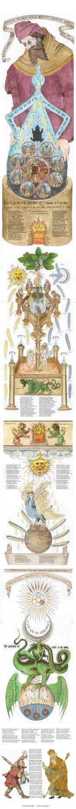 |
adapté d'après Cambridge, Fitzwilliam Museum, Ms. 276 - première moitié du XVIe siècle
voir : Adam McLean http://ds.dial.pipex.com/alchemy/ripley_scroll.html (les n° renvoient aux planches in Beuther, Universal und Particularia)
[le roi provient du RS de la Huntington
Library et nous avons ajouté entre le pèlerin et le roi
le dernier phylactère de même qu'une sentence tout en bas]
Introduction
Le
Ripley Scrowle
[RS] est l'un des
fleurons de l'imagerie alchimique du XVe
siècle, au même titre que le Livre de la Sainte Trinité
[alias Pandora, Reusner]
ou que l'Aurora Consurgens. On en
compte de nombreuses versions, pas moins de vingt et une, datant du XVe
et du XVIe siècle ; ainsi que des
exemplaires datant de la moitié du XVIIe. Par
ailleurs, deux types de symbolisme ont prévalu, avec dix sept
manuscrits d'une série et quatre manuscrits d'une autre
série. On relève encore des disparités dans les
textes ; ainsi, dans cet exemplaire du XVIe siècle,
absolument magnifique, outre les fameux Verses belonging to an emblematic scrowle,
on lit d'autres pièces qui n'apparaissent pas dans le Theatrum Chemicum Britannicum
d'Elias Ashmole [il s'agit de la
première série de phylactères qui encadrent la
bouche d'ombre de l'athanor]. Comme d'habitude, les versions
tardives perdent
à la fois la lettre et l'esprit des premières peintures
et la série datant de 1718, due à David Beuther [cf. le site levity.com
à cet égard],
est déjà nettement
inférieure à celle qui est proposée ici.
C'est donc à Georges Ripley, à qui l'on doit entre autres, le Compound of Alchymy [Douze Portes, 1471], que l'on attribue les écrits figurant dans ce volumen. Certains [cf. Van Lennep, Alchimie, pp. 91-94] sont conservés au British Museum [Add. 32621 et Add. 5025], d'autres à la Princeton University Library [93, XVIe], au Fitzwilliam Museum à Cambridge [276] et à la Bodleian Library d'Oxford [I - 2974]. Dans l'un des exemplaires, faisant partie de la collection Mellon [MS 41], datant de 157, on trouve une Visio mystica d'Arnauld de Villeneuve. Ajoutons d'entrée de jeu que Jung a travaillé à partir des rouleaux du British Museum [MS. Add. 5025. Four rolls drawn in Lübeck, 1588, cf. Psychologie et Alchimie, trad. Buchet-Chastel, p. 619]. Ces rouleaux alchimiques sont associés au nom de Georges Ripley du fait qu'on y trouve des versets de ses oeuvres, compilées par Elias Ashmole dans le Theatrum Chemicum Britannicum [ce qui n'est point étonnant puisque Ashmole possédait deux exemplaires du RS, actuellement à la Bodleian Library]. On trouvera infra ces versets. Jacques Van Lennep [Alchimie, Dervy, 1985] avait dénombré vingt exemplaires du RS dont voici la liste :
1 — Oxford, Bodleian Library, Ms. Bodley Rolls 1 - milieu du XVe siècle avec retouches du XVIe siècle - parchemin, 570 x 59 cm - provenance: W.Dun en 1605 [Alexander J.J., Illuminated Manuscripts in the Bodleian Library, Oxford, 1973, vol. III, p. 88 (n°1018) - Craster H.H., A summary catalogue of Western Manuscripts in the Bodleian Library at Oxford, 1922, vol. II, p. 559 (n° 2974)] ;
2 — Cambridge, Fitzwilliam Museum, Ms. 276 - première moitié du XVIe siècle -papier, 671 x 57 cm - provenance: archevêque W.Sancroft (1617-1693). [Wormald, F., Giles P.M., A descriptive catalogue of the Additionnal Illuminated Manuscripts in the Fitzwilliam Museum, Cambridge, 1982, vol. I, pp. 229-234] ;
3 — Oxford, Bodleian Library, Ashmole Rolls 54 - milieu du XVIe siècle - papier, 518 x 54,6 cm - provenance: E. Ashmole [Black W.H., Catalogue of the Manuscripts bequeated unto the University of Oxford by Elias Ashmole... Oxford, 1845, col. 1486, n° 1771] ;
4 — San Marino (Californie), Huntington Library, Ms HM 30313 - seconde moitié du XVIe siècle - parchemin, ca 304 x 39 cm provenance Sotheby, 9 dec 1958 (lot 42) [A guide to Medieval and Renaissance manuscripts] - Il s'agit du MS. dont nous parlons dans cette section.
5 — New Haven, Yale University Library, Ms Beinecke alchemical 41 vers 1570 - papier, 585,5 x 54 cm - provenance Christie, 1904/HP Kraus libraire à New York [Witten L.C., Pachella R., Alchemy and the Occult - A catalogue of books and manuscripts from the collection of Paul and Mary Mellon, given to Yale Unversity Library, vol. III, New Haven, 1977, pp. 271-288. La description du MS. est donnée] ;
6 — Princeton University Library, Ms 93 fin du XVIe siècle - vélin, 544 x 53 cm provenance H P Kraus libraire à Londres, acquis en 1957 [Handford J.H., A sixteenth-century Scroll of alchemical Emblems, in : Princeton University Library Chronicle, 1958, vol. XIX, pp. 20-202 et catalogue de l'exposition the Suclar Spirit : Life and art at the end of the Middle Ages, the Cloisters, New-York, 26 mars - 3 juin 1975, n° 216]
7 — Oxford, Bodleian Library, Ashmole Rolls 52 - fin du XVIe siècle papier, 597 X 54,5 cm - provenance E. Ashmole [Pächt O., Alexander J.J., le désignent comme une copie d'un ms. du XVe] ;
8 — Londres, British Library, Ms Add 32621 XVIe siècle vélin, 442 x 48,2 cm provenance inconnue [catalogue of additions to the manuscripts in the British Museum, 1882-1887 (1889), p. 163] ;
9 — Londres, Welcome Historical Medical Library, Ms 692 - début du XVIIe siècle - papier, 328 x 40 cm provenance Sotheby 4 août 1911 (lot 1077) [Moorat S.A., Catalogue of western manuscripts on Medicine and Science in the Wellcome Historical Medical Library- Mss written before 1650 A.D. Londres, 1962, p. 512]
10 — Londres, ibid , Ms 693 vers 1600 - papier, 343 x 38,5 cm - provenance W. Paston comte de Yarmouth (1652 - 1732), Sotheby 1 mai 1897 (vente Ashburnham) [idem] ;
11 — Oxford, Bodleian Library, Ashmole Rolls 53 - vers 1600 papier, 597 x 54,6 cm - provenance E. Ashmole [Pächt O., Alexander J.J., Illuminated manuscripts in the Bodleian Library, Oxford, 1973, vol. III, p. 88 (n° 1018) p. 104] ;
12 — Oxford, ibid, Ashmole Rolls 40 - début du XVIIe siècle - papier, 487,7 x 35,6 cm provenance E. Ashmole [ibid, p. 105] ;
13 — Edimbourg, Royal College of Physicians, Erskine Roll - provenance comte de Cromarty en 1707 [Moncrieff W., account of an alchemical Roll..., in : Proceedings of the society of antiquaries of Scotland, 1876, vol. XI, pp. 561-575. Donne la description complète du ms. sauf support et dimensions] ;
14 — Londres, British Library, Ms Add 5025 - XVe siècle (?) (1) papier, 160 x 21 cm - (2) papier, 134 x 21 cm - (3) papier, 147 x 21 cm - (4) papier, 137 x 21 cm
15 — Londres, British Library, Ms Sloane 2523B - XVIe siècle papier, 592 x 46 cm provenance Hans Sloane qui l'acquit en 1725
16 — Londres, ibid, Ms Sloane 2524A XVIe siècle - papier, 277 X 46 cm - provenance idem ;
17 — Localisation inconnue Ms vendu chez Sotheby (vente C. W. Dyson Perrins), 29 nov 1960 (lot 147)
1)- le démiurge en son monde
Le Ripley Scrowle se distribue en quatre sous-ensembles. La partie supérieure montre le génie des lieux que l'on peut identifier à l'Artiste ou au démiurge créateur. Tout d'abord, un phylactère se déploie où l'on peut lire
ce qui signifie : « La pierre mystérieuse est ensevelie dans une source secrète. Le ferment diversifie la pierre qui colore tout ». Il ne faut pas attribuer à cette sentence plus que ce qu'elle peut donner : entendons par là qu'il s'agit plus d'une sorte de maxime que d'une recommandation pour le laboratoire. La traduction n'est peut-être pas sans défaut. Ce texte se trouve dans l'un des MS. de la Mellon collection
Mellon Collection, Yale University Library MS. 28.
56 folios. Paper. 148x102mm. 16th Century [c. 1525.]
1. John Dastin. Rosarius philosophorum [with the prologue.]
2. Elementa sunt quattuor... [With a diagram and directions for mixing pigments.]
3. Hermes or Merlin or Rasis. Laudibile sanctum, or Gemma salutaris [a version in 83 (79) verses.]
Il s'agit du texte n°2 : Elementa sunt quattuor... Il figure au f. 9v., 22 :
« Est lapis occultus secrete fonte sepultus | Rupibus ex mundis consurgens rercus undis ... [Ends f. 44r, 25:] Undique candescat et candida tota nitescat | Candida tunc venas faciet candore serenas | »
Ce MS. provient du nord de l'Italie, peut-être de Bologne et a été composé vers 1525. On suppose qu'il doit beaucoup à l'école de Christopher Schlich de l'université de Bologne. Toutefois, ces mêmes mots se retrouvent dans le MS. Sloane 2327 de la British Library, au f. 22 intitulé Merlini, alchemical verses. On les retrouve encore dans l'Artis Auriferae, vol. II, p. 369 :
« Sed quocunque nomine nominetur, semper tamen est unus et idem, et de eodem. Unde Merculinus: Est lapis occultus, et in imo fonte sepultus, / Vilis et eiectus, fimo vel stercore tectus. »
dans le Rosarium philosophorum [citation de Merculinus] :
« C'est la pierre cachée, ensevelie au fond de la fontaine, rejetée sur les chemins, dans le fumier, recouverte d'excréments. » [De notre Mercure qui est le Lion vert dévorant le soleil]
On trouve à très peu près les mêmes propos dans le Désir Désiré, attribué au pseudo Flamel :
« Morien dit sur ce sujet : il y a une Pierre occulte, cachée et ensevelie dans le plus profond d'une Fontaine vile, abjecte,
peu prisée, et elle est couverte de fiente et d'excréments ; et quoi qu'elle ne soit qu'une, on lui donne toute sortes de noms »
On a des raisons de penser que Merculinus est une corruption de Morienus.
[Voir par ailleurs : D. Waley Singer, Catalogue of Latin and Vernacular Manuscripts in Great Britain and Ireland, dating from before the XVIth Century, Bruxelles 1928-31 (Union Academique Internationale). 793.i, viii, xvii; L. Thorndike - P. Kibre, A Catalogue of Incipits of Mediaeval Scientific Writings in Latin, Cambridge (Mass.) 1963 511, 580]
Au-dessous du phylactère, notre alchimiste contemple de l'air d'une madone le pélican qui contient huit mandalas où sont peintes des scènes alchimiques dans lesquelles il faut voir des prémices du Jardinet hermético spagyrique de Stolcius. Ces scènes, où l'on distingue constamment un matras, s'apparentent également aux peintures du Donum Dei. Déjà, une question se pose dans la mesure où l'on observe huit mandalas, alors que la logique aurait voulu qu'on en voit sept. Effectivement, la version antérieure du British Museum ne montre que sept mandalas : l'intrus est facilement trouvé. Il s'agit du mandala où l'on distingue l'arbre philosophique. Ces huit mandalas sont ventilés autour d'une rota ; il est aisé de constater que, précisément, notre mandala excédentaire n'est pas lié à l'élément central - manifestement vital - de la roue céleste, mais qu'il est greffé - enté pourrait-on ajouter - au moyen d'un petit phylactère appendu au limbe de la rota. Il n'y a donc - stricto sensu - que sept mandalas qui doivent évidemment correspondre aux sept métaux connus des Anciens et aux sept planètes du monde de Ptolémée. Ces sept cercles planétaires sont liés par des chaînes solides à un livre fermé et muet - Mutus Liber - que Senior et Adolphus contemplent et s'efforcent d'ouvrir, en tâchant de localiser l'artifice qui permet ainsi d'accéder à l'humide radical des métaux [cf. notre humide radical métallique]. Car c'est un maître et un disciple qu'il faut voir dans le centre de la roue. Ils sont en cela semblables à tant d'autres que l'on voit, par exemple, dans l'Azoth, attribué à Basile Valentin [dans lequel Fulcanelli voyait l'influence de Senior Zadith, un des vieux auteurs les plus influents, cf. Myst. Cath.] ou dans l'une des illustrations du Theatrum Chemicum Britannicum. EN TO PAN, telle pourrait être la devise résumant cet apparat de chaînes entrelacées, où seul, le médaillon de l'arbre philosophique garde un degré de liberté... Remarquons que la version, plus tardive, de Beuther, est à ce point défectueuse que l'arbre est réduit à la portion congrue : le couple alchimique a pris le devant [rappelant par là l'une des Douze Clefs de Basile Valentin]. J. Van Lennep voit dans notre démiurge :
« ... un adepte vêtu d'un habit religieux, sans doute Ripley, qui présente un grand vase (pélican) contenant diverses figures. » [Alchimie, Dervy, 1985, p. 94]
Il semble, comme on l'a dit, qu'il faille élargir cette vision à celle d'un démiurge et même d'y voir peut-être Yhavé dont parle Jung dans sa Réponse à Job [Buchet Chastel, trad. 1964]. En effet, nous serons amenés à voir que deux visions sont mêlées, l'une dont le caractère gnostique est accusé, l'autre au contraire qui renvoie à la figure du second Adam [Passio Christi] où, pour la première fois de l'humanité à en croire Jung, le logos s'incarne dans et par la crucifixion.
Revenons un instant sur la légende de la roue centrale : elle porte : CORPUS . SPIRITUS . ANIMA. Ce sont les trois principes élémentaires qui sont signifiés : -
-  -
-  . La chaîne est représentée par la
†. Les
médaillons sont liés au livre de la façon suivante
: en haut, trois attaches figurent la Trinité ; en bas, quatre
attaches figurent la quaternité. Examinons le médaillon
de l'arbre philosophique :
. La chaîne est représentée par la
†. Les
médaillons sont liés au livre de la façon suivante
: en haut, trois attaches figurent la Trinité ; en bas, quatre
attaches figurent la quaternité. Examinons le médaillon
de l'arbre philosophique :
médaillon de l'arbre alchimique
Spiritus Anima Corpus
Ces médaillons
semblent former une chronologie. Au départ, le matras est
hermétiquement clos ;  et
et  sont mis en coction prolongée [solutio]. Les esprits
s'élèvent des corps morts [cf. Donum Dei et Rosarium
philosophorum]. Van Lennep écrit :
sont mis en coction prolongée [solutio]. Les esprits
s'élèvent des corps morts [cf. Donum Dei et Rosarium
philosophorum]. Van Lennep écrit :
« À l'intérieur du récipient, le couple alchimique est couché dans les flammes. Il pourrait s'agir de la naissance d'Ève à partir d'une côte d'Adam. » [Alchimie, p. 428]
On ne voit pas en quoi il pourrait être question de la naissance d'Ève, puisque le récipient contient déjà les corps; nous y verrions plutôt l'équivalent de la figure 5 ou de la figure 6 du Rosarium philosophorum qui annoncent la conjonction des principes par leur dissolution [putréfaction]. D'autre part, de suites d'une corruption des textes bibliques, il semble qu'Ève ait été créée à côté d'Adam, et non d'une côte d'Adam, ce qui, on en conviendra, donne un sens nouveau au récit de l'Ancien Testament... Du reste, il semble que ce soit pendant le sommeil d'Adam, durant un songe, qu'Ève fut tirée du néant. De là date l'as- similation de l'esprit [animus] à l'homme et celle de l'âme [anima] à la femme [voir Jung, Commentaire au mystère de la Fleur d'or].
On adapte ensuite un appareil au sommet du matras qui permet de faire sortir l'âme des métaux morts et de la recueillir par sublimation dans des fioles scellées du sceau vitreux d'Hermès [nigredo 1] ; dans le même temps, l'esprit en forme de colombe, sort du récipient ; on retrouvera l'âme et l'esprit plus loin dans la quadratura circuli. Puis, l'âme et l'esprit sont mis de côté tandis qu'on adapte l'une des fioles au haut de la cornue : il s'agit de l'exaltation du Mercure car ce ne peut être que des parts supplémentaires de qui sont ajoutées au contenu du
récipient.
Ces médaillons sont à rapprocher de ceux du Donum Dei
dont il existe plusieurs versions [voir
gravures, notamment version Mylius, VI à IX].
Notons que ces opérations ne correspondent pas vraiment à
des
processus opératoires bien déterminés : il s'agit
là de pures synthèses mentales. Le
contenu des autres vases est mis en recirculation ainsi que semblent le
montrer les autres médaillons ; l'albedo va succéder
à la nigredo.
Le processus en cours est clairement défini : c'est celui de la réincrudation [équivalent de l'individuation de Jung, cf. Aurora consurgens I et II]. Les gravures du Rosarium Philosophorum permettent d'analyser finement cette opération [cf. Jung, Psychologie du Transfert, trad. Albin Michel, 1980]. A gauche, le dernier médaillon de la nigredo : le contenu d'un des matras [sans doute de la rosée de mai ou esprit astral] a été ajouté au récipient et l'on voit la qui s'anime. Au centre, le médaillon de l'albedo
se rapporte à la résurrection : c'est d'abord Diane qui
naît de la Terre. Les mythographes disent qu'ici, Latone,
parvenant à Délos, accouche d'abord d'Artémis puis
d'Apollon. Signalons que le texte entourant les médaillons est
souvent corrompu; de nombreuses variantes sont connues, notamment pour
le RS de Cambridge [Wormald et
Giles] et d'Edimbourg [Moncrieff],
voir Van Lennep [Alchimie, pp. 428 et 430 ; «
grossioribus » semble indiquer la multiplication].
qui s'anime. Au centre, le médaillon de l'albedo
se rapporte à la résurrection : c'est d'abord Diane qui
naît de la Terre. Les mythographes disent qu'ici, Latone,
parvenant à Délos, accouche d'abord d'Artémis puis
d'Apollon. Signalons que le texte entourant les médaillons est
souvent corrompu; de nombreuses variantes sont connues, notamment pour
le RS de Cambridge [Wormald et
Giles] et d'Edimbourg [Moncrieff],
voir Van Lennep [Alchimie, pp. 428 et 430 ; «
grossioribus » semble indiquer la multiplication].
rubigo
Leniter cum igne amicabili fac ut aliqua violentia nos superare non possit
C'est donc à Georges Ripley, à qui l'on doit entre autres, le Compound of Alchymy [Douze Portes, 1471], que l'on attribue les écrits figurant dans ce volumen. Certains [cf. Van Lennep, Alchimie, pp. 91-94] sont conservés au British Museum [Add. 32621 et Add. 5025], d'autres à la Princeton University Library [93, XVIe], au Fitzwilliam Museum à Cambridge [276] et à la Bodleian Library d'Oxford [I - 2974]. Dans l'un des exemplaires, faisant partie de la collection Mellon [MS 41], datant de 157, on trouve une Visio mystica d'Arnauld de Villeneuve. Ajoutons d'entrée de jeu que Jung a travaillé à partir des rouleaux du British Museum [MS. Add. 5025. Four rolls drawn in Lübeck, 1588, cf. Psychologie et Alchimie, trad. Buchet-Chastel, p. 619]. Ces rouleaux alchimiques sont associés au nom de Georges Ripley du fait qu'on y trouve des versets de ses oeuvres, compilées par Elias Ashmole dans le Theatrum Chemicum Britannicum [ce qui n'est point étonnant puisque Ashmole possédait deux exemplaires du RS, actuellement à la Bodleian Library]. On trouvera infra ces versets. Jacques Van Lennep [Alchimie, Dervy, 1985] avait dénombré vingt exemplaires du RS dont voici la liste :
1 — Oxford, Bodleian Library, Ms. Bodley Rolls 1 - milieu du XVe siècle avec retouches du XVIe siècle - parchemin, 570 x 59 cm - provenance: W.Dun en 1605 [Alexander J.J., Illuminated Manuscripts in the Bodleian Library, Oxford, 1973, vol. III, p. 88 (n°1018) - Craster H.H., A summary catalogue of Western Manuscripts in the Bodleian Library at Oxford, 1922, vol. II, p. 559 (n° 2974)] ;
2 — Cambridge, Fitzwilliam Museum, Ms. 276 - première moitié du XVIe siècle -papier, 671 x 57 cm - provenance: archevêque W.Sancroft (1617-1693). [Wormald, F., Giles P.M., A descriptive catalogue of the Additionnal Illuminated Manuscripts in the Fitzwilliam Museum, Cambridge, 1982, vol. I, pp. 229-234] ;
3 — Oxford, Bodleian Library, Ashmole Rolls 54 - milieu du XVIe siècle - papier, 518 x 54,6 cm - provenance: E. Ashmole [Black W.H., Catalogue of the Manuscripts bequeated unto the University of Oxford by Elias Ashmole... Oxford, 1845, col. 1486, n° 1771] ;
4 — San Marino (Californie), Huntington Library, Ms HM 30313 - seconde moitié du XVIe siècle - parchemin, ca 304 x 39 cm provenance Sotheby, 9 dec 1958 (lot 42) [A guide to Medieval and Renaissance manuscripts] - Il s'agit du MS. dont nous parlons dans cette section.
5 — New Haven, Yale University Library, Ms Beinecke alchemical 41 vers 1570 - papier, 585,5 x 54 cm - provenance Christie, 1904/HP Kraus libraire à New York [Witten L.C., Pachella R., Alchemy and the Occult - A catalogue of books and manuscripts from the collection of Paul and Mary Mellon, given to Yale Unversity Library, vol. III, New Haven, 1977, pp. 271-288. La description du MS. est donnée] ;
6 — Princeton University Library, Ms 93 fin du XVIe siècle - vélin, 544 x 53 cm provenance H P Kraus libraire à Londres, acquis en 1957 [Handford J.H., A sixteenth-century Scroll of alchemical Emblems, in : Princeton University Library Chronicle, 1958, vol. XIX, pp. 20-202 et catalogue de l'exposition the Suclar Spirit : Life and art at the end of the Middle Ages, the Cloisters, New-York, 26 mars - 3 juin 1975, n° 216]
7 — Oxford, Bodleian Library, Ashmole Rolls 52 - fin du XVIe siècle papier, 597 X 54,5 cm - provenance E. Ashmole [Pächt O., Alexander J.J., le désignent comme une copie d'un ms. du XVe] ;
8 — Londres, British Library, Ms Add 32621 XVIe siècle vélin, 442 x 48,2 cm provenance inconnue [catalogue of additions to the manuscripts in the British Museum, 1882-1887 (1889), p. 163] ;
9 — Londres, Welcome Historical Medical Library, Ms 692 - début du XVIIe siècle - papier, 328 x 40 cm provenance Sotheby 4 août 1911 (lot 1077) [Moorat S.A., Catalogue of western manuscripts on Medicine and Science in the Wellcome Historical Medical Library- Mss written before 1650 A.D. Londres, 1962, p. 512]
10 — Londres, ibid , Ms 693 vers 1600 - papier, 343 x 38,5 cm - provenance W. Paston comte de Yarmouth (1652 - 1732), Sotheby 1 mai 1897 (vente Ashburnham) [idem] ;
11 — Oxford, Bodleian Library, Ashmole Rolls 53 - vers 1600 papier, 597 x 54,6 cm - provenance E. Ashmole [Pächt O., Alexander J.J., Illuminated manuscripts in the Bodleian Library, Oxford, 1973, vol. III, p. 88 (n° 1018) p. 104] ;
12 — Oxford, ibid, Ashmole Rolls 40 - début du XVIIe siècle - papier, 487,7 x 35,6 cm provenance E. Ashmole [ibid, p. 105] ;
13 — Edimbourg, Royal College of Physicians, Erskine Roll - provenance comte de Cromarty en 1707 [Moncrieff W., account of an alchemical Roll..., in : Proceedings of the society of antiquaries of Scotland, 1876, vol. XI, pp. 561-575. Donne la description complète du ms. sauf support et dimensions] ;
14 — Londres, British Library, Ms Add 5025 - XVe siècle (?) (1) papier, 160 x 21 cm - (2) papier, 134 x 21 cm - (3) papier, 147 x 21 cm - (4) papier, 137 x 21 cm
15 — Londres, British Library, Ms Sloane 2523B - XVIe siècle papier, 592 x 46 cm provenance Hans Sloane qui l'acquit en 1725
16 — Londres, ibid, Ms Sloane 2524A XVIe siècle - papier, 277 X 46 cm - provenance idem ;
17 — Localisation inconnue Ms vendu chez Sotheby (vente C. W. Dyson Perrins), 29 nov 1960 (lot 147)
1)- le démiurge en son monde
Le Ripley Scrowle se distribue en quatre sous-ensembles. La partie supérieure montre le génie des lieux que l'on peut identifier à l'Artiste ou au démiurge créateur. Tout d'abord, un phylactère se déploie où l'on peut lire
(1) EST : LAPIS
: OCCVLTVS :
SECRETO : FONTE : SEPVLTVS : FERMENTVM :VARIAT
: LAPIDEM : QVI : CVNCTA : COLORAT
ce qui signifie : « La pierre mystérieuse est ensevelie dans une source secrète. Le ferment diversifie la pierre qui colore tout ». Il ne faut pas attribuer à cette sentence plus que ce qu'elle peut donner : entendons par là qu'il s'agit plus d'une sorte de maxime que d'une recommandation pour le laboratoire. La traduction n'est peut-être pas sans défaut. Ce texte se trouve dans l'un des MS. de la Mellon collection
Mellon Collection, Yale University Library MS. 28.
56 folios. Paper. 148x102mm. 16th Century [c. 1525.]
1. John Dastin. Rosarius philosophorum [with the prologue.]
2. Elementa sunt quattuor... [With a diagram and directions for mixing pigments.]
3. Hermes or Merlin or Rasis. Laudibile sanctum, or Gemma salutaris [a version in 83 (79) verses.]
Il s'agit du texte n°2 : Elementa sunt quattuor... Il figure au f. 9v., 22 :
« Est lapis occultus secrete fonte sepultus | Rupibus ex mundis consurgens rercus undis ... [Ends f. 44r, 25:] Undique candescat et candida tota nitescat | Candida tunc venas faciet candore serenas | »
Ce MS. provient du nord de l'Italie, peut-être de Bologne et a été composé vers 1525. On suppose qu'il doit beaucoup à l'école de Christopher Schlich de l'université de Bologne. Toutefois, ces mêmes mots se retrouvent dans le MS. Sloane 2327 de la British Library, au f. 22 intitulé Merlini, alchemical verses. On les retrouve encore dans l'Artis Auriferae, vol. II, p. 369 :
« Sed quocunque nomine nominetur, semper tamen est unus et idem, et de eodem. Unde Merculinus: Est lapis occultus, et in imo fonte sepultus, / Vilis et eiectus, fimo vel stercore tectus. »
dans le Rosarium philosophorum [citation de Merculinus] :
« C'est la pierre cachée, ensevelie au fond de la fontaine, rejetée sur les chemins, dans le fumier, recouverte d'excréments. » [De notre Mercure qui est le Lion vert dévorant le soleil]
On trouve à très peu près les mêmes propos dans le Désir Désiré, attribué au pseudo Flamel :
« Morien dit sur ce sujet : il y a une Pierre occulte, cachée et ensevelie dans le plus profond d'une Fontaine vile, abjecte,
peu prisée, et elle est couverte de fiente et d'excréments ; et quoi qu'elle ne soit qu'une, on lui donne toute sortes de noms »
On a des raisons de penser que Merculinus est une corruption de Morienus.
[Voir par ailleurs : D. Waley Singer, Catalogue of Latin and Vernacular Manuscripts in Great Britain and Ireland, dating from before the XVIth Century, Bruxelles 1928-31 (Union Academique Internationale). 793.i, viii, xvii; L. Thorndike - P. Kibre, A Catalogue of Incipits of Mediaeval Scientific Writings in Latin, Cambridge (Mass.) 1963 511, 580]
Au-dessous du phylactère, notre alchimiste contemple de l'air d'une madone le pélican qui contient huit mandalas où sont peintes des scènes alchimiques dans lesquelles il faut voir des prémices du Jardinet hermético spagyrique de Stolcius. Ces scènes, où l'on distingue constamment un matras, s'apparentent également aux peintures du Donum Dei. Déjà, une question se pose dans la mesure où l'on observe huit mandalas, alors que la logique aurait voulu qu'on en voit sept. Effectivement, la version antérieure du British Museum ne montre que sept mandalas : l'intrus est facilement trouvé. Il s'agit du mandala où l'on distingue l'arbre philosophique. Ces huit mandalas sont ventilés autour d'une rota ; il est aisé de constater que, précisément, notre mandala excédentaire n'est pas lié à l'élément central - manifestement vital - de la roue céleste, mais qu'il est greffé - enté pourrait-on ajouter - au moyen d'un petit phylactère appendu au limbe de la rota. Il n'y a donc - stricto sensu - que sept mandalas qui doivent évidemment correspondre aux sept métaux connus des Anciens et aux sept planètes du monde de Ptolémée. Ces sept cercles planétaires sont liés par des chaînes solides à un livre fermé et muet - Mutus Liber - que Senior et Adolphus contemplent et s'efforcent d'ouvrir, en tâchant de localiser l'artifice qui permet ainsi d'accéder à l'humide radical des métaux [cf. notre humide radical métallique]. Car c'est un maître et un disciple qu'il faut voir dans le centre de la roue. Ils sont en cela semblables à tant d'autres que l'on voit, par exemple, dans l'Azoth, attribué à Basile Valentin [dans lequel Fulcanelli voyait l'influence de Senior Zadith, un des vieux auteurs les plus influents, cf. Myst. Cath.] ou dans l'une des illustrations du Theatrum Chemicum Britannicum. EN TO PAN, telle pourrait être la devise résumant cet apparat de chaînes entrelacées, où seul, le médaillon de l'arbre philosophique garde un degré de liberté... Remarquons que la version, plus tardive, de Beuther, est à ce point défectueuse que l'arbre est réduit à la portion congrue : le couple alchimique a pris le devant [rappelant par là l'une des Douze Clefs de Basile Valentin]. J. Van Lennep voit dans notre démiurge :
« ... un adepte vêtu d'un habit religieux, sans doute Ripley, qui présente un grand vase (pélican) contenant diverses figures. » [Alchimie, Dervy, 1985, p. 94]
Il semble, comme on l'a dit, qu'il faille élargir cette vision à celle d'un démiurge et même d'y voir peut-être Yhavé dont parle Jung dans sa Réponse à Job [Buchet Chastel, trad. 1964]. En effet, nous serons amenés à voir que deux visions sont mêlées, l'une dont le caractère gnostique est accusé, l'autre au contraire qui renvoie à la figure du second Adam [Passio Christi] où, pour la première fois de l'humanité à en croire Jung, le logos s'incarne dans et par la crucifixion.
Revenons un instant sur la légende de la roue centrale : elle porte : CORPUS . SPIRITUS . ANIMA. Ce sont les trois principes élémentaires qui sont signifiés :
- - . La chaîne est représentée par la
†. Les
médaillons sont liés au livre de la façon suivante
: en haut, trois attaches figurent la Trinité ; en bas, quatre
attaches figurent la quaternité. Examinons le médaillon
de l'arbre philosophique :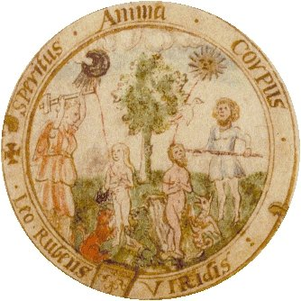
médaillon de l'arbre alchimique
Spiritus Anima Corpus
Le
couple alchimique s'apprête à subir la dissolution, dans
une attitude de prière : à gauche une déesse abat
un maillet [un merlin]
sur la ; idem à droite pour le .
On lit : LEO .
RUBENS . VIRIDIS
.
et la est entourée des deux lions : le
lion vert et le lion rouge. À droite, on distingue une sorte de
griffon. Près de l'arbre, un aigle, qui indique
l'opération que l'Artiste doit mener : la dissolution,
complémentaire de la sublimation. Rappelons que ces deux
opérations se confondent - in fine - dans la
conjonction. Sur l'arbre, voir Aurora
consurgens, I et Mylius, Philosophia Reformata.
Van Lennep ajoute :
« Le fait que ce soient les têtes qui sont visées constitue l'élément symbolique le plus intéressant. Il rappelle sans doute que, depuis les alchimistes gréco-égyptiens, la tête était considérée comme le réceptacle de la pierre philosophale. » [Alchimie, op. cit., p. 428]
Réflexion fort juste qui attire deux ordres de commentaires. D'abord, l'iconographie confirme cette importance si l'on pense à deux aquarelles de l'Aurora consurgens [n° XXV et surtout XXXII où l'on voit l'opération du trépan] et à l'emblème XXIII de l'Atalanta fugiens [Héphaistos, fendant le crâne de Zeus, en fait jaillir Pallas Athéna].
Ensuite, on devine les retombées au plan psychologique, d'abord entr'aperçues par Gerhard Dorneus, le principal sectateur de Paracelse [voir M.L. von Franz, l'Imagination active et tous les ouvrages de Jung traitant d'alchimie où Dorn est nommé]. Le point nous semble particulièrement juste avec Zeus puisque nous avons établi, dans l'Aurora consurgens II, que présentait des rapports
étroits avec le phénomène de projection [l'individuation].
présentait des rapports
étroits avec le phénomène de projection [l'individuation].
Les autres médaillons de droite évoquent des scènes se rapportant à la nigredo et à la solutio :
; idem à droite pour le .
On lit : LEO .
RUBENS . VIRIDIS
.
et la est entourée des deux lions : le
lion vert et le lion rouge. À droite, on distingue une sorte de
griffon. Près de l'arbre, un aigle, qui indique
l'opération que l'Artiste doit mener : la dissolution,
complémentaire de la sublimation. Rappelons que ces deux
opérations se confondent - in fine - dans la
conjonction. Sur l'arbre, voir Aurora
consurgens, I et Mylius, Philosophia Reformata.
Van Lennep ajoute :« Le fait que ce soient les têtes qui sont visées constitue l'élément symbolique le plus intéressant. Il rappelle sans doute que, depuis les alchimistes gréco-égyptiens, la tête était considérée comme le réceptacle de la pierre philosophale. » [Alchimie, op. cit., p. 428]
Réflexion fort juste qui attire deux ordres de commentaires. D'abord, l'iconographie confirme cette importance si l'on pense à deux aquarelles de l'Aurora consurgens [n° XXV et surtout XXXII où l'on voit l'opération du trépan] et à l'emblème XXIII de l'Atalanta fugiens [Héphaistos, fendant le crâne de Zeus, en fait jaillir Pallas Athéna].
Ensuite, on devine les retombées au plan psychologique, d'abord entr'aperçues par Gerhard Dorneus, le principal sectateur de Paracelse [voir M.L. von Franz, l'Imagination active et tous les ouvrages de Jung traitant d'alchimie où Dorn est nommé]. Le point nous semble particulièrement juste avec Zeus puisque nous avons établi, dans l'Aurora consurgens II, que
présentait des rapports
étroits avec le phénomène de projection [l'individuation]. Les autres médaillons de droite évoquent des scènes se rapportant à la nigredo et à la solutio :
et
sont mis en coction prolongée [solutio]. Les esprits
s'élèvent des corps morts [cf. Donum Dei et Rosarium
philosophorum]. Van Lennep écrit :« À l'intérieur du récipient, le couple alchimique est couché dans les flammes. Il pourrait s'agir de la naissance d'Ève à partir d'une côte d'Adam. » [Alchimie, p. 428]
On ne voit pas en quoi il pourrait être question de la naissance d'Ève, puisque le récipient contient déjà les corps; nous y verrions plutôt l'équivalent de la figure 5 ou de la figure 6 du Rosarium philosophorum qui annoncent la conjonction des principes par leur dissolution [putréfaction]. D'autre part, de suites d'une corruption des textes bibliques, il semble qu'Ève ait été créée à côté d'Adam, et non d'une côte d'Adam, ce qui, on en conviendra, donne un sens nouveau au récit de l'Ancien Testament... Du reste, il semble que ce soit pendant le sommeil d'Adam, durant un songe, qu'Ève fut tirée du néant. De là date l'as- similation de l'esprit [animus] à l'homme et celle de l'âme [anima] à la femme [voir Jung, Commentaire au mystère de la Fleur d'or].
On adapte ensuite un appareil au sommet du matras qui permet de faire sortir l'âme des métaux morts et de la recueillir par sublimation dans des fioles scellées du sceau vitreux d'Hermès [nigredo 1] ; dans le même temps, l'esprit en forme de colombe, sort du récipient ; on retrouvera l'âme et l'esprit plus loin dans la quadratura circuli. Puis, l'âme et l'esprit sont mis de côté tandis qu'on adapte l'une des fioles au haut de la cornue : il s'agit de l'exaltation du Mercure car ce ne peut être que des parts supplémentaires de
qui sont ajoutées au contenu du
récipient.
Ces médaillons sont à rapprocher de ceux du Donum Dei
dont il existe plusieurs versions [voir
gravures, notamment version Mylius, VI à IX].
Notons que ces opérations ne correspondent pas vraiment à
des
processus opératoires bien déterminés : il s'agit
là de pures synthèses mentales. Le
contenu des autres vases est mis en recirculation ainsi que semblent le
montrer les autres médaillons ; l'albedo va succéder
à la nigredo.Le processus en cours est clairement défini : c'est celui de la réincrudation [équivalent de l'individuation de Jung, cf. Aurora consurgens I et II]. Les gravures du Rosarium Philosophorum permettent d'analyser finement cette opération [cf. Jung, Psychologie du Transfert, trad. Albin Michel, 1980]. A gauche, le dernier médaillon de la nigredo : le contenu d'un des matras [sans doute de la rosée de mai ou esprit astral] a été ajouté au récipient et l'on voit la
qui s'anime. Au centre, le médaillon de l'albedo
se rapporte à la résurrection : c'est d'abord Diane qui
naît de la Terre. Les mythographes disent qu'ici, Latone,
parvenant à Délos, accouche d'abord d'Artémis puis
d'Apollon. Signalons que le texte entourant les médaillons est
souvent corrompu; de nombreuses variantes sont connues, notamment pour
le RS de Cambridge [Wormald et
Giles] et d'Edimbourg [Moncrieff],
voir Van Lennep [Alchimie, pp. 428 et 430 ; «
grossioribus » semble indiquer la multiplication].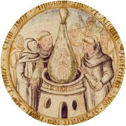
rubigo
Leniter cum igne amicabili fac ut aliqua violentia nos superare non possit
C'est
ce que nous voyons dans le septième médaillon qui
correspond à la naissance du BasileuV ou au Christ en
gloire dans le retable d'Issenheim.
Nous allons à présent revenir sur un symbole du Soufre
qui est assez utilisé en alchimie : le crapaud.
On en trouve
plusieurs représentations dans l'iconographie, par exemple dans
le Symbola
Aureae Mensae de Maier ou encore dans le Mercurius
Redivivus de Samuel Norton [cf. Aurora
consurgens I]. On peut encore citer l'emblème V de l'Atalanta
fugiens. Bien que vivant non loin de  ,
le crapaud est décrit comme un batracien chthonien
,
le crapaud est décrit comme un batracien chthonien  . Mais il tient sa résidence dans une terre
fangeuse, boueuse, marquée par la corruption et d'où
montent des émanations sulfureuses qui laissent peu de doute sur
son origine plutonienne et primitive. Aussi l'emblème
V de
l'Atalante fugitive déclenche-t-il involontairement quelque
effroi, devant cette vision surréaliste - là encore -
d'un crapaud suçant le sein d'une Vierge [on a déjà vu image aussi
sordide : revoyons les barbons s'abreuver aux seins de la Vierge
dans l'Aurora consurgens, figure VIII].
Dans le cas présent, le sein est remplacé par un matras
retourné, d'où s'écoule quelque liquide nourricier
rappelant l'aqua permanens ou Lait de Vierge [cf. Turba, De Chemia de Senior et Artephius]. Chez Norton, le
crapaud est placé aux racines de l'arbre ; on notera qu'ici
c'est le premier symbole que l'Artiste démiurge ait sous les
yeux. Il est ainsi fondamental de voir que la corruption est bien
à la base du grand oeuvre dans le petit monde des alchimistes
à l'instar de ce qu'elle est dans notre monde matériel,
déshabité par le spirituel. C'est
précisément le point de liaison qui peut être
trouvé entre l'alchimie séculaire [prise à tort pour une
protochimie élémentaire, ce dont Jung a toujours eu
à l'esprit de même, dans un registre très
différent, que l'Adepte Fulcanelli] et la philosophie de
notre époque : redonner du sens au spirituel. Nous pensons que
la lecture de Réponse
à Job [Jung,
trad. Buchet-Chastel] peut utilement contribuer à
l'analyse de ce regard, tout à la fois mélancolique,
perspicace et désabusé, de l'Artiste face à son
oeuvre qu'il peut initier sans pouvoir en contrôler
l'élément principal :
. Mais il tient sa résidence dans une terre
fangeuse, boueuse, marquée par la corruption et d'où
montent des émanations sulfureuses qui laissent peu de doute sur
son origine plutonienne et primitive. Aussi l'emblème
V de
l'Atalante fugitive déclenche-t-il involontairement quelque
effroi, devant cette vision surréaliste - là encore -
d'un crapaud suçant le sein d'une Vierge [on a déjà vu image aussi
sordide : revoyons les barbons s'abreuver aux seins de la Vierge
dans l'Aurora consurgens, figure VIII].
Dans le cas présent, le sein est remplacé par un matras
retourné, d'où s'écoule quelque liquide nourricier
rappelant l'aqua permanens ou Lait de Vierge [cf. Turba, De Chemia de Senior et Artephius]. Chez Norton, le
crapaud est placé aux racines de l'arbre ; on notera qu'ici
c'est le premier symbole que l'Artiste démiurge ait sous les
yeux. Il est ainsi fondamental de voir que la corruption est bien
à la base du grand oeuvre dans le petit monde des alchimistes
à l'instar de ce qu'elle est dans notre monde matériel,
déshabité par le spirituel. C'est
précisément le point de liaison qui peut être
trouvé entre l'alchimie séculaire [prise à tort pour une
protochimie élémentaire, ce dont Jung a toujours eu
à l'esprit de même, dans un registre très
différent, que l'Adepte Fulcanelli] et la philosophie de
notre époque : redonner du sens au spirituel. Nous pensons que
la lecture de Réponse
à Job [Jung,
trad. Buchet-Chastel] peut utilement contribuer à
l'analyse de ce regard, tout à la fois mélancolique,
perspicace et désabusé, de l'Artiste face à son
oeuvre qu'il peut initier sans pouvoir en contrôler
l'élément principal :  . Le temps lui échappe, en effet, et avec le
temps, c'est aussi la mesure ; c'est la raison pour laquelle les textes
s'accordent quant au fait que si le poids de l'Art est connu de
l'alchimiste, le poids de
nature lui échappe par définition. C'est ce qui
sépare le spirituel du temporel . Le seul moyen d'obvier à cette
impossibilité est de provoquer un conflit entre ces deux grands
ennemis : l'espace et le temps. L'alchimie trouve ce moyen dans
l'arcane du feu ou †.
Nous terminerons ce premier point par la devise qui court sur les deux
branches du vase distillatoire ou pélican :
. Le temps lui échappe, en effet, et avec le
temps, c'est aussi la mesure ; c'est la raison pour laquelle les textes
s'accordent quant au fait que si le poids de l'Art est connu de
l'alchimiste, le poids de
nature lui échappe par définition. C'est ce qui
sépare le spirituel du temporel . Le seul moyen d'obvier à cette
impossibilité est de provoquer un conflit entre ces deux grands
ennemis : l'espace et le temps. L'alchimie trouve ce moyen dans
l'arcane du feu ou †.
Nous terminerons ce premier point par la devise qui court sur les deux
branches du vase distillatoire ou pélican :
,
le crapaud est décrit comme un batracien chthonien . Mais il tient sa résidence dans une terre
fangeuse, boueuse, marquée par la corruption et d'où
montent des émanations sulfureuses qui laissent peu de doute sur
son origine plutonienne et primitive. Aussi l'emblème
V de
l'Atalante fugitive déclenche-t-il involontairement quelque
effroi, devant cette vision surréaliste - là encore -
d'un crapaud suçant le sein d'une Vierge [on a déjà vu image aussi
sordide : revoyons les barbons s'abreuver aux seins de la Vierge
dans l'Aurora consurgens, figure VIII].
Dans le cas présent, le sein est remplacé par un matras
retourné, d'où s'écoule quelque liquide nourricier
rappelant l'aqua permanens ou Lait de Vierge [cf. Turba, De Chemia de Senior et Artephius]. Chez Norton, le
crapaud est placé aux racines de l'arbre ; on notera qu'ici
c'est le premier symbole que l'Artiste démiurge ait sous les
yeux. Il est ainsi fondamental de voir que la corruption est bien
à la base du grand oeuvre dans le petit monde des alchimistes
à l'instar de ce qu'elle est dans notre monde matériel,
déshabité par le spirituel. C'est
précisément le point de liaison qui peut être
trouvé entre l'alchimie séculaire [prise à tort pour une
protochimie élémentaire, ce dont Jung a toujours eu
à l'esprit de même, dans un registre très
différent, que l'Adepte Fulcanelli] et la philosophie de
notre époque : redonner du sens au spirituel. Nous pensons que
la lecture de Réponse
à Job [Jung,
trad. Buchet-Chastel] peut utilement contribuer à
l'analyse de ce regard, tout à la fois mélancolique,
perspicace et désabusé, de l'Artiste face à son
oeuvre qu'il peut initier sans pouvoir en contrôler
l'élément principal : . Le temps lui échappe, en effet, et avec le
temps, c'est aussi la mesure ; c'est la raison pour laquelle les textes
s'accordent quant au fait que si le poids de l'Art est connu de
l'alchimiste, le poids de
nature lui échappe par définition. C'est ce qui
sépare le spirituel du temporel . Le seul moyen d'obvier à cette
impossibilité est de provoquer un conflit entre ces deux grands
ennemis : l'espace et le temps. L'alchimie trouve ce moyen dans
l'arcane du feu ou †.
Nous terminerons ce premier point par la devise qui court sur les deux
branches du vase distillatoire ou pélican :Dans le MS. Melon, datant de 1750, la lettre s'est tellement perdue qu'on lit : YOV . MVST . MAKE . WATER . OF . YE . ERTHE . AND . ERTHE . OF . YE . EYERF . AND . EYERE . OF . YE . FYERE . AND . FYERE . OF . YE . ERTHE . Allusion est faite à la ronde des éléments : on doit faire de l'EAU avec la TERRE ; de la TERRE avec l'AIR ; de l'AIR du FEU et du FEU de la TERRE. Chose connue depuis les plus anciens philosophes grecs [cf. idée alchimique, V. Voir supra la suite du texte du MS. Mellon : « Elementa sunt quattuor... » qui rappelle une phrase de Sénèque]. L'auteur s'est peut-être inspiré du début du Upon the Elixir du pseudo Pearce the Monk [voir infra] :
Take Erth of Erth, Erths Moder,
And Watur of Erth yt ys no oder,
And Fier of Erth
Nous tenons donc ici une nouvelle version du serpent Ouroboros, avec l'idée d'une incessante circulation qui évoque des mouvements de convection dans la matière pâteuse du Mercure. Ce pélican, qui s'apparente au vase de nature, est plongé par le démiurge dans un fourneau céleste où l'on peut lire, à sa base :
que l'on traduit par : « Voici la fin de la pierre blanche et le début de la pierre rouge », ce qu'il faut entendre de l'élixir. Sur le rebord du creuset, on lit encore :
allusion à la mer noire où viennent se dissoudre la
et le des philosophes. Plus bas, encadrant l'entrée
embrasée
du
fourneau, nous trouvons ce texte (5), sur quatre
colonnes
:| Of the Sonne take the
light The Red gum that is so bright And of the Moone do also The which gum they both trowe The philosophers Sulphur vive This I call it without strife Kybright and Kebright it is called also And other names many more Of them draw a white tincture And make of them a marriage pure |
Between the
husband and the wife Espowsed with the water of life But of this water thou must beware Or else thy work will be full bare It must be made of his own kind Mark thou now in thy mind Acetum of philosophers men call this A water abiding so it is The maidens milk of the dew That all the work doth renew |
The Spirit of
life it is called also And other names many more The which causeth our generation Betwixt the man and the woman Soe looke thou no division Be there in the coniantion Of the Moone and of the Sonne After the marriage is begun And all the while they be a wedding Give him to her drinking Acetum that is good and fine Better to them then any wine |
Now when this
marriage is done Philosophers call this a stone The which hath great nature To bring a stone that is pure Soe he have kindly nourishing Perfect heate & decoction But in the Matrix when they be put Looke never the vessel be unshut Till they have ingendred a stone In all the world is not such a one |
| Du soleil prenez la
lumière, La gomme rouge qui est si éclatante, Et de la Lune faites aussi, De laquelle gomme ils tous deux parés, Le Soufre philosophique vif, Ceci je l'appelle sans mensonge, On les appelle aussi Roi et Reine éclatants, Et de plusieurs autres noms, D'eux extrais la teinture blanche, Et fait d'eux un mariage pur, |
Entre
le mari et la femme, Epousés par l'eau de la vie, Mais de cette eau vous devez prendre garde, Ou autrement votre travail sera pure perte, Elle doit être faite de leur propre genre, Gardez-le bien à l'esprit, Les hommes l'appellent l'Acetum des philosophes, Elle est une eau permanente, Le lait de vierge de la rosée, A qui l'oeuvre doit tout son renouvellement, |
On
l'appelle aussi l'esprit de la vie, Et de beaucoup d'autres noms, Laquelle provoque la génération, Entre l'homme et la femme, Mais voyez qu'il n'y ait point de division, Dans la conjonction, De la Lune et du Soleil, Dès que le mariage est commencé Et pendant qu'ils feront mariage, Donnez à boire le mâle à la femelle, Acetum qui soit bon et fin, Meilleur pour eux que tout vin, |
Puis lorsque ce mariage est
consommé, Le Philosophe l'appelle une pierre, Laquelle a grande nature, Amener une pierre qui est si pure, Qu'il a nourri patiemment, Chaleur parfaite et décoction, Mais dans la matrice quand elles sont mises, Ne laissez jamais le verre non fermé, Jusqu'à ce qu'il aient engendré une pierre, De part le monde il n'y a pas une pierre semblable |
notes : - nous lisons sans mensonge ou assurément. Acetum : esprit caustique ou Mercure de la voie commune; il s'agit de Typhon -
Il s'agit d'une parabole sur le Soufre rouge dissous ou sulphur
. Ce texte est attribué à Richard
Carpenter et figure dans Ashmole [Theatrum
Chemicum Britannicum, pp. 275-277]. Van Lennep signale que les
exemplaires d'Oxford et de Yale comportent ce texte mais il omet
l'exemplaire de la Huntington
Library. En voici le texte :L'auteur a pris les sept premiers vers qui se retrouvent dans la première colonne ; il en a ensuite repris quatre autres qui se retrouvent à la troisième colonne. Le reste des Verses de Carpenter n'a pas été retenu. On relève par ailleurs une influence des Verses placed before Pearce the Black Monk, upon the Elixir [voir Theatrum Chemicum Britannicum, pp. 427-430] Voyons à présent l'article Kibrith du Dictionnaire mytho-hermétique de Pernety :
Kibrich ou Kibrith. Terme de Science Hermétique, dont se sont servis quelques Chymistes pour signifier le soufre philosophique. Il faut rectifier sur ce corps Kibrich et Zubeth, c’est-à-dire, les deux fumées qui comprennent et qui embrassent les deux luminaires, et mettre dessus ce qui les ramollit, et qui est l’accomplissement des teintures et des esprits, et les véritables poids de la Science. Marie.
On peut voir, précisément, dans le petit matras retourné, cette substance qui permet de ramollir les corps et dont la forme est indiquée par la présence du crapaud. Kibrith est l'équivalent de Gabricius qui désigne le principe mâle ou soufre [cf. Jung, Psychologie et Religion, p. 194] ; quant à Marie, il s'agit de la Prophétesse que l'on dit soeur de Moïse [sic]. À noter que dans le Dialogue de Marie et Aros, les termes sont brouillés puisqu'il est mentionné un kibrick blanc et une chaux humide [ce qui est l'inverse de ce qui est indiqué dans le texte que nous examinons]. Ce terme de kibrith a été repris par le pseudo Flamel dans le Désir Désiré. Il est également cité dans les Verses belonging to an emblematicall scrowle [cf. infra]. Plus loin, l'auteur parle du Lait de Vierge ou Acetum des philosophes [aqua viva ou aqua permanens]. Enfin, on note l'importance du sceau vitreux d'Hermès : « Let never the glasse be unshut. ». Le texte diffère quelque peu de celui que présente Adam Mc Lean dans sa page sur le Ripley Scrowle.
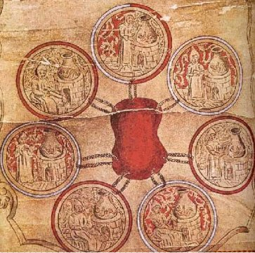
les sept médaillons de la version du Ripley Scrowle de 1588 [MS. Add. 5025, Lübeck - British Museum, Londres ]
cliquez pour développer le panneau
Pour terminer sur cette partie, nous présentons cet extrait de la version de Lübeck datant de 1588, figurant dans le Psychologie et Alchimie de Jung [trad. Buchet Chastel, p. 566, fig. 251]. On remarque que le symbolisme est épuré, très simplifié et que le mandala central est remplacé par une sorte de coeur central autour duquel sont organisés les sept stades du processus alchimique, présentés comme une monade. Le premier panneau du RS se termine avec ces mots :
Texte que l'on trouve dans un traité attribué à Arnaud de Villeneuve, l'Epistola super Alchemia ad Regem Neapolitanum [in Practica Magistri ad quendam Papam, ex libro dicto, Brevarius Librorum Alchemiae, Bibliotheca chemica curiosa, t. I, p. 686]. Allusion, encore une fois, à la ronde des éléments :
et  sont liés au . L'eau est présente sous deux formes : d'abord
l'eau typhonienne du Mercure commun puis l'aqua permanens dans la phase
qui correspond à la grande coction. Il faut noter que le texte
de Villa Nova donne Pyr purgat
et pas Air
purgat, ce qui est plus logique puisqu'il s'agit des
deux éléments du feu aqueux ou eau ignée. L'esprit
est
omniprésent, associé à la dissolution : on peut en
voir la meilleure formulation dans la figure 8
du Rosarium philosophorum.
Ce spiritus est consubstantiel au Mercure là encore et il n'est
pas du tout évident de faire la part des choses entre la portion
qui
« pénètre » et celle qui est «
pénétrée. » Il s'agit d'un processus
dynamique et c'est là le point fondamental. C'est aussi ce qui
explique que de nombreux textes n'apportent - au propre comme au
figuré - que fort peu de lumière sur cette phase de
l'oeuvre sans que, pour autant, on puisse accuser leurs auteurs
d'être « envieux ». Ainsi que Jung l'a montré,
les alchimistes atteignaient là les limites conceptuelles d'une
description
à caractère purement physique et projetaient [de façon inconsciente et
numineuse] des contenus de la psyché dans
la matière ou, du moins, dans les états que la
matière adoptait, c'est-à-dire dans sa forme. Van Lennep signale
que sur la version du RS de Yale se trouve :
sont liés au . L'eau est présente sous deux formes : d'abord
l'eau typhonienne du Mercure commun puis l'aqua permanens dans la phase
qui correspond à la grande coction. Il faut noter que le texte
de Villa Nova donne Pyr purgat
et pas Air
purgat, ce qui est plus logique puisqu'il s'agit des
deux éléments du feu aqueux ou eau ignée. L'esprit
est
omniprésent, associé à la dissolution : on peut en
voir la meilleure formulation dans la figure 8
du Rosarium philosophorum.
Ce spiritus est consubstantiel au Mercure là encore et il n'est
pas du tout évident de faire la part des choses entre la portion
qui
« pénètre » et celle qui est «
pénétrée. » Il s'agit d'un processus
dynamique et c'est là le point fondamental. C'est aussi ce qui
explique que de nombreux textes n'apportent - au propre comme au
figuré - que fort peu de lumière sur cette phase de
l'oeuvre sans que, pour autant, on puisse accuser leurs auteurs
d'être « envieux ». Ainsi que Jung l'a montré,
les alchimistes atteignaient là les limites conceptuelles d'une
description
à caractère purement physique et projetaient [de façon inconsciente et
numineuse] des contenus de la psyché dans
la matière ou, du moins, dans les états que la
matière adoptait, c'est-à-dire dans sa forme. Van Lennep signale
que sur la version du RS de Yale se trouve :« ... une inscription très intéressante puisqu'il s'agit d'une citation d'Arnaud de Villeneuve et qu'elle paraît bien avoir inspiré l'auteur du rouleau. Cet alchimiste y décrit une vision où lui apparut un vieil homme qui tenait un livre aux pages d'or et à la couverture ornée de sept sceaux. » [Alchimie, p. 430]
Nous venons de voir qu'il est fort possible que l'auteur du rouleau ait été inspiré aussi par d'autres textes de Villa Nova. Cette Visio mystica rappelle ce que rapporte Flamel de sa découverte du Livre d'Abraham Juif [voir Figures Hiéroglyphiques et Alchimie de Flamel, Denis Molinier]; et aussi la vision mystique de Zosime que Jung analyse dans ses Racines de la Conscience [pp. 157-166, voir Traité du divin Zosime sur l'art, Swsimou tou qeiou peri arethV], où le héros endormi voit en songe un prêtre aux cheveux blancs.
Ce texte d'Arnaud de Villeneuve semble avoir été tiré du Flos Florum [alias Visio Mystica, Flos Regis, Cathena aurea ou Rosarius Arnaldi de Vilanova brevissimus, cité par Adam McLean ]. Voici cet extrait :
I sawe
an olde man shyninge and
rysinge in brightnes havinge in his
hande a booke shutt and sealed with seaven seales, and
beholdinge the booke well I perceived the leaves of the booke to be
of golde; and the cover and claspes weare silver, on the toppe,
whereof was placed a speire ringe of golde rould with silver
and in the circumference of the ringe was written this subscription: Sprite: Soule: Bodie. from which
ringe seaven sealed chanynes as well
of golde as of silver proceadinge, did encompas the whole booke,
and by a respect often pursinge the booke, did all againe returne
unto the rynge. Whyche olde man being demanded by me what
this signified, answered sayinge, the ringe and golden skeine coiled
with silver is the Philosophers stone, which in his profunditie is
golde and the mayle, and in his manyfeste silver and the female, And
howe muche [ ] he is devided in his parte is alwayes the spirite, but the
seaven operations which doth encompass the whole maiestry of the
stone doe after make it perfect. And the olde man beinge again
commanded by me what the inscription of the rynge did
signifie, he answered the wryting is miraculus because it brieflie
comprehendeth all the secretts of Philosophie, by the Sprite is
understood Mercury which subtely entering into the bodie disposeth it into
symplicitie, and draweth the Sowle from it, And elivating it upwards
into the eayre, beareth it with him...
En réalité, ce texte ne serait pas l'oeuvre de Villa Nova mais les Sept Visions de Marie la Prophétesse sur l'oeuvre de la Pierre des philosophes [anonyme du XVIIe siècle, Chrysopeia, fascicule IV, 1988]. Compte tenu de la date, ce texte ne saurait être original. Le vieil homme dont il est question est aussi une allégorie sur le Mercurius senex [voir Azoth alias Occulta philosophia, opération du mystère philosophique]. Ces MS. semblent être congénères de ceux de Vossianus à Leyde [Voss. Chym. F. 6 f. 299v - 302 ; Voss. Chym. Q. 11 f. 117v - 118]. Dans l'un des forums d'Adam McLean, on relève cette intéressante intervention de José Rodríguez.
During the first
reunion dedicated to Arnau de Vilanova (Barcelona, 6-8
April 1994) Michela Pereira speaks in a great
conference about this early work like an interesting historical date. Today I found references about another alchemist of Montpellier called Pere Arnau de Vilanova who signed his works around 1330-1345 like "Arnau de Vilanova", "Pere de Vilanova" or "magister Arnau de Vilanova". He is the author of a "Rosarium Philosophorum" (dated 1336) unpublished with a lot of alchemy recipes. It's described in José Ramón de Luanco. "La Alquimia en España", Barcelona, 1897, pp 103-110. Right now I'm working with the treatises of Pere Arnau de Vilanova and I think that he is the real author of the "Liber desflorationis" and not the famous physician from Valencia with very similar name died in 1311.
At the present there is a serious disagreement about the authenticity of all the alchemical corpus attributed to the Spanish physician Arnau de Vilanova. The authenticity of not one of the alchemical works attributed to Arnau can't be guaranteed. Jose Antonio Paniagua (Navarra University), Michael R. McVaugth (University of North Carolina at Chapel Hill) and Luis García Ballester (CSIC, Barcelona) are the best specialists of Arnau's medical and scientific writings and they said that he was not an alchemist. The results of recent research into the alchemical corpus attributed to Arnau are no longer unequivocal. Historians of medieval alchemy promote the view according to which the idea of a "Universal Medicine" which purges body and soul can be integrated with the authentic corpus of Arnau's spiritual writings. Only a systematic codicological study will be able to substantiate or refute this view which contrasts with Arnau's anti- alchemical utterances in his medical treatises.
conference about this early work like an interesting historical date. Today I found references about another alchemist of Montpellier called Pere Arnau de Vilanova who signed his works around 1330-1345 like "Arnau de Vilanova", "Pere de Vilanova" or "magister Arnau de Vilanova". He is the author of a "Rosarium Philosophorum" (dated 1336) unpublished with a lot of alchemy recipes. It's described in José Ramón de Luanco. "La Alquimia en España", Barcelona, 1897, pp 103-110. Right now I'm working with the treatises of Pere Arnau de Vilanova and I think that he is the real author of the "Liber desflorationis" and not the famous physician from Valencia with very similar name died in 1311.
At the present there is a serious disagreement about the authenticity of all the alchemical corpus attributed to the Spanish physician Arnau de Vilanova. The authenticity of not one of the alchemical works attributed to Arnau can't be guaranteed. Jose Antonio Paniagua (Navarra University), Michael R. McVaugth (University of North Carolina at Chapel Hill) and Luis García Ballester (CSIC, Barcelona) are the best specialists of Arnau's medical and scientific writings and they said that he was not an alchemist. The results of recent research into the alchemical corpus attributed to Arnau are no longer unequivocal. Historians of medieval alchemy promote the view according to which the idea of a "Universal Medicine" which purges body and soul can be integrated with the authentic corpus of Arnau's spiritual writings. Only a systematic codicological study will be able to substantiate or refute this view which contrasts with Arnau's anti- alchemical utterances in his medical treatises.
Remarquons pour terminer que ce texte n'appartient pas au Flos florum que l'on retrouve dans les recueils comme le Theatrum Chemicum ou la Bibliotheca chemica curiosa.
2)- le feu secret
Sans transition, le rouleau continue et donne à voir un ensemble qui est l'une des plus belles réalisations qui se puisse imaginer du Mercure philosophique ou Bain des astres. Cette partie du rouleau est composée de trois sous ensembles avec, à la base, un autre texte. Commençons par le bas : il s'agit du dragon babylonien qui déverse un flot de feu d'où émerge un crapaud.
Il s'agit de l'aspect élémentaire et primordial du feu alchimique. C'est le chaos incarné, la chaudière infernale, le feu archétypal. Au plan psychologique, il représente le fameux Désir Désiré d'où le pseudo Flamel a pris le titre de son ouvrage. Cette image semble encore antérieure à celle du serpent Ouroboros qui est situé à un autre stade, plus évolué, de la coction hermétique qui correspond à la ronde des éléments [époque de l'aqua permanens]. Au plan de la psychologie, le dragon à la queue serpentine renvoie à la faute originelle et représente la tache indélébile du pur diamant de l'esprit : c'est donc aussi un crapaud. On trouve un passage dans un traité du Philalèthe qui en dit plus long là-dessus :
« Vous verrez votre Eau voler vers le haut, et aussi le Corps bouillir en dessous ; et cette Circulation vous devrez la continuer si longtemps que l’Aigle détruise le Dragon, et lorsqu’ils mourront ensemble, ils se transformeront en un affreux Crapaud, que vous devrez alors cuire, jusqu’à ce que le noir diminue, il sera alors succédé par une foule de couleurs, et la lumière apparaîtra, continuer ce régime avec patience, jusqu’à ce que vous voyiez la Lune s’élever avec ses clairs rayons... » [Moelle d'alchimie, IIe Livre, Londres, 1654]
Remarquons que le crapaud est assimilable à la tête de corbeau qui prélude aux couleurs de la queue de paon. Ouvrons le Mysterium conjunctionis :
« Je mentionnerai l'aigle et le crapaud... que Michel Maier donne pour l'emblème d'Avicenne... Le crapaud est à l'opposé de l'air ; il est l'élément contraire, c'est-à-dire la terre sur laquelle il se meut... Il désigne... la terre philosophique qui ne peut pas voler (c'est-à-dire être sublimée), car elle est ferme et solide. C'est sur elle prise comme base et fondement que l'on doit bâtir la maison d'or... » [Jung, tome I, pp. 30-31, les Opposés]
C'est exactement le cas dans cette partie du RS où dragon et crapaud servent de fondement au feu secret. Le crapaud était anciennement dédié à
et on disait même qu'il filtrait la lumière des astres en
absorbant leurs rayons. L'Église, depuis longtemps, en a fait la
représentation de la Luxure [cf. l'emblème
V de l'Atalanta
fugiens]
et lui a fait jouer un rôle essentiel dans le culte du diable ;
toutefois, on a reconnu que derrière cette apparence ruineuse
pouvait se cacher un coeur pur souillé, toutefois, d'amertume :
on en a fait des âmes malheureuses. Voilà tout le secret
hermétique de ce batracien. Il se rapproche de l'aigle puisque
les légendes notent son insensibilité à la
lumière : son regard fixe dénote une indifférence
aux rayons du .
Indifférence à la lumière, soit ; non point
à la chaleur puisqu'elle le tue très rapidement. Ainsi
n'est-ce que de façon toute relative qu'il faut le rapprocher de
la salamandre qui est tuée par le froid. Fait capital : le
crapaud purifie ; c'est vrai de l'aqua permanens des
alchimistes que l'on pourrait tout aussi bien nommer « eau de
crapaud » [rappelons qu'on
la nomme eau divine ou eau de soufre qui sont pour les disciples
d'Hermès des expressions semblables] À l'étage supérieur, nous trouvons la sublimation. Les corps ont un aspect éthéré qui n'est compatible qu'avec cet état de la matière : à gauche, l'Adam en corps de gloire, dans une amande mystique rappelant une image de la Vierge du Livre d'Abraham Juif. Il correspond à l'anima
 À droite, l'animus à figure d'ange
À droite, l'animus à figure d'ange  , intercesseur entre terre et ciel. Au centre, Saturne présidant à la dissolution et soutenant
la colonne du temple d'albâtre de Zosime [il s'agit d'un temple monolithe
décrit par Zosime, cf. prima materia
et Aurora consurgens, I. Jung
consacre un chapitre des Racines de
la Conscience à ce Gnostique]. Jung ouvre son Mysterium conjunctionis avec
cette citation :
, intercesseur entre terre et ciel. Au centre, Saturne présidant à la dissolution et soutenant
la colonne du temple d'albâtre de Zosime [il s'agit d'un temple monolithe
décrit par Zosime, cf. prima materia
et Aurora consurgens, I. Jung
consacre un chapitre des Racines de
la Conscience à ce Gnostique]. Jung ouvre son Mysterium conjunctionis avec
cette citation :« La conjonction est la combinaison de propriétés séparées ou une identification des principes » [Ripley, in Theatrum Chemicum, t. II, p. 128 - cité par Isaac Hollandus, Fragmentum de opere philosophorum]

serpent Ouroboros, Chrysopée de Cléopâtre [cf. Berthelot, Chimie des Anciens]
C'est à propos des Opposés que Jung citait, au début de cette trilogie, cette réflexion de Ripley. On est toujours étonné, en consultant les textes, que pour certains, les opposés {
,
}
s'affrontent, tandis que pour d'autres, ils s'attirent. La
contradiction n'est qu'apparente. Fulcanelli a montré que
sulphur et mercurius
ne forment, au fond, qu'une seule et même substance, selon la
forme qu'elle emprunte. Eh bien ! Il en est de même de ce pouvoir
relationnel antagoniste ou agoniste que subissent nos principes.
Sont-ils élémentaires ? Alors, ils s'affronteront [voir l'Aurora consurgens, figure III] ; sont-ils
principiés [cf. Artephius] ? Alors, ils
commenceront à s'attirer, sous l'influence de l'Ouroboros et de
la circulation permanente de l'aqua viva [voir Aurora consurgens, figure I]. Une ébauche du
vase de nature nous est offerte avec un quadratum  d'où sont lancés aux coins des sortes de pilastres,
surmontés de matras avec des phylactères indiquant les
quatre Éléments. Éléments qui sont
disposés
sous forme primitive, non engagés avec
l'agent et le patient
d'où sont lancés aux coins des sortes de pilastres,
surmontés de matras avec des phylactères indiquant les
quatre Éléments. Éléments qui sont
disposés
sous forme primitive, non engagés avec
l'agent et le patient [rappelons qu'il s'agit respectivement du sulphur ou Soufre rouge sublimé et du Sel ou Soufre blanc ; il n'est pas inutile de faire remarquer la chose suivante : dans l'Azoth (alias Occulta philosophia) attribué à Basile Valentin, on trouve en frontispice ce motif
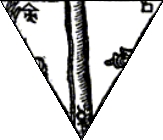
frontispice de l'Azoth [Basile Valentin], détail
De cette ,
retenons le sulphur et le mercurius de l'angle inférieur. Le quadratum est posé à l'angle supérieur mais
la †
n'apparaît pas, alors qu'en toute logique - et bien que le Sel
soit incombustible - elle aurait dû figurer].
On trouve dans ce panneau une trinité et une quaternité : la trinité est faite de l'Adam primordial, stade initial du sulphur [anima] ; du
spiritus sanctus
développé par l'ange ; enfin du spiritus corruptus ou
diabolus représenté par
embrassant la colonne centrale. Retenons que cette colonne joue le
rôle de transfert vers le monde supérieur, après
que la dissolution a joué [voir
infra].
Nous trouvons un exemple de ce phénomène de transfert
dans une aquarelle illustrant un ouvrage d'Alexander Roob.
,
retenons le sulphur et le mercurius de l'angle inférieur. Le quadratum est posé à l'angle supérieur mais
la †
n'apparaît pas, alors qu'en toute logique - et bien que le Sel
soit incombustible - elle aurait dû figurer].On trouve dans ce panneau une trinité et une quaternité : la trinité est faite de l'Adam primordial, stade initial du sulphur
[anima] ; du
spiritus sanctus
développé par l'ange ; enfin du spiritus corruptus ou
diabolus représenté par
embrassant la colonne centrale. Retenons que cette colonne joue le
rôle de transfert vers le monde supérieur, après
que la dissolution a joué [voir
infra].
Nous trouvons un exemple de ce phénomène de transfert
dans une aquarelle illustrant un ouvrage d'Alexander Roob.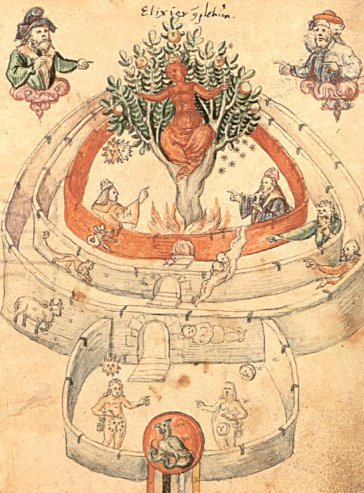
The Hermetic Museum,
Taschen 1997.
Cette aquarelle fait le pont entre le RS et une autre illustration, analysée dans l'Aurora consurgens, II qui se rapporte au transfert et à la projection [cf. notamment Pseudo Thomas d'Aquin, De alchimia, Codex Vossianus 29, fol. 99 - Leiden, Rijksuniversiteit Bibliotheek, XVIe et Bodleian Library MS. Rawl. D. 893, fin XVe siècle]
La partie inférieure montre un dragon dans un mandala rouge supporté par quatre piliers qui ont la couleur des quatre Éléments [rouge =
 ; noir = ; blanc =
; orange = ]. Dans une première enceinte, le couple
{, }
porteur des clefs de l'oeuvre. Puis, trois enceintes. Dans la
première, on remarque un corps allongé qui
représente la dissolution : de ce corps s'échappe
un esprit [spiritus abscondus]
qui est le même que celui du De Alchimia [Codex Vossianus 29, fol. 99].
Par ailleurs, on aperçoit le Bélier, premier signe du
triangle de des Chaldéens [Trinité].
Succède une enceinte avec le deuxième signe de feu : le
Lion. Puis une troisième enceinte où l'on devine le
Sagittaire. Au centre, un arbor
vitae,
embrasé, d'où émerge une Virgo paritura ; l'arbre
philosophique est couvert de fruits. À cette trinité
s'ajoute une quaternité indiquée par les
Évangélistes formant le Tétramorphe. Van Lennep
écrit en parlant de l'arbre du RS :
; noir = ; blanc =
; orange = ]. Dans une première enceinte, le couple
{, }
porteur des clefs de l'oeuvre. Puis, trois enceintes. Dans la
première, on remarque un corps allongé qui
représente la dissolution : de ce corps s'échappe
un esprit [spiritus abscondus]
qui est le même que celui du De Alchimia [Codex Vossianus 29, fol. 99].
Par ailleurs, on aperçoit le Bélier, premier signe du
triangle de des Chaldéens [Trinité].
Succède une enceinte avec le deuxième signe de feu : le
Lion. Puis une troisième enceinte où l'on devine le
Sagittaire. Au centre, un arbor
vitae,
embrasé, d'où émerge une Virgo paritura ; l'arbre
philosophique est couvert de fruits. À cette trinité
s'ajoute une quaternité indiquée par les
Évangélistes formant le Tétramorphe. Van Lennep
écrit en parlant de l'arbre du RS :« L'ensemble symbolise la fontaine qui dispense la médecine universelle, celle qui assure cette vie éternelle plus spécifiquement désignée par l'arbre et la vigne. À noter que dans l'exemplaire 5025 du British, l'arbre qui pousse au centre de la fontaine de jouvence, est assimilé à celui du Paradis et clairement désigné comme étant également celui de la croix. » [Alchimie, p. 94]
Dans cette figuration, il importe de noter que le transfert est sous la dépendance de
[présent
dans le RS, embrassant la colonne qui fait accéder à
l'autre monde, celui de la sphère du Lion et, enfin, du
Sagittaire]. Quant à la projection, elle est
placée sous la domination de
qui assure la maîtrise du Sagittaire. Pour en revenir à
cette trinité, on voit qu'elle présente des
caractères atypiques : on n'y décèle pas la figure
du Pater. La Trinité est réduite à un corps de
gloire [l'Adam primordial dans
l'amande], à un ange [intermédiaire mercuriel entre le et la ] et à un principe ambigu : la
dissolution doit, quoi qu'il en soit, précéder la
sublimation ou dépuration. L'ambiguité est toute dans
l'opposition du Bien et du Mal [que
l'on peut rapporter à celle entre Zeus et Cronos ]. Opposition vaincue par la force de la †. Dans Aïon, Jung consacre le
chapitre V au Christ, symbole
du Soi [trad.
Albin Michel, 1983]. Il semble que l'on puisse, dans l'analyse
du RS, déplacer la proposition dans le sens de Dieu, symbole du Moi.
Voilà qui exige une explication. Il paraît évident
que l'alchimie dans sa formulation générale, et ici, le
RS en particulier, véhicule une conception où l'esprit se
projette dans un ailleurs qui renvoie à une certaine
manière de narcissisme. Narcisse, faut-il le rappeler, avait une
soeur qui lui ressemblait et qu'il aimait follement. La jeune fille
vint à mourir et pour ne pas perdre le souvenir de son image,
Narcisse se contempla dans une fontaine et mourut de consomption car il
en fut proprement pétrifié. N'est-ce pas là,
envisagé d'un autre plan, ce qu'éprouve l'alchimiste en
contemplant son monde intérieur qui n'est qu'une image ? Et
n'est-ce pas en ce Cronos, son image que contemple le démiurge
du RS ? On serait tenté de le croire. Mais, chose
singulière, Jung ne parle pour ainsi dire jamais de Narcisse
dans ses ouvrages. Pourtant, l'étymologie, le rattachant
à narkh,
la narcose par extension, aurait dû avertir le magicien de
Küsnacht qu'il se trouvait devant une autre énigme de
Bologne [par
référence à celle dont il parle dans le Mysterium conjunctionis, I, partie
2, les Paradoxes, chap. 3, pp. 89-126].
La légende rapporte que Narcisse meurt penché au miroir
d'une source et que de là naît la première fleur
appelée de son nom. Un exemplaire du RS montre cette fleur qui,
au vrai, n'est pas un narcisse, mais dont la présence est
emblématique.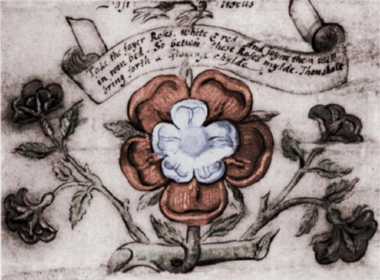
MS. Add 5025-3, Londres, XVIe siècle - détail
Bachelard écrit :
« [Les miroirs de verre] deviendront vivants et naturels quand on pourra les comparer à une eau vivante et naturelle, quand l'imagination renaturalisée pourra recevoir la participation des spectacles de la source et de la rivière. » [L'Eau et les Rèves, essai sur l'imagination de la matière, Paris, 1942]
Pour l'alchimiste, revitaliser l'esprit consiste d'une part à assurer l'animation du
et d'autre part à provoquer
l'induction de la réincrudation [imagination renaturalisée, que
l'on peut lier avec le processus d'individuation qui parcourt l'oeuvre
de Jung].
Nous assistons, dans ces deux opérations, étroitement
mélées, aux apparitions alternées de
l'étoile et de la fleur, signalées par Fulcanelli.
Bachelard poursuit en assurant que :« ... La sublimation n'est pas toujours la négation d'un désir... Elle peut être une sublimation pour un idéal. » [Idem]
Rappelons-nous le titre d'un apocryphe de Nicolas Flamel, le Désir Désiré. Mettons ce désir en relation avec le lieu de naissance du filius philosophorum : nous trouverons alors cette rose rouge et blanche qui est la véritable fleur d'or de l'alchimiste [l'image est tirée de Jung, Psychologie et Alchimie, trad. Buchet Chastel, fig. 30]. Dans cette fleur, il faut voir la naissance de l'hermaphrodite, fait de rouge et de blanc, c'est-à-dire de Bien et de Mal, envisagé sous l'angle psychologique. Or, cette relation entre les deux extrêmes du sens spirituel, nous les voyons au sommet de l'Arbore vitae. Ils sont présents sous la forme du filius spiritus enrobé dans son amande écarlate et du corpus corruptus qui descend du faîte de l'arbre : sa partie arrière est celle d'un monstre à queue serpentine tandis que son tronc et sa tête ont des traits humains. Aussi bien faut-il voir dans cet hermaphrodite une formulation très originale du double Mercure philosophique [mixte Rebis - Compost] : d'un côté, nous y découvrons l'AIMANT des alchimistes ; de l'autre côté, leur ACIER. Par analogie, il n'est pas impossible d'établir une relation entre l'ACIER et le Bien ainsi qu'entre l'AIMANT et le Mal. Evidemment, on ne saurait attribuer à cette association un caractère à ce point manichéen qu'il faille y voir une vérité établie. Non. Il est néanmoins évident que l'arbre philosophique se rattache à celui d'Adam et Ève sur bien des points. Revenons quelques instants à l'Adam mystique : nous l'avons déjà entr'aperçu dans l'un des médaillons du premier panneau [chapitre 1] : il correspond à l'anima ou
, auréolé de sa gloire. Il est
accompagné de l'animus [peristera,
la colombe] et, dans ces
conditions, on ne voit pas en quoi« ... le rejet par Adam de la faute sur Ève proviennent de l'inimitié qui, désormais, sépare l'âme de l'esprit. » [Dictionnaire des symboles, Laffont, 1969, 1982]
Nous assistons au processus de la sublimation, consubstantiel de la conjonction : dans le domaine mystérieux de l'alchimie, l'âme n'existe pas tout d'abord : il monte du corps mort une substance éthérée, qui est à l'égale d'une fumée sulfureuse, de couleur sombre et plombée : c'est l'étiquette même de la colombe des Sages [de pelioV : plombé, livide] où le spiritus sanctus [dont elle constitue le symbole classique] est mêlé de la trace de Lucifer
 . Cette vapeur de soufre [qeioV proche de qeion = Dieu]
où esprit et trace impure du corps mort sont mixés porte
le nom de premier Mercure ou Mercure de la voie commune ou même
Mercure commun [ce qui a
été cause de maints errements d'impétrants qui ont
confondu le vif argent avec l'argent vif, voir ce que nous en disons in
Huginus
à Barma]. On peut en rapprocher pelloV [couleur sombre ou cendré]
et la cendrée que l'on peut voir en deux occasions
dans le mois lunaire [entre la
nouvelle lune et le premier quartier ; entre le dernier quartier et la
nouvelle lune]. On voit que cette couleur grisâtre [cendre = tejra, spodoV] est
celle des morts [solutio].
Elle indique - du moins est-ce là ce que disent les textes
alchimiques - que nous sommes au régime de [qui annonce la
projection, par delà le transfert, voir Pernety, Fables Égyptiennes et Grecques].
. Cette vapeur de soufre [qeioV proche de qeion = Dieu]
où esprit et trace impure du corps mort sont mixés porte
le nom de premier Mercure ou Mercure de la voie commune ou même
Mercure commun [ce qui a
été cause de maints errements d'impétrants qui ont
confondu le vif argent avec l'argent vif, voir ce que nous en disons in
Huginus
à Barma]. On peut en rapprocher pelloV [couleur sombre ou cendré]
et la cendrée que l'on peut voir en deux occasions
dans le mois lunaire [entre la
nouvelle lune et le premier quartier ; entre le dernier quartier et la
nouvelle lune]. On voit que cette couleur grisâtre [cendre = tejra, spodoV] est
celle des morts [solutio].
Elle indique - du moins est-ce là ce que disent les textes
alchimiques - que nous sommes au régime de [qui annonce la
projection, par delà le transfert, voir Pernety, Fables Égyptiennes et Grecques].Il sera plus aisé d'interpréter la grande scène de la fontaine de jouvence et du bain des Astres [monde supérieur]. En voici une représentation splendide dans la version d'Edimbourg :
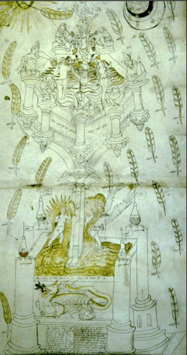
Edimbourg, Royal College of Physicians, Erskine Roll (partie centrale)
La
pièce centrale est la fontaine
mercurielle qui constitue le bain
des astres. Van Lennep nous en dit :
« Au-dessous, une composition plus complexe comprend à sa base une piscine dans une enceinte dont les tours supportent chacune un matras. Ces tours symbolisent les éléments. Un pilier s'élève qui supporte un autre bassin dont l'enceinte comporte, cette fois, sept tours (les métaux). À chacun de leurs sommets, un alchimiste tient un matras. Le couple alchimique s'y baigne, entourant un arbre sur lequel grimpe une vigne. » [Alchimie, p. 94]
Cette enceinte contient le dissolvant qui permet d'obtenir l'humide radical des métaux, en l'occurrence celui de et de .
Les autres planètes participent à cette dissolution en
tant qu'elles sont les hiéroglyphes des autres matières
du feu secret dont est préparée l'eau ignée. [cette question de la collaboration des
sept planètes est un point de cabale hermétique qui n'est
pas encore bien éclairci. Jung y consacre plusieurs pages dans
son Mysterium conjunctionis,
t. II]. Ce n'est pas ici la conversion des
éléments qui est consacrée [contrairement à la fontaine
carrée ], mais bien la
métamorphose des planètes, pour remployer le titre du
traité de Monte Snyders. Cette métamorphose passe
nécessairement par une opposition, un combat dont on trouve la
trace depuis Zosime jusqu'à la Turba :
« Poussez à la guerre le cuivre et l'argent vif, qu'ils s'efforcent de se faire mourir et qu'ils soient d'abord corrompus. Parce que le cuivre, absorbant l'argent vif, le coagule, et cet argent vif, absorbant le cuivre, est congelé. Pendant ce temps-là, excitez le combat, décomposez le corps jusqu'à ce qu'il soit réduit en poudre. » [Turba, sentence XLII, citée in Jung, Myst. conj. t. II, § 159, p. 121]
C'est Astanius [alias Ostanes] qui s'exprime ainsi. Par cuivre, il faut entendre Airain ou laiton, c'est-à-dire hermaphrodite. L'argent-vif est le des philosophes. Le combat réduit les corps en
poudre, ce que rappelle Fulcanelli dans le Mystère des Cathédrales
quand il assure que la matière doit être réduite
à l'état de poussier de charbon, ce qui veut dire en
cendre dont le signe est  . Mais on trouve déjà
semblable exhortation chez Stephanus d'Alexandrie :
. Mais on trouve déjà
semblable exhortation chez Stephanus d'Alexandrie :
« Combats, cuivre ; combats mercure ; joins le mâle à la femelle. C'est le cuivre qui reçoit la couleur rouge et le pouvoir pénétrant de teindre en doré... Le cuivre est détruit, rendu incorporel par le mercure, et le mercure est fixé par sa combinaison avec le cuivre » [Leçons de Stephanus, quatrième leçon in Ideler Julius Ludwig, Physici et medici graeci minores, t. II, 199f. Leipzig 1841,1842]
Sur ce thème du combat des métaux et des principes, on pourra lire le Triomphe hermétique [qui contient l'Ancienne guerre des Chevaliers] de Limojon de saint Didier et l'imagerie alchimique [explicite comme dans certaines aquarelles de l'Aurora consurgens ou implicites comme la gravure illustrant la méditation de Senior].
En bas, nous avons les deux principes principiés : Diane et Apollon. Artémis tient l'arc du Sagittaire [n'oublions pas qu'il ne s'agit pas des principes élémentaires mais de ceux qui ont été nourris au sein de Latone] ; Apollon porte le sceptre et l'antimonium [mixte que l'on
peut faire naître de vitri oleum
[mixte que l'on
peut faire naître de vitri oleum  et
de †,
dont nous reparlerons au chapitre
7].
Au-dessus, et son foudre; Vénus portant
sa croix et le feu [la figuration
est absolument remarquable car Vénus porte trois flèches
: elles dessinent une étoile qui, elle-même, peut donner
trois †
différentes : les deux croix crépusculaires ont une barre
verticale { Lucifer,
et
de †,
dont nous reparlerons au chapitre
7].
Au-dessus, et son foudre; Vénus portant
sa croix et le feu [la figuration
est absolument remarquable car Vénus porte trois flèches
: elles dessinent une étoile qui, elle-même, peut donner
trois †
différentes : les deux croix crépusculaires ont une barre
verticale { Lucifer,  Hesperus} et la croix du zénith sans barre
verticale - ioV ou
Hesperus} et la croix du zénith sans barre
verticale - ioV ou  AZOTH - qu'il
faut comprendre vue par le
dessous,
cf. Aurora consurgens.].
Lucifer annonçant l'aurore explique que ce soit elle qui porte
la flambeau [josjoroV]. Tout en haut,
AZOTH - qu'il
faut comprendre vue par le
dessous,
cf. Aurora consurgens.].
Lucifer annonçant l'aurore explique que ce soit elle qui porte
la flambeau [josjoroV]. Tout en haut,  et . Au centre, la fontaine mercurielle avec l'agent [Soufre rouge,
sulphur : BasileuV]
et le patient [Soufre blanc, SEL
: ]. Le double Mercure s'enroule autour de la
colonne [arbor vitae]
couronnée d'une statue mercurielle. Dans le RS, les
hiéroglyphes planétaires affectent la forme d'un
heptagone. L'attention est attirée par le magnifique arbor vitae,
couronné d'un basileuV,
entouré d'un mandala écarlate ; l'enfant résultant
de la parturition alchimique est enserré par une forme
féminine dont le corps, à sa partie inférieure,
évoque quelque animal diabolique du monde infernal. Van Lennep
écrit de cette partie :
et . Au centre, la fontaine mercurielle avec l'agent [Soufre rouge,
sulphur : BasileuV]
et le patient [Soufre blanc, SEL
: ]. Le double Mercure s'enroule autour de la
colonne [arbor vitae]
couronnée d'une statue mercurielle. Dans le RS, les
hiéroglyphes planétaires affectent la forme d'un
heptagone. L'attention est attirée par le magnifique arbor vitae,
couronné d'un basileuV,
entouré d'un mandala écarlate ; l'enfant résultant
de la parturition alchimique est enserré par une forme
féminine dont le corps, à sa partie inférieure,
évoque quelque animal diabolique du monde infernal. Van Lennep
écrit de cette partie :
« Sous son feuillage (de l'arbre) se tient un enfant nu (l'enfant des philosophes) que présente un être à queue de serpent (la matière première). Le feuillage désigné comme l'expression de l'esprit et de l'âme supporte une tour enflammée (l'athanor). La lune et le soleil ainsi que des plumes sont disposées sur les bords de cette allégorie. » [Alchimie, p. 94]
Il n'est pas évident de savoir s'il s'agit d'une tour ou de la bouche d'ombre du grand athanor dans lequel le démiurge a disposé son pélican. L'enfer est certainement signifié par la bouche d'ombre du four alchimique dont on aperçoit les flammes : une communication directe est ainsi réalisée entre le double Mercure et l'Hadès. Une fois encore, le Bien et le Mal se trouvent intriqués. Ce n'est pas tout : on peut voir dans cette aquarelle du Figurarum Aegyptorum - de même que dans l'heptagone du RS - l'équivalent de l'arbre de Jessé. Voyons cela.
« Au-dessous, une composition plus complexe comprend à sa base une piscine dans une enceinte dont les tours supportent chacune un matras. Ces tours symbolisent les éléments. Un pilier s'élève qui supporte un autre bassin dont l'enceinte comporte, cette fois, sept tours (les métaux). À chacun de leurs sommets, un alchimiste tient un matras. Le couple alchimique s'y baigne, entourant un arbre sur lequel grimpe une vigne. » [Alchimie, p. 94]
Cette enceinte contient le dissolvant qui permet d'obtenir l'humide radical des métaux, en l'occurrence celui de
et de .
Les autres planètes participent à cette dissolution en
tant qu'elles sont les hiéroglyphes des autres matières
du feu secret dont est préparée l'eau ignée. [cette question de la collaboration des
sept planètes est un point de cabale hermétique qui n'est
pas encore bien éclairci. Jung y consacre plusieurs pages dans
son Mysterium conjunctionis,
t. II]. Ce n'est pas ici la conversion des
éléments qui est consacrée [contrairement à la fontaine
carrée ], mais bien la
métamorphose des planètes, pour remployer le titre du
traité de Monte Snyders. Cette métamorphose passe
nécessairement par une opposition, un combat dont on trouve la
trace depuis Zosime jusqu'à la Turba :« Poussez à la guerre le cuivre et l'argent vif, qu'ils s'efforcent de se faire mourir et qu'ils soient d'abord corrompus. Parce que le cuivre, absorbant l'argent vif, le coagule, et cet argent vif, absorbant le cuivre, est congelé. Pendant ce temps-là, excitez le combat, décomposez le corps jusqu'à ce qu'il soit réduit en poudre. » [Turba, sentence XLII, citée in Jung, Myst. conj. t. II, § 159, p. 121]
C'est Astanius [alias Ostanes] qui s'exprime ainsi. Par cuivre, il faut entendre Airain ou laiton, c'est-à-dire hermaphrodite. L'argent-vif est le
des philosophes. Le combat réduit les corps en
poudre, ce que rappelle Fulcanelli dans le Mystère des Cathédrales
quand il assure que la matière doit être réduite
à l'état de poussier de charbon, ce qui veut dire en
cendre dont le signe est . Mais on trouve déjà
semblable exhortation chez Stephanus d'Alexandrie :« Combats, cuivre ; combats mercure ; joins le mâle à la femelle. C'est le cuivre qui reçoit la couleur rouge et le pouvoir pénétrant de teindre en doré... Le cuivre est détruit, rendu incorporel par le mercure, et le mercure est fixé par sa combinaison avec le cuivre » [Leçons de Stephanus, quatrième leçon in Ideler Julius Ludwig, Physici et medici graeci minores, t. II, 199f. Leipzig 1841,1842]
Sur ce thème du combat des métaux et des principes, on pourra lire le Triomphe hermétique [qui contient l'Ancienne guerre des Chevaliers] de Limojon de saint Didier et l'imagerie alchimique [explicite comme dans certaines aquarelles de l'Aurora consurgens ou implicites comme la gravure illustrant la méditation de Senior].
En bas, nous avons les deux principes principiés : Diane et Apollon. Artémis tient l'arc du Sagittaire [n'oublions pas qu'il ne s'agit pas des principes élémentaires mais de ceux qui ont été nourris au sein de Latone] ; Apollon porte le sceptre et l'antimonium
[mixte que l'on
peut faire naître de vitri oleum et
de †,
dont nous reparlerons au chapitre
7].
Au-dessus, et son foudre; Vénus portant
sa croix et le feu [la figuration
est absolument remarquable car Vénus porte trois flèches
: elles dessinent une étoile qui, elle-même, peut donner
trois †
différentes : les deux croix crépusculaires ont une barre
verticale { Lucifer, Hesperus} et la croix du zénith sans barre
verticale - ioV ou AZOTH - qu'il
faut comprendre vue par le
dessous,
cf. Aurora consurgens.].
Lucifer annonçant l'aurore explique que ce soit elle qui porte
la flambeau [josjoroV]. Tout en haut,
et . Au centre, la fontaine mercurielle avec l'agent [Soufre rouge,
sulphur : BasileuV]
et le patient [Soufre blanc, SEL
: ]. Le double Mercure s'enroule autour de la
colonne [arbor vitae]
couronnée d'une statue mercurielle. Dans le RS, les
hiéroglyphes planétaires affectent la forme d'un
heptagone. L'attention est attirée par le magnifique arbor vitae,
couronné d'un basileuV,
entouré d'un mandala écarlate ; l'enfant résultant
de la parturition alchimique est enserré par une forme
féminine dont le corps, à sa partie inférieure,
évoque quelque animal diabolique du monde infernal. Van Lennep
écrit de cette partie :« Sous son feuillage (de l'arbre) se tient un enfant nu (l'enfant des philosophes) que présente un être à queue de serpent (la matière première). Le feuillage désigné comme l'expression de l'esprit et de l'âme supporte une tour enflammée (l'athanor). La lune et le soleil ainsi que des plumes sont disposées sur les bords de cette allégorie. » [Alchimie, p. 94]
Il n'est pas évident de savoir s'il s'agit d'une tour ou de la bouche d'ombre du grand athanor dans lequel le démiurge a disposé son pélican. L'enfer est certainement signifié par la bouche d'ombre du four alchimique dont on aperçoit les flammes : une communication directe est ainsi réalisée entre le double Mercure et l'Hadès. Une fois encore, le Bien et le Mal se trouvent intriqués. Ce n'est pas tout : on peut voir dans cette aquarelle du Figurarum Aegyptorum - de même que dans l'heptagone du RS - l'équivalent de l'arbre de Jessé. Voyons cela.
s’épanouit véritablement qu’à partir du XVIe siècle. La métaphore végétale [et thériomorphe] s’est d’abord appliquée au Christ et à sa famille. À l’époque romane, et encore au XIIIe siècle, il est crucifié sur une vigne ou pressé au pressoir telle une grappe de raisin. La Vierge est symbolisée par une fleur de lys - symbole aussi de la royauté dont le sceptre est quelquefois fleuri. Sur cet exemplaire du RS, nous distinguons des grappes de raisin, qui doivent s'entendre comme le sulphur naissant
. De même le faîtage de
l'arbre est singulier et ressemble davantage à un ensemble de
tubercules qu'à des feuilles. Le symbolisme sexuel
apparaît assez évident. Au début du XIIe
siècle, la parenté du Christ prend la forme de
l’arbre de
Jessé : depuis le corps de Jessé, personnage biblique,
endormi, surgit le tronc de la famille de Marie, qui fait de la Vierge
une descendante de David. notons que dans le cas présent,
Jessé est remplacé par la figure de Cronos et que c'est une colonne de pierre qui sert de tronc
porteur pour l'ensemble du dispositif mercuriel [voir Zosime et son temple
d'albâtre in Jung, Racines de
la Conscience]. Au sommet de l’arbre de
Jessé,
telle une fleur incomparable, s’épanouit le buste de la
Vierge
tenant son Enfant dans les bras [tel
n'est pas le cas dans le RS : ce n'est
pas la Vierge que nous voyons, mais une figure à demi
chimérique tenant à la fois du divin et du démon].
Du sang royal coule donc dans les veines de Jésus... Le
modèle de l’arbre de la parenté du Christ,
l’arbre de
Jessé, a d’abord été appliqué aux
familles
royales. L’arbre de Jessé est un des ancêtres de
l’arbre
généalogique : ce dernier lui doit son arborescence. Le
modèle de l’arbre de Jessé a d’abord
été
appliqué aux familles royales. Dès le XIIIe
siècle, les rois sont figurés en médaillons
accrochés à un arbre, l’ancêtre juché
au
sommet, ses descendants de plus en plus bas sur le tronc. Pour le RS,
les médaillons figurent en somme les hiéroglyphes
planétaires [ce qui est
particulièrement évident dans l'arbre
philosophique de la
Philosophia
Reformata de Mylius]
: il s'agit de la généalogie de l'or alchimique qui a
pour parents {, }, pour parrain et marraine {,
} qui lui accordent le baptême de la fontaine
mercurielle ; comme aïeuls {, }. L'ordonnateur de la cérémonie sur les
fonts baptismaux est bien sûr . Le trait marquant de cette singulière
parenté est la consanguinité
qui, dans l'Art sacré, porte le nom d'humide radical métallique. Il
s'agit là d'une spécificité alchimique qui tire
son origine des anciens mythologèmes égyptiens et grecs.
Quoi qu'il en soit, la connexion entre le symbolisme chrétien de
l'arbre de Jessé et sa contre-partie alchimique est facile
à trouver dans l'iconographie. Dans le recueil Pandora, on trouve ceci :Les représentations de Jessé le montrent en général dans une pose qui est celle de la méditation, si souvent présente dans les gravures [cf. Phil. Reformata de Mylius, emblème 6, série 3 et le texte, probablement corrompu, de la Tabula smaragdina]. Le processus exprimé est le passage de la
au ,
c'est-à-dire le mouvement conduisant à la sublimation.
L'oeuvre d'Hermès fait ainsi
apparaître, par le biais de l'Artiste démiurge,
l'âme ailée hors du tumulus. Nous voyons donc que le sens
à accorder au narcissisme est très particulier puisqu'il
peut déboucher sur un ailleurs où se confondent
l'âme intérieure du démiurge et l'EN TO PAN divin [ou transcendantal selon que l'on ait un
point de vue gnostique ou stricto sensu religieux].
C'est là, à notre sens, que se situe la clef de
voûte de tout le processus spirituel de l'alchimie. En effet, la
transcendance renvoie à l'Absolu qui, par définition, est
le BIEN [quel que soit le point
de vue où l'on se place car il s'agit du lieu où
s'exprime la plus puissante numinosité]. On peut y voir
le spiritus sanctus
dans le sens d'un logos [à
l'instar de ce que Jung nomme le Christ logos pour le
différencier soigneusement du Christ incarné voire
historique]. La position du démiurge [i.e. la figure humaine dans le RS]
se situe à la liaison entre et , à la croisée †
de la voie. Voie royale s'il en ait : elle conduit au lapis. Voie
tortueuse non moins, qui mène l'âme à l'instar d'un
psychopompe jusqu'à la terra
alba foliata [terre
blanche feuillée] : c'est là que Cadmos
sème les dents du dragon [archétype
du spiritus abscondus qu'on aperçoit crachant le feu et le
crapaud sur l'un des rouleaux du RS].
Pour en revenir au démiurge, nous commenterons quelques
réflexions de Jung, extraites du symbole de la transsubstantation.« Saturne, en tant que planète la plus éloignée, archonte suprême... possède une grande signification puisqu'il est précisément ce spiritus niger qui gît captif dans l'obscurité de la matière. » [Racines de la conscience, livre V, trad. Buchet Chastel, pp. 271-272, 1971, Pochothèque]
On peut faire ici un parallèle entre le Saturne évoqué par Jung et celui qui embrasse la colonne de pierre soutenant la fontaine mercurielle. Le spiritus niger est captif ; il est caché ou occulté. On oublie trop souvent que la philosophie dite occulte - celle dont s'occupe les disciples d'Hermès et celle dont parle Agrippa dans sa Philosophia occulta - est d'abord une philosophie de la matière cachée, que l'art des alchimistes va s'efforcer de débusquer dans les replis des métaux et des minéraux, pour en extraire une substance protéiforme nommée humide radical. Du reste, l'étymologie de l'alchimie - qui a plusieurs origines - met en exergue des expressions comme terre noire [de l'arabe kymia, cf. Aurora consurgens, II] faisant référence à la dissolution et à la tête de corbeau, tout de même qu'au limon fertile du Nil, apporté par les Aigles dont parle Diodore de Sicile [Histoire universelle]. Cette matière occultée sous les apparences de la pierre solide est éclairée ou mieux, dépurée, par le feu qui la dissout : c'est ainsi que les métaux sont ouverts [nous employons ici le langage des vieux chimistes] et meurent ; ce faisant, ils dissipent leur humide radical qu'on nomme ioV et qu'on raccorde au hiéroglyphe
. L'un des buts de l'alchimiste est de
capter cette chaux du métal alors qu'elle est encore vive et
d'en faire un rayon igné , avant qu'elle ne vienne à
s'éteindre. Dans cette double opération, de captation
d'abord [transfert] par
dissolution puis de teinture [projection]
ensuite par coagulation, nous pouvons voir la lutte de deux principes,
l'un de destruction , l'autre de génération
, lutte médiée par la † [cf. aurora
consurgens, II]. Ainsi, faire passer la materia prima des ténèbres
à la lumière consiste, exactement comme dans la Passio Christi,
à
détruire le métal amorphe [crucifixion, cf. retable
d'Issenheim] pour le réincruder ensuite [surrection du corps glorieux,
cf. réincrudation] sous une
espèce cristalline. L'ordre, le logos, transparaissent sous les
dehors de l'arbre : Le Moyen Âge a souvent eu recours à
cette figure, moyen aisé et ancien de classer les vices ou les
vertus par exemple [cf. Gobineau et les médaillons du portail
central de Notre-Dame]. Là encore, nous retrouvons les
deux faces du sens spirituel. La contre partie de l'Alchimitisches
Manuscript de Basel peut être trouvé dans
les Miscellanea d'Alchimia
: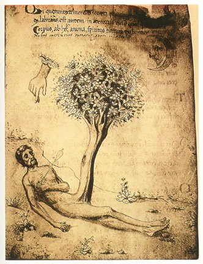
Codex Ashburnham, XIVe
siècle
Ce
n'est pas tout : Jung est parfaitement conscient du caractère
« artificiel » de la nigredo lorsqu'il introduit ce
commentaire après la lecture du Rosarium qui suit un
passage d'hymne de louange où l'auteur glorifie l'état de
dissolution :Résumons
: le démiurge, l'initiateur du processus alchimique, voit son
oeuvre lui échapper. La rupture prend lieu au moment où
il applique le feu - qu'il faut comprendre comme la † - à la
matière. Cette rupture s'intègre exactement comme celle
de la Création échappant au contrôle de
Yahvé [voir Jung, Réponse à Job]
: la projection de la psyché dans la matière crée
une entité qui échappe en grande partie au contrôle
du MOI et qui n'a d'attachement à la conscience que parce que le
démiurge est le lieu singulier [l'individu] de la rencontre
entre le temps et l'espace [et la
dissociation de ces deux tenseurs de l'être provoque le mouvement
de l'idée vers la matière avant que ne se mette en place,
ultérieurement, le processus de « prise de conscience
» qu'on peut assimiler à l'individuation]. Dans le
temps où la matière, par le feu, est
dissoute, devient visqueuse, affecte le comportement d'un reptile [dragon, serpent] ; elle est par
ailleurs constellée de l'esprit du démiurge [du fait d'un effort de projection plus
ou moins conscient] qui lui imprime des éléments
du MOI. Le fait intéressant, ici, en liaison
avec ce que nous avons écrit dans l'Aurora consurgens II,
consiste en ce que ce processus de projection permet la confrontation
entre des éléments de la psyché qui, d'habitude,
ne se rencontrent point à l'état de veille : le MOI
et le ÇA [rappelons
que pour nous, le ÇA constitue l'ensemble des « choses
» extérieures a priori à la psyché,
c'est-à-dire de ce qui n'est pas perçu
immédiatement par les sens].
Plus précisément, dans le grand oeuvre, l'alchimiste
exerce une action sur la matière dont la particularité
est de n'être pas directe [il
emploie un médium : Héphaistos dont la forme
dégradée est la lanterne ou la torche]. À
partir
du moment où le feu exerce cette action primitive de dissolution
[sans laquelle rien n'est possible],
un travail prend forme dans la psyché de l'opérateur,
double travail qui concerne à la fois le temps et l'espace , l'un d'ailleurs
succédant à l'autre : c'est donc bien d'une
véritable genèse qu'il s'agit et c'est avec raison que
les Adeptes comparent leur prima materia
à un chaos. Expliquons cela : dans la dissolution, la
matière change de forme et cette métamorphose implique
nécessairement le recours au temps ; dans la coagulation, le
dissolvant de la matière se volatilise et celle-ci vient
à coaguler : c'est une modification dans l'espace d'un
état qui existait déjà en toute virtualité
après que la dissolution ait eu fait son oeuvre. [on peut mettre en doute l'affirmation de
René Guénon qui confond Solve et Coagula dans sa Grande Triade (Gallimard, 1957) : il
admet seulement la possibilité de l'assimilation, là
où il est évident qu'il s'agit de la projection]
L'esprit de
l'opérateur est alors le siège de sentiments
partagés tenant du désir, de l'expectative et de
l'espoir. Ainsi, tout comme la matière se trouve pour ainsi dire
plongée dans une sorte de bulle germinative [voir l'arbre du Mercurius
redivivus, in Samuel Norton, Alchymiae complementum et perfectio],
la psyché se trouve placée en dehors de la sphère
habituelle de la conscience, dans un état présentant des
rapports avec la transe et l'extase [dont seule l'impression ressentie
à la musique sans doute peut donner une relation valable ou un
équivalent éidétique recevable]. Ceci, en
particulier, semble vrai des Gnostiques parmi lesquels il faut ranger
Zosime de Panopolis [voir Jung,
les Racines de la conscience]
et des néo-gnostiques post paracelsiens, où il faut
ranger Gerhard Dorneus [voir M.L.
von Franz, l'Imagination active,
trad. la Fontaine de Pierre, 1989 où l'auteur commente l'oeuvre
de l'alchimiste Gerhard Dorn, en particulier le De Tenebris contra Naturam et Vita brevi,
in Theat. Chem., 1602, vol. I, pp. 457-472].
Deux éléments permettent de ranger Dorn parmi les auteurs
les plus radicaux et les plus idéalistes : son refus de la
quaternité qu'il assimile à un
quadricornus serpens [où
il faut voir le Mal] comparé à la trinité :
« ... tandis que le symbole central du christianisme est une Trinité, la formule de l'inconscient est une quaternité. » [Jung, Psychologie et Religion, trad. Buchet Chastel, 1960, le dogme et les symboles naturels, p. 114]
Si l'on y réfléchit bien, il y a quelque logique. Reprenons le frontispice de l'Azoth ; le détail central est un de feu où trois
idéogrammes occupent une situation angulaire : , et [qui n'est pas
représenté exactement comme notre symbole mais dont il
paraît légitime de le rapprocher]. La marque de
cette triade est
à l'évidence la † marquant la
dissolution. La dissolutio
ou nigredo est
donc absolument équivalente à la Passio comme on l'a
noté supra. Elle est
l'unique moyen permettant d'aboutir à cet état qui est la
sublimatio ou albedo.
De cette triade, nous savons bien que les composants ne sont point
égaux quant à leur compliance à se dissoudre : ou animus
est le principe qui, par essence, est dissous autant qu'il dissout. Le
sulphur ou anima
ne résiste pas à la dissolution dès lors qu'on l'a
extirpé du corps où il gît. Seul le corpus
résiste à ce pouvoir résolutif puisqu'il demeure,
en principe, incombustible mais on lui accorde un certain degré
de liberté, liberté toute relative car pourvu qu'un
certain artifice - bien connu de Fulcanelli - parvienne à le
maintenir visqueux, il restera, telle la licorne, dans le giron de la
trinité. Tel
n'est pas le cas du Diable :
« Le Diable... a donc une personnalité autonome, il est en possession de la liberté et de l'éternité, et il partage si bien ces attributs avec la Divinité qu'il peut même exister contre Dieu. Par suite, la relation ou même la participation (négative) du Diable à la Trinité ne peut plus être niée, comme conception catholique. » [idem, p. 115]
La conclusion à en tirer paraît claire : si le Diable est opposé essentiellement à Dieu [pur esprit], c'est qu'il représente un corps pur, dénué d'esprit... C'est ce qui est réalisé dans la phase d'assation [par la voie sèche si l'on suit Fulcanelli] où l'Artiste parvient à sublimer progressivement le
jusqu'à sa totale disparition, obtenant par là le lapis
cristallisé à l'état de pureté. Ajoutons
que dénué d'esprit ne signifie pas dénué
d'âme :
« Dorneus rompt ainsi avec toute la tradition, en adoptant très chrétiennement le point de vue que le Trois est l'Un, et non le Quatre, celui-ci atteignant son unité dans la Quinte Essence. » [Ibid., p. 115]
Nous savons ce que représente cette quintessence que signale Jung : son premier état est
et l'on ne peut
imaginer pire état de dissolution. Pour autant, c'est ce venin
de serpent qui va procurer l'âme qui est destinée à
se projeter en masse [parabole de
la chute de l'ange] dans le Sel [ou corpus]. Dans le RS, c'est
bien un
qui contient la fontaine inférieure [et où l'on peut voir le serpens
quadricornus, i.e. contenant les quatre éléments],
celle qui contient la
triade et d'où s'élève la colonne de pierre.
Le passage où Dorneus parle de ce serpent est repris par Jung :
« Le diable les a dressées (les cornes) dans le ciel lorsqu'il en tomba et qu'il en fut chassé, et il a ensuite tenté de les imprimer dans l'esprit humain : ce sont l'ambition, la brutalité, la calomnie, et la dissension. » [Mysterium conjunctionis, t. II, n. 378, pp. 121-122, in Dorneus, De Tenebris contra naturam et vita brevis, Theatrum chemicum, t. I, 1602, p. 531]
Comment peut-on visualiser la transition qui s'établit entre le dragon au crapaud du panneau inférieur et cette eau prime qui n'est pas encore l'aqua permanens ? Pour tenter une explication, il nous faut revenir à la mythologie.
combat de Phébus et de Python, f. 8, Ovidius, Metamorphoseon libri XV, Belgique, Flandre, XVe siècle
Voici, en image, cette transition de la nigredo à l'albedo. Elle n'est pas sans rappeler des éléments que l'on retrouve dans les peintures du Splendor Solis. Posons d'abord dans cette scène que Phébus et Cadmos sont équivalents ce qui permettra d'introduire tout à l'heure la suite illustrée de cette histoire fabuleuse. Posons ensuite que nous trouvons ici une conception primitive du Bien et du Mal mais dont l'ambiguité est riens moins qu'évidente : dans certaines croyances [au Venda, ex Banboustan] le python, par ses vomissements, est à l'origine de la création : comment ne pas y voir l'analogue du sperme d'Ouranos qui crée l'univers après que son fils l'ait émasculé ? Pour d'autres :
« ... le python participe de la nature divine, car il fut, sous la forme d’une créature de nature ambiguë, le maitre des créatures avant que ce pouvoir ne fut confié à l’homme. En effet, dans le mythe de la création, il est dit qu’ayant été à l’origine de la chute de l’homme, la créature à la nature ambiguë fut métamorphosée en deux serpents, l’un mâle, l’autre femelle, qui furent chassés du ciel en même temps que la terre. Lorsque la terre fut éloignée du ciel et leurs eaux séparées, une pluie diluvienne tomba sur la terre... Les deux serpents, qui vivaient dans l’eau, émirent chacun un souffle dans l’air. Les deux souffles se rencontrèrent et formèrent un arc-en-ciel. Celui-ci fit arrêter la pluie... Depuis ce temps, par sa nature d’arc- en-ciel, le python est pour les Baluba le symbole de l’alliance entre les forces du ciel et celles de l’eau, de la paix et de l’union cosmique. » [l'Art africain]
Ce python caractérise les principes élémentaires dissous {, }
; son ambiguité est signalée en ce qu'il s'agit d'un
symbole chthonien : bouche d'ombre s'ouvrant au ponant pour avaler le
soleil en le recrachant au levant [voir
d'ailleurs ce soleil défiguré en forme de crapaud dans le
RS].
On a écrit que le triomphe de Phébus était celui
de la conscience sur l'inconscient mais cette réflexion est
sommaire : il n'y pas irruption abrupte mais transition et interaction
; et ce,
dans la mesure où la psyché est le siège de
mouvements convectifs incessants où surrection et
engloutissement établissent une sorte de massa confusa [interactions MOI - SOI]
qui est à l'identique de la parabole où Cadmos
sème les dents du dragon qu'il vient de vaincre. Par chute de
l'homme, il faut deviner la dissolution de l'esprit qui, jadis,
était la seule façon qu'on ait eu de signifier [faire prendre forme matérielle]
l'inconscient [dont l'expression
immédiate consiste dans le
transfert et la projection : nous en sommes plus ou moins conscients
puisque ce sont ces états qui nous éloignent de notre
condition purement matérielle] ; on comprend que cette
dissolution ne pouvait alors être comprise que comme le Mal. Ces
deux serpents ne sont autres que le sulphur et le Soufre blanc ou Sel . Ce déluge est celui que signalent les textes
et qui est l'aqua permanens.
Quant au souffle émis par les serpents, il correspond à
ce que nous appelé le spiritus
corruptus dans l'Aurora
consurgens, II [voir figure 8 du Rosarium
Philosophorum]. Jung consacre le chapitre 7 de sa Psychologie du Transfert
à cette gravure et lui donne comme titre : l'Ascension de l'Âme.
Nous avons déjà exprimé nos doutes quant à
nommer anima
cette substance éthérée pour la bonne raison que
l'on ne saurait tirer l'âme d'un corps qui n'a jamais
vécu, ce qui est stricto
sensu le cas du couple élémentaire {,
}
où les principes n'ont pas encore été
animés. Ce faisant, quand Jung écrit qu'il faut voir dans
cette substance une fonction de relation, nous y voyons le transfert
dont nous estimons qu'il est lié, dans le processus alchimique,
à Cronos . Jung ajoute :
« Pourtant, contrairement à ce qu'il faudrait penser s'il s'agissait d'une conception, l'âme ne descend pas pour vivifier un corps, mais elle abandonne celui-ci pour s'élever. » [l'Ascension de l'Âme, p. 132, trad. Albin Michel, 1980]
La situation est paradoxale car le but poursuivi par l'alchimiste est bel et bien une conception. Au vu de tout ce que nous avons déjà dit là-dessus, et en dépit de la légende ANIMAE EXTRACTIO VEL impraegnatio, nous ne pouvons voir qu'un esprit se lever sur les flots de la nigredo. De même, il serait faux de voir un véritable cadavre et d'imaginer qu'on assiste à la dissolution des parties d'un corps : car ce n'est pas un, mais deux corps que l'on voit, progressivement, se fondre en une entité. Fusion et dissolution sont ici conjointes et seule la métallurgie [voir notamment Micea Eliade, Forgerons et Alchimistes, Flammarion, 1956] arrive à expliquer le paradoxe et à dénouer ce noeud gordien de l'âme s'échappant d'un corps qui n'a jamais vécu...
« Il y est dit [dans le Rosaire] aussi que l'on doit surveiller l'eau et le feu qui résident dans la substance mystérieuse, et retenir leurs eaux avec son eau (l'eau permanente, aqua permanens), ... De la solution en ébullition, dans laquelle les éléments se désagrègent, la substance précieuse (l'âme) menace de s'échapper. C'est une réalité paradoxale, composée de feu et d'eau, c'est le Mercure... » [idem, p. 135 et citation de l'Artis Auriferae, II, p. 264]
Jung n'est pas dupe mais il ne peut pas intégrer dans son système le fait que ce n'est pas d'âme qu'il s'agit mais d'esprit corrompu qui git caché dans les replis de la matière. C'est du reste assez surprenant car dans les Racines de la conscience [cf. supra] il avait parfaitement défini ce spiritus niger, alias spiritus corruptus.
Cadmos et les spartoi, f. 30, Ovidius, Metamorphoseon libri XV, Belgique, Flandre, XVe siècle
et l'espace , l'un d'ailleurs
succédant à l'autre : c'est donc bien d'une
véritable genèse qu'il s'agit et c'est avec raison que
les Adeptes comparent leur prima materia
à un chaos. Expliquons cela : dans la dissolution, la
matière change de forme et cette métamorphose implique
nécessairement le recours au temps ; dans la coagulation, le
dissolvant de la matière se volatilise et celle-ci vient
à coaguler : c'est une modification dans l'espace d'un
état qui existait déjà en toute virtualité
après que la dissolution ait eu fait son oeuvre. [on peut mettre en doute l'affirmation de
René Guénon qui confond Solve et Coagula dans sa Grande Triade (Gallimard, 1957) : il
admet seulement la possibilité de l'assimilation, là
où il est évident qu'il s'agit de la projection]
L'esprit de
l'opérateur est alors le siège de sentiments
partagés tenant du désir, de l'expectative et de
l'espoir. Ainsi, tout comme la matière se trouve pour ainsi dire
plongée dans une sorte de bulle germinative [voir l'arbre du Mercurius
redivivus, in Samuel Norton, Alchymiae complementum et perfectio],
la psyché se trouve placée en dehors de la sphère
habituelle de la conscience, dans un état présentant des
rapports avec la transe et l'extase [dont seule l'impression ressentie
à la musique sans doute peut donner une relation valable ou un
équivalent éidétique recevable]. Ceci, en
particulier, semble vrai des Gnostiques parmi lesquels il faut ranger
Zosime de Panopolis [voir Jung,
les Racines de la conscience]
et des néo-gnostiques post paracelsiens, où il faut
ranger Gerhard Dorneus [voir M.L.
von Franz, l'Imagination active,
trad. la Fontaine de Pierre, 1989 où l'auteur commente l'oeuvre
de l'alchimiste Gerhard Dorn, en particulier le De Tenebris contra Naturam et Vita brevi,
in Theat. Chem., 1602, vol. I, pp. 457-472].
Deux éléments permettent de ranger Dorn parmi les auteurs
les plus radicaux et les plus idéalistes : son refus de la
quaternité qu'il assimile à un
quadricornus serpens [où
il faut voir le Mal] comparé à la trinité :« ... tandis que le symbole central du christianisme est une Trinité, la formule de l'inconscient est une quaternité. » [Jung, Psychologie et Religion, trad. Buchet Chastel, 1960, le dogme et les symboles naturels, p. 114]
Si l'on y réfléchit bien, il y a quelque logique. Reprenons le frontispice de l'Azoth ; le détail central est un
de feu où trois
idéogrammes occupent une situation angulaire : , et [qui n'est pas
représenté exactement comme notre symbole mais dont il
paraît légitime de le rapprocher]. La marque de
cette triade est
à l'évidence la † marquant la
dissolution. La dissolutio
ou nigredo est
donc absolument équivalente à la Passio comme on l'a
noté supra. Elle est
l'unique moyen permettant d'aboutir à cet état qui est la
sublimatio ou albedo.
De cette triade, nous savons bien que les composants ne sont point
égaux quant à leur compliance à se dissoudre : ou animus
est le principe qui, par essence, est dissous autant qu'il dissout. Le
sulphur ou anima
ne résiste pas à la dissolution dès lors qu'on l'a
extirpé du corps où il gît. Seul le corpus
résiste à ce pouvoir résolutif puisqu'il demeure,
en principe, incombustible mais on lui accorde un certain degré
de liberté, liberté toute relative car pourvu qu'un
certain artifice - bien connu de Fulcanelli - parvienne à le
maintenir visqueux, il restera, telle la licorne, dans le giron de la
trinité. Tel
n'est pas le cas du Diable :« Le Diable... a donc une personnalité autonome, il est en possession de la liberté et de l'éternité, et il partage si bien ces attributs avec la Divinité qu'il peut même exister contre Dieu. Par suite, la relation ou même la participation (négative) du Diable à la Trinité ne peut plus être niée, comme conception catholique. » [idem, p. 115]
La conclusion à en tirer paraît claire : si le Diable est opposé essentiellement à Dieu [pur esprit], c'est qu'il représente un corps pur, dénué d'esprit... C'est ce qui est réalisé dans la phase d'assation [par la voie sèche si l'on suit Fulcanelli] où l'Artiste parvient à sublimer progressivement le
jusqu'à sa totale disparition, obtenant par là le lapis
cristallisé à l'état de pureté. Ajoutons
que dénué d'esprit ne signifie pas dénué
d'âme :« Dorneus rompt ainsi avec toute la tradition, en adoptant très chrétiennement le point de vue que le Trois est l'Un, et non le Quatre, celui-ci atteignant son unité dans la Quinte Essence. » [Ibid., p. 115]
Nous savons ce que représente cette quintessence que signale Jung : son premier état est
et l'on ne peut
imaginer pire état de dissolution. Pour autant, c'est ce venin
de serpent qui va procurer l'âme qui est destinée à
se projeter en masse [parabole de
la chute de l'ange] dans le Sel [ou corpus]. Dans le RS, c'est
bien un
qui contient la fontaine inférieure [et où l'on peut voir le serpens
quadricornus, i.e. contenant les quatre éléments],
celle qui contient la
triade et d'où s'élève la colonne de pierre.
Le passage où Dorneus parle de ce serpent est repris par Jung :« Le diable les a dressées (les cornes) dans le ciel lorsqu'il en tomba et qu'il en fut chassé, et il a ensuite tenté de les imprimer dans l'esprit humain : ce sont l'ambition, la brutalité, la calomnie, et la dissension. » [Mysterium conjunctionis, t. II, n. 378, pp. 121-122, in Dorneus, De Tenebris contra naturam et vita brevis, Theatrum chemicum, t. I, 1602, p. 531]
Comment peut-on visualiser la transition qui s'établit entre le dragon au crapaud du panneau inférieur et cette eau prime qui n'est pas encore l'aqua permanens ? Pour tenter une explication, il nous faut revenir à la mythologie.
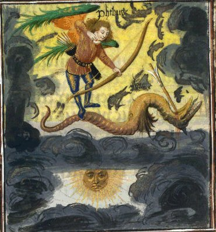
combat de Phébus et de Python, f. 8, Ovidius, Metamorphoseon libri XV, Belgique, Flandre, XVe siècle
Voici, en image, cette transition de la nigredo à l'albedo. Elle n'est pas sans rappeler des éléments que l'on retrouve dans les peintures du Splendor Solis. Posons d'abord dans cette scène que Phébus et Cadmos sont équivalents ce qui permettra d'introduire tout à l'heure la suite illustrée de cette histoire fabuleuse. Posons ensuite que nous trouvons ici une conception primitive du Bien et du Mal mais dont l'ambiguité est riens moins qu'évidente : dans certaines croyances [au Venda, ex Banboustan] le python, par ses vomissements, est à l'origine de la création : comment ne pas y voir l'analogue du sperme d'Ouranos qui crée l'univers après que son fils
l'ait émasculé ? Pour d'autres :« ... le python participe de la nature divine, car il fut, sous la forme d’une créature de nature ambiguë, le maitre des créatures avant que ce pouvoir ne fut confié à l’homme. En effet, dans le mythe de la création, il est dit qu’ayant été à l’origine de la chute de l’homme, la créature à la nature ambiguë fut métamorphosée en deux serpents, l’un mâle, l’autre femelle, qui furent chassés du ciel en même temps que la terre. Lorsque la terre fut éloignée du ciel et leurs eaux séparées, une pluie diluvienne tomba sur la terre... Les deux serpents, qui vivaient dans l’eau, émirent chacun un souffle dans l’air. Les deux souffles se rencontrèrent et formèrent un arc-en-ciel. Celui-ci fit arrêter la pluie... Depuis ce temps, par sa nature d’arc- en-ciel, le python est pour les Baluba le symbole de l’alliance entre les forces du ciel et celles de l’eau, de la paix et de l’union cosmique. » [l'Art africain]
Ce python caractérise les principes élémentaires dissous {
, }
; son ambiguité est signalée en ce qu'il s'agit d'un
symbole chthonien : bouche d'ombre s'ouvrant au ponant pour avaler le
soleil en le recrachant au levant [voir
d'ailleurs ce soleil défiguré en forme de crapaud dans le
RS].
On a écrit que le triomphe de Phébus était celui
de la conscience sur l'inconscient mais cette réflexion est
sommaire : il n'y pas irruption abrupte mais transition et interaction
; et ce,
dans la mesure où la psyché est le siège de
mouvements convectifs incessants où surrection et
engloutissement établissent une sorte de massa confusa [interactions MOI - SOI]
qui est à l'identique de la parabole où Cadmos
sème les dents du dragon qu'il vient de vaincre. Par chute de
l'homme, il faut deviner la dissolution de l'esprit qui, jadis,
était la seule façon qu'on ait eu de signifier [faire prendre forme matérielle]
l'inconscient [dont l'expression
immédiate consiste dans le
transfert et la projection : nous en sommes plus ou moins conscients
puisque ce sont ces états qui nous éloignent de notre
condition purement matérielle] ; on comprend que cette
dissolution ne pouvait alors être comprise que comme le Mal. Ces
deux serpents ne sont autres que le sulphur et le Soufre blanc ou Sel . Ce déluge est celui que signalent les textes
et qui est l'aqua permanens.
Quant au souffle émis par les serpents, il correspond à
ce que nous appelé le spiritus
corruptus dans l'Aurora
consurgens, II [voir figure 8 du Rosarium
Philosophorum]. Jung consacre le chapitre 7 de sa Psychologie du Transfert
à cette gravure et lui donne comme titre : l'Ascension de l'Âme.
Nous avons déjà exprimé nos doutes quant à
nommer anima
cette substance éthérée pour la bonne raison que
l'on ne saurait tirer l'âme d'un corps qui n'a jamais
vécu, ce qui est stricto
sensu le cas du couple élémentaire {,
}
où les principes n'ont pas encore été
animés. Ce faisant, quand Jung écrit qu'il faut voir dans
cette substance une fonction de relation, nous y voyons le transfert
dont nous estimons qu'il est lié, dans le processus alchimique,
à Cronos . Jung ajoute :« Pourtant, contrairement à ce qu'il faudrait penser s'il s'agissait d'une conception, l'âme ne descend pas pour vivifier un corps, mais elle abandonne celui-ci pour s'élever. » [l'Ascension de l'Âme, p. 132, trad. Albin Michel, 1980]
La situation est paradoxale car le but poursuivi par l'alchimiste est bel et bien une conception. Au vu de tout ce que nous avons déjà dit là-dessus, et en dépit de la légende ANIMAE EXTRACTIO VEL impraegnatio, nous ne pouvons voir qu'un esprit se lever sur les flots de la nigredo. De même, il serait faux de voir un véritable cadavre et d'imaginer qu'on assiste à la dissolution des parties d'un corps : car ce n'est pas un, mais deux corps que l'on voit, progressivement, se fondre en une entité. Fusion et dissolution sont ici conjointes et seule la métallurgie [voir notamment Micea Eliade, Forgerons et Alchimistes, Flammarion, 1956] arrive à expliquer le paradoxe et à dénouer ce noeud gordien de l'âme s'échappant d'un corps qui n'a jamais vécu...
« Il y est dit [dans le Rosaire] aussi que l'on doit surveiller l'eau et le feu qui résident dans la substance mystérieuse, et retenir leurs eaux avec son eau (l'eau permanente, aqua permanens), ... De la solution en ébullition, dans laquelle les éléments se désagrègent, la substance précieuse (l'âme) menace de s'échapper. C'est une réalité paradoxale, composée de feu et d'eau, c'est le Mercure... » [idem, p. 135 et citation de l'Artis Auriferae, II, p. 264]
Jung n'est pas dupe mais il ne peut pas intégrer dans son système le fait que ce n'est pas d'âme qu'il s'agit mais d'esprit corrompu qui git caché dans les replis de la matière. C'est du reste assez surprenant car dans les Racines de la conscience [cf. supra] il avait parfaitement défini ce spiritus niger, alias spiritus corruptus.
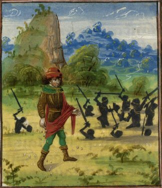
Cadmos et les spartoi, f. 30, Ovidius, Metamorphoseon libri XV, Belgique, Flandre, XVe siècle
« On ne comprend pas tout d'abord comment cet état de ténèbres peut bien mériter pareille louange, la nigredo étant généralement considérée comme une humeur sombre et mélancolique qui évoque la mort et la tombe. » [ibid., p. 136]
et Jung de citer un passage de La nuit obscure de saint Jean de la Croix qui :
« ... conçoit la nuit spirituelle de l'âme comme un état absolument positif, dans lequel la lumière divine, invisible... pénètre l'âme et la purifie. » [ibid, pp. 136-137]
L'image précédente évoque Cadmos semant les dents du dragon [qui représente la materia prima] et les spartoi représentent cette ébullition de la matière que signale Jung : après que Cadmos eut semé les dents du dragon sur la terre où Thèbes devait s'ériger, des guerriers surgirent du sol et commencèrent à se battre. Cinq survécurent : les Spartoi. Ils avaient pour noms, Echion [serpent] le père de Penthée, Odaeos [sorti du sol], Chthonios [sorti de la terre] Hypérénor [surhomme] et Péloros [géant]. Examinons de plus près le symbolisme de ces spartoi : ils sont en fait tous issus de la terre et à ce titre présentent des rapports avec les génies souterrains qui agissent sur les métaux [cf. Bergbüchlein et Légende de Seyfried]. Echion [Eciwn] est donc l'un de ces rares Spartoi survivants et père de Penthée dont le sort funeste a quelques rapports avec celui d'Osiris [il fut mis en pièces par les femmes de Thèbes qui avaient succombé aux délires bachiques puis décapité par sa mère Agavé, frappée de folie]. On voit déjà transparaître les Eléments d'Empédocle à travers cette légende des Spartoi : le dragon primitif ou Chaos donne naissance, par le biais du démiurge [Cadmos] au feu destructeur
ou Echion dont la génération subit
douleurs et affliction [penqoV] : c'est une
évocation indirecte du massacre des Innocents [voir les images du Livre d'Abraham
Juif ]. Odaeos tire son origine de oudaioV [qui sort de terre, en parlant d'une
source] : il s'agit donc d'un symbole de .
CqonioV incarne . Péloros [pelwroV] signifie à
la fois « d'une grandeur prodigieuse » qui lui fait toucher
, élément auquel il est évidemment
lié et aussi monstrueux [en
parlant d'un dragon] ou puissant [en évoquant Zeus].
Il ressort de ces analogies que deux éléments
acquièrent des caractères se raccordant au
Bien {, }, tandis que les autres {, }
se raccordent au Mal. On remarque que les
éléments associés à l'Introversion sont
l'EAU et la TERRE tandis que ceux liés à l'Extraversion
sont le FEU et l'AIR. Reste le cinquième élément
qui, en toute logique, est lié à la quintessence : il
s'agit d'Hypérénor [Uperhnwr, i.e. fier de
sa force, orgueilleux] qui doit être associé
à l'idéogramme  .
La Force, l'orgueil, voilà vertu et vice bien connus des
disciples d'Hermès : l'orgueil symbolise en alchimie
l'opposition entre le sel fixe central et les parties volatiles de la
matière ; quant à la force, il s'agit du Lion, symbole
mercuriel double. Basile Valentin a écrit là-dessus des
paroles
qui semblent définitives :
.
La Force, l'orgueil, voilà vertu et vice bien connus des
disciples d'Hermès : l'orgueil symbolise en alchimie
l'opposition entre le sel fixe central et les parties volatiles de la
matière ; quant à la force, il s'agit du Lion, symbole
mercuriel double. Basile Valentin a écrit là-dessus des
paroles
qui semblent définitives :« Dissous et nourris le vray Lion du sang du Lion vert, car le sang fixe du Lion rouge est fait du sang volatil du vert, parquoy ils sont tous deux d'une mesme nature » [Douze Clefs de philosophie, du Soufre, second principe des philosophes]
Ainsi peut-on affirmer, par cabale, qu'Hypérénor est un Géant aux pieds d'argile [voir plus loin le songe de la statue de Nabuchodonosor]. On peut le considérer comme issu de la race de ceux qui furent précipités dans le Tartare. Du reste, ce géant n'aura qu'une existence éphémère
« Une légende de Basse-Autriche ... raconte que l'on voit souvent un géant chevaucher par-dessus les montagnes, monté sur un cheval blanc, et que cela est signe de pluie prochaine. » [Jung, Métamorphoses de l'âme et ses symboles, VI. la Lutte pour se délivrer de la mère, trad. Georg, pochothèque, p. 462]
La clef de l'énigme est donnée par la figure 9 du Rosarium Philosophorum : la rosée de mai annonce le déluge ou activation du Mercure [aqua permanens]. La figure I de l'Aurora consurgens évoque exactement le même symbolisme par l'Aigle, annonçant les assauts mercuriels [les sublimations philosophiques]. Ces sublimations ont pour but d'assurer la nutrition du lapis naissant [naissance qui a comme signe les couleurs de la queue de paon]. Notre Géant ne meurt donc pas mais disparaît provisoirement. Mais peut-on dire d'un Géant qu'il est vivant ? D'après Paracelse, les Géants sont privés d'âme... En un sens, voilà qui est exact.
« Ils [les Géants] agrandirent par cela la signification de l'homme de façon " gigantesque ", ce qui indique qu'il y eut alors une inflation de la conscience culturelle. Or, une inflation est toujours menacée par un contrecoup émanent de l'inconscient, contrecoup qui d'ailleurs ne manqua pas de se produire sous la forme du déluge. » [Jung, Réponse à Job, trad. Buchet Chastel, 1964, p. 138-139]
Entendu au plan psychologique, il faut comprendre que le SOI devient démesuré en l'absence de polarisation exercée par le MOI. Cette inflation dont parle Jung peut d'ailleurs aboutir à une séparation qui s'appelle la schizophrénie. Compris au plan alchimique, le SOI est assimilable à l'esprit qui est l'une des formes du Mercurius. Après la dissolution ou nigredo, nous avons vu que les pièces du lapis s'assemblaient en forme de Rebis [chose double] : cette association est d'abord labile puis, au temps de la rubigo, deviendra permanente et radicale. La permanence de ce changement de conformation de la matière [transition de l'amorphe au cristal] est assurée par la projection de l'âme [sulphur
] dans cet homme double igné [Basile Valentin nomme ainsi le Rebis].
Il est temps d'en revenir au problème majeur du Bien et du Mal
dont l'analyse peut seule rendre compte de cette conception ambivalente
de l'hermaphrodite des alchimistes.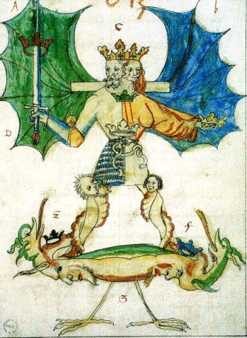
Alchimistisches Manuscript (Donum Dei), 1550, Ms. L IV 1, UB Basel (vgl. Bild 89)
Ce
géant, cet Hypérénor, les alchimistes en ont fait
leur hermaphrodite victorieux du chaos comme donne à le voir
cette magnifique aquarelle, extraite de la Pandora de Reusner. On
remarque que la liaison avec le spartoi
n'est pas fortuite puisque nous retrouvons dans les mains de
l'anthropos les deux attributs de la Force [l'épée] et de
l'Orgueil [la couronne].
Si nous reprenons la définition donnée des Géants,
on ne laissera pas d'être étonné avec les
coïncidences :
« Ce sont des êtres énormes, d'une force invincible, d'un aspect effroyable. Ils ont une épaisse chevelure, une barbe hirsute, et leurs jambes sont des corps de serpents. » [Pierre Grimal, Dictionnaire de la mythologie grecque et romaine, Paris, 1963]
Une autre figure se rapproche de celle présentée ici : celle du Rosarium Philosophorum [figure 11] où l'anthropos tient dans une main une coupe remplie de serpents [symbolisant l'orgueil] et dans l'autre Python [la Force avec en arrière plan le côté destructeur].
3)- l'hermaphrodite comme privatio boni
On aurait tort de croire que le Bien et le Mal sont équivalents : le Bien n'agit en fait que comme une sorte de constante, en tant qu'un frein modérément serré sur le Mal, véritable attracteur de l'inconscient collectif. La conscience de la différence vient de la Morale. Or la Morale n'est fondée en droit que comme une espérance de transcendance : on peut l'entendre vue sous l'optique de la foi ou de la gnose. En alchimie, l'âme a comme précurseur le sulphur et l'esprit, le mercurius . Mais chose étrange ! Alors que l'esprit semble
doué d'une existence permanente [l'aqua permanens],
l'âme n'a pas d'existence a priori mais doit être pour
ainsi dire construite de toute pièce. Comme Platon le suppute,
elle est alors douée d'immortalité ; mais à peine
est-elle préparée que l'esprit vient à manquer par
dissipation. L'âme se trouve alors lestée d'un corps
dans lequel nous retrouvons le SEL des alchimistes. Dans la phase
intermédiaire où l'âme n'est pas encore
infusée dans le corps par projection du fait que le spiritus corruptus n'a pas
encore accompli sa révolution dans le Mercurius par transfert ,
on peut estimer que la matière des Adeptes est dans
l'état qui est appelé hermaphrodite ou Rebis. On peut,
dans cette forme, lui apposer l'hiéroglyphe du Mercurius : en effet, il rend bien compte de ce que la
matière est double [Taurus]
et de ce qu'elle est dissoute ou visqueuse †. D'où
cette
allégorie des boeufs de labour et de la charrue dont le soc [qui n'est autre que la croix]
laboure la terre adamique afin de préparer la terra alba foliata.
Dans cete opération, notre Artiste Cadmos doit s'efforcer
d'assurer son attelage, de dresser la bête noire et la bête
blanche, bref de domestiquer les pulsions du corps et du coeur dans son état primitif de
sulphur . On se tromperait en pensant que le
Bien se situe du côté du Cor leonis. L'attelage de
Cadmus [ou de Phébus, ou
de Jason peu
importe] se compose de deux bêtes dont l'une, le corps,
est docile [en ce sens qu'il est
incombustible : c'est la salamandre]
tandis que l'âme demande à être modelée et
vient à peine, comme nous l'avons vu, de sortir de terre.
L'âme primitive est Echion [cf.
supra]
qui est de nature ignée et de forme
éthérée. Elle est issue en droite ligne du Chaos
et son état tient encore du serpent puisqu'on y trouve
encore point d'esprit qui y soit mêlé. Aussi cette
âme est-elle comme folle et incontrôlée : c'est
à l'Artiste d'y insuffler le logos régulateur,
c'est-à-dire le Mercure ou Vicaire. [voir chapitre
7 sur le fou et le logos]. C'est uniquement par ce
moyen [l'artifice de Fulcanelli]
qu'il parviendra à l'harmonie dans l'agencement de sa
hiérogamie. Le secret des Sages consiste ici à faire d'un
 un
[quadratura
circuli, voir Jung, les Racines de la
Conscience] puis, d'y inscrire un .
un
[quadratura
circuli, voir Jung, les Racines de la
Conscience] puis, d'y inscrire un .
« L'origine de ces idées se trouve quelque part dans l'ombre de la préhistoire de l'esprit hellénique. La quaternité est, en effet, un archétype pour ainsi dire universel. Elle est la condition logique de tout jugement de totalité... La trinité n'est pas un schéma ordonnateur naturel mais artificiel... La totalité idéale est le rond, le cercle, mais sa division minimale est le "quatre". » [Jung, Essais sur la symbolique de l'Esprit, trad. le dogme de la Trinité, p. 206, trad. Albin Michel, 1991]
Sur les propriétés « psychédéliques » du carré et du triangle, nous avons déjà vu le sentiment de Dorneus [cf. supra ainsi que 1, 2] ; l'élève et le continuateur des vues de Paracelse affiche une vision gnostique. Elle lui impose des réflexions qui, certes, nous permettraient de douter qu'il ait une raison pleine et entière quand Jung résume ainsi sa pensée :
« Il donne aussi une description détaillée de l'opération symbolique par laquelle le Diable créa le "double serpent" (le nombre deux) avec les quatre cornes (le nombre quatre). Oui, le nombre deux est le Diable même, le quadricornutus binarius (le couple quadruplement encorné). » [Psychologie et Religion, le dogme et les symboles naturels, p. 115-116, op. cit.]
Pour autant que nous sachions, le double serpent en alchimie ne revêt point d'autre forme que celle du signe des Gémeaux, qui constitue son hiéroglyphe naturel [voir zodiaque alchimique]. Jung introduit une longue note d'où l'on peut extraire :
« Il (le Diable) savait en effet, étant plein de ruse, qu'Adam était marqué du signe de l'unité. Pour cette raison, il ne s'attaqua pas d'abord à lui... De même, il n'ignorait pas qu'Ève avait été séparée de son mari comme une dualité naturelle de l'unité de son nombre ternaire. Aussi donna-t-il l'assaut à la femme, armé de la ressemblance du binaire avec le binaire... » [extrait de Dorneus, De Tenebris contra Naturam et Vita brevi, Theat.Chem., t. I, p. 527, 1602 cité in Jung, Psychologie et Religion, op. cit., p. 130]
L'étymologie vient heureusement au secours pour nous conforter dans l'avis que l'Ancien Testament n'est pas au-dessus de tout soupçon : en hébreu, Adam signifie « le terreux », « celui qui sort de la terre », et Ève, « le souffle suscité », « l'élan ». Il n'est pas difficile, dès lors, de comprendre qu'Ève est, non pas sortie d'une côte d'Adam, mais qu'elle est tout simplement la femme « d'à côté » ou celle « aux côtés d'Adam. » Si nous poursuivons en ce sens, il est possible de préciser : Adam et Ève ou : « le souffle suscité de ce qui sort de la matière ». Il devient alors évident que « le terreux » est assimilable au Spartoi CqonioV ; et qu'Ève en tant que souffle suscité procède doublement de la passivité [en tant qu'induite] et de la déflagration que provoque une portion de quand elle entre en contact avec
: une variation brutale. Envisagée sous le point de vue de la
philosophie naturelle, cette déflagration porte un nom : le
tonnerre et il est en relation avec . Ève [dont
le caractère aérien paraît évident]
est donc comme projetée d'Adam. Mais encore ne l'est-elle que de
façon médiate et ne doit-elle en rien, in fine, son
origine à Adam. Elle ne doit son origine qu'au premier moteur [Arch]
qui a poussé Adam hors la terre [voyez le Splendor Solis où une
magnifique planche montre la naissance d'Adam]. La
collaboration des quatre éléments est nécessaire
pour extraire le dragon babylonien de la matière où il se
cache d'où, peut-être, cette idée fantasmatique de
Dorneus sur l'équivalence entre quadratum et Diable. Quoi qu'il
en soit, on trouve, de manière surprenante, une indication sur
la nature diabolique de l'arcane mystérieux : en effet, l'un des
piliers qui soutient la première fontaine, celui de gauche,
présente l'inscription suivante :
ce qui atteste de la nature double du Mercure comme on l'a dit, à la fois destructeur et assimilateur, comme l'indique R. Guénon. En définitive, la transition du Rebis est assurée par le couplage entre et . Aussi est-ce dans le RS un heptagone qui sert de
réceptacle au couple {, }.
« De cette manière ils (les vieux philosophes) ajoutaient l'élément féminin à leur Trinité physique et créaient ainsi la quaternité ou quadrature du cercle dont le symbole était le Rebis hermaphrodite, el Filius Sapientiae (Fils de Sagesse)... On ne parlait pas ouvertement du principe du mal, mais il apparaît dans la qualité vénéneuse de la prima materia. » [Jung, Psychologie et Religion, pp. 119-120, op. cit.]
les travaux de l'Artiste en Jason (taureaux monstrueux, labour, dents du dragon, dragon, Toison d'or), f. 86v.Ovidius, Metamorphoseon libri XV, Belgique, Flandre, XVe siècle
Cette image résume les premiers travaux de l'Artiste depuis la captation de la prima materia jusqu'à l'ensemencement de la terra alba foliata. Cette opération par laquelle s'achève la période de dissolution de la matière est toute entière dévolue à la Virgo paritura [voir Pandora, 1588 supra où nous assistons à la glorification du corps sous l'aspect de l'Assomption de
la Vierge]. C'est dans cette terre vierge que Cadmos introduit
l'or enté ou or mussif qui n'est, certes pas, le métal
vulgaire. La croissance du Rebis s'accomplit dans l'heptagone du RS,
à l'étage supérieur. Le
et la occupent le centre de cette scène où le
couple alchimique paraît, avec à gauche, le second Adam et
à droite, Ève. Que représente le second Adam ?
« Adolphe, suis-moi; je te montrerai les choses qui t'ont été préparées pour que tu puisses passer des ténèbres à la lumière. » [Declaratio et Explicatio Adolphi in Aurelia Occulta, Bibliotheca Chemica Curiosa, t. II, pp. 198-216 in Jung, Racines de la Conscience]
Cette citation que Jung tire de l'Occulta Philosophica [Symbolum Fratris Basilii Valentini, voir bibliographie] se trouve dans un traité que les alchimistes français connaissent sous le nom d'Azoth et qui fait partie de ces écrits attribués à Basile Valentin [cf. Douze Clefs. La suite du traité est malheureusement amputée du Senioris Zadith Tractatulo de Chemia, traité sur lequel Jung et M.L. von Franz ont beaucoup travaillé et qui constitue l'un des plus vieux écrits sur l'Art sacré, après ceux de Zosime, dans la mouvance de la Turba et d'Artephius]. Quoi qu'il en soit, la transformation de l'Adam primitif en second Adam tient en ce que le premier a une forme élémentaire tandis que le second est principié ; nous le voyons sur le cartouche inférieur du RS où le quadratum montre un Adam nimbé et éclatant [rappelant
le moment où il est comme surgi de terre entraînant une
déflagration, un souffle, où l'on peut voir - par cabale
- la genèse d'Ève]. Il représente,
à ce titre, l'arcane du qu'il n'est auparavant qu'en
puissance :
seule la dissolution, le passage au creuset †, le
transformera en
sulphur ou second Adam.
« L'homme terrestre, charnel (sarkinoV) est appelé Thoth ou Adam. Il porte en lui l'homme spirituel, que l'on nomme : jwV (lumière). Ce premier homme Adam -Thoth est symbolisé par les quatre éléments. L'homme spirituel et l'homme charnel se nomment Prométhée et Épiméthée. » [Jung, Racines de la Conscience, IV. Le symbolisme de la pierre, p. 211, Pochothèque, ]
On voit la proximité entre ces réflexions et le RS dans la partie du quadratum. On connaît le mythe d'Épiméthée : frère de Prométhée, il reçoit un présent de Zeus : Pandore [Ève] qu'il prend pour femme. Là-dessus, deux remarques : d'abord la relation à Zeus pour la foudre [cf. supra];
ensuite la parabole de la boîte de Pandore d'où seule
l'Espérance - Hesperus - ne s'enfuit point. Jung
poursuit en assurant que l'homme spirituel est lié au corps par
Pandora et :
«... qu'il s'agit ici d'une anima qui fonctionne comme lien (ligamentum) du corps et de l'esprit... qui emprisonne la conscience dans le réseau du monde. » [ibid. p. 211]
Pour des raisons que nous avons exposées ailleurs en de multiples reprises, il semble qu'une erreur se soit glissée dans l'analyse que donne ici le psychanalyste. Et cette erreur est peut-être en partie due à une ambiguité présente dans des textes allemands qui se répercute même dans l'iconographie : la confusion entre l'animus et l'anima [voir
Lambsprinck, figure I in Musaeum
Hermeticum].
Il paraît peu probable que l'anima puisse constituer un lien
entre le corps et l'esprit puisque, dans le phénomène du
transfert [dissolution],
c'est un spiritus corruptus qui
s'élève alors que dans le phénomène de
projection [réincrudation],
on assiste à une
séparation d'entre l'esprit et l'âme, par sublimation du
Mercure. Il y a un texte des plus curieux du corpus
alchimique là-dessus et que Jung n'a point manqué de
commenter dans son Mysterium
conjunctionis, t. I, au chapitre Luna. Nous en avons dit
quelques mots
naguère : il s'agit de l'Introïtus de
Philalèthe :
« Je dirai donc que le soufre externe10, vaporeux, comburant, adhère tenacement à notre Chaos11, à la tyrannie duquel il n'a pas la force de résister, si bien que, pur, il s'envole du feu sous l'apparence d'une poudre sèche. Mais si tu sais irriguer cette terre aride avec une eau de son propre genre, tu élargiras les pores de cette terre, et ce larron externe sera chassé au-dehors avec les opérateurs du désordre, l'eau sera purgée par l'addition d'un soufre véritable12 de ses ordures lépreuses et de son humeur hydropique13 superflue; et tu auras en ta possession la fontaine du comte Trévisan14, dont les eaux son proprement dédiées à la vierge Diane15. » [chapitre VI, l'Air des Sages, § III]
C'est un des textes les plus difficiles du corpus tant son sens semble se dérober à la raison, comme le fugitif mercure. L'interprétation qu'en donne Jung est basée sur une approche trop exclusivement psychanalytique et ne prend absolument pas en compte la possibilité alternative d'opérations de laboratoire. Aux notes que le lecteur trouvera dans la section [Introïtus, VI], nous ajouterons l'amplification que voici. On doit comprendre que ce soufre comburant n'est autre que le spiritus corruptus ; il adhère au Chaos car il est inclus dans la prima materia : il incombe à l'Artiste de le libérer en sorte qu'il puisse être transformé en sulphur et cette libération s'opère par la
médiation de l'aqua permanens qui, dissolvant la terre aride,
permet ainsi son ouverture [il
s'agit d'une variation sur le thème de l'humide radical métallique].
Le larron est donc ce spiritus
corruptus que l'on aperçoit à la figure 8 du Rosarium philosophorum. Il semble qu'ensuite,
Philalèthe passe à la description de la phase
ultérieure où la coagulation progressive de l'eau
mercurielle survient. C'est donc le
Mercure qui tient lieu de ligamentum
ou plutôt, comme
le dit Fulcanelli, de moyen [tiers
agent] pour conjoindre les deux extrémités du
vaisseau de nature : et .
Dans ces conditions, c'est l'animus qui emprisonne l'âme dans le
réseau du corps, c'est-à-dire dans le cristal : les
cristaux [voir M. Eliade, le Chamanisme, Payot, 1951]
serviraient d'esprits auxiliaires [ne
perdons pas de vue qu'il s'agit du corps minéral du lapis ou
SEL ; il exerce une action synergique
à celle opérée par le Mercurius sur le sulphur ] ce qui
équivaut à en faire des centres de projection [voir Aurora
consurgens, II]. Ce lien, on le trouve dans la mythologie
sous l'espèce de la thériomorphose [exemple : les lions de Cybèle,
Atalante et
Hippoménès, cf. Atalanta fugiens]. Un
peu plus loin, Jung cite le texte de l'Aurora consurgens [voir le texte in M.L. von Franz, trad.
la Fontaine de Pierre, 1982] :
« ... l'homme qui, auparavant, était mort, a été fait âme vivante. » [ibid, p. 212]
propos qui fait écho à ce qu'écrit Dorneus :
« De pierres mortes, transformez-vous en Pierres Philosophales vivantes... » [in Clavis totius philosophiæ chemisticæ, etc., Theatrum chemicum », t. I, p. 267]
cité dans Psychologie et Religion [Histoire et psychologie d'un symbole, p. 184]. Dorn renvoie à un processus d'animation, premier signe de l'individuation. Nous sommes confrontés à un processus typique d'introspection mettant en jeu ce que Jung nomme « l'imagination active » [permettant la surrection d'éléments inconscients de la psyché par le biais de stimuli à caractère numineux - lors d'un processus où intervient un phénomène de type extatique - c'est-à-dire l'organisation d'un délire en principe auto contrôlé, cf. en particulier Racines de la Conscience, chap. VI de la Nature du psychisme, Pattern of behaviour et archétype].
Pour en revenir à l'hermaphrodite, il s'agit d'une substance double, le Rebis [appelé aussi airain ou laton ou laiton net ou non net selon le stade de la coction], dont le caractère principal est d'être dissous, plus ou moins fluide, pâteux, bref ayant des rapports avec la lave. Nous sommes alors à l'Auro hora [Aurore de l'oeuvre, jeu de mot sur Aurora consurgens] où Lucifer paraît. Ce Rebis est formé des soufres
rouge et blanc que constituent les corps des luminaires {,
} et qui contractent alors une forme principiée.
Mais il y a une autre substance double dans l'oeuvre des philosophes,
qui est beaucoup plus subtile que le Rebis : elle est constituée
du corps dissous de la Lunaire et d'une partie
du Mercure ; c'est
Philalèthe qui en a parlé dans un petit traité,
tout à fait surréaliste là encore : EXPÉRIENCES
SUR LA
PÉNÉTRATION DU MERCURE DES SAGES POUR LA PIERRE, PAR
LE RÉGULE DE MARS, OU FER, TENANT DE L'ANTIMOINE, ET
ÉTOILÉ, ET PAR LA LUNE OU L'ARGENT [tome IV de la Bibliothèque des
Philosophes chimiques, pp. 138-148].
Qu'est-ce au juste que cette substance binaire ? Nous proposons d'en
faire le négatif du Rebis, son ombre en quelque sorte, dans la
mesure où son existence est virtuelle ; là encore, la figure 8 du Rosaire sera utile pour se faire
une idée du problème : dans un tombeau [le creuset qui est fait de la
même substance que la pierre] gisent deux corps [le Roi et la Reine qui sont les
luminaires éclipsés] ; du tombeau
s'échappe une petite créature [spiritus corruptus] qui s'en va
rejoindre une masse nuageuse [assimilable
au Chaos du premier Mercure]. Nous aborderons
ultérieurement cette partie parce qu'elle se rapporte
très directement à la suite du RS. Pour l'heure, il nous
faut dire encore quelques mots sur le deuxième Adam et sa
relation avec l'Adam primordial.
Cette vision de la naissance d'Adonis [qui est le
des alchimistes] parle d'elle-même. Le filius philosophorum
sort de l'arbor vitae,
c'est-à-dire de la [on remarque qu'il s'agit du même filius qui apparaît
au sommet de l'arbre au premier panneau du RS].
L'élément
chthonien [racines] se
double évidemment d'un élément aérien
[faîtage].
Voilà où se niche, stricto sensu, la relation entre les
deux Adam. Le couple primordial chassé du Paradis trouve son
équivalent alchimique qui est celui de l'or enté au sein
de la terra alba foliata.
Adam jaillit ainsi de l'arbre sacré dont l'écorce s'est
craquelée sous la poussée du souffle d'Ève qui
s'échappe et se dissipe. Dans l'Enchiridion de
D'Espagnet, on trouve ceci qui illustre bien notre commentaire :
« C'est aussi du fait que les métaux, principalement les parfaits, renferment en eux les principes de vie, à savoir ce feu empreint et insufflé par le Ciel, qui, étant devenu comme engourdi et émoussé sous l'écorce du métal, et même privé de mouvement, y est caché comme un trésor enchanté, jusqu'à ce que, libéré par la résolution philosophique et par l'esprit clairvoyant de l'artisan, il fasse entrevoir un esprit subtil et une âme céleste par le mouvement végétatif, et les déploie enfin dans la production merveilleuse du secret de l'art et de la nature. » [chap. CLVI]
Les écrits de Jean d'Espagnet sont admirables : ici, en quelques lignes, il nous fait voir de façon autrement plus claire que Philalèthe le concept de la sublimation philosophique. Et le rapport existant entre l'âme et le second Adam. En même temps, il fait intervenir directement l'Artiste qui est pris à la mesure du Démiurge, maître et esclave à la fois du Mercurius. Résumons donc : l'esprit
subtil représente la fumée blanche d'Artephius : c'est le Soufre blanc ou ; l'âme céleste est le Soufre rouge ou
teinture dont la forme dissoute est le sulphur . Adonis, Attis et Osiris, trois têtes sous le
même voile pourrait-on dire en parodiant Fulcanelli [dans le Myst Cath., il parle ainsi de
Déméter, Isis et Coré - Perséphone].
Le second Adam aura un destin ambigu dans la mesure où il
donnera la vie en mourrant : la légende rapporte en effet qu'il
fut culbuté par un sanglier [voir emblème
XLI de l'Atalanta fugiens] et
cela même au moment où Aphrodite se portait à son
secours : du sang d'Adonis naîtront des anémones,
première fleur du Printemps qui signale la renaissance du .
[ Aphrodite, voulant secourir
Adonis se pique à une épine de rosier, et son sang
s'écoulant sur les roses blanches -ALBEDO - les
métamorphose en roses rouges - RUBIGO.]
Perséphone put alors récupérer l'âme
d'Adonis qui descendit au Tartare, ce qui indique la
réincrudation du : on voit que la chute de
l'âme [c'est de cela qu'il
s'agit] coïncide avec l'animation du lapis et le processus
d'individuation tel que Jung le comprend à partir des textes
alchimiques. La descente de l'âme dans le corps semble donc
consubstantielle [dans le
contexte alchimique] de la naissance du Mal mais la conclusion
que l'on en tire est fautive : ce n'est pas le corps mais bien
l'âme qui est la cause du Mal. En effet, l'âme fait, par
essence, partie de l'UN [unus
mundus] que les alchimistes ont assimilé à leur
aqua permanens. Dans le grand oeuvre et en particulier dans la grande
coction [la méditation si
l'on prend à la lettre la
Tabula
smaragdina], l'Artiste joue son rôle
démiurgique et
va provoquer une schizogénie en diminuant l'énergie
interne du système ; en d'autres termes, il va diminuer la
température de son creuset : dans ces conditions, l'aimant des
Sages attirera le chalybs sous l'influence d'une attraction naturelle
que d'aucuns appellent le désir. C'est
ainsi que dans l'UN se
produit une rupture qui aboutit - si l'on prend l'exemple de la
psychologie - à une disjonction entre le Moi [anima] et le Soi [animus]. Disjonction qui tire
son origine de la survenue d'une singularité dans le Ça :
l'Autre [voir Aurora consurgens II pour des
explications sur le Ça]. Manifestement, le désir
procède d'un affaiblissement du Soi [animus, i.e. spiritus ] ou dissipation de l'esprit Mercure [symbole du père] : il
s'agit donc
de la survenue d'un véritable potentiel d'irrationalité
consécutive à la formalisation d'une matière qui,
jusque-là, n'était que virtuelle comme du reste le
sulphur : c'est le corps ou qu'il faut voir dans cette matière que les
Sages ont appelé leur Aimant et qui est caché dans le
Mercure [unus mundus].
L'idéogramme complet s'écrit  [anima
consurgens]. Ce désir est immanent et procède
d'une tendance naturelle de l'âme à la projection ; cette
projection est en principe contenue par le Soi ; seule la
présence d'un élément attracteur AUTRE est capable
de vaincre la barrière de potentiel du Soi, à l'instar de
ce qui se passe en mécanique ondulatoire
: c'est une forme
« d'effet tunnel » psychique dont l'analogue alchimique est
la projection du dans le réseau du monde : nous voici placés au soir de l'oeuvre, face
à Hesperus, qui est la véritable Auro hora. Le Mal peut ainsi
être défini comme la possibilité pour le Ça [identifié au quadratum]
d'initier un attracteur permettant de vaincre
l'opposition du Soi [plomb
mercuriel] au Moi [Sel, Mercure et
Soufre sont identifiés au trivium et l'ensemble forme l'heptagone].
Plotin a stigmatisé cette
ambivalence du Soi :
[anima
consurgens]. Ce désir est immanent et procède
d'une tendance naturelle de l'âme à la projection ; cette
projection est en principe contenue par le Soi ; seule la
présence d'un élément attracteur AUTRE est capable
de vaincre la barrière de potentiel du Soi, à l'instar de
ce qui se passe en mécanique ondulatoire
: c'est une forme
« d'effet tunnel » psychique dont l'analogue alchimique est
la projection du dans le réseau du monde : nous voici placés au soir de l'oeuvre, face
à Hesperus, qui est la véritable Auro hora. Le Mal peut ainsi
être défini comme la possibilité pour le Ça [identifié au quadratum]
d'initier un attracteur permettant de vaincre
l'opposition du Soi [plomb
mercuriel] au Moi [Sel, Mercure et
Soufre sont identifiés au trivium et l'ensemble forme l'heptagone].
Plotin a stigmatisé cette
ambivalence du Soi :
« Mais l’être qui s’adjoint le désir parce qu’il vient après l’Intelligence s’avance dès lors davantage par cette addition ; il tend à produire un ordre conforme à ce qu’il a vu dans l’intelligence ; il en est comme gros, et il ressent les douleurs de l’enfantement ; alors, il s’efforce de produire et de créer. L’âme tendue par cet effort qui s’exerce dans le sensible, associée à l’âme universelle, dominant avec elle tous les êtres extérieurs gouvernés par elle, exerçant avec elle sa providence sur l’univers, veut en gouverner une portion en s’isolant ; venue en cette portion dans laquelle elle est, elle n’appartient pourtant pas tout entière au corps, mais elle garde quelque chose d’extérieur à lui. Son intelligence n’est même pas affectée par le corps ; mais elle-même, elle est tantôt dans le corps, tantôt hors du corps ; partie du premier rang, elle s’avance jusqu’au troisième, tandis que l’Intelligence reste à la même place et qu’elle remplit tout de beauté et d’ordre par l’intermédiaire de l’âme » (IV,7,13,4).
Le point intéressant dans ce passage est que l'intelligence [le spiritus en alchimie ou]
est affectée d'un état oscillatoire,
posant comme
fondement qu'un effet peut survenir sans cause. Nous reviendrons
là-dessus lors de l'examen du panneau inférieur du RS.
Néanmoins, nous pouvons dès à présent poser
en conjecture que le Moi possède une tendance
naturelle à la chute [à
comprendre comme dissolution,
par cabale : cado, cassito et cassis, casque, voir en recherche car nous avons maintes fois
abordé ce point]; en ce sens on pourrait presque
affirmer que le Moi obéit à la loi de la gravitation
universelle, le Soi constituant le centre [pour l'alchimiste, le Vicaire, le
fédérateur] autour duquel est organisée
l'orbite du Moi. Le couple {, } est lui-même immergé dans le Ça
ou unus mundus
qui correspond au sensorium
Dei de Newton [rappelons
que le Ça est défini comme tout ce qui est
extérieur à la psyché : il s'agit de la
réalité objective - qui est l'objet de la philosophie naturelle - et
dont l'existence est indépendante
de la psyché, du moins dans la philosophie naturelle
pré-relativiste et surtout pré-quantique].
Van Lennep écrit :
« L'arbre (qui est celui de la vie et de la philosophie hermétique) est couronné par dix larges feuilles désignées comme étant à nouveau spiritus et anima... il est dominé par le soleil et la lune qui indiquent la nature de ses fruits, l'or et l'argent. Ils sont présentés avec des plumes (spiritus et anima). » [Alchimie, op. cit., p. 430]
Ce sont d'abord ces plumes, omniprésentes dans le RS, qui vont attirer notre attention. Le roi est lui-même emplumé et dévore ses plumes à l'instar du cygne qui « meurt par ses propres plumes » ou du pélican qui se dévore afin de nourrir sa portée.
Barthélemy l'Anglais, De proprietatibus rerum (traduction Jean Corbichon), pélican se perçant le flanc pour nourrir ses petits, f. 23v. France, Le Mans, XVe siècle
Ces plumes sont une image des ailes du
comme l'écrit Jung [Psychologie et Alchimie, trad. fr.,
p. 529, § 497] et ces plumes :
« ... du phénix et d'autres oiseaux jouent un grand rôle dans l'alchimie en général, et plus particulièrement dans les écrits de Ripley. » [idem, n. 183. Jung renvoie aux Verses belonging, etc. voir infra]
Sur la volière de l'alchimie, voir le poème du phénix. La plume est à rattacher à l'arbre : comme lui, elle symbolise la poussée ascensionnelle et la croissance végétale. Elle forme une sorte de transmetteur entre et , envisagée sous le point de vue
de l'humain tandis que l'ange l'est sous celui du divin [le symbolisme est le même : il
exprime l'accord entre animus et anima dont le point d'orgue, si l'on
peut dire est ioV ou venin].
Les Indiens, par exemple, disposent des plumes autour d'un plus ou moins croisé afin de préserver
des cauchemars [spiritus
abscondus : dreamcatcher qu'il faut rapprocher de l'auréole des
saints, image solaire qu'on retrouve en outre dans l'aspect des
prêtres d'Isis, symbole chthonien majeur]. Ce pouvoir
rayonnant qui éloigne toute obscurité fait partie des
archétypes jungiens, se rattache au mandala et bien sûr au
. Enfin, la plume renvoie à Thémis dont
nous savons toute l'importance en alchimie. De là, transition
facile à faire avec la bouche d'ombre du Collricke
d'où jaillit le serpent à plumes, c'est-à-dire
Mélusine. Mixte où dominent les traits de la
viscosité [nécessaire
à l'entretien du ] qui, seule, garantit la
progression du sulphur vers l'état de l'anima où la conscience se cristallise dans
l'individuation [réincrudation].
Le désir est le vecteur de cette transition de phase où
le MOI s'affranchit de la tyrannie du SOI. Sous le nom de Draco, ce
serpent réunit les eaux du dessus et celles du dessous ; que
l'on n'y voit pas d'eau vulgaire : il s'agit d'eau
étoilée, métallique, d'éclat et de
vivacité argentine tenant à la fois des lumières [ + ] et [ + ]. Force, protection, moyen de
locomotion de l'esprit [mobilis
in mobile], telles sont les qualités que l'on
reconnaît à la plume alchimique : on pourrait presque
parler du Verbe de Dieu. C'est aussi le duvet ou lit douillet des
colombes de Diane [voir
Philalèthe, Introïtus]. C'est
encore l'aspect adopté par certains minéraux fragiles
à la fois « pierre et non pierre » comme l'alun de
plume [voir chimie et alchimie]. Si l'on va
loin dans le temps, en Egypte, nous trouvons en la femme à la
plume, Maât, dans laquelle on peut trouver
l'équivalent et l'épouse de Rê ou
: tous deux, dans le temple cosmique ou athanor, disposent de leur
pavillon doré : ce
que les égyptiens
appellent Maât, c'est l'interaction des forces qui assurent
l'ordre
universel, de ses éléments constitutifs essentiels [mouvement céleste, saisons,
jour, aurore]. Les alchimistes nomment cohobation ce
mouvement convectif incessant. On comprend que le point de liaison
entre ces vieux archétypes et l'alchimie se situe au
fléau de la balance, moment de la pesée de l'âme et
de la naissance d'Adonis.
Dans le RS, le second Adam
est posté au sommet de l'arbre, dans l'heptagone : sa tendance
innée à l'expansion est manifestée par le
caractère éclatant de la bulle où il est
disposé, rappelant l'amande où on l'observe
déjà, alors qu'il séjourne - panneau
inférieur du RS - dans le quadratum . À sa rencontre, se dégageant du
faîtage, apparaît l'AUTRE incarné par le mi serpent, mi où l'on voit les traits
de Lucifer.
« Dans le Ripley Scrowle le serpent du Paradis réside à la cime de l'arbre sous la forme d'une mélusine... un homme, vraisemblablement l'adepte, entreprend de grimper à l'arbre et rencontre, se faisant, la mélusine ou Lilith qui descend du sommet... Dans le domaine chrétien du Moyen Âge, l'anima des chamans se transforme en une Lilith qui, suivant la tradition, serait le serpent du Paradis et la première femme d'Adam, avec laquelle il aurait engendré les démons. » [Jung, Racines de la conscience, IX, Aspects divers de l'arbre, p. 469, Pochothèque, ]
On connaît la légende de Mélusine : une fée d'une beauté merveilleuse promet à Raimondin de faire de lui un roi s'il accepte de l'épouser et de ne jamais la voir un samedi [jour de].
Raimondin ne peut s'empécher de regarder par un trou percé dans le mur Mélusine qui, un samedi, s'est retirée dans sa chambre ; on devine la suite : Mélusine trahie s'envole à tout jamais en clamant sa peine par des cris efroyables. Cette légende rappelle le mythe d'Éros et de Psyché. Jung y voit la figure de Lilith, née directement de la terre comme nous l'avons vu supra. Il y a lieu, comme cela est noté, d'y décéler l'androgynie primordiale qui nous renvoie à l'hermaphrodite des alchimistes. La Mélusine est un thème récurrent de l'alchimie et se retrouve dans les écrits de Paracelse [De pygmaeis, Sudhoff XIV]. Elle est assimilée à la sirène mais dans un sens mythologique qui n'a rien à voir avec l'acception hermétique qu'on lui connait : la sirène annonce la coagulation de l'eau mercurielle [grappin de l'oeuvre, assimilable au rémora ou au loup]. Jung en dit :
« La Mélusine paracelsienne apparaît comme une une variante du serpent mercuriel (serpens mercurialis), lequel a parfois été représenté entre autres sous les traits d'une jeune fille à forme de serpent, afin d'exprimer par cette monstruosité la nature double du Mercure. La délivrance de cet être était représentée par les motifs de l'assomption et du couronnement de Marie. » [Synchronicité et Paracelsica, op. cit., § 222, p. 189]
L'Adam primordial, non point mâle mais androgyne, devient Adam et Ève. Il est possible de trouver en Lilith un cousinage avec Junon car elle va devenir l'ennemie d'Ève, son domicile est fixé dans les profondeurs de la mer et elle représente la haine du couple et des enfants [on voit le parallèle avec Junon ordonnant à Typhon de poursuivre Latone]. C'est, en somme, la singularité que nous avons évoquée en parlant du Ça et de la nécessité d'un élément attracteur permettant au Moi de passer outre le Soi, ce qui aboutit fort logiquement au processus d'individuation : ÊTRE est un des buts de la vie et l'un des moyens pour le Gnostique consiste à passer par la transcendance, absolu qui ne sera certes jamais atteint mais qui, du moins, est lié au Bien. Remarquons que cette androgynie primordiale est présente dans le quadratum inférieur du RS, où l'on a signalé l'absence d'élément féminin, sauf à voir dans la figure ailée à la droite de la colonne l'Ève primordiale mais cela est riens moins qu'évident.
« Suivant les Hébreux, Adam a été créé à partir de "la terre de l'arbre de vie" (arboris vitae gleba), appelée "terre rouge de Damas"... Cette division de l'âme de l'arbre en une figure masculine et une figure féminine correspond au Mercure alchimique en tant que principe de vie de l'arbre, car, comme hermaphrodite, il est double. » [ibid., XIII, Le numen féminin de l'arbre, p. 490-491]
En revoyant la naissance d'Adonis, nous ne pouvons qu'être d'accord quant au sens féminin que l'on peut accorder à l'arbor vitae. On pourra encore jeter un regard sur l'aquarelle de Pandora. L'arbre dans lequel les alchimistes voient un chêne est assimilé au Mercure philosophique : il assure la transition entre le Lion vert et le Lion rouge. Transition qui trouve la † sur sa route [creuset, figure du Christ] et que nous aborderons plus loin, en nous penchant sur le mystère de la Trinité.
Voilà qui nous ramène au RS : posons le regard sur le dragon au crapaud ; au-dessous un texte sur quatre colonnes, puis nos deux lions [voir infra].
La première partie du texte met en garde contre le danger de laisser perdre le dragon, c'est-à-dire le Mercure ; il est comparé à un serpent. Notons que le mot well doit être traduit non par puits mais par source ; sinon, le vers « And also the welle that is so clear » n'est pas compréhensible. Le texte s'étend ensuite sur la purification du dragon et l'albification.
La citation est singulière : elle ne semble pas respecter la logique de l'oeuvre. En effet, la disparition de la nigredo prépare l'albedo et le rubigo. Les deux lions sont bien connus : il s'agit d'Atalante et Hippoménès
qui gardent le char de Cybèle, déesse primitive qui tient
en sa main cette pierre noire contenant le feu du ciel . Revenons encore sur les rapports entre
le viel Adam et le second Adam.
Adam kadmon, Fol. 29 Saint Augustin, Cité de Dieu (traduction Raoul de Presles), France, Paris, XVe [BNF Richelieu Manuscrits occidentaux Français 21]
Fulcanelli assure que le Mercurius peut être compris comme sulphur
ou mercure selon la forme qu'il adopte, forme tributaire de la
température de la matière pour un stade donné de
l'oeuvre, compte tenu de la dissipation du dissolvant.
« Le mercure est fait de matière terrestre riche et de viscosité humide, et on distingue en lui le mercure ordinaire et le mercure philosophique. » [Jung, Symbolique de l'Esprit, p. 41]
Jung parle d'abord du Mercure pris comme compost, c'est-à-dire d'une terre grasse [huile rouge] irriguée par l'eau de Zeus [rosée céleste] et il le décline en deux modalités : précisons que le mercure ordinaire est le Mercure dit de la voie commune [premier Mercure dont parle le pseudo Lulle dans la Clavicule], compris comme dragon igné, qui constitue le socle même du quadratum dans le RS. On peut y apercevoir
le vieil Adam ou Mercurius senex qu'évoque Jung dans son Psychologie et Alchimie.
Il se confond avec le crapaud du RS, animal visqueux et composé
au dire des Anciens d'une terre grasse. On trouve encore ce passage
dans l'Aurelia occulta
[texte correspondant à l'Azoth, chap. Matière première]
:
« Je suis Dragon envenimé étant partout présent & à vil prix, la chose sur laquelle je repose, & qui se repose sur moi se trouvera en moi, qui recherchera bien & diligemment mon eau & mon feu destructeur & composeur. Tu extrairas de mon corps le lion vert & rouge, que si tu ne me connais exactement tu prends les cinq cens de mon feu, il sort un venin de mes naseaux trop tôt mur, lequel a apporté dommage à plusieurs, sépare donc avec artifice le subtil de l’épais... » [Aureliæ Occultæ Philosophorum partes duz. M. Georgio Beato Interprete, in Theat. Chem., IV, pp. 462-497]
On remarque que la dernière phrase se rapproche beaucoup d'une des propositions de la Tabula Smaragdina. La question est de savoir en quoi l'association Adam - venin est licite. Au vu de tout ce que nous avons déjà écrit dans nos sections, il paraît clair que cette association passe nécessairement par l'anima dont le premier état est [animus].
Elle consiste en l'animation de la matière [là où les alchimistes
voient celle de leur ]. Elle trouve son origine
alchimique dans la connaissance qu'Adam [comme
élémentaire] a eu d'Ève [ primordiale],
narrée en substance dans la Deuxième Parabole de
l'Aurora consurgens
[texte pseudo aquinate],
intitulée : du
Déluge des eaux et de la Mort que la Femme a introduite et
chassée.
Cette Deuxième Parabole donne la clef du processus d'expansion par lequel le Moi va à la recherche de l'Autre, c'est-à-dire en somme vers son propre être. C'est l'état de nigredo
qui est dépeint dans la première partie de ce texte qui
dépasse largement, d'ailleurs, les limites de l'alchimie [l'Aurora
consurgens est congénère du Cantique des Cantiques, cf. AC, I].
Pour ce qui concerne le domaine réservé de l'Art
sacré, il suffira d'insister sur le sens à donner aux
dernières phrases de la parabole, en particulier : « Prive-le
de son humidité corruptrice et augmente-le de son
humidité connaturelle
par laquelle apparaîtront sa perfection et sa vie. »
L'humidité corruptrice est l'équivalent du premier Adam [spiritus corruptus] que l'on
voit s'échapper du tombeau à la figure
8 du Ros. Phil.
L'humidité connaturelle augmentée se voit ici
dotée des caractères rendant possible la naissance du
second Adam ou phénix [figure 17 du Ros. Phil.]
en ayant à l'esprit que le cercueil et le lit nuptial
désignent le même objet. De même, remarquons que la
bouche d'ombre de l'athanor, dans le RS, au sommet de l'arbor vitae,
s'est transformée - à hauteur des deux lions - en
l'ouverture d'un puits clair mettant ainsi, littéralement en
lumière, le déplacement du Moi par rapport au Soi,
provoqué par le désir. [voir saint Thomas d'Aquin, Summa, I-II, q. 28, art. 5 : «
Ainsi
l'homme est au plus haut degré parfait et amélioré
par l'amour de Dieu,
mais il est blessé et détérioré par l'amour
du péché... la liquéfaction
provoque un ramollissement
du coeur où le coeur se montre prêt à ce que la
chose aimée pénètre en lui. »]
Voilà qui explique in fine le découplement qui intervient
entre le Soi envisagé comme l'instrument du transfert [sous l'espèce du couple {, }] et le Moi, compris comme
l'immanence de la projection [le
couple {, }], cf. Mysterium conjunctionis, I, Luna, p. 231. Jung ajoute
que chez Dorneus, le Mercure constitue le véritable Adam
hermaphrodite [De Genealogia mineralium, Theat.
Chem., I, p. 568-592]
et Kunrath précise qu'il est engendré du Chaos sans
péché de la matière. On lui prête encore une
forme de quadratum augmentée de la quinta
essentia nommée ciel firmamental ce qui contribue
à
expliquer le symbolisme de l'arbor
vitae. On le désigne encore comme l'homme sortant
du fleuve [allusion au
Déluge évoqué dans la Deuxième Parabole de
l'Aurora consurgens, voir l'image 8 du Splendor
Solis] ArchlauV.
Abraham Eleazar en parle comme de l'Adam Cadmon [Uraltes Chymisches Werk].
Il est particulièrement instructif de voir la coïncidence
entre ce concept de l'anthropos ou Moi et le Soi, marquant la
dualité irréductible - quoique labile - affectant le
couple {, }.
Il semble que l'on puisse esquisser une solution à ce
problème de dualité si l'on considère le
schéma proposé par Jung [Symbolique
de l'Esprit, le dogme de la
Trinité, p. 163]
où, par l'entremise d'une substance [l'arcane], à la fois
qualifiée de divisible et d'indivisible [dualité essentielle où
l'on peut voir un petit résonateur, cf. supra],
il introduit le transfert du Même [Moi] à l'Autre [que nous comprenons comme une
singularité surgissant ex nihilo du Ça]
; précisément, c'est bien le concept de l'Autre qui donne
accès à cette idée du second Adam. Jung extrait ce
passage du Timée
qui abonde dans le sens de nos réflexions :
« Il forma (le Démiurge) en combinant les deux une troisième espèce de susbtance intermédiaire (laquelle participe à la fois de la nature du Même et de celle de l'Autre) et il la plaça au milieu de la substance indivisible (et de la susbtance corporelle divisibla)... » [in Symbolique de l'Esprit, le dogme de la Trinité, p. 163]
Il est aisé de voir en cette substance indivisible la marque du. Ce n'est pas tout : on y devine encore un couple
d'opposés formé du corps de la Lunaire [le Sel ou corps] et du Mercure [cf. supra].
Une figure « trine » se dégage [où l'on
aurait ajouté un point central dans le cercle luciférien]
où la substance indivisible prend la forme de la † et constitue le
milieu
ou moyen permettant de conjoindre {,
} à l'état principié. Jung
poursuit :
« Un X placé dans un cercle désigne, selon Porphyre, l'âme du monde chez les Égyptiens. En réalité, il s'agit du hiéroglyphe symbolisant la ville. Je présume que Platon a déjà essayé de créer le mandala qui réapparaît ensuite das le Critias pour désigner la capitale de l'Atlantide. » [idem, p. 165]
Chute des anges déchus, BNF Richelieu Manuscrits occidentaux, Français 21, Fol. 17 Saint Augustin, Cité de Dieu (traduction Raoul de Presles), France, Paris, XVe
Il n'est plus nécessaire d'insister sur l'importance de la lettre X qu'il faut lire c en tant qu'initiale de CristwV. On peut voir dans cette ville, signalée par Jung, l'analogue de la Jérusalem céleste ; remarquons que la description de l'Atlantide [voir Critias, 115e - 116d, trad. Luc Brisson, GF, 1992] a fort à voir avec celle de l'athanor des Sages mais nous ne pouvons développer cela dans le cadre de cette section. Pour l'heure, nous allons étudier quelques points se rapportant au mystère de la déchéance des anges et à leurs rapports avec le complexe {second Adam - Eve} d'une part et l'hermaphrodite d'autre part. L'image ci-dessus montre deux anges, l'un aux ailes rouges, l'autre aux ailes vertes : le premier chute des suites de l'onction de l'épée [SOLVE] ; le second, sous le coup de la croix [COAGULA]. L'opération est orchestrée par le spiritus sanctus et consiste en l'incarnation ou corruption. On a ici un processus qui se déroule après la sublimation [dissolution des matières] dont l'équivalent psychologique est que le Moi parvient à surmonter le Soi et à casser cette opposition entre le spirituel [anima] et le terrestre. La parabole de la chute de l'ange tient peut-être à ce que les alchimistes considèrent que neuf parties sur dix de leurs matières sont entièrement sublimables [voir M.L. von Franz, Aurora consurgens, commentaire à la Deuxième Parabole, op. cit., p. 259 et sq.], le reste formant une espèce de lie où se cache le Sel qui forme le corps du lapis, et par extension la
partie terrestre du filius
philosophorum. Il nous semble que le point fondamental
à souligner est que le Mercure acué de son Sel [Mercure philosophique]
domine le Soufre et détermine sa projection. C'est
peut-être en cela que l'on peut tenter le rapprochement entre
Ève et Marie que tente M.L. von Franz, à la fin de son
commentaire de la Parabole :
« Aujourd'hui la mort que la femme avait apportée, la femme l'a chassée, et les portes de l'enfer ont été brisées. »
Cette brisure ou schizogénie est, elle aussi, marquée d'une X. Pour illustrer notre propos, il est utile de revenir au Dogme de la Trinité [Jung, Symbolique de l'Esprit, p. 164] où le psychanalyste dispose une figure en quinconce qui offre des similitudes avec le concept de la chute de l'ange.
Il est un domaine auquel le Mal n'a pas accès et dont Jung ne parle pas explicitement : la transcendance. Elle forme pourtant l'exacte réplique de la quinta essentia des alchimistes et elle se révèle consubstantielle au Bien. Elle n'est pas susceptible, non plus, de corruption du fait qu'elle nécessite une projection spirituelle. Cette projection ne peut être le fait de la Raison [médiée par l'esprit ou animus] mais le fait du Sens [médié par l'âme ou anima]. Nous sommes paradoxalement renvoyés à la X puisqu'il y a contradiction interne - ce que Jung nomme justement contradictio in adjecto - par le fait d'attributs où objet et sujet sont flous. Pour nous tirer d'embarras, voyons cet autre passage de Jung :
« La connexion de facteurs coïncidents liés par le sens peut donc, nécessairement, être pensée comme acausale. Or nous sommes tentés bien sûr, à ce point parvenus, de supposer, à défaut d'une cause empiriquement constatable, une cause transcendantale. Mais une "cause" ne peut être qu'une grandeur constatable. Une cause "transcendantale" est en effet une contradictio in adjectio, étant donné que ce qui est transcendantal échappe par définition à toute constatation possible. » [Synchronicité et Paracelsica, trad. Albin Michel, 1988, la Synchronicité, principe de relations acausales, p. 47]
Il est clair que seule l'âme - i.e. anima = - constitue ce médium permettant l'esquisse
d'un contact ou à tout le moins d'un regard vers cette
Jérusalem céleste qu'est la transcendance, «
Ailleurs radical » qui porte le même nom dans toutes les
langues : l'Absolu. Observons donc que la contradiction
inhérente au concept de la privatio boni [et qu'on trouve en alchimie à
deux reprises, d'abord dans la dissolution
- sricto sensu, assomption du spiritus corruptus - puis dans la
réincrudation, moment de la chute de l'ange - anima consurgens ] consiste en cette dualité animus -
anima où s'exprime en toute virtualité l'opposé
{divisible - indivisible}. Cette dynamique propre à la
psyché implique un véritable état ondulatoire
où il est fatal que le principe de projection - - passe la limite du « puits de potentiel
» que lui oppose le transfert - . Dans ce débordement, les vecteurs psychiques
symbolisés par l'épée et la croix se
révèlent des images éidétiques faciles
à manipuler, pour percevoir des analogies tangibles. Ouvrons
à présent Psychologie
et Alchimie :
Le traité dont Jung cite un extrait a sans doute été compilé par Michel Sendivogius sur des notes d'Alexandre Sethon [l'auteur de la Nouvelle Lumière Chymique ou Douze traités ; rappelons que ces traités apparaissent dans le Musaeum hermeticum, pp. 545-600 et 601-646]. L'imagination, dans le processus créatif, n'est que l'organisation d'un délire et les oeuvres d'art les plus belles sont celles où l'imaginaire et la technique ont trouvé leur juste proportion. La faculté imaginative de l'âme ne nous paraît pas être celle dont parle Jung mais bien plutôt ce degré de liberté que l'Esprit [animus rector] a jugé à propos pour
l'Âme [anima
dissoluta ] de lui assigner en tant qu'enclos, lieu de son orbite. Le point de rupture que nous signalons supra se situe à l'instant où
l'âme parvient à imaginer en dehors de la raison ;
elle a alors accès à un domaine qui, en principe, est
réservé à Dieu : la réalité que nous
nommons le Ça. Le chemin vers le Mal se situe peut-être de
ce côté-là : la transgression que l'âme
commet par projection dans le Ça... situation où l'homme
est le singe de Dieu [on ne
saurait toutefois trouver en cela un
péché : en effet, l'essence de l'âme - où le
Moi conscient trouve son appui - procède de l'expansion alors
même que le Soi - l'ombre du Moi - est
affecté de ce que certains nomment le « transconscient
» permettant la mise en oeuvre de ce véritable «
effet tunnel » schizogène d'où résulte le Mysterium conjunctionis des
opposés {, }].
Jupiter et Danaé, Français 137 , Fol. 58 Ovidius, Metamorphoseon libri XV, Belgique, Flandre, XVe siècle
En dire plus là-dessus serait refaire un chapitre de la section de l'Aurora consurgens, II à laquelle nous renvoyons le lecteur. Ajoutons que l'âme ne saurait correspondre, comme le considère Jung, à l'inconscient [spiritus assimilé au Mercurius]. Du moins au temps
de la réincrudation [de la
projection] ; car telle Pallas Athéna, là voici
qui sort tout armée du crâne de Zeus, fêlé
par Héphaistos. Aussi est-ce à raison que Jung cite ce
passage de Sendivogius :
« L'air est un élément pur, non altéré, dans son espèce la plus digne, particulièrement léger et invisible, mais intérieurement lourd, visible et solide. En lui est enfermé (inclusus) l'esprit du Très-Haut qui, avant la création, planait au-dessus des eaux, selon le témoignage des saintes Ecritures : "Il plana sur les ailes du vent". Toutes choses sont intégrées (integrae) dans cet élément par l'imagination du feu. » [Sendivogius, Traité du Soufre in Musaeum Hermticum, p. 612 - chap. III de l'Élément de l'Eau - cité in Psychologie et Alchimie, § 397]
Le feu des alchimistes est spécial : il dissout sans brûler et c'est une eau. Il faut comprendre par là qu'il conserve en son sein les matières qui ont été livrées à sa puissance, matières promises à la dissolution ou, du moins, à une forme spéciale de sublimation liquide, dans un milieu que les Adeptes appellent l'Air des Sages [cf. l'Introïtus, VI du Philalèthe]. La référence au vent montre d'ailleurs, certainement, ce que l'Anonyme de la Tabula smaragdina doit à la Vulgate [Ps. 17 : 11]. Quoi qu'il en soit, la chose importante est que la matière disposée dans l'air, « navigue » en fait dans le feu, raison pour laquelle, en toute logique, cet est « intérieurement
lourd, visible et solide. » Aussi bien faut-il
être prudent, dans le commentaire que Jung donne de Sendivogius,
de ne pas le prendre au pied de la lettre quand il assure :
« Il apparaît clairement que, par cette activité de l'âme en dehors du corps (extra corpus), on entend l'opus alchimique, dans la remarque selon laquelle l'âme a le plus grand pouvoir sur le corps, et que, s'il n'en allait pas ainsi, l'art royal, ou philosophie, serait vain. » [idem, à partir de citations du Traité du Feu, chap. V de l'Elément du Feu]
Sendivogius tient le discours selon quoi le est destiné à acquérir un pouvoir
plus grand que le spiritus et non point sur le corps.
Ce qui est encore une fois logique puisque le mercure est
destiné à se dissiper, seul moyen de faire en sorte que
le Soufre coagule, c'est-à-dire que les corps puissent
être conjoints. Que le , ensuite, prenne le pas sur
le corps est vrai dans la mesure
où c'est ce rayon igné qui orientera le lapis dans le
sens indiqué dans la section Soufre.
Ce que nous venons de décrire pour l'alchimie opératoire
se conçoit aisément pour l'oratoire : le démiurge
du RS contemple son oeuvre par l'imagination active [par projection]. Il est
lui-même cet Adam kadmon [voir
figure] en tant que
précurseur de l'anqrwpoV
jwteinoV [homme de
lumière] que l'on trouve chez Zosime [il semble que l'on puisse trouver
l'origine du mot adech chez Dorneus in Theophrasti
Paracelsi libri V De vita longa (p. 178) - citation de Jung in Synchronicité et Paracelsica,
p. 243, note 65 : « l'Adech est
l'invisibilis homo sans doute identique à l'Aniadus et à
l'Edochinum = Enochdianus. »]. Que recouvre Adam
kadmon ? Le rêveur certainement :
« Dans le traité De vita longa, Paracelse nomme les quatre Scaiolae, mais le soi, Adech (d'Adam = le premier homme). Comme le souligne Paracelse, tous deux (l'anima et la totalité) causent des difficultés dans l'oeuvre, de sorte qu'on peut presque parler d'une hostilité de la part d'Adech. » [Jung, Psychologie et Alchimie, symboles oniriques, la symbolique du mandala, § 150, p. 150]
Roland Cahen, en note, se réfère à un ouvrage [Jung, Gesammelte Werke, vol. 13, Studien über alchemistisches Vorstellung, Zurich, paru en 1978 - notons que Paracelsica est paru à Zurich en 1942; le passage se situe pp. 163-167, cf. Vol XIII Alchemical Studies] ; le passage dont il est question est inséré dans Synchronicité et Paracelsica [op. cit. Paracelse, une grande figure spirituelle, pp. 199-222]. Là encore, à notre grand regret, nous ne pouvons développer l'étude du De Vita longa de Paracelse. Il suffira de noter ce point capital que le Moi doit vaincre le Soi pour se projeter dans l'Autre ; aussi est-ce en toute logique que Jung introduit son analyse de l'Aniadus [Adech] par le titre de « Mystère naturel de la transformation ». Le chapitre « L'Unification des deux natures de l'homme » se rapproche beaucoup des vues que nous défendons ici, notamment pp. 215-216. Ce thème de l'adech se retrouve dans l'iconographie : la dernière planche du Mutus Liber montre un homme couché dans lequel on a vu Hercule ayant terminé ses Douze Travaux. Cette interprétation nous avait naguère laissé perplexe et nous pouvons donc, à la lumière du De Vita longa, la redresser en y voyant à présent une variation sur le thème de l'Adam kadmon. Quoi qu'il en soit, la thématique de cet Adam primordial est clairement la mort du Soi, nécessaire pour que et
sous leur apparence transfigurée de et [forme principiée ou si l'on
préfère passée au creuset] soient
conjoints. La mort du Soi
est, en terme de psychologie, assimilable à la mort du père,
c'est-à-dire à [qui conditionne ce qui est de l'ordre
du transfert, cf. Aurora
consurgens, II]. Dès lors, il est possible
d'examiner la figure de l'arbor vitae d'un
oeil nouveau, à la lumière de cet extrait du Brihadaranyaka Upanishad :
« Il était aussi grand qu'un homme et une femme enlacés. Il divisa son (atman) en deux, et mari et femme prirent naissance. Il s'unit à elle et les hommes naquirent... » [Psychologie et Alchimie, § 209, pp. 211-212]
Nous allons étudier de plus près cet adech, ce qui nous permettra d'accéder au panneau inférieur du RS.
4)- l'adech
L'avant dernier panneau du RS comporte d'abord une voûte nuageuse d'où émerge le. Sa lumière semble
dispensée en forme de larmes de sang rouge
et blanc. Plus bas,
la terre en forme de mer sur laquelle est juché un
oiseau, aigle à tête d'homme, chimère
couronnée où l'on peut voir l'esquisse d'un
phénix [il s'agit d'un
aigle ainsi qu'il est inscrit sur les huit petits phylactères
entourant la sphère]. De larges phylactères
encadrent d'abord le
et contiennent le texte suivant :
Ce panneau est une parabole sur l'Aurora consurgens, comprise comme la renaissance du phénix. Deux ensembles se dégagent en forme de couple {, } désignant l'anima consurgens et l'animus. Le texte qui
encadre le soleil est abscons. Néanmoins, on peut relever
plusieurs choses : d'abord Homogenie est certainement une corruption
pour Hermogenia [poulet
d'Hermogène, voir Douze Clefs de philosophie]
: la Clef
X de Basile Valentin donne : « NATVS SUM EX HERMOGENE
». Magnesia désigne le Mercure acué de son sel. Il
faut se servir de Phoebus [Apollon]
en sorte de le conjoindre avec Pallas Athéna qui constitue le sulphur comburens. C'est
donc, en pratique, une variation sur le thème de l'Apollon
pythien [victoire sur le serpent
Python = surrection de Délos] que nous avons sous les
yeux [cf. supra].
La manière d'acuer le Mercure de son Sel est exposée dans
la Nature à
découvert, du Chevalier Inconnu [traité dont il existe un
exemplaire à la Bibliothèque de l'Arsenal (1669). Il a
été réédité au XVIIIe
siècle par Pierre-Jean Fabre]
« Au reste, le ferment, qui est l’âme, prépare le corps dur et se convertit en sa nature liquide ; et le ferment n’est autre chose que le Soleil ou la Lune philosophique ; et l’or philosophique qui est un corps, n’est jamais préparé sinon avec le feu, qui est notre eau mercurielle..., car le levain de l’or est l’or, et le ferment ou levain du fer est le fer ; car tout agent agit selon sa forme, et l’altération se ressent toujours de la nature de l’agent, et ainsi celui qui ne peut réduire deux corps en leur matière première, ne peut avoir aucun ferment puisque pour avoir un ferment il faut avoir une âme, et, pour avoir une âme, il faut avoir deux matières premières pures et unies ensemble. »
Sous ce discours sibyllin se cache la manière d'accomoder le à sa après que la
dissolution [nigredo] ait
été consommée, par sublimation et par projection.
Observons d'abord que la qui porte l'avis hermetis [oiseau
d'Hermès] est
aussi une . Voilà qui rappelle singulièrement ce
qu'écrit Jung au chapitre Sal du Mysterium conjunctionis [I, 5. A et B, § 228, trad. Albin
Michel 1980]. Le Sel - que Jung notons-le prend pour le natron  - est une substance qui participe évidemment de l'eau [en tant qu'il s'agit d'une partie du
corps mercuriel, que l'on peut extraire des Salicornia] mais
qui participe non moins de la terre si l'on réfléchit au
fait qu'il est le symbole de la salamandre, c'est-à-dire du
soufre non comburant, autrement dit du corps lapidaire. Au passage,
notons que Jung se trompe en affirmant que le Sel [intégré comme
élément de la triade classique] a
été « découvert » par Paracelse :
Djabbir le connaît et le nomme Arsenic ; dès les origines
de l'Art sacré, il semble que toute cette doctrine était
déjà en place [voir
Mercure philosophique]. La
confusion, on le voit, est vite établie entre le sel spirituel [sal
spirituale de Basile Valentin] qui ne désigne pas
autre chose que le et le suc de la Lunaire [la Lune en son dernier quartier
- est une substance qui participe évidemment de l'eau [en tant qu'il s'agit d'une partie du
corps mercuriel, que l'on peut extraire des Salicornia] mais
qui participe non moins de la terre si l'on réfléchit au
fait qu'il est le symbole de la salamandre, c'est-à-dire du
soufre non comburant, autrement dit du corps lapidaire. Au passage,
notons que Jung se trompe en affirmant que le Sel [intégré comme
élément de la triade classique] a
été « découvert » par Paracelse :
Djabbir le connaît et le nomme Arsenic ; dès les origines
de l'Art sacré, il semble que toute cette doctrine était
déjà en place [voir
Mercure philosophique]. La
confusion, on le voit, est vite établie entre le sel spirituel [sal
spirituale de Basile Valentin] qui ne désigne pas
autre chose que le et le suc de la Lunaire [la Lune en son dernier quartier  ] qui est cette salamandre issue du
sang de Méduse [voir Gardes du corps]. Dans le cas
présent, il s'agit de l'humide
radical des matières premières dont l'Artiste doit
disposer. Cet humide radical métallique est ce ferment
évoqué par le Chevalier inconnu, le même dont parle
Chevreul dans son étude sur Artephius.
Il peut être vu dans notre panneau du RS sous forme de ces rayons
lumineux réduits à des larmes rouge et blanche : ce sont
les corps réduits en leurs matières premières,
sous l'effet de l'Aimant [du
Mercure]. Revenons à l'aigle. Il est inséparable
des sublimations philosophiques qui incarnent, pour ainsi dire, les
assauts mercuriels portés sur la substance grave [le lion]. Nous avons dans le RS
un exemple rare d'aigle à tête humaine masculine : il
s'apparente à la harpie qui, d'habitude, possède un corps
d'aigle et une tête de femme ; le symbolisme de la harpie est
connu : elle ravit l'âme des morts et les emporte dans le
Tartare. Au plan de la cabale, elle se rapporte à la
période de dissolution ou nigredo. On comprend qu'elle n'aurait
pas sa place dans ce panneau de l'oeuvre où s'exprime le
thème de l'anima consurgens . Il ne peut donc s'agir d'une harpie ; on
connaît en revanche une représentation d'aigle à
tête d'homme couronnée sur des chapiteaux romans : il
s'agit de Nabuchodonosor [Nebucadnetsar]. Voyons cela.
] qui est cette salamandre issue du
sang de Méduse [voir Gardes du corps]. Dans le cas
présent, il s'agit de l'humide
radical des matières premières dont l'Artiste doit
disposer. Cet humide radical métallique est ce ferment
évoqué par le Chevalier inconnu, le même dont parle
Chevreul dans son étude sur Artephius.
Il peut être vu dans notre panneau du RS sous forme de ces rayons
lumineux réduits à des larmes rouge et blanche : ce sont
les corps réduits en leurs matières premières,
sous l'effet de l'Aimant [du
Mercure]. Revenons à l'aigle. Il est inséparable
des sublimations philosophiques qui incarnent, pour ainsi dire, les
assauts mercuriels portés sur la substance grave [le lion]. Nous avons dans le RS
un exemple rare d'aigle à tête humaine masculine : il
s'apparente à la harpie qui, d'habitude, possède un corps
d'aigle et une tête de femme ; le symbolisme de la harpie est
connu : elle ravit l'âme des morts et les emporte dans le
Tartare. Au plan de la cabale, elle se rapporte à la
période de dissolution ou nigredo. On comprend qu'elle n'aurait
pas sa place dans ce panneau de l'oeuvre où s'exprime le
thème de l'anima consurgens . Il ne peut donc s'agir d'une harpie ; on
connaît en revanche une représentation d'aigle à
tête d'homme couronnée sur des chapiteaux romans : il
s'agit de Nabuchodonosor [Nebucadnetsar]. Voyons cela.

La Bible rapporte le récit de l'étrange songe de Nabuchodonosor changé en bête ; en effet le roi vit en songe un arbre magnifique dont la hauteur atteignait le ciel. Mais, sur un ordre d'en-haut, cet arbre est abattu, débité et réduit à sa souche abandonnée aux animaux. Daniel interprète ce rêve en indiquant à Nabuchodonosor que c'est de lui qu'il s'agit. Cette fable n'est pas sans rappeler l'image de l'arbre de Jessé, cf. supra. Dans un autre songe, une statue aux pieds d’argile dénonce la fragilité de son règne [voir image].
Selon la Bible, les prophéties de Daniel datent du VIe siècle avant J.-C. Il a été établi que le livre de Daniel a été écrit au IIe siècle avant J.-C. Pour les commentateurs modernes, les prophéties ont été inventées au IIe siècle avant J.-C. Quoi qu'il en soit, ce qui nous intéresse ici, c'est que Nabuchodonosor peut être identifié à l'adech ou encore à l'Archeus, en tant qu'homme primordial. L'intervention de Daniel revêt le rôle d'une médiation entre la
[Adam kadmon]
et
ou si l'on préfère de la transition entre l'homme
primitif, terrestre, et l'homme spirituel. Tel est le sens de la
leçon de Daniel. La statue de Nabuchodonosor parcourt
littéralement le ciel intérieur de la psyché et
l'on y retrouve les planètes [à l'exception notable de et ]. L'arbre mutilé
représente le métal ouvert : ces deux songes ne
constituent qu'une variation sur un thème dont parle Berthelot
dans les Origines de l'alchimie.
Un autre épisode de la vie de Nabuchodonosor avait
déjà retenu l'attention de Jung [il en parle dans Psychologie et Alchimie, § 449
et dans les Métamorphoses de
l'Âme] : il s'agit des trois hommes que le roi
avait fait jeter dans la fournaise d'un feu ardent ; légende qui
n'est pas sans rappeler d'ailleurs l'allégorie du massacre des
Innocents qu'évoque Flamel sur son arche érigée au
cimetière des Innocents [cf.
Fig.
Hiér.].
Le sens de l'allégorie est claire : les lions symbolisent le feu secret qui dissout sans détruire, qui brûle sans consumer, qui transforme sans dissiper. L'esprit de Dieu - spiritus sanctus, ou alchimique - permet ce miracle dans l'unus mundus [il s'agit du vase de nature,
scellé de l'anneau royal ou sceau vitreux d'Hermès].
Daniel joue ici le rôle de l'intercesseur entre le ciel et la
terre dans sa position de devin, ce qui représente un
trait mercuriel. Il y a plus : on peut
montrer qu'il y a un rapport entre Daniel et le feu
représenté par l'esprit caché dans la
matière, comme l'extrait suivant de Jung donne à
l'entendre. Or, nous ne trouvons que deux symboles qui puissent
satisfaire à cette analogie : la nigredo au début de
l'oeuvre [putréfaction]
et la phase d'assation précédant la réincrudation [anima consurgens ]. Ce feu caché explique-t-il le texte
inscrit dans le petit phylactère [gardez-vous de la bouche du
cholérique...]
appendu à la bouche d'ombre que les lions entourent ? [Que représente ce feu caché ? Est-il divin ou inspiré de l'oeuvre du démon ? On sait que dans l'Ancien Testament, l'archange saint Michel adopte la forme des langues de feu du buisson ardent ; et c'est encore un ange qui sauve Daniel dans la fosse aux lions [Dn 14, 34-40]. Ces langues de feu sont l'équivalent du spiritus sanctus et du Mercurius des alchimistes (feu non comburant) car elles ne laissent point de cendres]. Dans un certain sens, cette parabole peut être comprise comme un transfert du Moi vers l'Autre ; Ananias, Mizaël et Azarias [Schadrac, Méchas et Abed-Nego] jouent le rôle de permettant l'évolution de
l'adech comme second Adam ou homme éveillé : c'est le
passage de l'amorphe au cristal. Notons d'autres points qui se
rapprochent du symbolisme chrétien, tels que l'exprime
l'iconographie, notamment les tourbillons consumant les bourreaux : ne
peut-on voir là cette scène où Grünewald,
dans son retable d'Issenheim, pose
le Christ en gloire ?
« Cette vision (Daniel 3 : 25) n'est pas sans rapport avec l'alchimie, puisque celle-ci revient sans cesse, dans de nombreux passage, sur le fait que le lapis est trinus et unus (triple et un)... Il se compose des quatre éléments, parmi lesquels le feu représente l'esprit caché dans la matière. » [op. cit., § 449]
Nous retrouvons le problème du quadratum en liaison avec la privatio boni, cf.
§ 3. Jung voit dans le « quatrième » le fils de
Dieu ou filius philosophorum
et évoque également Agni,
flamme du sacrifice, tout autant sacrificateur que victime [Métamorphoses
de l'Âme, trad. Georg, pp. 288-289, Pochothèque, ].
Ce double aspect rappelle encore le qui joue ce rôle dual de purificateur [dissolution, SOLVE par
l'épée] et de
libérateur [coagulation,
COAGULA par la †]
; il faut noter que dans le texte de la Bible [Ancien Testament, livres
prophétiques; dans sa version grecque de la Septante (LXX) ce
livre est enrichi d'additions importantes : la prière d'Azarias,
le cantique des trois jeunes hommes dans la fournaise, le récit
de Suzanne; celui de Bel et le Dragon], il n'est question que
de
trois personnages et non de quatre... Quant au feu [rayon igné], ce n'est
pas tant l'esprit caché que l'âme qui y est assujettie.
N'oublions pas que dans le domaine de l'alchimie, l'esprit n'est jamais
qu'un moyen. Pas un but. Le but ultime est la réincrudation de
l'âme par transformation d'un certain facteur comburant [cf. figure 8
du Ros. Phil.]
résultant de l'ouverture du métal et dont le devenir est
exprimé par l'hiéroglyphe .
Il ne sera cependant pas impossible de retrouver le quadratum si l'on veut bien revenir sur les
représentations thériomorphes de Nabuchodonosor
[Les Mésopotamiens représentent fréquemment une chimère à tête d’homme, corps de lion, pattes de taureau et ailes d’aigle. La plus célèbre représentation de cet être composite est connue sous le nom de Taureau ailé de Khorsabad dont la tête est celle de Nabuchodonosor et où, bien sûr, il est possible de voir les Évangélistes, cf. tarot alchimique et hôtel Lallemant, Bourges : c'est donc l'une des premières variations sur ce fantatisque mythologème qu'est le Tétramorphe. Voir aussi infra les Yeux dans les Roues, songe d'Ézéchiel]
Du reste, cette transformation du grand roi de Babylone en aigle est rapportée dans Daniel 3 : 31-33 et renvoie au songe de l'arbre :
qui lui manque quand il manipule son dont, au vrai, il n'est jamais que le serviteur.
L'arbre est donc in media
terrae et projette son ombre sur la . Il s'agit d'un ensemble organisé, loin de la
massa confusa
formée par la prima materia [Nabuchodonosor] du Chaos
originel [assimilé
à l'Adam kadmon].
songe de Nabuchodonosor, arbre f. 28v, Speculum humanae salvationis (traduction anonyme), France, XVe siècle
Il serait difficile de pouvoir imaginer une allégorie se rapprochant autant de la symbolique des textes alchimiques. Cette scène où le Roi mange de l'herbe, c'est celle où la materia prima est abreuvée de l'herbe de vie dont les Adeptes ont fait leur aureum vellus [voir Splendor solis] ; Michel Maier en parle dans l'Atalanta XXV en faisant référence à l'herbe Balis : c'est une allusion au Mercure. De même pour la rosée du ciel [voir blasons alchimiques]. Le sens de l'allégorie thériomorphe est celui de la sublimation [herbe de vertu saturnienne = Lion vert, cf. Dialogue de Marie à Aros] de la matière qui conduit à sa dépuration.
« ...Vois-tu bien : au règne végétable, la première matière est l'herbe ou l'arbre que tu ne saurais créer; la Nature seule fait cet ouvrage. Dans ce règne, la seconde matière est la semence que tu vois, et c'est en icelle que se multiplie l'herbe ou l'arbre. Au règne animal, la première matière, c'est la bête ou l'homme que tu ne saurais créer; mais la seconde matière que tu connais est son sperme, auquel il se multiplie. Au règne minéral, tu ne peux créer un métal ; et si tu t'en vantes, tu es vain et menteur, parce que la Nature a fait cela. Et bien que tu eusses la première matière, selon les Philosophes, c'est-à-dire, ce Sel centrique , toutefois tu ne le saurais multiplier sans l'Or : mais la semence végétable des métaux est connue seulement des fils de la Science. » [Cosmopolite, Nouvelle Lumière Chymique]
Cette sublimation implique une modification dans la forme et dans la composition de la matière : elle est tout d'abord désignée comme un poison, un dragon très vénéneux et sa contre-partie dans la psyché est l'Adam kadmon ou pulsion primitive, celle dont le désir qui anime tout être humain est tributaire : c'est, en vérité, la bête humaine. La transformation alchimique consiste, nous l'avons dit, à incorporer une âme pure dans ce corps, ce qui peut se faire par un tiers-agent qui joue le rôle de matrice ; les alchimistes le nomment vase de nature, sa couleur est verte et il a le pouvoir de réaliser des germinations et des multiplications au sens d'augmentation : c'est cela qui représente la semence végétable des métaux et que les Adeptes nomment l'humide radical des métaux ; c'est leur arch. Le songe de l'arbre de Nabuchodonosor a, on le devine, fort à voir avec le thème du meurtre du roi dont il n'est pas besoin d'énumérer toutes les gravures qu'il a inspirées à l'iconographie. Une, pourtant, peut permettre de poursuivre l'histoire folle du Roi de Babylone : celle où l'on voit un loup dévorer le corps mort du roi, dans l'emblème XXIV de l'Atalanta fugiens, par le biais de la lycanthropie [de Lycaon souverain d'Arcadie, qui servit à Zeus les membres d'enfants qu'il venait d'égorger et qu'il avait fait cuisiner. En guise de punition Zeus le transforma en loup, condamné à parcourir la campagne tout en gardant ses facultés mentale d'homme.] ou plutôt de la bousanthropie, qui lui est congénère. Au plan psychologique, on peut expliquer cette étrange maladie comme la faculté qu'auraient certains sorciers de réaliser une véritable projection de leur Moi dans le Ça [monde extérieur; la thériomoprhose serait la conséquence de l'absence de l'Autre, c'est-à-dire de]. Jung a stigmatisé ce processus :
« ... c'est un combat pour libérer la conscience du moi de l'enlacement mortel de l'inconscient... Avec sa conscience, l'homme est toujours en arrière des buts inconscients; il se plonge dans une paresseuse activité, jusqu'à ce que sa libido l'appelle à de nouveux dangers... » [Métamorphoses de l'Âme, VII. le Sacrifice, op. cit., p. 581-582, Pochothèque]
La citation est à peine déplacée de son contexte ; le roi de Babylone ne se verra accorder de rédemption [symbole de la croisée] qu'à l'instant où il s'inclinera devant le grand Dieu unique [EN TO PAN]. En termes alchimiques, cela signifie que la réincrudation [corporification du sublimé] n'interviendra qu'après dissipation de l'esprit mercuriel. Remarquons la proximité de l'alchimie et de la religion, sous l'angle du lieu « d'habitation de Dieu avec l'homme » : Dieu - ou le spiritus sanctus qui est son émanation terrestre - n'est connu ou plutôt reconnu qu'en tant que Bien et Mal trouvent leur objet. C'est la raison pour laquelle il est fatal que l'Adam kadmon meurt [que le Mercurius senex se dissipe ou se transforme en l'aqua permanens] et donne naissance à la corruption [
puis à un stade plus évolué]
avant le passage à la dépuration [anima consurgens ]; le stade intermédiaire où
s'exprime la formule alchimique SOLVE
ET COAGULA passe
par la Mélusine paracelsienne. Ainsi ces paroles de saint Jean
sont-elles appropriées à notre sujet :
« Je suis la vigne, dit-il, et vous êtes les branches. La branche ne peut pas par elle-même porter de fruits si elle n'est unie au cep. De même, vous ne pouvez rien faire pour votre salut si vous n'êtes unis à moi... Mais celui qui demeure en moi et en qui je demeure produira des fruits abondants. S'il n'y demeure pas, c'est un sarment inutile - il sera rejeté comme une branche stérile; il séchera, et on le ramassera pour le feu, où il brillera sans se consumer. » [xv : 1 et sq.]
Il ne nous semble pas paradoxal d'établir un rapport entre le Christ [c'est à lui qu'on attribue ces paroles] et le serpens mercurialis [cf. Jung, Psychologie et Alchimie, parallèle Lapis - Christus] : dans cette acception, la vigne représente l'unus mundus, c'est-à-dire le. Van Lennep ajoute :
« À noter que dans l'exemplaire 5025 du British [Museum], l'arbre qui pousse au centre de la fontaine de jouvence, est assimilé à celui du Paradis et clairement désigné comme étant également celui de la croix. Le christ y est crucifié au milieu de ses fruits rouges tandis que Satan offre l'un d'eux à Ève, l'épouse du couple alchimique. Celle-ci et Adam qui croque déjà le fruit, n'ont pas les pieds dans l'eau, mais se tiennent sur le sol du paradis de la philosophie (philosophie paradisius). » [Alchimie, op. cit., p. 94]
Das Buch der Heyligen Dreyfaltigkeit, XVe siècle
Cette présence du Christ se rapproche de ce que Jung nomme un phénomène de réflexion : c'est ainsi qu'il envisage la démarche alchimique. C'est le lieu de noter que la stibine, par son idéogramme, a inspiré
quantité de textes alchimiques : on en a fait la terre adamique
ou terre rouge et elle fait l'objet de l'une des allégories les
plus curieuses de l'oeuvre : le renversement des pôles qui
signale le Déluge. Le symbole se complète dans cette
image du Livre de la Sainte
Trinité d'un
croissant lunaire à concavité inférieure où
nous retrouvons l'hiéroglyphe inversé du mercurius
ce qui signifie : « Jésus-Christ triomphe. » [sur le sens de Nicéphore, cf. héliographie et alchimie] Ce rite est lié à la Xème partie de la Messe nommé Embolisme et fraction où nous rencontrons la prière :
« Délivre-nous, nous t'en prions, Seigneur, de tous les maux passés, présents et à venir. »
Pourrait-on envisager meilleure façon de résumer cette scène où la Passion est entrelacée à la Procréation par cette Vierge rayonnante, où nous sommes tentés de retrouver les traits de cette autre Vierge parturiente, proposée dans le Livre d'Abraham Juif, figure 9 ? Ne peut-on pas voir là ce « ... Dieu qui descend et devient homme, le Christ gnostique qui resssucite et retourne au Père. » [Jung, Mysterium conjunctionis, I, § 121, p. 146, Sol] ? Dans cette réflexion, nous voyons l'exemple d'une réaction chimique à double sens où la flèche du temps semble abolie. Dans cette opération, Jung voit dans le Christ «...Dieu engendré par le Père... » Il ne semble pas possible d'imaginer que le magicien de Kusnacht ait voulu parler d'autre chose que du Logos, c'est-à-dire de cette véritable cristallisation numineuse où la Trinité s'affirme avec toute la violence possible [et Yahvé est violent comme cela est visible dans Réponse à Job, chapitre 1].
Nous voici renvoyés alors au symbolisme exprimé par l'arbre de Jessé qui signale l'homo spiritualis in nobis regeneratus :
« ... l'homme spirituel régénéré en nous, le corps céleste implanté en nous les chrétiens par le Saint-Esprit au moyen des très saints sacrements... [il s'agit] d'une union de l'homme naturel avec l'homme spirituel, se réalisant. » [Paracelsica, op. cit., § 236, 3. le Mystère naturel de la transformation]
Cet adech ou Archeus [Adianus] est pour l'homme spirituel ce que l'humide radical est au métal : il sert de forme adaptative. Si l'on reprend les idées de Paracelse, il y a deux entités qui régissent l'adaptation : l'Iliaster et l'Aquaster. L'Iliaster, nous venons d'en parler :
« On l'appelle souvent humidum radicale, eau, ou bien spiritus aquae et vapor terrae; elle est l'âme des corps, un sperma mundi, l'arbre du paradis d'Adam aux mulitples floraisons qui croît sur la mer, le corps rond issu du centre, Adam et l'homme maudit, le monstre hermaphrodite, l'Un et sa propre racine, le Tout, etc. » [idem, § 215, p. 185]
L'Aquaster, selon Jung :
« ... est, du fait de sa nature "humide" un principe "psychique" d'un caractère nettement matériel... Mais il fonctionne comme le lieu où est engendré l'esprit de vie... » [ibid., p. 186]
Il n'est pas difficile d'inférer que l'Iliaster est un principe antérieur à l'Aquaster : il s'agit du Mercurius senex [principe dual, de Bien et de Mal] tandis que l'Aquaster représente l'aqua permanens et forme - par Mélusine - la partie encore visible du serpens mercurialis, en passe de se transformer en sirène.
Ripley Scrowle, Londres, British Library, MS. Add. 32621 - détail
L'oiseau d'Hermès dévore ses plumes, allégorie de la fixation. D'autres oiseaux dévorent leur substance, comme le pélican [voir Aurora consurgens, figure XXII] ou le cygne qui meurt par ses propres plumes [voir le caisson n°5 de la série 7, galerie alchimique du château de Dampierre- sur-Boutonne]. Ils désignent alors le. Ici, le sens est différent : il s'agit de
rendre fixe le volatil et d'infuser l'âme au corps. Sur le sens
à donner à l'ensemble de la scène [le panneau du RS], nous
trouverons des éléments de réponse dans un
écrit attribué à Ripley, la Cantilena Riplaei [in Opera Omnia Chemica, cum Praefatione
a Ludovico Combachio (Kassel, 1649)] :
",
c'est-à-dire sous ses rayons : le RS les exhibe en forme de
larmes [voir supra].
Leur couleur double implique une association dans laquelle nous pouvons
distinguer le sulphur et le sal . Ce passage des exercitationes in Turbam philosophorum laisse
à l'entendre :
« ... l'oeuvre entier [n'est riend 'autre] que dans l'eau. Et il y en fait une substance dans laquelle tout est contenu, et c'est le sulphur philosophorum [qui] est eau et âme, huile Mercurius et Sol, le feu de la nature, l'aigle, la larme, la première hyle des sages, la materia prima du corps parfait. »
Il y a là une redoutable ambiguité pour l'impétrant qui pourrait bien l'induire en erreur : c'est que le est manifestement pris pour le . Toutefois, l'expression de soufre philosophique est
là pour aider à comprendre que la matière est dans
un état sublimé et que cette sublimation [animus ] est le fait même du . Donc, Mercure et Soufre sont interchangeables dans ce
contexte et, du reste, tel semble bien être le sentiment de
Fulcanelli [voir Myst. Cath.]
C'est ce que laisse entrevoir cette image
tirée du Theatrum
Chemicum Britannicum qui est une vision très
simplifiée
du RS : on remarque les Soufres [agent
et patient] qui se font face comme les gnomes de la
cheminée alchimique à Fontenay-Le-Comte.
Le démiurge distille la rosée de mai sur la scène
du théâtre et le couple est pris dans une pose qui a
quelque rapport avec les vases distillatoires que l'on aperçoit
dans le Coelum Philosophorum
de Philippe Ulstade [voir le Char Triomphal de
l'antimoine]. C'est un autre exemple de fontaine
alchimique. L'aqua permanens prépare la venue de la : elle est présente dans le RS sous cette forme
double de globe terrestre et aqueux. Quant au ,
légèrement obscurci par
les nuées, il répand à profusion ses rayons : dans
le Recueil
stéganographique de Beroalde de Verville, sur
Poliphile [Le
tableau des riches inventions couvertes du
voile des feintes amoureuses, qui sont représentées dans
le Songe de
Poliphile desvoilées des ombres du songe et subtilement
exposées, M. Guillemot, Paris,
1600],
et
sont interprétés comme "
flammes et larmes".
Dans cet extrait, plusieurs points peuvent être repris : la noirceur violette ou conjonction des luminaires - iwn - et la dissolution [nigredo] - puis l'albedo dans laquelle il est presque possible de deviner la surrection du ou Soufre blanc [Sal].
On l'appelle encore l'Arsenic [Artznei],
toyson de l'or, christophore ou corps du lapis. On peut voir dans le
la promesse de ce sulphur que l'Artiste espère
réincruder en le projetant en masse dans le : l'aigle à tête royale est
l'équivalent du caput
corvinis par lequel se signale la fin de la dissolution.
Il est en effet important de comprendre que ces termes [dissolutio, albificatio, coagulatio,
assatio, etc.] ne désignent pas tant des
états de la matière que des transitions de phase, des
moments de l'oeuvre ; seul donc le concept de transformation parait
porteur de sens. Toutes ces transformations que relatent les textes
passent de même que des figures en image... Il ne s'agit de rien
d'autre que de manifestations d'un noyau de la psyché -
transition du Soi et du Moi - formant la part obscure et
tutélaire de notre être. Les alchimistes n'avaient pas la
plus petite idée de ce que recouvraient leurs travaux du point
de vue de la nature chimique et ils ont ainsi, comme nous l'avons dit
ailleurs, contribué à leur insu à l'essor de la
proto chimie. Ne pouvant nommer ce qu'ils voyaient en termes
rationnels, ils étaient conduits tout naturellement à
associer des images et des mots qui ne faisaient que retracer les
contours flous et irrationnels de l'époque qui était la
leur : on ne peut donc en aucune façon, au plan historique, leur
faire le reproche d'avoir été obscurs ou flous. Jung a
parfaitement intégré cela à son Mysterium conjunctionis
[voir surtout tome I,
chapitre Sel]. Cette ombre est en filigrane dans l'oeuvre du
magicien de Küsnacht : elle est aussi furtive que le et se comporte comme un anima rector. Elle
résulte de la confrontation de l'animus et de l'anima dans un processus de
quête dans le Ça [voir
supra].
On sait que les Chaldéens s'accordent sur le fait que le
est exalté dans le signe du Bélier [nous n'accordons ici nos vues qu'avec
l'hermétisme et nullement avec les postulats de l'astrologie].
Cette exaltation est assez visible sur l'avant dernier panneau du RS
où les « larmes de » témoignent de
l'activité calorique et nutritive qui est exercée par le Lac virginis. Plus
qu'Arès [qui correspond au
dragon babylonien, i.e. vitriol romain],
c'est à
Ariès qu'il est fait allusion :
« Comme la Mélusine est un être aquatique, l'Ares melosinicum renvoie à l'Aquaster qui représente l'aspect aquatique de l'Iliaster, l'Iliaster lié aux humeurs et qui entretient celles-ci. L'iliaster est indubitablement un principe spirituel, invisible, quoiqu'il représente également quelque chose comme la prima materia, laquelle ne correspond en aucune façon toujours, pour les alchimistes, à ce que nous entendons par la matière. » [Synchronicité et Paracelsica, op. cit. § 215, p. 184]
Dans cet extrait, c'est la relation ambiguë entre la représentation spirituelle de la prima materia et sa contre partie physique qui est mise en exergue. Si nous reprenons ce que nous avons dit supra touchant à la définition de l'Iliaster et de l'Aquaster, c'est avant tout le caractère dynamique du processus qui doit être mis en avant : ce principe invisible évoqué par Jung n'est rien d'autre que l'énergie développée par le système sous l'influence du feu dissolvant des Sages. Si l'on voulait trouver une représentation « psychique » de ces deux mots, il suffirait de revoir le Lion rouge et le Lion vert, de part et d'autre de la Mouth of Colrick , au bas du panneau supérieur [RS]. Si Arès est, Ariès est le Sel ou ; aussi lorsque Jung dit en note [Paracelsica,
p. 247, note 114] que le loup va dans le sens de
l'interprétation [Ares en
tant qu'Aquaster], faut-il être prudent : le loup des
alchimistes représente pour certains l'antimoine saturnin d'Artephius [les larmes de Saturne] mais il
représente aussi, à un stade plus tardif, le grappin ou
frein qui annonce la coagulation de l'eau mercurielle [il s'agit du lien du Mercure, du
ligamentum mais ce point n'est pas encore bien éclairci].
Or, si le loup
dévorant les métaux que l'on aperçoit sur l'une
des Douze
Clefs de Basile Valentin peut être
considéré comme l'hiéroglyphe de l'Iliaster, il
semble bien que celui pouvant symboliser l'Aquaster [aqua permanens] soit à
rechercher du côté d'Ariès
« C'est pourquoi le "corps blanc de la cendre" est appelé diadema cordis (diadème du coeur) ou bien, sous la forme synonyme de "terre blanche feuillée" (terra alba foliata), il est qualifié de corona victoriae (couronne de victoire). » [Mysterium conjunctionis, trad. albin Michel 1980, tome I, chap. Sel, § 313, p. 294] :
Le point fondamental est qu'il y a non pas un, mais deux corps [Senior, De Chemia, 1566, p. 41 - in Manget, Bibliotheca Chemica curiosa, vol. II, pp. 198-235 ] : le sulphur ou teinture et le Soufre blanc ou toyson d'or
qui constitue Ariès : . Cette cendre forme une
véritable vitri oleum
dont les cabalistes ont fait le V.I.T.R.I.O.L.
alchimique et fait la transition avec tout ce qui se rapporte au
travail du verrier [voir :
Peligot, Douze Leçons sur l'art de la verrerie
et Loysel, Essais
sur l'art de la verrerie]. Blaise de Vigenère
ajoute :
« ... le très beau verre cristallin se compose essentiellement de sel de soude (sal sosae) auquel du sable est mélangé comme liant. La terre de verre est donc constituée de deux substances inccorruptibles. » [De Sale et Ignis, Theatrum Chemicum, vol. VI, pp. 1-143]
Vigenère parle ici d'un sel qui se rapproche du mais qui n'est nullement le sel de sapience : le sel
des alchimistes est leur salamandre, qui s'oppose dans les derniers
temps de l'oeuvre au rémore dont parle Savinien de Cyrano
Bergerac [voir E. Canseliet,
Etudes de symbolisme alchimique, Pauvert]. Le sel est
tiré de l'esprit [intelligence]
mais en tant qu'il est incombustible - contrairement au sulphur - il y est proprement conjoint sans s'y dissoudre au
point de disparaître dans la nigredo. C'est la raison pour
laquelle les textes ont toujours été obscurs sur le point
de savoir ce qui ressortissait du Mercure et du Sel [voir le symbole dual de la ].
C'est aussi l'une des raisons pour laquelle cette substance est
nommée « sel de sagesse », caractère qu'elle
partage avec le sable. En définitive, on comprend fort bien ces
dernières réflexions d'un vieux texte sur notre sujet :
« Celui qui opère sans sel ne ressuscitera pas les corps morts... Celui qui travaille sans sel tend un arc sans corde. On doit en effet savoir ici que ceux que l'on nomme sages ont besoin d'un sel bien différent de ces minéraux vulgaires... » [Tractatus Aureus de Phil. Lap., Dyas Chymica Tripartita, Grasseus, 1625, pp. 11-66]
Le corps mort est en fait le sulphur comburens : en l'absence de sel, c'est-à-dire de terre nourricière, il ne peut être tiré du ; la projection n'a pas lieu.
Aussi l'Artiste ressemble-t-il alors à un sagittaire dont
Mercure [l'arc] serait
sans ferment [la flèche]
pouvant féconder la terra
alba foliata. Mais le point le plus élevé,
peut-être, de la cabale hermétique semble être
atteint ici :
« La noirceur et la puanteur du sel signalées par la Gloria mundi relèvent de sa nature ténèbreuse. Lors de la dissolution des corps vivants, d'une part, il subsiste jusqu'au bout, le dernier dans la corruption (ultimum in corruptione), et d'autre part, il est le premier dans la génération (primum in generatione). » [Mysterium conjunctionis, I, § 332, p. 308]
Jung cite là un texte fort important du Musaeum Hermeticum .
[Gloria Mundi seu Tabula Paradisi, 1678, Alia Lapidis nostri cognitio, pp. 203-305 - notes de Ferguson : The earliest edition which I have observed is dated 1620 and there are enumerated also editions of Frankfurt, 1648, Hamburg, 1692, and the reprints In the collections mentioned below. The aulhorship of the tract is uncertain. Mercklin indeed assigns it to Robertus Vallensis, but on insufficient grounds; Roth-Scholtz says the author is anonymous; Fictuld says that though it may be by Barcius there is better reason for supposing it the work of Johann von Sternberg, author of the tract Rosarium. Anyhow these two ' noble treatises' were the work of the same pen. He piles up eulogies on the present work which are more nauseating than his adverse criticisms are comical.].
On mesure à quel point les alchimistes disent vrai et se montrent charitables lorsqu'ils assurent que la putréfaction est la solution de la conjonction : le Sel étant incorruptible subsiste jusque dans la corruption [il ne se dissout pas dans le au sens où il n'y séjourne pas comme ].
Et il est le premier dont Latone accouche : autrement dit, on peut
établir d'après le Gloria Mundi que le Sel ou est Diane. En effet, Diane est liée à la
[les alchimistes
évoquent Diane aux cornes lunaires] ; c'est une
déesse vierge [terra alba
foliata] ; elle est armée d'un arc [l'instrument de la projection : Diane
sert de parèdre à Latone quand elle accouche d'Apollon,
c'est-à-dire du sulphur en cours de réincrudation]
; Nausicaa est comparée par Homère à Diane [Nausicaa = la Sagittaire qui chasse le
sanglier, épithète de
dans les textes, cf. la légende d'Adonis in Atalanta
fugiens]. Voici le cartouche
qui termine ce panneau du RS
Résurrection des morts, Fol. 243v Saint Augustin, Cité de Dieu (traduction Raoul de Presles), France, Paris, XVe
La mer Rouge est comparable au sulphur philosophicum :
« Puis un chemin sans obstacle fut ouvert dans la mer rouge, car cette mer grande et large ébranla le rocher, et les eaux métalliques s'en écoulèrent, sur quoi les fleuves qui réjouissent la cité de Dieu se tarirent. Quand donc cet être corruptible aura revêtu l'incorruptibilité et que cet être mortel aura revêtu l'immortalité, alors s'accomplira la parole de l'Ecriture : la mort a été engloutie dans la victoire. Où est-elle, ô mort, ta victoire ? » [Psychologie et Alchimie, p. 496, § 476, Sixième Parabole de l'Aurora consurgens; voir M.L. von Franz, p. 137 - citation de I Cor. 15, 53-55]
C'est l'allégorie de la réincrudation des corps ; l'une des Clefs de Basile Valentin y fait référence par le terme IAMSUPH qui voile la mer Rouge ou, plus exactement, le dragon rouge : c'est de son écume ou si l'on préfère de sa flamme qu'est façonné le et le souffle du vent mercuriel est
le nom que lui donne Flamel. Si l'on en croit Diodore de Sicile - en y
mettant un grain de sel - le lapis [dont on sait que l'un des noms est topazoV] se
trouverait dans une île de la mer Rouge nommée Ophiode ou
île serpentine. Cette région du golfe persique a permis
à Fulcanelli de décocher un petit trait de cabale
à
propos de « Persée, vu comme poisson de la mer
Rouge » [DM, II, p. 36 - sur la mer Rouge,
cf. Atalanta
XXXI]. Il est question de la mer Rouge dans les
Paraboles de l'Aurora consurgens
:
« L'apparition de la première parcelle de terre sèche dans le chaos originel est... comparée à la division de la mer Rouge où un chemin sans obstacle s'ouvrit pour les enfants d'Israël et un champ fleuri surgit de l'abîme... Nous avons ici une seconde allusion à la floraison et à la germination d'un nouveau monde. Ce thème prendra une large place dans la dernière parabole... La mer Rouge est, dans l'alchimie, un synonyme fréquent de l'eau divine. » [M.L. von Franz, Aurora consurgens, trad. Fontaine de Pierre, 1982, p. 358-359, Sixième Parabole : du Ciel et du Monde, commentaire]
L'udwr qeion est l'eau de Soufre [Berthelot, Chimie des Anciens] qui a été assimilée au mercure philosophique, c'est-à-dire au acué de son . Nous devons voir la surrection de Délos dans
ce champ fleuri qui surgit des profondeurs de l'eau typhonienne...
C'est dans le Mysterium
conjunctionis que Jung a consacré un long
paragraphe à la mer Rouge dans le chapitre Sel [tome I, pp. 250 - 261]. Il la
compare à l'eau benoîte, celle-là même
qu'évoque E. Canseliet à plusieurs reprises [voir Études
de symbolisme].
Classiquement, si l’eau de source symbolise la
vie,
l’eau de la mer est un
symbole de la mort qui renvoie au
mystère de la croix : aussi faut-il comprendre la sortie
d'Égypte et la traversée de la mer Rouge comme une
indication
sur la fin de la nigredo et la fuite du Léviathan. C'est ce que
semble indiquer en susbtance Jung en citant Rosinus ad Euthiciam :
« Et sache... que notre mer Rouge teint plus que toute mer, et que le poison, quand il est cuit, putréfié et coloré, pénètre tous les corps. » [Mysterium conjunctionis, I, § 252, p. 253, in Artis Auriferae, I, p. 272 - dans la version datant de 1572, le traité est compris pp. 158-178]
Le poison désigne ou ioV, le venin. Cuire le
poison a le même sens que préparer le dont la projection procure le lapis. Jung cite un
autre texte du pseudo Aristote, Tractatus ad
Alexandrum Magnum, De lapide Philosophico [Theat. Chem., vol. V, pp. 787-799]
où le serpent mercuriel ioV
est placé sur un char à quatre roues qui évoque
d'une part le Char triomphal de l'antimoine
du pseudo Basile Valentin
et, d'autre part, la série des planches du Splendor solis, avec des
cartouches représentant des chars tirés par des animaux
différents, selon le stade de l'oeuvre. Jung commente ainsi :
« Le vase ou chariot est le sépulcre sphérique du serpent. La quadruple révolution des natures correspond à l'antique tétramérie (division en quatre parties) de l'oeuvre, c'est-à-dire à la transformation des quatre éléments, de la terre au feu. Ce symbole décrit en bref l'essentiel de l'oeuvre : le serpent d'Hermès ou Agathodaimon, le noûs de la face froide de la nature... Dans la conception alchimique, ce vase signifie le monde aussi bien que l'âme. » [idem, § 254, p. 254]
Les Grecs croyait qu'Agathodaïmon était le protecteur des vignes et des champs de maïs, et ils l'honoraient en buvant un verre de vin après le repas. Ils le représentaient comme un serpent et parfois comme un jeune homme tenant une corne d'abondance, un bol et des épis de blé. Nous serions tentés de voir en Apollon le jeune homme dont il est question [en hébreu, corne et rayon se disent keren]. Mais d'autres candidats se présentent comme Ganymède [le Verseau qui tient l'amphore, Aquarius ayant été identifié à Ganymède], hiéroglyphe de l'aqua permanens dans notre série du zodiaque alchimique : Ganymède était fils de Tros, roi de Dardanie, qui, à partir de son règne, prit le nom de Troie. Ce jeune prince était d'une si éclatante beauté, que Jupiter voulut en faire son échanson. Un jour que Ganymède chassait sur le mont Ida en Phrygie, le dieu se métamorphosa en aigle et l'enleva dans l'Olympe. Cette fable est, dit-on, fondée sur un fait historique. Tros ayant envoyé en Lydie son fils Ganymède offrir un sacrifice à Jupiter, fut enlevé et retenu par Tantale, roi de ce pays. Cet enlèvement fit éclater entre les deux princes une longue guerre qui ne se termina que par une première ruine de Troie. Quoi qu'il en soit, le fable a persisté [voir Atalanta XLIII]. Il est possible de voir dans l'Echanson de Zeus le premier état du Soufre rouge ou sulphur : ganoV
désigne, en effet, un liquide brillant et limpide, «
étamé » où l'on peut voir l'aspect en
« yeux de poisson » dont les Adeptes attendaient la
survenue avant d'être sûrs que la conjonction des principes
était consommée. Cet aspect brillant ou
étincelant, c'est
aussi la manifestation de l'occulte, dans le sens de centre invisible
où l'on retrouve notre Adam kadmon, l'adech :
« C'est lui qui est enchaîné dans les prisons des ténèbres et qui est personnifié par la Sulamite noire du Cantique des Cantiques. Il provient de la conjonction du soleil et de la lune. Les étincelles... sont appelées yeux de poisson ... » [Mysterium conjunctionis, t. I, § 44, p. 85-86, Scintilla]
Cette allusion aux oculi piscium est mentionnée par Morienus [c'est un thème récurrent : voir Aurora consurgens, II ; Entretiens de Calid à Morien ; Philalèthe in Introïtus, V ; Récréations hermétiques ; Désir désiré]. La Turba en parle comme de « paillettes mouchetées que nous appelons la fleur du Soleil » [Sentence X] : il y a une relation évidente entre la fleur et l'étoile, rappelant ce qu'en a dit Fulcanelli à propos des sublimations philosophiques. Quant à la Sulamite noire, E. Canseliet nous en parle dans ses Études de symbolisme alchimique quand il rappelle ces paroles : « je suis noire et pourtant je suis belle » [Cantique des Cantiques1, 5] qui célèbrent la rencontre entre
et , appelés à mêler la
différence de leurs conditions et à chanter les jeux sans
fin de la passion du animé.
Ganymède apportant de l'eau à l'aigle de Zeus, Begram, Kapisa, Afghanistan, Musée de Caboul, cliché datant de 1970
Hélas, Fulcanelli comme E. Canseliet sont restés muets sur Ganymède. C'est bien dommage car nous tenons par cette déité la transition - le transfert - entre le soufre naissant et le lapis ! Dans un premier temps, il faut noter que intervient par le rapt de GanumhdhV. Ce qui signale
d'abord l'acte de projection
qui en résulte, d'où il procède que nous sommes
bien sur la piste du [même conjecture pour Io qui
représente la ; par parenthèse, il y a
lieu de noter que le père d'Io - Iw - Inachos, fils
d'Océan et de Téthys, fut choisi un jour par Héra
et Poséidon comme arbitre : ils se disputaient le pouvoir de la
contrée que Poséidon arrosait. Eh bien ! Inachos se
déclara en faveur d'Héra. De dépit,
Poséidon l'assécha. Grâce lui soit rendue
puisqu'ainsi il a permis l'assation.
Elle guérit le Roi de son hydropisie, voir Atalanta XLVIII et Lambsprinck, figure XIV]. Jung est revenu à
plusieurs reprises sur ce thème mystérieux des yeux de
poisson :
« Chez Sir George Ripley se trouve la variante que, lors du dessèchement de la mer, une substance demeure qui brille comme un oeil de poisson, ce qui constitue une claire allusion à l'or ou au soleil (en tant qu'oeil de Dieu). » [Racines de la conscience, la nature du psychisme, p. 594, trad. fr. Pochothèque]
Il s'agit de la phase de coagulation, à un stade avancé de la Grande coction et cette substance brillante renvoie à l'Apollon ou josjorwV. Il n'est pas évident, comme Jung donne à l'entendre, que la scène mythologique d'Argos aux cent yeux relève de la même symbolique [on se situe alors à un stade plus précoce de l'oeuvre qui doit correspondre au Caput coruis]. En revanche, on peut y voir un rapport avec les couleurs de la queue de paon et les ocelles qui y donnent des reflets moirés. Quoi qu'il en soit, c'est sous qu'est placé l'ensemble de ce tableau [le traducteur des Racines de la conscience, Yves Le
Lay, assure que l'étain, en tant que métal utilisé
pour effectuer des soudures, renvoie à la conciliation des
natures et à y voir le lapis dans lequel sont rassemblés
les sept yeux - assimilés aux vertus - qui sont aussi les sept
planètes, op. cit. p. 594, n. 109]. Van Lennep voit dans
la sphère emplumée la pierre philosophale, ce qui n'est
pas d'une évidence immédiate... Il nous semble plus
rationnel d'évoquer la vieille légende du dreamcatcher [l'attrape rêve]. Elle va
en droite ligne de l'entrelacs proposé par Jung dans ses Métamorphoses de l'Âme et ses
symboles [Georg,
1953]. Hélas, Jung n'évoque point cet aimant
spirituel... Pourtant, il semble que seul le contenu
archétypique de cette légende rende pleinement justice
à cette sphère
emplumée qui supporte le roi aigle.
Voici cette légende, selon la tradition Sioux Lakota :
C'est une bien belle légende et qui eût sans doute passionné le vieux renard qu'était Jung. Pourtant, alors qu'il aborde des légendes indiennes dans l'ouvrage cité, il n'évoque point l'attrape rêve : l'attrapeur de rêves est une pièce artisanale perpétuant cette légende amérindienne. L'objet est tissé un peu comme une toile d'araignée et a pour fonction de filtrer tous les rêves. La légende veut que les rêves traversent la toile, les bons rêves se dirigent vers les plumes et ressortent pour rester dans la chambre, les mauvais rêves sont emprisonnés dans la pierre située sur la toile jusqu'au lever du soleil. Aux premiers rayons de lumière, les mauvais rêves seront brûlés. N'est-ce pas là l'illustration des songes de Nabuchodonosor [rêve de la statue et rêve de l'arbre] ? Et Daniel, par les conseils avisés qu'il prodigue au roi, ne joue-t-il pas le rôle d'une lumière qui éclaire l'esprit, à l'instar du
levant qui chasse les cauchemars ? Daniel éclaire le roi et lui
apprend qu'aveuglé par l'orgueil [voir vices et vertus in Gobineau], il perdra sa couronne
pendant sept périodes [qui
correspondent aux métaux des sept pilastres de l'heptagone du RS].
Il lui apprend aussi que les royaumes terrestres seront détruits
et que seul l'esprit subsistera [il
peut s'agirt de la parabole du déluge].
5)- la Trinité
Le panneau suivant du RS va nous permettre d'approfondir le concept de trinité appliqué à l'alchimie et mis en rapport avec les trois éléments de la pysché : MOI - SOI - ÇA. Au sommet, nous avons le
dans lequel un est inscrit, composé de trois
sphères colorées en rouge, blanc et noir qui
représentent les trois stades du processus [nigredo - albedo - rubigo]. Des
anneaux de chaîne lient ces sphères. La
semble embrasser le et, dans la version du RS de la Welcome Library [voir n° 9],
la lune entoure presque
entièrement le soleil. Le disque lunaire est soutenu par un
dragon qui se mord la queue tout en tenant la lune dans sa gueule : on
y voit le serpent Ouroboros. Ce dragon
à queue serpentine est juché sur une antimonium ailée [antimoine
spirituel ou saturnin], séparée en deux par une
ceinture équatoriale : en haut, la ; en bas, . On retrouve les trois
sphères incluses dans le qui sont amorphes et
plongées dans le liquide . Plus bas, un large
phylactère en trois parties présente les séquences
des Verses et se continue,
dans sa partie médiane, par une
longue hampe inférieure : l'ensemble Lune - serpent - terre
ailée rappelle la forme de l'hiéroglyphe mercuriel et se
rapproche de l'un des dessins que l'on aperçoit dans l'Alchimie
de Flamel de Denis Molinier
 Ce dessin est
d'ailleurs récurrent. Le schéma de la terre ailée
est un grand classique de l'iconographie [voir Lorenzo
Lotto]. Le RS se termine par deux personnages sur lesquels
nous reviendrons ultérieurement [voir chapitre
7]. Nous allons dans un premier
temps étudier le dispositif supérieur. Tous les
éléments en sont connus ; ils ont été
passés en revue dans la présente section au chapitre 3 et dans l'Aurora consurgens, II. Toutefois,
leur disposition est telle qu'elle met en lumière, de
façon remarquable, les trois agents fondamentaux qui
représentent l'étendue de la psyché.
Naturellement, l'artiste à qui l'on doit cette disposition
n'avait aucunement conscience qu'il profilait ainsi des acteurs qui se
verraient, à trois siècles de distance, investis d'une
telle envergure spirituelle : il s'agit donc de figures qui nous
ramènent au concept d'archétype, en ce qu'elles expriment
des associations spirituelles immanentes. Si nous reprenons les
correspondances dont nous avons esquissé les contours au chapitre 3, il est
facile d'établir en première approximation que : MOI = {, } - SOI = {, } - ÇA = {,
†}
. La
psychologie moderne
établit que le ÇA est une sorte de continuum
indifférencié où la pulsion est dominante dans les
premiers temps de la vie. Ultérieurement, le ÇA peut
arriver à dominer un SOI déficient : l'inflation résultante du MOI peut
alors provoquer, en pathologie, des accès
de
mégalomanie, exemple typique d'une psycho-névrose parmi
les plus répandues [à
un stade fruste de cette pathologie mentale, les symptômes
peuvent être compatibles avec une existence normale en apparence
et ne donner lieu qu'à des conduites de type dictatorial
accompagnées d'une boulimie de possession]. Le
ÇA,
nous
l'avons vu, peut aussi être défini comme tout ce qui
ressortit de l'ÊTRE, c'est- à-dire des objets sans rapport
avec la psyché mais dont le MOI peut avoir soit la notion
empirique, soit la connaissance plus ou moins objective. Du ÇA
émergent, lorsque le MOI est devenu autonome et
équilibré avec le SOI, des stimulations incessantes dont
l'intensité peut varier de la « dormance » à
l'apparition de singularités par lesquelles se distingue et
prend corps l'AUTRE. Nous avons vu que, dans le domaine restreint
à l'alchimie,
on pouvait donner au ÇA l'apparence du . Dans le RS, le corps du lapis est
représenté par l'antimonium ailée [alabastrum]
sur laquelle l'Ouroboros prend assise.
Par là, on pourrait croire que le Soi est l'UN si l'on pose en
conjecture que :
Ce dessin est
d'ailleurs récurrent. Le schéma de la terre ailée
est un grand classique de l'iconographie [voir Lorenzo
Lotto]. Le RS se termine par deux personnages sur lesquels
nous reviendrons ultérieurement [voir chapitre
7]. Nous allons dans un premier
temps étudier le dispositif supérieur. Tous les
éléments en sont connus ; ils ont été
passés en revue dans la présente section au chapitre 3 et dans l'Aurora consurgens, II. Toutefois,
leur disposition est telle qu'elle met en lumière, de
façon remarquable, les trois agents fondamentaux qui
représentent l'étendue de la psyché.
Naturellement, l'artiste à qui l'on doit cette disposition
n'avait aucunement conscience qu'il profilait ainsi des acteurs qui se
verraient, à trois siècles de distance, investis d'une
telle envergure spirituelle : il s'agit donc de figures qui nous
ramènent au concept d'archétype, en ce qu'elles expriment
des associations spirituelles immanentes. Si nous reprenons les
correspondances dont nous avons esquissé les contours au chapitre 3, il est
facile d'établir en première approximation que : MOI = {, } - SOI = {, } - ÇA = {,
†}
. La
psychologie moderne
établit que le ÇA est une sorte de continuum
indifférencié où la pulsion est dominante dans les
premiers temps de la vie. Ultérieurement, le ÇA peut
arriver à dominer un SOI déficient : l'inflation résultante du MOI peut
alors provoquer, en pathologie, des accès
de
mégalomanie, exemple typique d'une psycho-névrose parmi
les plus répandues [à
un stade fruste de cette pathologie mentale, les symptômes
peuvent être compatibles avec une existence normale en apparence
et ne donner lieu qu'à des conduites de type dictatorial
accompagnées d'une boulimie de possession]. Le
ÇA,
nous
l'avons vu, peut aussi être défini comme tout ce qui
ressortit de l'ÊTRE, c'est- à-dire des objets sans rapport
avec la psyché mais dont le MOI peut avoir soit la notion
empirique, soit la connaissance plus ou moins objective. Du ÇA
émergent, lorsque le MOI est devenu autonome et
équilibré avec le SOI, des stimulations incessantes dont
l'intensité peut varier de la « dormance » à
l'apparition de singularités par lesquelles se distingue et
prend corps l'AUTRE. Nous avons vu que, dans le domaine restreint
à l'alchimie,
on pouvait donner au ÇA l'apparence du . Dans le RS, le corps du lapis est
représenté par l'antimonium ailée [alabastrum]
sur laquelle l'Ouroboros prend assise.
Par là, on pourrait croire que le Soi est l'UN si l'on pose en
conjecture que :
« Tout ce que nous supposons doté d'une totalité plus englobante que la nôtre peut devenir un symbole du Soi. Voilà pourquoi le symbole du Soi n'est pas toujours investi de cette totalité qu'exige la définition psychologique... Sans intégration du mal, il n'y pas de totalité... l'Un et indivisible serait représenté par Dieu le Père, mais le divisible par le Saint-Esprit, dont on sait qu'il se divise en de nombreuses langues de feu. » [Jung, Symbolique de l'Esprit, le dogme de la Trinité, § 202, pp. 194-195]
Jung pose donc en hypothèse que le Soi va au-delà des bornes imposées par la façon même dont il tire son origine. L'ambiguité semble venir de ce que la psyché considérée en ses deux éléments plus nettement identifiables que sont le MOI et le SOI est plongée dans cette espèce de sensorium Dei que forme le ÇA. Il nous semble, au contraire, qu'il faille restreindre le SOI à cette portion de la pysché intégrée dans l'UN de la personne humaine. Prenons l'exemple de la schizophrénie : en résumant à grands traits, on peut dire qu'elle peut être comparée - c'est une vue de l'esprit - à une schizogénie du MOI résultant d'un dysfonctionnement dans le pouvoir conservateur du SOI qui s'oppose à l'extravasation de la partie consciente de la psyché [le MOI, voir chapitre 3]. Cette maladie constitue, à l'inverse de la mégaloménie, une authentique psychose que l'on prenait, dans la jeunesse de Jung, pour une dementia praecox, avant qu'elle ait trouvé un cadre nosologique précis. Eh bien ! On assiste dans cette pathologie à un délitement de la personne en rapport avec une véritable fuite du MOI [nous avons noté supra la tendance essentielle du MOI à l'expansion, compte non tenu des propriétés inhibantes du SOI]. Il paraît donc logique d'introduire une sorte de démarcation entre le SOI et le ÇA, quand bien même les interactions entre ces formations de la psyché semblent plus ténues que celles postulées entre le SOI et le MOI. Au contraire, dans une psychose hallucinatoire, ce sont des éléments du ÇA qui font irruption dans le MOI. On voit donc que le SOI se comporte vis-à-vis du MOI et du ÇA comme une sorte de membrane semi perméable dont les capacités de filtration ou dont le sens de circulation de ce que, faute de mieux, nous appellerons l'éther psychique. À la limite, on pourrait considérer que l'autisme - envisagé sous le même angle - résulterait d'une imperméabilité totale du SOI qui se verrait affecter d'une forme diaphane interdisant au MOI toute relation avec le ÇA.
, }; d'autre part, le couple {, } formant alliance entre le
dragon babylonien et l'antimonium ailée. En bas donc, de ce panneau, les
éléments de la série mercurielle ; en haut les
éléments de la série soufrée, i.e. du
lapis. Avec cette ambiguité « résiduelle »
en toile de fond du symbolisme alchimique, du Sel dont la nature est
double, procédant de et de .
On constate ainsi que le MOI est identifié au Soufre rouge ou
teinture de la pierre mais que sa forme peut être solaire [au sens de lumineuse] ou
rubéfiée [au sens
de rouge et chaude] ; le SOI et équivalent au Mercure
acué de son Sel en sachant que ce même Sel fait la transition entre MOI et SOI [et si l'on reprend la mythologie, Diane
sert de parèdre à Latone lorsqu'elle accouche d'Apollon].
Examinons à présent le ÇA. Un détail que
l'on voit mal sur cette image du Welcome Institute saute aux
yeux sur l'exemplaire de la Huntington
Library : c'est que le dragon perd du sang,
c'est-à-dire par cabale l'âme. Ce sang qui est un poison,
un venin [ioV = ],
se dilue dans la partie inférieure de la terre antimoniée
pour former le compost philosophal où les trois principes des
alchimistes sont préparés en vue de la sublimation [opération des Aigles de
Philalèthe, voir Air des Sages].
L'antimonium constitue ce « vinaigre très aigre »
dont Artephius et les acteurs de la
Turba
vantent les mérites dans l'oeuvre des Sages. C'est cette massa
confusa, ce chaos, qui forme la substance du ÇA :
de cette
profusion de courants de convection, animés par l'esprit du
démiurge [voir premier
panneau du RS et chapitre 1]
émerge lentement une étroite bande de terre sèche
que les hermétistes nomment Délos [voir Gardes
du corps] et que les psychologues appellent le MOI. Cette
île où Latone trouve refuge sort de la mer typhonienne [le tissu du ÇA dont la trame est
ourdie par la mère, voire la grande mère] mais
une petite partie est en
surrection, à l'instar d'un iceberg : il faut par là
considérer toute la partie immergée qui constitue le SOI
et qui se situe en dehors du champ de la conscience. Le Sel, qui est
partout sauf dans cette portion de terre sèche, forme le liant [COAGULA = fonction sulfureuse]
en même temps que le héraut, l'informateur [SOLVE = fonction mercurielle],
de cet univers. En dernière analyse, et selon une vue qui se
rapporte à la phylogénie du processus alchimique, le SOI
semble se développer à partir de la matrice de l'instinct
animal propre au ÇA et au MOI. À partir de là, le
SOI se développe et oppose une barrière aux interactions
primitives du ÇA et du MOI : les alchimistes disent alors que la
période de nigredo est terminée. On doit donc non
seulement envisager ce tableau d'un point de vue structural, dynamique
dans l'espace mais, plus encore, dynamique dans le
temps . Le médiateur de cette
énergétique est le ÇA qui cache en son sein † [voir Aurora
consurgens, II] où il initie et entretient le feu.
Vient
ensuite la phase de maturation que les alchimistes nomment albedo. Elle
est marquée essentiellement par le développement du MOI,
c'est-à-dire le mûrissement du grâce au Lait de Vierge [Lac virginis des vieux auteurs].
La médiation de cet accomplissement est le fait du ÇA [processus de transfert régi par ] . Le SOI intervient en tant que spiritus sanctus et joue le
rôle de vase de nature pour le sulphur. Là encore, il ne
faut pas négliger l'aspect dynamique des échanges entre
MOI et ÇA, d'où la singularité portant le nom
d'AUTRE va émerger, entraînant la troisième phase
qui est celle de l'individuation, précédée de la
projection [régie par ]. Pour finir, nous souhaiterions donner ces
quelques lignes de Freud :
« Il se peut que la spatialité soit la projection de l’extension de l’appareil psychique. Vraisemblablement aucune autre dérivation. Au lieu des conditions a priori de l’appareil psychique selon Kant. La psyché est étendue, n’en sait rien. » [1938, Résultats, idées, problèmes, GW XVII, 149-52, SE XXIII, 299-300]
Sans avoir lu ces lignes de Freud, lorsque nous rédigions l'Aurora consurgens, II il nous était apparu évident que la projection devait être un processus dont la médiation était organisée par un archétype relevant du mythologème : il s'agit d'une opération qui est beaucoup
plus rapide que le transfert [d'où
cette idée de temps s'opposant à l'espace],
médié par l'opérateur . Le transfert est metajorein et implique un
transport spirituel, à l'opposé de la projection
où « l'injection » corporelle est implicite... Mais
nous touchons aux limites de l'interprétation où la
connexion analogique est encore possible entre alchimie et psychologie.
Nous avons vu que le dragon - serpent Ouroboros répandait son sang [âme] sur la ailée [antimonium]
et
qu'il la féconde en ses principes [, , ]. On ne peut pas, ici, faire l'économie du
rapprochement avec la figure du Christ dont le flanc est blessé
par la lance de Longin [notons
que ce geste est salvateur pour le Christ puisqu'il est destiné
à abréger ses souffrances]. Il se trouve que ce
rapprochement se trouve lié au concept de l'aimant.
« Le serpent représente un équivalent du poisson. Le consensus populaire interprétait la figure annoncée du Sauveur comme serpent aussi bien que comme poisson; comme poisson, parce qu'il émergea des profondeurs inconnues; comme serpent, parce qu'il surgit secrètement de l'obscurité... La comparaison du Christ avec le serpent est plus authentique que celle avec le poisson... Chez les Gnostiques, le serpent se recommandait en tant que symbole populaire, connu depuis des temps reculés, du génie local bienfaisant, Agathodaïmon, ainsi que Noûs qui occupait chez eux une place privilégiée. » [Jung, Aïon, Symboles gnostiques du Soi, § 291, p. 204, trad. Albin Michel]
Jung voit dans le Christ le symbole du Soi dont nous venons de voir qu'il prenait sens - hermétiquement parlant - comme tiers agent entre le MOI et le ÇA. Il est donc placé à la croisée - stricto sensu - entre ces deux univers [le monde intérieur d'une part, l'univers d'autre part] où il joue en quelque sorte le rôle d'un condensateur. La Passio Christi peut être interprétée ainsi comme le moment où la déflagration énergétique aboutit au paroxysme de la Crucifixion, où temps et espace ne font plus qu'un, où la figure du Christ terrestre s'évanouit devant sa représentation immanente en tant que logos. Conçue dans cette optique [celle d'un En Soi qui se dévoile l'espace d'un instant fugitif], le problème de l'opposition entre l'Âme, l'Esprit et le Corps cesse de se poser au profit d'une représentation où ces deux hiéroglyphes deviennent virtuellement équivalents :. Le corps est inscrit dans l'esprit :
c'est le problème de la quadratura
circuli de Dorneus, que nous avons évoqué
à plusieurs reprises. Comment faire en sorte que
d'éléments considérés comme en soi [,
, , ], on parvienne à
préparer une terre où soit inclus un
feu inextinguible ? Les alchimistes ont
découvert qu'il fallait réaliser la coïncidence des opposés.
C'est Nicolas de Cues qui a cru tenir la solution par un système
d'isopérimètres se basant sur une diminution constante de
la valeur des rayons [voir http://www.ens-lsh.fr/labo/cerphi/theses/nicolle.htm].
C'est du reste là que nous touchons au point de rupture
où semble s'affirmer la victoire conceptuelle des Gnostiques
alchimistes face au dogme théologique conduisant à
refuser au UN le statut de nombre. Ces opposés, nous les voyons
réunis par les idéogrammes posés en
égalité : la coïncidence passe par la dissolution du
composé en forme d'ioV
.
Par analogie, on peut montrer que cette conjonction radicale passe
aussi par une monade spirituelle qui pose l'homme au centre de la
triade : terre - esprit - ciel. Dans ces études sur Paracelse,
Jung écrit :
« Dans le Paragranum il est dit : "Car le ciel est l'homme, et l'homme est le ciel, et tous les hommes ne sont qu'un ciel, et le ciel est un seul homme". L'homme se trouve par rapport au ciel intérieur dans une relation de filiation, le ciel intérieur étant son père, qualifié par Paracelse de grand homme. » [Paracelsica, § 210, p. 179, op. cit.]
Le point important est que le père dont le symbole habituel est est assimilé au ciel intérieur, c'est-
à-dire au SOI. Quoi qu'il en soit, le problème de la
quadrature conduit en fait bien souvent à formuler 4 en 3 + 1,
posant un autre problème dont Jung a aussi beaucoup
étudié : le quatrième, dans lequel il avait
été conduit à voir le Diabolus. C'est un truisme
que d'insister sur ce fait, que la Passio Christi est tout
autant une corruption qu'une renaissance, ainsi que la tradition des
Évangiles l'atteste. Toutefois, au plan symbolique, certaines
subtilités peuvent être relevées qui vont nous
aider dans la reconnaissance de la Trinité en ce dernier panneau
du RS.
Das Buch der Heyligen Dreyfaltigkeit, XVe siècle
Le thème mystique du serpent et du Christ nous permet de revenir sur ce mythologème extraordinaire via la Mélusine paracelsienne. Cette illustration du Livre de la Sainte Trinité, alias Pandora, est tirée du Codex Germanicus 598 [Munich, 1420] dont on pense que la compilation a été effectuée par Hieronymus Reusner, alias Franciscus Epimetheus. Commentant les écrits de Paracelse, Jung écrit :
« ... le lieu d'origine de la Mélusine est le ventre des mystères, qui correspond de toute évidence à ce que nous appelons aujourd'hui l'inconscient. Les Mélusines n'ont pas d'organes génitaux, ce qui est une caractéristique de leur état paradisiaque, car Adam et Ève n'avaient pas encore d'organes génitaux lors de leur séjour au paradis. De plus le paradis était, dit-il, sous l'eau, et "y est encore". » [idem, § 222, p. 189, op. cit.]
On est amené à l'hypothèse que l'illustration du Buch der Heyligen Dreyfaltigkeit n'est autre que la représentation de la naissance de la sexualité. En d'autres termes, l'accession à l'individuation, via la désir. De là, on parvient à expliquer le mystère de la stérilité du Roi [voir supra] compris comme Adech : ce defectus originalis signalé dans la Cantilena Riplei est corrigé par Mélusine qui, tout en continuant à vivre dans le paradis, en tant qu'animal aquatique, vit aussi dans le sang humain [compris comme qu'âme ou anima]. Éros et Mélusine ne
sont ainsi que des variations sur le thème d'un
archétype,
le désir, dont l'origine tient à l'expansion naturelle du
MOI. Une autre conclusion est que le désir étant partout,
on est en droit d'y voir un rapport avec le principe SEL des
alchimistes [et avec le ÇA
de la pysché], symbolisé par l'idéogramme , qui constitue en fait le sujet de l'Aurora consurgens, texte qui
commence par un chapitre sur le sel de sagesse [II.
Ce qu'est la Sagesse, in M.L. von Franz, op. cit. où deux
vieux traités sont cités par Mme von Franz qui en disent
long sur leur importance : le De
Chemia de Senior et le Consilium
Conjugii, voir Theatrum
Chemicum, vol. V] . Il est clair que le désir
ressortit de la teinture, du Soufre rouge et que le Sel agit à
son égard comme un aimant ; reconnaissons que ces
réflexions sont un rien triviales ; elles n'en expriment pas
moins une
vérité sous laquelle se cachent des archétypes et
mythologèmes assez importants pour qu'ils puissent constituer la
matière même de la schizogénie qui d'un
côté laisse l'anthropos seul [le MOI isolé ne semble pas d'une
grande viabilité], tel un corps mort et de l'autre
mène à la vie par accès à l'AUTRE,
du domaine du ÇA. Ce pouvoir d'attraction peut se traduire selon
: + <--> + . La est l'aimant de
tout comme est l'aimant pour : ces éléments s'attirent naturellement
deux à deux [voir Cristallogénie
et Idée alchimique, V]
bien que l'on connaisse des phénomènes de transfert [ +
en forme de vapeurs, de nuées ; + en forme de terre liquide ou lave] et des
phénomènes de projection
à sens physique [on notera
que ces projections résultent en général d'un
élément privatif qui vient à manquer en sorte de
faire « cristalliser » le processus de projection : ainsi,
la pluie résulte de -
; la terre, de - ; la foudre est un processus plus complexe qui
résulte d'interactions entre ,
et ; la force de l'air ou vent est sous
la dépendance des trois autres éléments. La est en apparence l'élément le plus
stable mais elle est soumise aux tourments des trois autres
éléments qui l'érodent ou la fissurent].
On remarque que, des quatre éléments, le couple {, } est passif alors que {,
} est actif. Des quatre éléments, c'est
qui paraît immuable; et sont les deux éléments qui sont «
mutables » [au sens de volatiles, susceptibles de
disparition ou de modification rapides, à mettre sous le compte
de , impliqué dans le transfert], au lieu
que et ont une portée spatiale [sous la médiation de ], l'un s'adaptant à l'autre par
imitation [
s'adapte à la forme de la par adaptation passive; les deux ont un
caractère fixe, en dépit des permutations de ].
Le couple passif trouve son complémentaire alchimique dans le
patient qui désigne le Soufre blanc ou matrice de la pierre tandis que l'agent, qui oriente la pierre, autrement
dit sa lumière
[voir Paracelse], est
dépendant du Soufre rouge ou teinture. Jung ajoute :
« Le démiurge devient le diable qui a créé le monde et, peu après, l'alchimie commence à développer son concept du Mercure, de l'esprit en partie matériel, en partie immatériel qui pénètre et conserve la création depuis la pierre et le métal jusqu'à la créature vivante supérieure. » [Aïon, § 367, p. 252, op. cit.]
On rejoint ici le démiurge du RS avec le symbole du crapaud comme corruptio mundi. De ce crapaud, nous avons dit qu'il représentait le spiritus corruptus de la figure 8 du Rosarium Philosophorum. L'inconscient est présent in essentia : le vient se mêler avec le ou calx
metalli où il forme le compost. L'humide radical
qui résulte de ce commerce du fixe et du volatil est à
l'image de l'adech ; l'évolution vers la créature vivante
supérieure, qui doit mener à l'individuation [l'auto information ou réincrudation] est la
transition vers le second Adam, médiée par le coup de
lance que Lilith vient de lancer au vieil Adam. Nous avons tout
à l'heure employé l'expression « espace
d'un instant fugitif ». Revenons-y : les
alchimistes ont trouvé une manière de lier l'espace au
temps, ce qui a donné lieu à des travaux initiés
par Jung [voir Aïon, op. cit.] et
poursuivis par M.L. von Franz [voir
Nombre et Temps, la Fontaine de
Pierre, trad. 1978]. Ces travaux ont mis en évidence le
lien qui existait entre des manifestations de la psyché et le
comportement des objets physiques élémentaires, où
s'exerce un phénomène que Jung a qualifié de
synchronicité [voir Synchronicité et Paracelsica,
op. cit.]. La manifestation de ce phénomène passe
en général par le biais de la lumière et c'est
là, tout particulièrement, que l'alchimie - par son
langage - rejoint la physique : les Adeptes disent dans leurs textes
que tout l'art consiste à rendre manifeste l'occulte. Crasselame
a même écrit un poème, Lux
Obnubilata, etc., où le thème se
trouve
développé. Et cette lumière a ceci de particulier
qu'elle est - à l'égale d'Atalante
- éminemment fugitive puisqu'elle ne dure que le temps d'un
éclair [le regard de
l'aigle]. Par analogie, tout semble indiquer qu'il faut
établir un rapport entre le véritable « coup
de foudre » imposé par Mélusine au
viel Adam et un idéogramme représentant la monade
alchimique dont nous avons parlé dans l'Aurora consurgens, II.
Ce symbole manifeste la conjonction des principes qui se tient au printemps lors de l'ingrès
dans Arès.
« À la fin du processus, dit Paracelse, se manifeste un éclair physique, et l'éclair de Saturne et celui du Soleil se séparent l'un de l'autre, et ce qui apparaît dans cet éclair ressortit à la longue vie, à l'indubitableemnt grand Iliaster. » [Jung, Paracelsica, op. cit., § 232, p. 195]
Cet éclair est la manifestation de la lumière; comme Jung l'indique en note [n. 168, p. 252], l'éclair passe de à [De Vita longa, Sudhoff III, p. 283].
Rulandus [Lexicon Alchimiae, réed.
Georg
Olms Verlag, 1987] explique que l'éclair a ici le
même sens que le mot fulmen [on
voit l'allusion à Fulcanelli par fulgur] qui implique
une dépuration : il s'agit, si l'on préfère, d'une
sublimation à comprendre comme une «
élévation. » Jung estime que la foudre :
«... correspond probablement à l'Iliaster magnus, qui est un rapt de l'esprit, par lequel l'homme est entraîné dans un autre monde, comme Hénoch, Elie et Paul » [Paracelsica, op. cit. in Rulandus, op. cit., p. 264]
L'expression « rapt de l'esprit » est fort intéressante car elle nous ramène aux mythologèmes [Perséphone, Ganymède, etc.] en même temps qu'au loup ravisseur des alchimistes que l'usage a consacré comme la. Mais cet usage est trompeur comme
Fulcanelli l'a montré dans ses Demeures philosophales. En
revanche, le phénomène de captation par l'Aimant des
Sages correspond à une vérité hermétique :
il illustre le phénomène d'imprégnation que nous
voyons décrit à la figure 8
du Ros. Phil.
« Le Mercurius... est la roue de feu de l'essence sous la forme d'un serpent. L'âme (non éclairée) est également un Mercurius ardent de ce genre. Vulcain embrasse la roue de feu de l'essence dans l'âme quand elle rompt avec Dieu; c'est de là que naissent le désir et le péché qui sont la colère de Dieu. » [Jung, Psychologie et Alchimie, op. cit., la symbolique du mandala, § 215, p. 218]
Analyse remarquable, en ce qu'elle met bien en évidence que c'est le moment de disjonction [schizoïdie radicale] d'avec le où se manifeste le
logos que la Passio Christi
symbolise par la †.
Nous avons vu que cette croix manifeste per essenciae la
présence
de la Trinité : le corps [le
métal] est mis au creuset [crux, la croix] afin
d'être dépuré et que le spiritus corruptus [l'esprit cagastrique de Paracelse]
en soit chassé [Philalèthe
le nomme le larron] pour qu'il soit rapporté, in fine,
en une
anima renouvelée. Cette scène
est très forte
d'affects où la psyché se trouve être le
siège de projections dont la puissance numineuse tient de
l'extase et du sacré. Le corps mort est appelé cendre par
les alchimistes et ceux-ci sont formels :
« Ne méprise pas la cendre, car elle est le diadème de ton coeur et la matière des choses éternelles. » [cité par Jung in Paracelsica, op. cit., § 225, p. 190]
La citation provient du Ros. Phil. [cinerem ne vilipendas, non ipse est diadema cordis tui, et permanentium cinis, in De Alchemia, f. LIII] et elle est manifestement empruntée à Morienus [voir aussi le Désir Désiré, apocryphe de Flamel, traité ancien qui se ressent d'une influence du De Compositione alchimiae in Artis Auriferae] . Cette cendre n'est autre que
- ioV -
portée à son degré ultime de corruption. L'Artiste
va alors s'efforcer de multiplier l'effet des trois principes, en sorte
que ce venin se transforme en : en effet : = 2. Cette opération
passe par la conjonction de la susbtance primitive [humide
radical] des luminaires {,
}, substance qui se trouve dans l'efflorescence de sels
métalliques colorés [anqemwnion = antimonium]
qui signalent leur présence par les couleurs de la queue de
paon, avec ces formations ocellées qui ont constitué
longtemps un mystère pour les impétrants : yeux, roues,
Christ, †.
Nous
voici reportés à ce passage
d'Ézéchiel :
« Et les jantes des quatre roues étaient remplies d'yeux tout autour. Car l'esprit de l'être vivant était dans les roues. » [1 ; 18, 20]
dont Olivier Messiaen a fait le titre de l'une des pièces (la 6ème) de son Livre d'Orgue. La vision d'Ézéchiel
-
- ] accompagnée d'une lumière
éclatante. Une matière ressemblant à de l'airain
poli y brille [on retrouve cette
substance qui a le brillant nacré des yeux de poisson des textes
alchimiques]. Quatre faces humanoïdes apparaissent dans le
songe d'Ézéchiel : ce sont les Évangélistes
sous l'aspect thériomorphe :
« Quant à la figure de leurs faces, ils avaient tous une face d'homme, tous quatre une face de lion à droite, tous quatre une face de boeuf à gauche, et tous quatre une face d'aigle. » [1; 10]
Une roue accompagne chacune de ces représentations thériomorphes : elle semble faite de chrysolithe [crusoliqoV = topaze] et l'esprit des animaux l'accompagne et y habite. Le firmament est de cristal [le vase de nature est de verre ou, plus exactement d'huile de verre : vitri oleum]. Une pierre de saphir est au faîte de cette théorie céleste. Et cette lumière céleste ressemble à l'arc-en-ciel. Peut-on voir, comme le suggère Jacob Boehme :
« ... que la vie spirituelle est tournée vers l'intérieur en dedans d'elle-même et que la vie naturelle est tournée vers l'extérieur et se fait face. On peut donc la comparer à une roue sphérique ronde qui va sur tous ses côtés, comme le montre la roue d'Ézéchiel. » [cité par Jung in Psychologie et Alchimie, op. cit., la symbolique du mandala, § 214, p. 216]
On peut visualiser cette roue sans excès d'imagination dans cette aquarelle du Livre de la Sainte Trinité. La vie spirituelle tournée en dedans représente le MOI : c'est le
que l'on aperçoit en haut de cette partie du RS. Le
a en lui les éléments de la Trinité {, , } : ils sont unis ce qui signifie qu'ils sont,
répétons-le, principiés c'est-à-dire
croisés [non
séparés, mêlés dans la substance mercurielle].
Le rayonne en plein et manifeste [voir chapitre 3]
le pouvoir naturel d'extraversion du MOI, freiné dans son
mouvement par le SOI. La que le dragon babylonien tient dans sa
gueule est la représentation du SOI en tant qu'animus [le
formant l'anima]. Jung revient sur Ézéchiel dans
un dernier passage :
« Laurentius Ventura ne peut s'empécher d'établir un rapport entre la roue et la vision d'Ezéchiel. Ainsi, parlant du lapis, il dit qu'Ézéchiel a vu dans sa forme la roue dans la roue et l'esprit de vie qui se tenait au centre des roues. » [idem, le parallèle Lapis Christus, § 471, p. 488]
On ne peut s'empécher de faire le parallèle avec le feu de roue que Fulcanelli signale dans un quatre-feuille d'Amiens : il n'échappe pas aux fils de science [ainsi s'exprimait Djabbir] l'étroite parenté entre le feu de roue des alchimistes et l'esprit de vie que rapporte la Vulgate [Ezech, 1 : 20; à noter qu'une partie du texte latin rapporté par Jung de la Vulgate dans Ezech 1 : 16 : « et opus earum quasi visio maris » ne se retrouve pas dans les traductions en français que nous avons pu consulter, cf. Psychologie et alchimie, trad. fr. p. 489, n. 125]. Voyons à présent la sphère ailée : elle est appelée aurum aurae et on la présente comme le produit final de l'opus. Son symbolisme est complexe : il renvoie aux mythologèmes de l'Égypte antique. Le globe ailé est un symbole originaire de l’Assyrie et de l’Égypte ; il a été utilisé par une variété de groupes tels que la franc-maçonnerie, les spirites, la théosophie, les rose-croix, etc. On peut considérer qu'il s'agit du sulphur en voie de dépuration [anima]. Le dragon à
queue serpentine joue le rôle du Mercure qui le nourrit de son
sang, de sa substance : équivalent du Lac virginis des textes. Le
disque ailé se retrouve fréquemment avec le serpent,
à cause du caractère cyclique de l'Ouroboros : en
Égypte,
le dieu-soleil, Râ, est un disque avec un serpent lové
autour de lui. Dans un second temps, le serpent, porteur de la
lumière du monde spirituel, a été identifié
à Lucifer ou josjorwV. Dès lors,
il a été rapporté à Satan,
le 4ème que Jung évoque dans sa Symbolique de l'Esprit.
Toutefois, le disque ailé se retrouve également chez les
Hittites et l'on peut se poser la question de savoir si ce symbole ne
pourrait pas être lié à Assur,
représenté armé d'un arc tendu [Sagittaire] et prêt
à décocher une flèche, au milieu d'un disque
ailé. La sphère ailée se retrouve dans l'imagerie
alchimique, comme dans l'Occulta
philosophia [Azoth]
du pseudo Basile
Valentin.
dernière figure de l'Azoth
Si nous examinons bien la terre ailée du RS, nous y voyons en fait l'image de l'antimonium qui se décompose en
et †.
Le premier signe est celui du vitriol [vitri oleum ou huile de verre : c'est
le vase de nature]; quant à la croix, elle est
l'hiéroglyphe du creuset [crux]
qui affirme la puissance du feu.
Ce feu est formé par le dragon à queue
serpentine dont la matière nutritive [le sang du
dragon
ou zandarith, alias sandaraqh]
abreuve les composants du lapis qui se
situent dans la partie inférieure et aquatique de la terre
hermétique. Ce « sang dragon » par cabale est le Lac virginis qui assure la
nutrition du Rebis :
« On le sait, le lapis n'est pas qu'une pierre; les alchimistes affirment expressément qu'il est composé de re animali, vegetabili et minerali (de susbtance animale, végétale et minérale) et consiste en corps, âme et esprit (Rosarium); de plus, il croît de chair et de sang... C'est la raison pour laquelle le philosophe... dit : "Le vent l'a porté dans son ventre"... » [Jung, Psychologie et Alchimie, la symbolique du mandala, § 243, p. 233]
Là encore, c'est à demi mot qu'il faut entendre les paroles des philosophes : que le lapis ait en lui des substances d'origine végétale et minérale, c'est un fait assuré [alun, vitriols, colcothar, cendres de plantes du littoral marin, etc. participent de sa matière]. Que l'on y retrouve une origine animale, voilà autre chose. La cabale permet de comprendre que d'une part le lapis croît dans le Lait de vierge, au sein du vase de nature : cet accroissement, souvent compris comme une multiplication, à l'instar d'un cristal qui augmente sa masse dans une solution mère, a été considéré, à tort bien sûr, comme une sorte de vie animale [voir Cristallogénie]. D'autre part, la symbolique accorde au lapis, à côté de l'animus, la formation de l'anima. La chair du lapis, on l'a dit maintes fois, n'est
autre que le corpus ou principe SEL - assimilé par certains au
lion porte or [voir Pernety,
article zodiaque].
Quant au sang, il s'agit du sulphur en voie de réincrudation. La citation finale de
notre extrait est tirée de la Tabula smaragdina et
exprime que la matière est d'abord sublimée [revoir figure
8 du Ros. Phil.]. Ce Soufre solaire est tiré du
Mercure souvent symbolisé par l'un des oiseaux de la
volière d'Hermès [voir
le pélican supra; on en trouve un
exemple dans l'imagerie en tant qu'allégorie du Christ in Jacob
Boschius, Symbolographia,
Augsburg, 1702].
« L'or, la couleur royale, est attribuée à Dieu le Père; le rouge à dieu le Fils parce qu'il a versé son sang; et le vert, "la couleur qui verdoye et qui réconforte" au Saint-Esprit. » [idem, § 319, p. 280]
Il est évident, à ce stade, que l'on ne peut arriver à comprendre en quoi le dragon est lié à la vie du Rebis qu'en admettant - comme Jung le fait d'ailleurs - que le Christ et le serpent sont deux aspects d'une même entité archétypale, tantôt filius tantôt diabolus. Et tout paraît indiquer que ces deux formes sont irréductibles, en ce que l'on ne peut à la fois observer l'une et l'autre : c'est ce qui donne toute sa valeur à cette gravure de l'Azoth où l'on voit le Rebis tenir d'une main un compas et de l'autre une équerre. C'est pourtant à cette tâche, réputée impossible, que ce sont attelés les alchimistes : résoudre le problème de la quadratura circuli. Si l'on devait reprendre ce que nous disions tout-à-l'heure sur le parallèle entre physique quantique et alchimie [aspect relevé par Simon Diner in Louis de Broglie que nous avons connu, le dualisme onde particule et la tradition alchimique, pp. 59-64, Fondation Louis de Broglie - CNAM, 1988 ; voir aussi : C.G. Jung et W. Pauli, Naturerklärung und Psyche, studien aus dem C.G. Jung Institut IV, 1952 puis Walter-Verlag] on dirait que le compas [c'est-à-dire le] est une indication sur le cercle qui
symbolise le Bien. À l'inverse l'équerre [qui s'apparente à la
par ses phases où se manifestent des ruptures] est une
indication surle quadratum ou Terre qui correspond
à la corruption et donc au Mal. L'unique moyen de lier le compas
et l'équerre est la croix [lieu
unique où objet
et sujet
coïncident dans le mystère de la Passion †, c'est-à-dire de la dissolution].
On comprend, par conséquent, qu'il y ait stricte
équivalence entre l'image de Longin perçant de sa lance
le flanc du Christ et celle de saint Georges [ou saint Michel] terrassant le
dragon. Voyons cela de plus près. Posons d'abord que le dragon
est le symbole du Père [voir
notre tarot alchimique où il
est facile d'observer qu'il s'agit de la lame de l'Empereur; voir
encore la nona figura du De Lapide Philosophorum de
Lambsprinck, in Musaeum Hermeticum,
p. 359 : le Roi triomphe du dragon chthonien et porte la ]. La psychologie admet qu'il s'agit du symbole
du SOI ; dans le processus d'individuation, le MOI doit s'affranchir du
frein naturellement exercé par le SOI en sorte d'établir
un rapport avec le ÇA [i.e.
l'Autre]. Cet affranchissement, le christianisme en a fait, par
la Rédemption, la clef de voûte de toute sa doctrine et la
Passio Christi
permet - en sa singularité - de trancher le noeud gordien de la quadratura circuli. C'est
ce qu'en psychanalyse on nomme le :
« triomphe du Moi sur les tendances régressives... Le héros... doit se rendre compte que l'ombre existe et qu'il peut en tirer de la force... En d'autres termes, le Moi ne peut triompher qu'autant qu'il a d'abord maîtrisé et assimilé l'ombre » [Jung, l'Homme et ses symboles, p. 120, Paris, 1964]
La Crucifixion est donc ce mystère où Bien et Mal se trouvent confinés en un moment unique [ion] et ne luttent plus. Les alchimistes en ont fait leur dissolution et l'expriment par le signe ou ioV [venin, rouille].
exemplaire du RS datant du XVIe siècle [il s'apparente à celui de Cambridge]
Le globe ailé comporte deux parties et l'on a vu que sa forme de l'apparente au vitriol ou vase de nature. Ces deux
parties nous semblent être à l'image du YIN et du YANG, exactement comme nous
en avons parlé dans l'Aurora
consurgens, I. Le principe YANG
exprime en effet l'activité céleste [foudre, tonnerre] où
l'on peut voir comme une translittération de Zeus : . Il symbolise alors le sulphur ou dragon rouge [voir
IAMSUPH in Douze
Clefs de Basile Valentin]. Par son sulphur [sandragon], il délivre
la vie aux principes de l'oeuvre qui germent dans le Lac virginis. Cette autre
partie est aquatique et s'apparente au YIN, où la
thériomorphose en fait un [ou
deux] poissons ou encore un serpent d'eau. Il s'agit alors de qui est congénère du mercurius .
« ... selon Ripley, la prima materia est l'eau; c'est le principe matériel de tous les corps, y compris du mercure. L'eau est la hyle qui est née du chaos sous la forme de la sphère noire (sphaericum opus) par suite de l'acte divin de création. » [Jung, Psychologie et Alchimie, la materia prima, 3. Ubiquité et perfection, op. cit., § 433, p. 417]
Jung ajoute que dans le RS, la sphère de l'eau est représentée avec des ailes de dragon et il donne un extrait des Verses belonging to an emblematic scrowle, en citant le spiritus Mercurii [voir infra les six vers suivant : « Of my blood and water I wis... »] L'allégorie paraît claire, du qui se consume lui-même : le
sang du dragon est l'eau hylienne qui renferme le caché, comme l'écrit juste un peu plus
loin Jung; elle rejoint par là l'Iliaster et l'Aquaster de
Paracelse.
« La [prima materia] est la terre noire, magiquement fertile, qu'Adam emporta du paradis, nommée ausi antimoine et décrite comme le noir plus noir que le noir (nigrum nigrius nigro). » [idem, p. 419, citation de Maier, Symbola aurea Mensae]
Cette eau ignée [feu aqueux] représente, au départ, la massa confusa donnée à l'Artiste comme le « vinaigre très aigre » de la Turba. En définitive, ce sang qui jaillit du dragon est une projection de l'eau étoilée et métallique destiné à assurer à l'or enté [l'or alchimique greffé ou enté dans la terra alba foliata] la réincrudation de sa substance en forme d'âme dépurée [anima aurea] :
« Ripley est de l'avis qu'on doit extraire le feu du chaos et le rendre visible. Ce feu est le Saint-Esprit qui unit le père et le fils... et il forme, avec le roi et le fils du roi, une trinité alchimique... Dieu a pétri ce feu dans la terre... Et dans ce feu, Dieu lui-même rayonne d'amour divin. » [idem, § 446, pp. 439-440]
La citation est d'importance; Jung l'a extraite de Barcius [F. v. Sternberg , Gloria Mundi, alias Paradyssi tabula, Sequitur nunc de origine metallorum, in Musaeum Hermeticum, pp. 241-246, 1678]. Le point important consiste en ce que le couple alchimique traditionnel est remplacé par la trinité [voir supra Lambsprinck]. Le vieillard ailé de la decimaquinta figura représente notre globe ailé : le roi, assis à sa droite, porte l'antimonium ce qui laisse peu de doute
à l'interprétation. Le miracle de la réincrudation
est
permis par cette manne céleste ou élixir de vie [jarmakon
zwhV] que tant d'impétrants ont confondu avec la
pierre philosophale ou son équivalent liquide : cet
élixir est le liquide de nutrition du Rebis dont
l'équivalent chrétien semble résider dans la
Transsubstantiation, mystère sacré qui n'est jamais
qu'une projectio ex spiritu
[voir Racines de la conscience].
En définitive, quel est donc le but poursuivi par l'Artiste
démiurge ? Révéler une , équarrir sa à partir de la materia prima prise en
état de nigredo ; le moyen consiste à se
servir des outils de la trinité que sont
et . Le schéma général obéit
à ce genre de figure :
Marliani, Giovanni Bartolomeo, Topographia antiquae Romae
Lugduni : Apud Seb. Gryphium, 1534
Cette image assez exceptionnelle est un compendium du mystère de la Trinité : en haut, le griffon, chimère bien connue des disciples d'Hermès, réunissant les qualités des opposés [fixe par le côté léonin, volatile par le côté aquilin] ; au milieu, la pierre cubique ou « pierre du coignet » évoquée par Fulcanelli dans le Mystère des Cathédrales [ouvrage qu'hélas ! Jung ne put pas lire...] ; en bas, le globe ailé ou aurum aurae [or de l'or, i.e. moyen de fixation de l'or enté : il s'agit du christophore]. Nous aurions bien d'autres points à développer sur le sang, ces relations avec l'anima, l'animus mais cette section atteindrait alors des proportions un peu excessives. Nous renvoyons donc pour d'autres travaux ces considérations. Quoi qu'il en soit, les réflexions que nous avons développées nous ont conduit au thème du Père et du Fils qui se trouvent constituer la substance du dernier volet du RS. Il y a lieu de rapprocher ce panneau du RS avec une aquarelle du De alchimia que nous avons examinée dans l'Aurora consurgens II et qui apparaît aussi dans la Pandora (1, 2) : on y retrouve la en forme de radix avec une
ébauche de l'arbor vitae
[qui est en rapport avec le globe
ailé] ; le dragon à la queue de serpent ; l'aigle
bicéphale [on peut
considérer que la couleur blanche de l'aigle s'apparente au fait
que, sur le RS, l'aigle dévore ses plumes, où la cabale
permet de voir le passage de la nigredo à l'albedo].
6. Versets du Ripley Scrowle [Elias Ashmole, Theatrum Chemicum Britannicum, 1652, pp. 375-379]
« Ce sont des êtres énormes, d'une force invincible, d'un aspect effroyable. Ils ont une épaisse chevelure, une barbe hirsute, et leurs jambes sont des corps de serpents. » [Pierre Grimal, Dictionnaire de la mythologie grecque et romaine, Paris, 1963]
Une autre figure se rapproche de celle présentée ici : celle du Rosarium Philosophorum [figure 11] où l'anthropos tient dans une main une coupe remplie de serpents [symbolisant l'orgueil] et dans l'autre Python [la Force avec en arrière plan le côté destructeur].
3)- l'hermaphrodite comme privatio boni
On aurait tort de croire que le Bien et le Mal sont équivalents : le Bien n'agit en fait que comme une sorte de constante, en tant qu'un frein modérément serré sur le Mal, véritable attracteur de l'inconscient collectif. La conscience de la différence vient de la Morale. Or la Morale n'est fondée en droit que comme une espérance de transcendance : on peut l'entendre vue sous l'optique de la foi ou de la gnose. En alchimie, l'âme a comme précurseur le sulphur
et l'esprit, le mercurius . Mais chose étrange ! Alors que l'esprit semble
doué d'une existence permanente [l'aqua permanens],
l'âme n'a pas d'existence a priori mais doit être pour
ainsi dire construite de toute pièce. Comme Platon le suppute,
elle est alors douée d'immortalité ; mais à peine
est-elle préparée que l'esprit vient à manquer par
dissipation. L'âme se trouve alors lestée d'un corps
dans lequel nous retrouvons le SEL des alchimistes. Dans la phase
intermédiaire où l'âme n'est pas encore
infusée dans le corps par projection du fait que le spiritus corruptus n'a pas
encore accompli sa révolution dans le Mercurius par transfert ,
on peut estimer que la matière des Adeptes est dans
l'état qui est appelé hermaphrodite ou Rebis. On peut,
dans cette forme, lui apposer l'hiéroglyphe du Mercurius : en effet, il rend bien compte de ce que la
matière est double [Taurus]
et de ce qu'elle est dissoute ou visqueuse †. D'où
cette
allégorie des boeufs de labour et de la charrue dont le soc [qui n'est autre que la croix]
laboure la terre adamique afin de préparer la terra alba foliata.
Dans cete opération, notre Artiste Cadmos doit s'efforcer
d'assurer son attelage, de dresser la bête noire et la bête
blanche, bref de domestiquer les pulsions du corps et du coeur dans son état primitif de
sulphur . On se tromperait en pensant que le
Bien se situe du côté du Cor leonis. L'attelage de
Cadmus [ou de Phébus, ou
de Jason peu
importe] se compose de deux bêtes dont l'une, le corps,
est docile [en ce sens qu'il est
incombustible : c'est la salamandre]
tandis que l'âme demande à être modelée et
vient à peine, comme nous l'avons vu, de sortir de terre.
L'âme primitive est Echion [cf.
supra]
qui est de nature ignée et de forme
éthérée. Elle est issue en droite ligne du Chaos
et son état tient encore du serpent puisqu'on y trouve
encore point d'esprit qui y soit mêlé. Aussi cette
âme est-elle comme folle et incontrôlée : c'est
à l'Artiste d'y insuffler le logos régulateur,
c'est-à-dire le Mercure ou Vicaire. [voir chapitre
7 sur le fou et le logos]. C'est uniquement par ce
moyen [l'artifice de Fulcanelli]
qu'il parviendra à l'harmonie dans l'agencement de sa
hiérogamie. Le secret des Sages consiste ici à faire d'un
un
[quadratura
circuli, voir Jung, les Racines de la
Conscience] puis, d'y inscrire un .« L'origine de ces idées se trouve quelque part dans l'ombre de la préhistoire de l'esprit hellénique. La quaternité est, en effet, un archétype pour ainsi dire universel. Elle est la condition logique de tout jugement de totalité... La trinité n'est pas un schéma ordonnateur naturel mais artificiel... La totalité idéale est le rond, le cercle, mais sa division minimale est le "quatre". » [Jung, Essais sur la symbolique de l'Esprit, trad. le dogme de la Trinité, p. 206, trad. Albin Michel, 1991]
Sur les propriétés « psychédéliques » du carré et du triangle, nous avons déjà vu le sentiment de Dorneus [cf. supra ainsi que 1, 2] ; l'élève et le continuateur des vues de Paracelse affiche une vision gnostique. Elle lui impose des réflexions qui, certes, nous permettraient de douter qu'il ait une raison pleine et entière quand Jung résume ainsi sa pensée :
« Il donne aussi une description détaillée de l'opération symbolique par laquelle le Diable créa le "double serpent" (le nombre deux) avec les quatre cornes (le nombre quatre). Oui, le nombre deux est le Diable même, le quadricornutus binarius (le couple quadruplement encorné). » [Psychologie et Religion, le dogme et les symboles naturels, p. 115-116, op. cit.]
Pour autant que nous sachions, le double serpent en alchimie ne revêt point d'autre forme que celle du signe des Gémeaux, qui constitue son hiéroglyphe naturel [voir zodiaque alchimique]. Jung introduit une longue note d'où l'on peut extraire :
« Il (le Diable) savait en effet, étant plein de ruse, qu'Adam était marqué du signe de l'unité. Pour cette raison, il ne s'attaqua pas d'abord à lui... De même, il n'ignorait pas qu'Ève avait été séparée de son mari comme une dualité naturelle de l'unité de son nombre ternaire. Aussi donna-t-il l'assaut à la femme, armé de la ressemblance du binaire avec le binaire... » [extrait de Dorneus, De Tenebris contra Naturam et Vita brevi, Theat.Chem., t. I, p. 527, 1602 cité in Jung, Psychologie et Religion, op. cit., p. 130]
L'étymologie vient heureusement au secours pour nous conforter dans l'avis que l'Ancien Testament n'est pas au-dessus de tout soupçon : en hébreu, Adam signifie « le terreux », « celui qui sort de la terre », et Ève, « le souffle suscité », « l'élan ». Il n'est pas difficile, dès lors, de comprendre qu'Ève est, non pas sortie d'une côte d'Adam, mais qu'elle est tout simplement la femme « d'à côté » ou celle « aux côtés d'Adam. » Si nous poursuivons en ce sens, il est possible de préciser : Adam et Ève ou : « le souffle suscité de ce qui sort de la matière ». Il devient alors évident que « le terreux » est assimilable au Spartoi CqonioV ; et qu'Ève en tant que souffle suscité procède doublement de la passivité [en tant qu'induite] et de la déflagration que provoque une portion de
quand elle entre en contact avec
: une variation brutale. Envisagée sous le point de vue de la
philosophie naturelle, cette déflagration porte un nom : le
tonnerre et il est en relation avec . Ève [dont
le caractère aérien paraît évident]
est donc comme projetée d'Adam. Mais encore ne l'est-elle que de
façon médiate et ne doit-elle en rien, in fine, son
origine à Adam. Elle ne doit son origine qu'au premier moteur [Arch]
qui a poussé Adam hors la terre [voyez le Splendor Solis où une
magnifique planche montre la naissance d'Adam]. La
collaboration des quatre éléments est nécessaire
pour extraire le dragon babylonien de la matière où il se
cache d'où, peut-être, cette idée fantasmatique de
Dorneus sur l'équivalence entre quadratum et Diable. Quoi qu'il
en soit, on trouve, de manière surprenante, une indication sur
la nature diabolique de l'arcane mystérieux : en effet, l'un des
piliers qui soutient la première fontaine, celui de gauche,
présente l'inscription suivante :ce qui atteste de la nature double du Mercure comme on l'a dit, à la fois destructeur et assimilateur, comme l'indique R. Guénon. En définitive, la transition du Rebis est assurée par le couplage entre
et . Aussi est-ce dans le RS un heptagone qui sert de
réceptacle au couple {, }.« De cette manière ils (les vieux philosophes) ajoutaient l'élément féminin à leur Trinité physique et créaient ainsi la quaternité ou quadrature du cercle dont le symbole était le Rebis hermaphrodite, el Filius Sapientiae (Fils de Sagesse)... On ne parlait pas ouvertement du principe du mal, mais il apparaît dans la qualité vénéneuse de la prima materia. » [Jung, Psychologie et Religion, pp. 119-120, op. cit.]
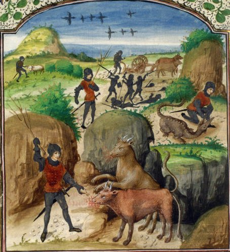
les travaux de l'Artiste en Jason (taureaux monstrueux, labour, dents du dragon, dragon, Toison d'or), f. 86v.Ovidius, Metamorphoseon libri XV, Belgique, Flandre, XVe siècle
Cette image résume les premiers travaux de l'Artiste depuis la captation de la prima materia jusqu'à l'ensemencement de la terra alba foliata. Cette opération par laquelle s'achève la période de dissolution de la matière est toute entière dévolue à la Virgo paritura [voir Pandora, 1588 supra où nous assistons à la glorification du corps
sous l'aspect de l'Assomption de
la Vierge]. C'est dans cette terre vierge que Cadmos introduit
l'or enté ou or mussif qui n'est, certes pas, le métal
vulgaire. La croissance du Rebis s'accomplit dans l'heptagone du RS,
à l'étage supérieur. Le
et la occupent le centre de cette scène où le
couple alchimique paraît, avec à gauche, le second Adam et
à droite, Ève. Que représente le second Adam ?« Adolphe, suis-moi; je te montrerai les choses qui t'ont été préparées pour que tu puisses passer des ténèbres à la lumière. » [Declaratio et Explicatio Adolphi in Aurelia Occulta, Bibliotheca Chemica Curiosa, t. II, pp. 198-216 in Jung, Racines de la Conscience]
Cette citation que Jung tire de l'Occulta Philosophica [Symbolum Fratris Basilii Valentini, voir bibliographie] se trouve dans un traité que les alchimistes français connaissent sous le nom d'Azoth et qui fait partie de ces écrits attribués à Basile Valentin [cf. Douze Clefs. La suite du traité est malheureusement amputée du Senioris Zadith Tractatulo de Chemia, traité sur lequel Jung et M.L. von Franz ont beaucoup travaillé et qui constitue l'un des plus vieux écrits sur l'Art sacré, après ceux de Zosime, dans la mouvance de la Turba et d'Artephius]. Quoi qu'il en soit, la transformation de l'Adam primitif en second Adam tient en ce que le premier a une forme élémentaire tandis que le second est principié ; nous le voyons sur le cartouche inférieur du RS où le quadratum
montre un Adam nimbé et éclatant [rappelant
le moment où il est comme surgi de terre entraînant une
déflagration, un souffle, où l'on peut voir - par cabale
- la genèse d'Ève]. Il représente,
à ce titre, l'arcane du qu'il n'est auparavant qu'en
puissance :
seule la dissolution, le passage au creuset †, le
transformera en
sulphur ou second Adam.« L'homme terrestre, charnel (sarkinoV) est appelé Thoth ou Adam. Il porte en lui l'homme spirituel, que l'on nomme : jwV (lumière). Ce premier homme Adam -Thoth est symbolisé par les quatre éléments. L'homme spirituel et l'homme charnel se nomment Prométhée et Épiméthée. » [Jung, Racines de la Conscience, IV. Le symbolisme de la pierre, p. 211, Pochothèque, ]
On voit la proximité entre ces réflexions et le RS dans la partie du quadratum. On connaît le mythe d'Épiméthée : frère de Prométhée, il reçoit un présent de Zeus : Pandore [Ève] qu'il prend pour femme. Là-dessus, deux remarques : d'abord la relation à Zeus
pour la foudre [cf. supra];
ensuite la parabole de la boîte de Pandore d'où seule
l'Espérance - Hesperus - ne s'enfuit point. Jung
poursuit en assurant que l'homme spirituel est lié au corps par
Pandora et :«... qu'il s'agit ici d'une anima qui fonctionne comme lien (ligamentum) du corps et de l'esprit... qui emprisonne la conscience dans le réseau du monde. » [ibid. p. 211]
Pour des raisons que nous avons exposées ailleurs en de multiples reprises, il semble qu'une erreur se soit glissée dans l'analyse que donne ici le psychanalyste. Et cette erreur est peut-être en partie due à une ambiguité présente dans des textes allemands qui se répercute même dans l'iconographie : la confusion entre l'animus
et l'anima [voir
Lambsprinck, figure I in Musaeum
Hermeticum].
Il paraît peu probable que l'anima puisse constituer un lien
entre le corps et l'esprit puisque, dans le phénomène du
transfert [dissolution],
c'est un spiritus corruptus qui
s'élève alors que dans le phénomène de
projection [réincrudation],
on assiste à une
séparation d'entre l'esprit et l'âme, par sublimation du
Mercure. Il y a un texte des plus curieux du corpus
alchimique là-dessus et que Jung n'a point manqué de
commenter dans son Mysterium
conjunctionis, t. I, au chapitre Luna. Nous en avons dit
quelques mots
naguère : il s'agit de l'Introïtus de
Philalèthe :« Je dirai donc que le soufre externe10, vaporeux, comburant, adhère tenacement à notre Chaos11, à la tyrannie duquel il n'a pas la force de résister, si bien que, pur, il s'envole du feu sous l'apparence d'une poudre sèche. Mais si tu sais irriguer cette terre aride avec une eau de son propre genre, tu élargiras les pores de cette terre, et ce larron externe sera chassé au-dehors avec les opérateurs du désordre, l'eau sera purgée par l'addition d'un soufre véritable12 de ses ordures lépreuses et de son humeur hydropique13 superflue; et tu auras en ta possession la fontaine du comte Trévisan14, dont les eaux son proprement dédiées à la vierge Diane15. » [chapitre VI, l'Air des Sages, § III]
C'est un des textes les plus difficiles du corpus tant son sens semble se dérober à la raison, comme le fugitif mercure. L'interprétation qu'en donne Jung est basée sur une approche trop exclusivement psychanalytique et ne prend absolument pas en compte la possibilité alternative d'opérations de laboratoire. Aux notes que le lecteur trouvera dans la section [Introïtus, VI], nous ajouterons l'amplification que voici. On doit comprendre que ce soufre comburant n'est autre que le spiritus corruptus ; il adhère au Chaos car il est inclus dans la prima materia : il incombe à l'Artiste de le libérer en sorte qu'il puisse être transformé en sulphur
et cette libération s'opère par la
médiation de l'aqua permanens qui, dissolvant la terre aride,
permet ainsi son ouverture [il
s'agit d'une variation sur le thème de l'humide radical métallique].
Le larron est donc ce spiritus
corruptus que l'on aperçoit à la figure 8 du Rosarium philosophorum. Il semble qu'ensuite,
Philalèthe passe à la description de la phase
ultérieure où la coagulation progressive de l'eau
mercurielle survient. C'est donc le
Mercure qui tient lieu de ligamentum
ou plutôt, comme
le dit Fulcanelli, de moyen [tiers
agent] pour conjoindre les deux extrémités du
vaisseau de nature : et .
Dans ces conditions, c'est l'animus qui emprisonne l'âme dans le
réseau du corps, c'est-à-dire dans le cristal : les
cristaux [voir M. Eliade, le Chamanisme, Payot, 1951]
serviraient d'esprits auxiliaires [ne
perdons pas de vue qu'il s'agit du corps minéral du lapis ou
SEL ; il exerce une action synergique
à celle opérée par le Mercurius sur le sulphur ] ce qui
équivaut à en faire des centres de projection [voir Aurora
consurgens, II]. Ce lien, on le trouve dans la mythologie
sous l'espèce de la thériomorphose [exemple : les lions de Cybèle,
Atalante et
Hippoménès, cf. Atalanta fugiens]. Un
peu plus loin, Jung cite le texte de l'Aurora consurgens [voir le texte in M.L. von Franz, trad.
la Fontaine de Pierre, 1982] :« ... l'homme qui, auparavant, était mort, a été fait âme vivante. » [ibid, p. 212]
propos qui fait écho à ce qu'écrit Dorneus :
« De pierres mortes, transformez-vous en Pierres Philosophales vivantes... » [in Clavis totius philosophiæ chemisticæ, etc., Theatrum chemicum », t. I, p. 267]
cité dans Psychologie et Religion [Histoire et psychologie d'un symbole, p. 184]. Dorn renvoie à un processus d'animation, premier signe de l'individuation. Nous sommes confrontés à un processus typique d'introspection mettant en jeu ce que Jung nomme « l'imagination active » [permettant la surrection d'éléments inconscients de la psyché par le biais de stimuli à caractère numineux - lors d'un processus où intervient un phénomène de type extatique - c'est-à-dire l'organisation d'un délire en principe auto contrôlé, cf. en particulier Racines de la Conscience, chap. VI de la Nature du psychisme, Pattern of behaviour et archétype].
Pour en revenir à l'hermaphrodite, il s'agit d'une substance double, le Rebis [appelé aussi airain ou laton ou laiton net ou non net selon le stade de la coction], dont le caractère principal est d'être dissous, plus ou moins fluide, pâteux, bref ayant des rapports avec la lave. Nous sommes alors à l'Auro hora [Aurore de l'oeuvre, jeu de mot sur Aurora consurgens] où Lucifer
paraît. Ce Rebis est formé des soufres
rouge et blanc que constituent les corps des luminaires {,
} et qui contractent alors une forme principiée.
Mais il y a une autre substance double dans l'oeuvre des philosophes,
qui est beaucoup plus subtile que le Rebis : elle est constituée
du corps dissous de la Lunaire et d'une partie
du Mercure ; c'est
Philalèthe qui en a parlé dans un petit traité,
tout à fait surréaliste là encore : EXPÉRIENCES
SUR LA
PÉNÉTRATION DU MERCURE DES SAGES POUR LA PIERRE, PAR
LE RÉGULE DE MARS, OU FER, TENANT DE L'ANTIMOINE, ET
ÉTOILÉ, ET PAR LA LUNE OU L'ARGENT [tome IV de la Bibliothèque des
Philosophes chimiques, pp. 138-148].
Qu'est-ce au juste que cette substance binaire ? Nous proposons d'en
faire le négatif du Rebis, son ombre en quelque sorte, dans la
mesure où son existence est virtuelle ; là encore, la figure 8 du Rosaire sera utile pour se faire
une idée du problème : dans un tombeau [le creuset qui est fait de la
même substance que la pierre] gisent deux corps [le Roi et la Reine qui sont les
luminaires éclipsés] ; du tombeau
s'échappe une petite créature [spiritus corruptus] qui s'en va
rejoindre une masse nuageuse [assimilable
au Chaos du premier Mercure]. Nous aborderons
ultérieurement cette partie parce qu'elle se rapporte
très directement à la suite du RS. Pour l'heure, il nous
faut dire encore quelques mots sur le deuxième Adam et sa
relation avec l'Adam primordial.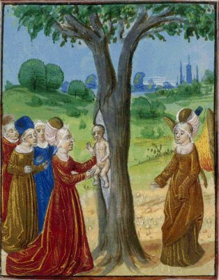
Cette vision de la naissance d'Adonis [qui est le
des alchimistes] parle d'elle-même. Le filius philosophorum
sort de l'arbor vitae,
c'est-à-dire de la [on remarque qu'il s'agit du même filius qui apparaît
au sommet de l'arbre au premier panneau du RS].
L'élément
chthonien [racines] se
double évidemment d'un élément aérien
[faîtage].
Voilà où se niche, stricto sensu, la relation entre les
deux Adam. Le couple primordial chassé du Paradis trouve son
équivalent alchimique qui est celui de l'or enté au sein
de la terra alba foliata.
Adam jaillit ainsi de l'arbre sacré dont l'écorce s'est
craquelée sous la poussée du souffle d'Ève qui
s'échappe et se dissipe. Dans l'Enchiridion de
D'Espagnet, on trouve ceci qui illustre bien notre commentaire :« C'est aussi du fait que les métaux, principalement les parfaits, renferment en eux les principes de vie, à savoir ce feu empreint et insufflé par le Ciel, qui, étant devenu comme engourdi et émoussé sous l'écorce du métal, et même privé de mouvement, y est caché comme un trésor enchanté, jusqu'à ce que, libéré par la résolution philosophique et par l'esprit clairvoyant de l'artisan, il fasse entrevoir un esprit subtil et une âme céleste par le mouvement végétatif, et les déploie enfin dans la production merveilleuse du secret de l'art et de la nature. » [chap. CLVI]
Les écrits de Jean d'Espagnet sont admirables : ici, en quelques lignes, il nous fait voir de façon autrement plus claire que Philalèthe le concept de la sublimation philosophique. Et le rapport existant entre l'âme et le second Adam. En même temps, il fait intervenir directement l'Artiste qui est pris à la mesure du Démiurge, maître et esclave à la fois du Mercurius
. Résumons donc : l'esprit
subtil représente la fumée blanche d'Artephius : c'est le Soufre blanc ou ; l'âme céleste est le Soufre rouge ou
teinture dont la forme dissoute est le sulphur . Adonis, Attis et Osiris, trois têtes sous le
même voile pourrait-on dire en parodiant Fulcanelli [dans le Myst Cath., il parle ainsi de
Déméter, Isis et Coré - Perséphone].
Le second Adam aura un destin ambigu dans la mesure où il
donnera la vie en mourrant : la légende rapporte en effet qu'il
fut culbuté par un sanglier [voir emblème
XLI de l'Atalanta fugiens] et
cela même au moment où Aphrodite se portait à son
secours : du sang d'Adonis naîtront des anémones,
première fleur du Printemps qui signale la renaissance du .
[ Aphrodite, voulant secourir
Adonis se pique à une épine de rosier, et son sang
s'écoulant sur les roses blanches -ALBEDO - les
métamorphose en roses rouges - RUBIGO.]
Perséphone put alors récupérer l'âme
d'Adonis qui descendit au Tartare, ce qui indique la
réincrudation du : on voit que la chute de
l'âme [c'est de cela qu'il
s'agit] coïncide avec l'animation du lapis et le processus
d'individuation tel que Jung le comprend à partir des textes
alchimiques. La descente de l'âme dans le corps semble donc
consubstantielle [dans le
contexte alchimique] de la naissance du Mal mais la conclusion
que l'on en tire est fautive : ce n'est pas le corps mais bien
l'âme qui est la cause du Mal. En effet, l'âme fait, par
essence, partie de l'UN [unus
mundus] que les alchimistes ont assimilé à leur
aqua permanens. Dans le grand oeuvre et en particulier dans la grande
coction [la méditation si
l'on prend à la lettre la
Tabula
smaragdina], l'Artiste joue son rôle
démiurgique et
va provoquer une schizogénie en diminuant l'énergie
interne du système ; en d'autres termes, il va diminuer la
température de son creuset : dans ces conditions, l'aimant des
Sages attirera le chalybs sous l'influence d'une attraction naturelle
que d'aucuns appellent le désir. C'est
ainsi que dans l'UN se
produit une rupture qui aboutit - si l'on prend l'exemple de la
psychologie - à une disjonction entre le Moi [anima] et le Soi [animus]. Disjonction qui tire
son origine de la survenue d'une singularité dans le Ça :
l'Autre [voir Aurora consurgens II pour des
explications sur le Ça]. Manifestement, le désir
procède d'un affaiblissement du Soi [animus, i.e. spiritus ] ou dissipation de l'esprit Mercure [symbole du père] : il
s'agit donc
de la survenue d'un véritable potentiel d'irrationalité
consécutive à la formalisation d'une matière qui,
jusque-là, n'était que virtuelle comme du reste le
sulphur : c'est le corps ou qu'il faut voir dans cette matière que les
Sages ont appelé leur Aimant et qui est caché dans le
Mercure [unus mundus].
L'idéogramme complet s'écrit [anima
consurgens]. Ce désir est immanent et procède
d'une tendance naturelle de l'âme à la projection ; cette
projection est en principe contenue par le Soi ; seule la
présence d'un élément attracteur AUTRE est capable
de vaincre la barrière de potentiel du Soi, à l'instar de
ce qui se passe en mécanique ondulatoire
: c'est une forme
« d'effet tunnel » psychique dont l'analogue alchimique est
la projection du dans le réseau du monde : nous voici placés au soir de l'oeuvre, face
à Hesperus, qui est la véritable Auro hora. Le Mal peut ainsi
être défini comme la possibilité pour le Ça [identifié au quadratum]
d'initier un attracteur permettant de vaincre
l'opposition du Soi [plomb
mercuriel] au Moi [Sel, Mercure et
Soufre sont identifiés au trivium et l'ensemble forme l'heptagone].
Plotin a stigmatisé cette
ambivalence du Soi :« Mais l’être qui s’adjoint le désir parce qu’il vient après l’Intelligence s’avance dès lors davantage par cette addition ; il tend à produire un ordre conforme à ce qu’il a vu dans l’intelligence ; il en est comme gros, et il ressent les douleurs de l’enfantement ; alors, il s’efforce de produire et de créer. L’âme tendue par cet effort qui s’exerce dans le sensible, associée à l’âme universelle, dominant avec elle tous les êtres extérieurs gouvernés par elle, exerçant avec elle sa providence sur l’univers, veut en gouverner une portion en s’isolant ; venue en cette portion dans laquelle elle est, elle n’appartient pourtant pas tout entière au corps, mais elle garde quelque chose d’extérieur à lui. Son intelligence n’est même pas affectée par le corps ; mais elle-même, elle est tantôt dans le corps, tantôt hors du corps ; partie du premier rang, elle s’avance jusqu’au troisième, tandis que l’Intelligence reste à la même place et qu’elle remplit tout de beauté et d’ordre par l’intermédiaire de l’âme » (IV,7,13,4).
Le point intéressant dans ce passage est que l'intelligence [le spiritus en alchimie ou
]
est affectée d'un état oscillatoire,
posant comme
fondement qu'un effet peut survenir sans cause. Nous reviendrons
là-dessus lors de l'examen du panneau inférieur du RS.
Néanmoins, nous pouvons dès à présent poser
en conjecture que le Moi possède une tendance
naturelle à la chute [à
comprendre comme dissolution,
par cabale : cado, cassito et cassis, casque, voir en recherche car nous avons maintes fois
abordé ce point]; en ce sens on pourrait presque
affirmer que le Moi obéit à la loi de la gravitation
universelle, le Soi constituant le centre [pour l'alchimiste, le Vicaire, le
fédérateur] autour duquel est organisée
l'orbite du Moi. Le couple {, } est lui-même immergé dans le Ça
ou unus mundus
qui correspond au sensorium
Dei de Newton [rappelons
que le Ça est défini comme tout ce qui est
extérieur à la psyché : il s'agit de la
réalité objective - qui est l'objet de la philosophie naturelle - et
dont l'existence est indépendante
de la psyché, du moins dans la philosophie naturelle
pré-relativiste et surtout pré-quantique].Van Lennep écrit :
« L'arbre (qui est celui de la vie et de la philosophie hermétique) est couronné par dix larges feuilles désignées comme étant à nouveau spiritus et anima... il est dominé par le soleil et la lune qui indiquent la nature de ses fruits, l'or et l'argent. Ils sont présentés avec des plumes (spiritus et anima). » [Alchimie, op. cit., p. 430]
Ce sont d'abord ces plumes, omniprésentes dans le RS, qui vont attirer notre attention. Le roi est lui-même emplumé et dévore ses plumes à l'instar du cygne qui « meurt par ses propres plumes » ou du pélican qui se dévore afin de nourrir sa portée.
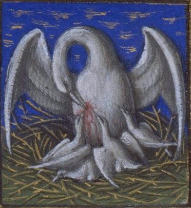
Barthélemy l'Anglais, De proprietatibus rerum (traduction Jean Corbichon), pélican se perçant le flanc pour nourrir ses petits, f. 23v. France, Le Mans, XVe siècle
Ces plumes sont une image des ailes du
comme l'écrit Jung [Psychologie et Alchimie, trad. fr.,
p. 529, § 497] et ces plumes :« ... du phénix et d'autres oiseaux jouent un grand rôle dans l'alchimie en général, et plus particulièrement dans les écrits de Ripley. » [idem, n. 183. Jung renvoie aux Verses belonging, etc. voir infra]
Sur la volière de l'alchimie, voir le poème du phénix. La plume est à rattacher à l'arbre : comme lui, elle symbolise la poussée ascensionnelle et la croissance végétale. Elle forme une sorte de transmetteur entre
et , envisagée sous le point de vue
de l'humain tandis que l'ange l'est sous celui du divin [le symbolisme est le même : il
exprime l'accord entre animus et anima dont le point d'orgue, si l'on
peut dire est ioV ou venin].
Les Indiens, par exemple, disposent des plumes autour d'un plus ou moins croisé afin de préserver
des cauchemars [spiritus
abscondus : dreamcatcher qu'il faut rapprocher de l'auréole des
saints, image solaire qu'on retrouve en outre dans l'aspect des
prêtres d'Isis, symbole chthonien majeur]. Ce pouvoir
rayonnant qui éloigne toute obscurité fait partie des
archétypes jungiens, se rattache au mandala et bien sûr au
. Enfin, la plume renvoie à Thémis dont
nous savons toute l'importance en alchimie. De là, transition
facile à faire avec la bouche d'ombre du Collricke
d'où jaillit le serpent à plumes, c'est-à-dire
Mélusine. Mixte où dominent les traits de la
viscosité [nécessaire
à l'entretien du ] qui, seule, garantit la
progression du sulphur vers l'état de l'anima où la conscience se cristallise dans
l'individuation [réincrudation].
Le désir est le vecteur de cette transition de phase où
le MOI s'affranchit de la tyrannie du SOI. Sous le nom de Draco, ce
serpent réunit les eaux du dessus et celles du dessous ; que
l'on n'y voit pas d'eau vulgaire : il s'agit d'eau
étoilée, métallique, d'éclat et de
vivacité argentine tenant à la fois des lumières [ + ] et [ + ]. Force, protection, moyen de
locomotion de l'esprit [mobilis
in mobile], telles sont les qualités que l'on
reconnaît à la plume alchimique : on pourrait presque
parler du Verbe de Dieu. C'est aussi le duvet ou lit douillet des
colombes de Diane [voir
Philalèthe, Introïtus]. C'est
encore l'aspect adopté par certains minéraux fragiles
à la fois « pierre et non pierre » comme l'alun de
plume [voir chimie et alchimie]. Si l'on va
loin dans le temps, en Egypte, nous trouvons en la femme à la
plume, Maât, dans laquelle on peut trouver
l'équivalent et l'épouse de Rê ou
: tous deux, dans le temple cosmique ou athanor, disposent de leur
pavillon doré : ce
que les égyptiens
appellent Maât, c'est l'interaction des forces qui assurent
l'ordre
universel, de ses éléments constitutifs essentiels [mouvement céleste, saisons,
jour, aurore]. Les alchimistes nomment cohobation ce
mouvement convectif incessant. On comprend que le point de liaison
entre ces vieux archétypes et l'alchimie se situe au
fléau de la balance, moment de la pesée de l'âme et
de la naissance d'Adonis.Dans le RS, le second Adam
est posté au sommet de l'arbre, dans l'heptagone : sa tendance
innée à l'expansion est manifestée par le
caractère éclatant de la bulle où il est
disposé, rappelant l'amande où on l'observe
déjà, alors qu'il séjourne - panneau
inférieur du RS - dans le quadratum . À sa rencontre, se dégageant du
faîtage, apparaît l'AUTRE incarné par le mi serpent, mi où l'on voit les traits
de Lucifer.« Dans le Ripley Scrowle le serpent du Paradis réside à la cime de l'arbre sous la forme d'une mélusine... un homme, vraisemblablement l'adepte, entreprend de grimper à l'arbre et rencontre, se faisant, la mélusine ou Lilith qui descend du sommet... Dans le domaine chrétien du Moyen Âge, l'anima des chamans se transforme en une Lilith qui, suivant la tradition, serait le serpent du Paradis et la première femme d'Adam, avec laquelle il aurait engendré les démons. » [Jung, Racines de la conscience, IX, Aspects divers de l'arbre, p. 469, Pochothèque, ]
On connaît la légende de Mélusine : une fée d'une beauté merveilleuse promet à Raimondin de faire de lui un roi s'il accepte de l'épouser et de ne jamais la voir un samedi [jour de
].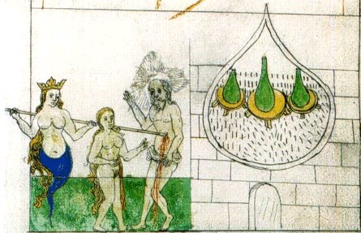
Mélusine,
in Pandora : Voici le présent le plus précieux de Dieu
[Alchimistiches Manuscript, Donum Dei, 1550, Ms. L IV 1, UB, Basel
[cette
image est donnée dans : Emma Jung et M.L. von Franz, Légende du Graal, trad.
Albin Michel, p. 62 et dans Jung, Synchronicité
et Paracelsica, trad. p.
99, Albin
Michel, ]
Raimondin ne peut s'empécher de regarder par un trou percé dans le mur Mélusine qui, un samedi, s'est retirée dans sa chambre ; on devine la suite : Mélusine trahie s'envole à tout jamais en clamant sa peine par des cris efroyables. Cette légende rappelle le mythe d'Éros et de Psyché. Jung y voit la figure de Lilith, née directement de la terre comme nous l'avons vu supra. Il y a lieu, comme cela est noté, d'y décéler l'androgynie primordiale qui nous renvoie à l'hermaphrodite des alchimistes. La Mélusine est un thème récurrent de l'alchimie et se retrouve dans les écrits de Paracelse [De pygmaeis, Sudhoff XIV]. Elle est assimilée à la sirène mais dans un sens mythologique qui n'a rien à voir avec l'acception hermétique qu'on lui connait : la sirène annonce la coagulation de l'eau mercurielle [grappin de l'oeuvre, assimilable au rémora ou au loup]. Jung en dit :
« La Mélusine paracelsienne apparaît comme une une variante du serpent mercuriel (serpens mercurialis), lequel a parfois été représenté entre autres sous les traits d'une jeune fille à forme de serpent, afin d'exprimer par cette monstruosité la nature double du Mercure. La délivrance de cet être était représentée par les motifs de l'assomption et du couronnement de Marie. » [Synchronicité et Paracelsica, op. cit., § 222, p. 189]
L'Adam primordial, non point mâle mais androgyne, devient Adam et Ève. Il est possible de trouver en Lilith un cousinage avec Junon car elle va devenir l'ennemie d'Ève, son domicile est fixé dans les profondeurs de la mer et elle représente la haine du couple et des enfants [on voit le parallèle avec Junon ordonnant à Typhon de poursuivre Latone]. C'est, en somme, la singularité que nous avons évoquée en parlant du Ça et de la nécessité d'un élément attracteur permettant au Moi de passer outre le Soi, ce qui aboutit fort logiquement au processus d'individuation : ÊTRE est un des buts de la vie et l'un des moyens pour le Gnostique consiste à passer par la transcendance, absolu qui ne sera certes jamais atteint mais qui, du moins, est lié au Bien. Remarquons que cette androgynie primordiale est présente dans le quadratum inférieur du RS, où l'on a signalé l'absence d'élément féminin, sauf à voir dans la figure ailée à la droite de la colonne l'Ève primordiale mais cela est riens moins qu'évident.
« Suivant les Hébreux, Adam a été créé à partir de "la terre de l'arbre de vie" (arboris vitae gleba), appelée "terre rouge de Damas"... Cette division de l'âme de l'arbre en une figure masculine et une figure féminine correspond au Mercure alchimique en tant que principe de vie de l'arbre, car, comme hermaphrodite, il est double. » [ibid., XIII, Le numen féminin de l'arbre, p. 490-491]
En revoyant la naissance d'Adonis, nous ne pouvons qu'être d'accord quant au sens féminin que l'on peut accorder à l'arbor vitae. On pourra encore jeter un regard sur l'aquarelle de Pandora. L'arbre dans lequel les alchimistes voient un chêne est assimilé au Mercure philosophique : il assure la transition entre le Lion vert et le Lion rouge. Transition qui trouve la † sur sa route [creuset, figure du Christ] et que nous aborderons plus loin, en nous penchant sur le mystère de la Trinité.
Voilà qui nous ramène au RS : posons le regard sur le dragon au crapaud ; au-dessous un texte sur quatre colonnes, puis nos deux lions [voir infra].
| Sur
le sol il y a une colline, Ainsi qu'un serpent dans une source, Sa queue est longue et ses ailes déployée, Prêt a s'envoler par les côtés, Réparez le puits promptement, Afin que les serpent ne s'en échappe, Car si il s'en allait, Vous perdriez la vertu de la pierre, Où est le sol que vous devez ici connaître, Et la source qui est si claire |
Et
quel est le dragon avec la queue, Ou autrement le travail sera de peu d'utilité, La source doit donner de l'eau claire, Prenez bien garde à ceci, votre feu, Le feu avec l'eau brillante devra être brûlé, Et l'eau avec le feu devra être lavée, La terre sur le feu doit être mise, Et l'eau avec l'air doit être unie, |
De
cette façon vous ferez la putréfaction, Et amènerez le serpent à la Rédemption, En premier il doit être noir comme un corbeau, Et au fond de sa tanière il devra être étendu, Gonflé comme un crapaud étendu sur le sol, Avec des vésicules le couvrant de toutes parts, Elles doivent éclater et s'étaler pleinement, Et c'est par cet artifice que le serpent est mis à mort, Il doit briller de plusieurs couleurs, Et devenir aussi blanc qu'un os, |
Avec
l'eau en laquelle il était, Lavez le parfaitement de son péché, Et laissez le boire légèrement, Et cela devrait le rendre beau et blanc, Laquelle blancheur doit demeurer, Voyez ici est l'accomplissement final, De la pierre blanche et de la pierre rouge, Voyez ici la vrai manière d'opérer. |
La première partie du texte met en garde contre le danger de laisser perdre le dragon, c'est-à-dire le Mercure ; il est comparé à un serpent. Notons que le mot well doit être traduit non par puits mais par source ; sinon, le vers « And also the welle that is so clear » n'est pas compréhensible. Le texte s'étend ensuite sur la purification du dragon et l'albification.
La citation est singulière : elle ne semble pas respecter la logique de l'oeuvre. En effet, la disparition de la nigredo
prépare l'albedo et le rubigo. Les deux lions sont bien connus : il s'agit d'Atalante et Hippoménès
qui gardent le char de Cybèle, déesse primitive qui tient
en sa main cette pierre noire contenant le feu du ciel . Revenons encore sur les rapports entre
le viel Adam et le second Adam.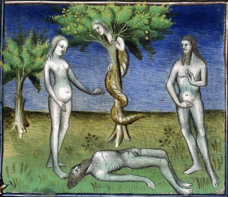
Adam kadmon, Fol. 29 Saint Augustin, Cité de Dieu (traduction Raoul de Presles), France, Paris, XVe [BNF Richelieu Manuscrits occidentaux Français 21]
Fulcanelli assure que le Mercurius peut être compris comme sulphur
ou mercure selon la forme qu'il adopte, forme tributaire de la
température de la matière pour un stade donné de
l'oeuvre, compte tenu de la dissipation du dissolvant.« Le mercure est fait de matière terrestre riche et de viscosité humide, et on distingue en lui le mercure ordinaire et le mercure philosophique. » [Jung, Symbolique de l'Esprit, p. 41]
Jung parle d'abord du Mercure pris comme compost, c'est-à-dire d'une terre grasse [huile rouge] irriguée par l'eau de Zeus [rosée céleste] et il le décline en deux modalités : précisons que le mercure ordinaire est le Mercure dit de la voie commune [premier Mercure dont parle le pseudo Lulle dans la Clavicule], compris comme dragon igné, qui constitue le socle même du quadratum
dans le RS. On peut y apercevoir
le vieil Adam ou Mercurius senex qu'évoque Jung dans son Psychologie et Alchimie.
Il se confond avec le crapaud du RS, animal visqueux et composé
au dire des Anciens d'une terre grasse. On trouve encore ce passage
dans l'Aurelia occulta
[texte correspondant à l'Azoth, chap. Matière première]
:« Je suis Dragon envenimé étant partout présent & à vil prix, la chose sur laquelle je repose, & qui se repose sur moi se trouvera en moi, qui recherchera bien & diligemment mon eau & mon feu destructeur & composeur. Tu extrairas de mon corps le lion vert & rouge, que si tu ne me connais exactement tu prends les cinq cens de mon feu, il sort un venin de mes naseaux trop tôt mur, lequel a apporté dommage à plusieurs, sépare donc avec artifice le subtil de l’épais... » [Aureliæ Occultæ Philosophorum partes duz. M. Georgio Beato Interprete, in Theat. Chem., IV, pp. 462-497]
On remarque que la dernière phrase se rapproche beaucoup d'une des propositions de la Tabula Smaragdina. La question est de savoir en quoi l'association Adam - venin est licite. Au vu de tout ce que nous avons déjà écrit dans nos sections, il paraît clair que cette association passe nécessairement par l'anima
dont le premier état est [animus].
Elle consiste en l'animation de la matière [là où les alchimistes
voient celle de leur ]. Elle trouve son origine
alchimique dans la connaissance qu'Adam [comme
élémentaire] a eu d'Ève [ primordiale],
narrée en substance dans la Deuxième Parabole de
l'Aurora consurgens
[texte pseudo aquinate],
intitulée : du
Déluge des eaux et de la Mort que la Femme a introduite et
chassée. DEUXIÈME
PARABOLE : DU DÉLUGE DES EAUX ET DE LA MORT QUE LA FEMME A
INTRODUITE ET CHASSÉE.
Lorsque l'abondance de la mer se sera dirigée vers moi et que les torrents auront inondé mon visage, que les flèches de mon carquois se seront enivrées de sang, que mes celliers se seront embaumés d'un vin excellent et que mes greniers seront remplis de froment, lorsque l'époux sera entré dans ma chambre avec les dix vierges sages, qu'ensuite mon ventre se sera gonflé au contact de mon bien-aimé, et que le verrou de ma porte se sera ouvert pour mon bien-aimé, après qu'Hérode en colère aura tué un grand nombre d'enfants dans Bethléem de Juda et que Rachel aura pleuré tous ses fils, que la lumière se sera levée dans les ténèbres et que le soleil de justice aura paru du haut du ciel, alors viendra la plénitude des temps où Dieu, selon sa parole, enverra son fils qu'il a établi héritier de toutes choses et par qui il a fait aussi les siècles, à qui il a dit un jour : Tu es mon fils ; aujourd'hui je t'ai engendré, lui à qui les mages venus de l'Orient ont offert trois présents précieux. En ce jour que le Seigneur a fait, exultons et réjouissons-nous en lui, car aujourd'hui le Seigneur a regardé mon affliction et il a envoyé la rédemption, lui qui doit régner en Israël. Aujourd'hui la mort que la femme avait apportée, la femme l'a chassée, et les portes de l'enfer ont été brisées. Car la mort n'exercera plus sa domination et les portes de l'enfer ne prévaudront plus contre elle, puisque la dixième drachme qui avait été perdue est retrouvée et que la centième brebis dans le désert a été ramenée, et le nombre de nos frères (diminué) par la chute des anges a été pleinement restauré. II te faut donc, ô mon fils, te réjouir aujourd'hui, car il n'y aura plus de cri de souffrance, car les choses antérieures ont passé. Que celui qui a des oreilles pour entendre entende ce que l'esprit de l'enseignement dit aux enfants de la science sur la femme qui a introduit et chassé la mort, ce à quoi des philosophes font allusion par ces mots : Ote-lui l'âme et rends-lui l'âme, car la corruption de l'un est la génération de l'autre. C'est-à-dire : Prive-le de son humidité corruptrice et augmente-le de son humidité connaturelle par laquelle apparaîtront sa perfection et sa vie.
Marie Louise Von Franz, Aurora Consurgens, trad. la Fontaine de Pierre, 1982, pp. 83-85
Lorsque l'abondance de la mer se sera dirigée vers moi et que les torrents auront inondé mon visage, que les flèches de mon carquois se seront enivrées de sang, que mes celliers se seront embaumés d'un vin excellent et que mes greniers seront remplis de froment, lorsque l'époux sera entré dans ma chambre avec les dix vierges sages, qu'ensuite mon ventre se sera gonflé au contact de mon bien-aimé, et que le verrou de ma porte se sera ouvert pour mon bien-aimé, après qu'Hérode en colère aura tué un grand nombre d'enfants dans Bethléem de Juda et que Rachel aura pleuré tous ses fils, que la lumière se sera levée dans les ténèbres et que le soleil de justice aura paru du haut du ciel, alors viendra la plénitude des temps où Dieu, selon sa parole, enverra son fils qu'il a établi héritier de toutes choses et par qui il a fait aussi les siècles, à qui il a dit un jour : Tu es mon fils ; aujourd'hui je t'ai engendré, lui à qui les mages venus de l'Orient ont offert trois présents précieux. En ce jour que le Seigneur a fait, exultons et réjouissons-nous en lui, car aujourd'hui le Seigneur a regardé mon affliction et il a envoyé la rédemption, lui qui doit régner en Israël. Aujourd'hui la mort que la femme avait apportée, la femme l'a chassée, et les portes de l'enfer ont été brisées. Car la mort n'exercera plus sa domination et les portes de l'enfer ne prévaudront plus contre elle, puisque la dixième drachme qui avait été perdue est retrouvée et que la centième brebis dans le désert a été ramenée, et le nombre de nos frères (diminué) par la chute des anges a été pleinement restauré. II te faut donc, ô mon fils, te réjouir aujourd'hui, car il n'y aura plus de cri de souffrance, car les choses antérieures ont passé. Que celui qui a des oreilles pour entendre entende ce que l'esprit de l'enseignement dit aux enfants de la science sur la femme qui a introduit et chassé la mort, ce à quoi des philosophes font allusion par ces mots : Ote-lui l'âme et rends-lui l'âme, car la corruption de l'un est la génération de l'autre. C'est-à-dire : Prive-le de son humidité corruptrice et augmente-le de son humidité connaturelle par laquelle apparaîtront sa perfection et sa vie.
Marie Louise Von Franz, Aurora Consurgens, trad. la Fontaine de Pierre, 1982, pp. 83-85
Cette Deuxième Parabole donne la clef du processus d'expansion par lequel le Moi va à la recherche de l'Autre, c'est-à-dire en somme vers son propre être. C'est l'état de nigredo
qui est dépeint dans la première partie de ce texte qui
dépasse largement, d'ailleurs, les limites de l'alchimie [l'Aurora
consurgens est congénère du Cantique des Cantiques, cf. AC, I].
Pour ce qui concerne le domaine réservé de l'Art
sacré, il suffira d'insister sur le sens à donner aux
dernières phrases de la parabole, en particulier : « Prive-le
de son humidité corruptrice et augmente-le de son
humidité connaturelle
par laquelle apparaîtront sa perfection et sa vie. »
L'humidité corruptrice est l'équivalent du premier Adam [spiritus corruptus] que l'on
voit s'échapper du tombeau à la figure
8 du Ros. Phil.
L'humidité connaturelle augmentée se voit ici
dotée des caractères rendant possible la naissance du
second Adam ou phénix [figure 17 du Ros. Phil.]
en ayant à l'esprit que le cercueil et le lit nuptial
désignent le même objet. De même, remarquons que la
bouche d'ombre de l'athanor, dans le RS, au sommet de l'arbor vitae,
s'est transformée - à hauteur des deux lions - en
l'ouverture d'un puits clair mettant ainsi, littéralement en
lumière, le déplacement du Moi par rapport au Soi,
provoqué par le désir. [voir saint Thomas d'Aquin, Summa, I-II, q. 28, art. 5 : «
Ainsi
l'homme est au plus haut degré parfait et amélioré
par l'amour de Dieu,
mais il est blessé et détérioré par l'amour
du péché... la liquéfaction
provoque un ramollissement
du coeur où le coeur se montre prêt à ce que la
chose aimée pénètre en lui. »]
Voilà qui explique in fine le découplement qui intervient
entre le Soi envisagé comme l'instrument du transfert [sous l'espèce du couple {, }] et le Moi, compris comme
l'immanence de la projection [le
couple {, }], cf. Mysterium conjunctionis, I, Luna, p. 231. Jung ajoute
que chez Dorneus, le Mercure constitue le véritable Adam
hermaphrodite [De Genealogia mineralium, Theat.
Chem., I, p. 568-592]
et Kunrath précise qu'il est engendré du Chaos sans
péché de la matière. On lui prête encore une
forme de quadratum augmentée de la quinta
essentia nommée ciel firmamental ce qui contribue
à
expliquer le symbolisme de l'arbor
vitae. On le désigne encore comme l'homme sortant
du fleuve [allusion au
Déluge évoqué dans la Deuxième Parabole de
l'Aurora consurgens, voir l'image 8 du Splendor
Solis] ArchlauV.
Abraham Eleazar en parle comme de l'Adam Cadmon [Uraltes Chymisches Werk].
Il est particulièrement instructif de voir la coïncidence
entre ce concept de l'anthropos ou Moi et le Soi, marquant la
dualité irréductible - quoique labile - affectant le
couple {, }.
Il semble que l'on puisse esquisser une solution à ce
problème de dualité si l'on considère le
schéma proposé par Jung [Symbolique
de l'Esprit, le dogme de la
Trinité, p. 163]
où, par l'entremise d'une substance [l'arcane], à la fois
qualifiée de divisible et d'indivisible [dualité essentielle où
l'on peut voir un petit résonateur, cf. supra],
il introduit le transfert du Même [Moi] à l'Autre [que nous comprenons comme une
singularité surgissant ex nihilo du Ça]
; précisément, c'est bien le concept de l'Autre qui donne
accès à cette idée du second Adam. Jung extrait ce
passage du Timée
qui abonde dans le sens de nos réflexions :« Il forma (le Démiurge) en combinant les deux une troisième espèce de susbtance intermédiaire (laquelle participe à la fois de la nature du Même et de celle de l'Autre) et il la plaça au milieu de la substance indivisible (et de la susbtance corporelle divisibla)... » [in Symbolique de l'Esprit, le dogme de la Trinité, p. 163]
Il est aisé de voir en cette substance indivisible la marque du
. Ce n'est pas tout : on y devine encore un couple
d'opposés formé du corps de la Lunaire [le Sel ou corps] et du Mercure [cf. supra].
Une figure « trine » se dégage [où l'on
aurait ajouté un point central dans le cercle luciférien]
où la substance indivisible prend la forme de la † et constitue le
milieu
ou moyen permettant de conjoindre {,
} à l'état principié. Jung
poursuit :« Un X placé dans un cercle désigne, selon Porphyre, l'âme du monde chez les Égyptiens. En réalité, il s'agit du hiéroglyphe symbolisant la ville. Je présume que Platon a déjà essayé de créer le mandala qui réapparaît ensuite das le Critias pour désigner la capitale de l'Atlantide. » [idem, p. 165]
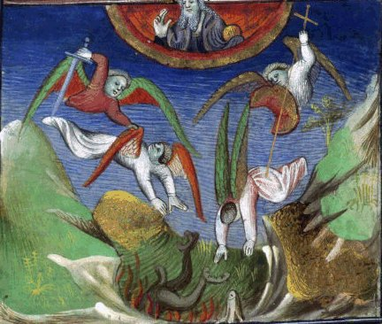
Chute des anges déchus, BNF Richelieu Manuscrits occidentaux, Français 21, Fol. 17 Saint Augustin, Cité de Dieu (traduction Raoul de Presles), France, Paris, XVe
Il n'est plus nécessaire d'insister sur l'importance de la lettre X qu'il faut lire c en tant qu'initiale de CristwV. On peut voir dans cette ville, signalée par Jung, l'analogue de la Jérusalem céleste ; remarquons que la description de l'Atlantide [voir Critias, 115e - 116d, trad. Luc Brisson, GF, 1992] a fort à voir avec celle de l'athanor des Sages mais nous ne pouvons développer cela dans le cadre de cette section. Pour l'heure, nous allons étudier quelques points se rapportant au mystère de la déchéance des anges et à leurs rapports avec le complexe {second Adam - Eve} d'une part et l'hermaphrodite d'autre part. L'image ci-dessus montre deux anges, l'un aux ailes rouges, l'autre aux ailes vertes : le premier chute des suites de l'onction de l'épée [SOLVE] ; le second, sous le coup de la croix [COAGULA]. L'opération est orchestrée par le spiritus sanctus et consiste en l'incarnation ou corruption. On a ici un processus qui se déroule après la sublimation [dissolution des matières] dont l'équivalent psychologique est que le Moi parvient à surmonter le Soi et à casser cette opposition entre le spirituel [anima] et le terrestre. La parabole de la chute de l'ange tient peut-être à ce que les alchimistes considèrent que neuf parties sur dix de leurs matières sont entièrement sublimables [voir M.L. von Franz, Aurora consurgens, commentaire à la Deuxième Parabole, op. cit., p. 259 et sq.], le reste formant une espèce de lie où se cache le Sel
qui forme le corps du lapis, et par extension la
partie terrestre du filius
philosophorum. Il nous semble que le point fondamental
à souligner est que le Mercure acué de son Sel [Mercure philosophique]
domine le Soufre et détermine sa projection. C'est
peut-être en cela que l'on peut tenter le rapprochement entre
Ève et Marie que tente M.L. von Franz, à la fin de son
commentaire de la Parabole : « Aujourd'hui la mort que la femme avait apportée, la femme l'a chassée, et les portes de l'enfer ont été brisées. »
Cette brisure ou schizogénie est, elle aussi, marquée d'une X. Pour illustrer notre propos, il est utile de revenir au Dogme de la Trinité [Jung, Symbolique de l'Esprit, p. 164] où le psychanalyste dispose une figure en quinconce qui offre des similitudes avec le concept de la chute de l'ange.
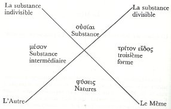
Trois
niveaux de réalité sont à distinguer sur ce
schéma : le premier niveau correspond au ciel firmamental de
Philalèthe et, si l'on reprend l'image des anges déchus, il s'agit de
la sphère où l'on distingue le spiritus sanctus ; dans le
RS, il s'agit du démiurge [voir
chapitre 1]. La substance
divisible est le Moi [anima ] tandis que la susbtance indivisible est le
Soi [animus ]. Le second niveau est cet espace où
les anges chutent [susbtance
intermédiaire, milieu permettant de conjoindre les opposés]
et désigné comme triton
eidoV : c'est là où s'expriment les
principes alchimiques, alimentés par l'instrument de dissolution
[l'épée] et
de fixation [croix] en
admettant des relations entre les deux, selon la formule Solve et Coagula et le
processus dynamique [assimilation
de René Guénon, individuation de Jung]. Le
troisième niveau est chthonien [incarnation]. À ces
trois niveaux se superposent les couleurs correspondantes : nigredo,
albedo et rubigo. On en arrive à cette notion capitale que le
lieu de la totalité - constitution de
l'Être - est aussi celle de la privatio boni. Jung
écrit à cet égard :
« En face d'un mal apparent ne peut exister qu'un bien apparent, et un mal sans substance ne saurait se distinguer que d'un bien tout aussi dénué de susbtance... jamais il n'y a un bien existant en face d'un mal non existant, car ce dernier est une contradictio in adjecto sans commune mesure avec un bien existant... » [Symbolique de l'Esprit, le dogme de la Trinité, p. 207]
] tandis que la susbtance indivisible est le
Soi [animus ]. Le second niveau est cet espace où
les anges chutent [susbtance
intermédiaire, milieu permettant de conjoindre les opposés]
et désigné comme triton
eidoV : c'est là où s'expriment les
principes alchimiques, alimentés par l'instrument de dissolution
[l'épée] et
de fixation [croix] en
admettant des relations entre les deux, selon la formule Solve et Coagula et le
processus dynamique [assimilation
de René Guénon, individuation de Jung]. Le
troisième niveau est chthonien [incarnation]. À ces
trois niveaux se superposent les couleurs correspondantes : nigredo,
albedo et rubigo. On en arrive à cette notion capitale que le
lieu de la totalité - constitution de
l'Être - est aussi celle de la privatio boni. Jung
écrit à cet égard :« En face d'un mal apparent ne peut exister qu'un bien apparent, et un mal sans substance ne saurait se distinguer que d'un bien tout aussi dénué de susbtance... jamais il n'y a un bien existant en face d'un mal non existant, car ce dernier est une contradictio in adjecto sans commune mesure avec un bien existant... » [Symbolique de l'Esprit, le dogme de la Trinité, p. 207]
Il est un domaine auquel le Mal n'a pas accès et dont Jung ne parle pas explicitement : la transcendance. Elle forme pourtant l'exacte réplique de la quinta essentia des alchimistes et elle se révèle consubstantielle au Bien. Elle n'est pas susceptible, non plus, de corruption du fait qu'elle nécessite une projection spirituelle. Cette projection ne peut être le fait de la Raison [médiée par l'esprit ou animus] mais le fait du Sens [médié par l'âme ou anima]. Nous sommes paradoxalement renvoyés à la X puisqu'il y a contradiction interne - ce que Jung nomme justement contradictio in adjecto - par le fait d'attributs où objet et sujet sont flous. Pour nous tirer d'embarras, voyons cet autre passage de Jung :
« La connexion de facteurs coïncidents liés par le sens peut donc, nécessairement, être pensée comme acausale. Or nous sommes tentés bien sûr, à ce point parvenus, de supposer, à défaut d'une cause empiriquement constatable, une cause transcendantale. Mais une "cause" ne peut être qu'une grandeur constatable. Une cause "transcendantale" est en effet une contradictio in adjectio, étant donné que ce qui est transcendantal échappe par définition à toute constatation possible. » [Synchronicité et Paracelsica, trad. Albin Michel, 1988, la Synchronicité, principe de relations acausales, p. 47]
Il est clair que seule l'âme - i.e. anima =
- constitue ce médium permettant l'esquisse
d'un contact ou à tout le moins d'un regard vers cette
Jérusalem céleste qu'est la transcendance, «
Ailleurs radical » qui porte le même nom dans toutes les
langues : l'Absolu. Observons donc que la contradiction
inhérente au concept de la privatio boni [et qu'on trouve en alchimie à
deux reprises, d'abord dans la dissolution
- sricto sensu, assomption du spiritus corruptus - puis dans la
réincrudation, moment de la chute de l'ange - anima consurgens ] consiste en cette dualité animus -
anima où s'exprime en toute virtualité l'opposé
{divisible - indivisible}. Cette dynamique propre à la
psyché implique un véritable état ondulatoire
où il est fatal que le principe de projection - - passe la limite du « puits de potentiel
» que lui oppose le transfert - . Dans ce débordement, les vecteurs psychiques
symbolisés par l'épée et la croix se
révèlent des images éidétiques faciles
à manipuler, pour percevoir des analogies tangibles. Ouvrons
à présent Psychologie
et Alchimie :Le concept
d'imaginatio est l'une des clés les plus importantes, sinon la
plus importante, de la compréhension de l'opus.
L'auteur du traité De sulphure parle de la
faculté imaginative de l'âme, dans ce passage où il
tente de faire justement ce dont les Anciens s'étaient
abstenus : donner une indication claire du secret de l'art.
L'âme, dit-il, se tient à la place de Dieu (sui locum
tenens seu vice Rex est — elle tient sa place, en quelque
sorte règne à sa place) et demeure dans l'esprit de vie
dans le sang pur. Elle gouverne la pensée
(illa gubernat mentem) et
celle-ci gouverne le corps. L'âme
fonctionne (operatur) dans le
corps, mais la plus grande
partie de sa fonction (operatio)
s'exerce hors du
corps (ou, pourrions-nous ajouter aux fins d'explication :
dans la projection). Cette particularité est
divine, car la sagesse divine n'est que partiellement
enfermée dans le corps du monde : pour sa plus grande partie
elle est à l'extérieur et imagine des choses beaucoup
plus élevées que celles que le corps du monde peut
concevoir (concipere). Et ces choses sont en dehors
de la nature : les propos secrets de Dieu. L'âme
en est un exemple : elle aussi imagine beaucoup de choses
des plus profondes (profundissima)
en dehors du corps,
exactement comme Dieu. Il est vrai que ce que
l'âme imagine ne se déroule que dans la pensée (non
exequitur nisi in mente), alors que ce que Dieu imagine se
déroule dans la réalité.
« L'âme,cependant, a le pouvoir absolu et indépendant [absolutam et separatam potestatem] de faire d'autres choses [alia facere] que celles que le corps peut concevoir. Mais, quand elle le veut, elle a le plus grand pouvoir sur le corps [potestatem in corpus] ; car autrement notre philosophie serait vaine... Tu peux concevoir le plus grand, car nous t'avons ouvert les portes. »
Les conceptions du salut dans l'alchimie, III. Méditation et Imagination (trad. Buchet Chastel, 1970), p. 361-362
« L'âme,cependant, a le pouvoir absolu et indépendant [absolutam et separatam potestatem] de faire d'autres choses [alia facere] que celles que le corps peut concevoir. Mais, quand elle le veut, elle a le plus grand pouvoir sur le corps [potestatem in corpus] ; car autrement notre philosophie serait vaine... Tu peux concevoir le plus grand, car nous t'avons ouvert les portes. »
Les conceptions du salut dans l'alchimie, III. Méditation et Imagination (trad. Buchet Chastel, 1970), p. 361-362
Le traité dont Jung cite un extrait a sans doute été compilé par Michel Sendivogius sur des notes d'Alexandre Sethon [l'auteur de la Nouvelle Lumière Chymique ou Douze traités ; rappelons que ces traités apparaissent dans le Musaeum hermeticum, pp. 545-600 et 601-646]. L'imagination, dans le processus créatif, n'est que l'organisation d'un délire et les oeuvres d'art les plus belles sont celles où l'imaginaire et la technique ont trouvé leur juste proportion. La faculté imaginative de l'âme ne nous paraît pas être celle dont parle Jung mais bien plutôt ce degré de liberté que l'Esprit [animus rector
] a jugé à propos pour
l'Âme [anima
dissoluta ] de lui assigner en tant qu'enclos, lieu de son orbite. Le point de rupture que nous signalons supra se situe à l'instant où
l'âme parvient à imaginer en dehors de la raison ;
elle a alors accès à un domaine qui, en principe, est
réservé à Dieu : la réalité que nous
nommons le Ça. Le chemin vers le Mal se situe peut-être de
ce côté-là : la transgression que l'âme
commet par projection dans le Ça... situation où l'homme
est le singe de Dieu [on ne
saurait toutefois trouver en cela un
péché : en effet, l'essence de l'âme - où le
Moi conscient trouve son appui - procède de l'expansion alors
même que le Soi - l'ombre du Moi - est
affecté de ce que certains nomment le « transconscient
» permettant la mise en oeuvre de ce véritable «
effet tunnel » schizogène d'où résulte le Mysterium conjunctionis des
opposés {, }]. 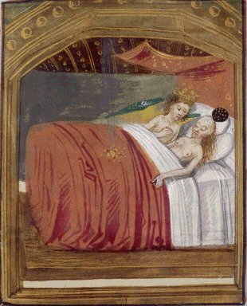
Jupiter et Danaé, Français 137 , Fol. 58 Ovidius, Metamorphoseon libri XV, Belgique, Flandre, XVe siècle
En dire plus là-dessus serait refaire un chapitre de la section de l'Aurora consurgens, II à laquelle nous renvoyons le lecteur. Ajoutons que l'âme ne saurait correspondre, comme le considère Jung, à l'inconscient [spiritus assimilé au Mercurius
]. Du moins au temps
de la réincrudation [de la
projection] ; car telle Pallas Athéna, là voici
qui sort tout armée du crâne de Zeus, fêlé
par Héphaistos. Aussi est-ce à raison que Jung cite ce
passage de Sendivogius :« L'air est un élément pur, non altéré, dans son espèce la plus digne, particulièrement léger et invisible, mais intérieurement lourd, visible et solide. En lui est enfermé (inclusus) l'esprit du Très-Haut qui, avant la création, planait au-dessus des eaux, selon le témoignage des saintes Ecritures : "Il plana sur les ailes du vent". Toutes choses sont intégrées (integrae) dans cet élément par l'imagination du feu. » [Sendivogius, Traité du Soufre in Musaeum Hermticum, p. 612 - chap. III de l'Élément de l'Eau - cité in Psychologie et Alchimie, § 397]
Le feu des alchimistes est spécial : il dissout sans brûler et c'est une eau. Il faut comprendre par là qu'il conserve en son sein les matières qui ont été livrées à sa puissance, matières promises à la dissolution ou, du moins, à une forme spéciale de sublimation liquide, dans un milieu que les Adeptes appellent l'Air des Sages [cf. l'Introïtus, VI du Philalèthe]. La référence au vent montre d'ailleurs, certainement, ce que l'Anonyme de la Tabula smaragdina doit à la Vulgate [Ps. 17 : 11]. Quoi qu'il en soit, la chose importante est que la matière disposée dans l'air, « navigue » en fait dans le feu, raison pour laquelle, en toute logique, cet
est « intérieurement
lourd, visible et solide. » Aussi bien faut-il
être prudent, dans le commentaire que Jung donne de Sendivogius,
de ne pas le prendre au pied de la lettre quand il assure :« Il apparaît clairement que, par cette activité de l'âme en dehors du corps (extra corpus), on entend l'opus alchimique, dans la remarque selon laquelle l'âme a le plus grand pouvoir sur le corps, et que, s'il n'en allait pas ainsi, l'art royal, ou philosophie, serait vain. » [idem, à partir de citations du Traité du Feu, chap. V de l'Elément du Feu]
Sendivogius tient le discours selon quoi le
est destiné à acquérir un pouvoir
plus grand que le spiritus et non point sur le corps.
Ce qui est encore une fois logique puisque le mercure est
destiné à se dissiper, seul moyen de faire en sorte que
le Soufre coagule, c'est-à-dire que les corps puissent
être conjoints. Que le , ensuite, prenne le pas sur
le corps est vrai dans la mesure
où c'est ce rayon igné qui orientera le lapis dans le
sens indiqué dans la section Soufre.
Ce que nous venons de décrire pour l'alchimie opératoire
se conçoit aisément pour l'oratoire : le démiurge
du RS contemple son oeuvre par l'imagination active [par projection]. Il est
lui-même cet Adam kadmon [voir
figure] en tant que
précurseur de l'anqrwpoV
jwteinoV [homme de
lumière] que l'on trouve chez Zosime [il semble que l'on puisse trouver
l'origine du mot adech chez Dorneus in Theophrasti
Paracelsi libri V De vita longa (p. 178) - citation de Jung in Synchronicité et Paracelsica,
p. 243, note 65 : « l'Adech est
l'invisibilis homo sans doute identique à l'Aniadus et à
l'Edochinum = Enochdianus. »]. Que recouvre Adam
kadmon ? Le rêveur certainement :« Dans le traité De vita longa, Paracelse nomme les quatre Scaiolae, mais le soi, Adech (d'Adam = le premier homme). Comme le souligne Paracelse, tous deux (l'anima et la totalité) causent des difficultés dans l'oeuvre, de sorte qu'on peut presque parler d'une hostilité de la part d'Adech. » [Jung, Psychologie et Alchimie, symboles oniriques, la symbolique du mandala, § 150, p. 150]
Roland Cahen, en note, se réfère à un ouvrage [Jung, Gesammelte Werke, vol. 13, Studien über alchemistisches Vorstellung, Zurich, paru en 1978 - notons que Paracelsica est paru à Zurich en 1942; le passage se situe pp. 163-167, cf. Vol XIII Alchemical Studies] ; le passage dont il est question est inséré dans Synchronicité et Paracelsica [op. cit. Paracelse, une grande figure spirituelle, pp. 199-222]. Là encore, à notre grand regret, nous ne pouvons développer l'étude du De Vita longa de Paracelse. Il suffira de noter ce point capital que le Moi doit vaincre le Soi pour se projeter dans l'Autre ; aussi est-ce en toute logique que Jung introduit son analyse de l'Aniadus [Adech] par le titre de « Mystère naturel de la transformation ». Le chapitre « L'Unification des deux natures de l'homme » se rapproche beaucoup des vues que nous défendons ici, notamment pp. 215-216. Ce thème de l'adech se retrouve dans l'iconographie : la dernière planche du Mutus Liber montre un homme couché dans lequel on a vu Hercule ayant terminé ses Douze Travaux. Cette interprétation nous avait naguère laissé perplexe et nous pouvons donc, à la lumière du De Vita longa, la redresser en y voyant à présent une variation sur le thème de l'Adam kadmon. Quoi qu'il en soit, la thématique de cet Adam primordial est clairement la mort du Soi, nécessaire pour que
et
sous leur apparence transfigurée de et [forme principiée ou si l'on
préfère passée au creuset] soient
conjoints. La mort du Soi
est, en terme de psychologie, assimilable à la mort du père,
c'est-à-dire à [qui conditionne ce qui est de l'ordre
du transfert, cf. Aurora
consurgens, II]. Dès lors, il est possible
d'examiner la figure de l'arbor vitae d'un
oeil nouveau, à la lumière de cet extrait du Brihadaranyaka Upanishad :« Il était aussi grand qu'un homme et une femme enlacés. Il divisa son (atman) en deux, et mari et femme prirent naissance. Il s'unit à elle et les hommes naquirent... » [Psychologie et Alchimie, § 209, pp. 211-212]
Nous allons étudier de plus près cet adech, ce qui nous permettra d'accéder au panneau inférieur du RS.
4)- l'adech
L'avant dernier panneau du RS comporte d'abord une voûte nuageuse d'où émerge le
. Sa lumière semble
dispensée en forme de larmes de sang rouge
et blanc. Plus bas,
la terre en forme de mer sur laquelle est juché un
oiseau, aigle à tête d'homme, chimère
couronnée où l'on peut voir l'esquisse d'un
phénix [il s'agit d'un
aigle ainsi qu'il est inscrit sur les huit petits phylactères
entourant la sphère]. De larges phylactères
encadrent d'abord le
et contiennent le texte suivant :| Prenez
le père, ce Phoebus si fier, Qui siège si haut en majesté, Avec ses rayons et son éclat si brillants, En toutes places qu’il puisse être, Car il est le père de toute chose, Maintenant la vie des plantes et des racines, Et qui force la nature au printemps, Avec la femme début de l’apaisement, Car il est esclave de toute douleur, Pour déterminer ce travail prospère, Prenez garde à ce savoir, Je le dis au savants et aux clercs, Et Homogénie est son nom, Que Dieu fit de ses propre mains, Et Magnésie est sa dame, Comprenez bien. Maintenant je dis ici pour commencer, Pour vous enseigner une voie facile, Car autrement vous gagnerez peu, Prenez bien note de ce que je dis, |
Divisez
donc Phoebus en plusieurs parts, Avec ses rayons qui sont si brillants, Et par lesquels la nature est convertie, Laquelle est le miroir de toute chose, Ce Phoebus qui a plein de noms différents, Bien qu’il est difficile de tous connaître, prenez exactement le même, Philosophes de la pierre, vous devez le connaître, Par conséquent je vous conseille avant de commencer, Sachez vraiment ce qu’il doit être, Et ce qui est épais faites le subtil, Car il sera dès lors bien préparé, Comprenez bien ce que je dis, Et prenez bien note de ceci, Ou de votre travail vous ne recueillerez rien Et vous aurez grand chagrin, Comme j’ai déjà dis notre science, Plus d’un nom j’aimerai qu’elle ait, Certain derrière certain devant, Comme les philosophes aime lui donner, |
Ce panneau est une parabole sur l'Aurora consurgens, comprise comme la renaissance du phénix. Deux ensembles se dégagent en forme de couple {
, } désignant l'anima consurgens et l'animus. Le texte qui
encadre le soleil est abscons. Néanmoins, on peut relever
plusieurs choses : d'abord Homogenie est certainement une corruption
pour Hermogenia [poulet
d'Hermogène, voir Douze Clefs de philosophie]
: la Clef
X de Basile Valentin donne : « NATVS SUM EX HERMOGENE
». Magnesia désigne le Mercure acué de son sel. Il
faut se servir de Phoebus [Apollon]
en sorte de le conjoindre avec Pallas Athéna qui constitue le sulphur comburens. C'est
donc, en pratique, une variation sur le thème de l'Apollon
pythien [victoire sur le serpent
Python = surrection de Délos] que nous avons sous les
yeux [cf. supra].
La manière d'acuer le Mercure de son Sel est exposée dans
la Nature à
découvert, du Chevalier Inconnu [traité dont il existe un
exemplaire à la Bibliothèque de l'Arsenal (1669). Il a
été réédité au XVIIIe
siècle par Pierre-Jean Fabre]« Au reste, le ferment, qui est l’âme, prépare le corps dur et se convertit en sa nature liquide ; et le ferment n’est autre chose que le Soleil ou la Lune philosophique ; et l’or philosophique qui est un corps, n’est jamais préparé sinon avec le feu, qui est notre eau mercurielle..., car le levain de l’or est l’or, et le ferment ou levain du fer est le fer ; car tout agent agit selon sa forme, et l’altération se ressent toujours de la nature de l’agent, et ainsi celui qui ne peut réduire deux corps en leur matière première, ne peut avoir aucun ferment puisque pour avoir un ferment il faut avoir une âme, et, pour avoir une âme, il faut avoir deux matières premières pures et unies ensemble. »
Sous ce discours sibyllin se cache la manière d'accomoder le
à sa après que la
dissolution [nigredo] ait
été consommée, par sublimation et par projection.
Observons d'abord que la qui porte l'avis hermetis [oiseau
d'Hermès] est
aussi une . Voilà qui rappelle singulièrement ce
qu'écrit Jung au chapitre Sal du Mysterium conjunctionis [I, 5. A et B, § 228, trad. Albin
Michel 1980]. Le Sel - que Jung notons-le prend pour le natron
- est une substance qui participe évidemment de l'eau [en tant qu'il s'agit d'une partie du
corps mercuriel, que l'on peut extraire des Salicornia] mais
qui participe non moins de la terre si l'on réfléchit au
fait qu'il est le symbole de la salamandre, c'est-à-dire du
soufre non comburant, autrement dit du corps lapidaire. Au passage,
notons que Jung se trompe en affirmant que le Sel [intégré comme
élément de la triade classique] a
été « découvert » par Paracelse :
Djabbir le connaît et le nomme Arsenic ; dès les origines
de l'Art sacré, il semble que toute cette doctrine était
déjà en place [voir
Mercure philosophique]. La
confusion, on le voit, est vite établie entre le sel spirituel [sal
spirituale de Basile Valentin] qui ne désigne pas
autre chose que le et le suc de la Lunaire [la Lune en son dernier quartier ] qui est cette salamandre issue du
sang de Méduse [voir Gardes du corps]. Dans le cas
présent, il s'agit de l'humide
radical des matières premières dont l'Artiste doit
disposer. Cet humide radical métallique est ce ferment
évoqué par le Chevalier inconnu, le même dont parle
Chevreul dans son étude sur Artephius.
Il peut être vu dans notre panneau du RS sous forme de ces rayons
lumineux réduits à des larmes rouge et blanche : ce sont
les corps réduits en leurs matières premières,
sous l'effet de l'Aimant [du
Mercure]. Revenons à l'aigle. Il est inséparable
des sublimations philosophiques qui incarnent, pour ainsi dire, les
assauts mercuriels portés sur la substance grave [le lion]. Nous avons dans le RS
un exemple rare d'aigle à tête humaine masculine : il
s'apparente à la harpie qui, d'habitude, possède un corps
d'aigle et une tête de femme ; le symbolisme de la harpie est
connu : elle ravit l'âme des morts et les emporte dans le
Tartare. Au plan de la cabale, elle se rapporte à la
période de dissolution ou nigredo. On comprend qu'elle n'aurait
pas sa place dans ce panneau de l'oeuvre où s'exprime le
thème de l'anima consurgens . Il ne peut donc s'agir d'une harpie ; on
connaît en revanche une représentation d'aigle à
tête d'homme couronnée sur des chapiteaux romans : il
s'agit de Nabuchodonosor [Nebucadnetsar]. Voyons cela.songe de
Nabuchodonosor, Manuscrits
Français 157, Guiard des Moulins, Bible historiale, France,
Paris, XIVe siècle
La Bible rapporte le récit de l'étrange songe de Nabuchodonosor changé en bête ; en effet le roi vit en songe un arbre magnifique dont la hauteur atteignait le ciel. Mais, sur un ordre d'en-haut, cet arbre est abattu, débité et réduit à sa souche abandonnée aux animaux. Daniel interprète ce rêve en indiquant à Nabuchodonosor que c'est de lui qu'il s'agit. Cette fable n'est pas sans rappeler l'image de l'arbre de Jessé, cf. supra. Dans un autre songe, une statue aux pieds d’argile dénonce la fragilité de son règne [voir image].
... Daniel se mit
alors en prière avec ses compagnons, et le Seigneur
exauça leurs humbles supplications. Pendant la nuit, le Seigneur
fit connaître le songe à Daniel, et lui on donna
l'explication. Des le matin. Daniel, plein de reconnaissance envers
Dieu, se rendit auprès du roi : « Ce que vous demandez,
lui dit-il. surpasse tout savoir humain ; mais il est au ciel un Dieu
à qui rien n'échappe, et qui peut dévoiler less
événements de l'avenir. Ces événements, il
vous les a fait voir, et à moi, il me les a
révélés. Voici votre songe: II vous semblait voir
une statue aux proportions colossales et d'un formidable aspect. Sa
tête était d'un or très pur, sa poitrine et ses
bras d'argent, son ventre et ses cuisses de bronze, ses jambes de fer,
ses pieds en partie de fer et en partie d'argile. Pendant que vous la
regardiez, une petite pierre, se détachant de la montagne,
frappa la statue et la réduisit en poussière. La petite
pierre au contraire, grossissant de plus en plus, devint une montagne
qui couvrit toute la terre. Tel fut votre songe. Ecoutez-en maintenant
l'explication : La tête d'or, ô roi. c'est vous, vous que
Dieu a fait maître d'un empire si vaste et si riche. Après
vous, surgira un royaume moindre que le vôtre et
représenté par l'argent: viendra ensuite un
troisième royaume représenté par le bronze : puis
un quatrième représenté par le fer et qui
s'élèvera sur les ruines des précédents. La
petite pierre figure un royaume que le Dieu du ciel suscitera, royaume
qui dominera sur tout autre et qui durera éternellement.
Selon la Bible, les prophéties de Daniel datent du VIe siècle avant J.-C. Il a été établi que le livre de Daniel a été écrit au IIe siècle avant J.-C. Pour les commentateurs modernes, les prophéties ont été inventées au IIe siècle avant J.-C. Quoi qu'il en soit, ce qui nous intéresse ici, c'est que Nabuchodonosor peut être identifié à l'adech ou encore à l'Archeus, en tant qu'homme primordial. L'intervention de Daniel revêt le rôle d'une médiation entre la
[Adam kadmon]
et
ou si l'on préfère de la transition entre l'homme
primitif, terrestre, et l'homme spirituel. Tel est le sens de la
leçon de Daniel. La statue de Nabuchodonosor parcourt
littéralement le ciel intérieur de la psyché et
l'on y retrouve les planètes [à l'exception notable de et ]. L'arbre mutilé
représente le métal ouvert : ces deux songes ne
constituent qu'une variation sur un thème dont parle Berthelot
dans les Origines de l'alchimie.
Un autre épisode de la vie de Nabuchodonosor avait
déjà retenu l'attention de Jung [il en parle dans Psychologie et Alchimie, § 449
et dans les Métamorphoses de
l'Âme] : il s'agit des trois hommes que le roi
avait fait jeter dans la fournaise d'un feu ardent ; légende qui
n'est pas sans rappeler d'ailleurs l'allégorie du massacre des
Innocents qu'évoque Flamel sur son arche érigée au
cimetière des Innocents [cf.
Fig.
Hiér.]. Il fit élever
en son propre honneur une statue d'or d'une grandeur extraordinaire et
ordonna qu'au moment où les instruments en donneraient le
signal, tous l'adorassent sous peine d'être jetés dans la
fournaise ardente. Ananias, Mizaël et Azarias n'ignoraient pas
qu'ils ne pouvaient rendre à une statue des honneurs dus
à Dieu seul ; aussi préférèrent-ils la mort
au péché. Nabuchodonosor les fit aussitôt
paraître en sa présence :
« Comment, leur dit-il d'un ton courroucé, vous n'adorez pas ma statue ! Prosternez-vous, adorez-la au premier son des instruments, sinon, vous serez immédiatement jetés dans la fournaise. Et quel Dieu pourra vous arracher de mes mains ? »
« Le Dieu que nous adorons, répondirent les intrépides jeunes gens, peut nous arracher aux flammes de la fournaise ardente et nous délivrer de vos mains, ô roi ! mais quand même il ne le ferait pas, qu'on le sache bien, nous n'adorerons pas la statue. »
À ces mots, la colère du roi ne connaît plus de bornes : il ordonne que l'on chauffe la fournaise sept fois plus que d'ordinaire et que l'on y jette les trois jeunes gens. Mais, ô prodige ! au moment même où ils tombent dans la fournaise, un ange descend du ciel pour les protéger, et tandis qu'ils marchent joyeux au milieu des flammes, louant et bénissant le Seigneur, des tourbillons brûlants s'élancent de la fournaise et consument les bourreaux. Curieux de savoir ce qu'ils sont devenus, Nabuchodonosor s'approche de la fournaise et les aperçoit tous trois, sains et saufs en compagnie de leur ange protecteur ; à ce spectacle, il reconnaît la main du Tout- Puissant, ordonne aux jeunes gens de sortir, les rétablit dans toutes leurs dignités et décrète que quiconque blasphémera le Dieu d'Ananias, de Mizaël et d'Azarias. sera puni de mort, car leur Dieu est le vrai Dieu.
Jean Bosco, Histoire sainte..., Nice, Patronage saint Pierre, 1892
Cette
parabole est souvent mise en parallèle avec l'histoire de Daniel
et de la fosse au lions. Voici l'occasion d'analyser brièvement
cette scène du brasier où deux
lions sont disposés
de part et d'autre d'un four [voir
supra].« Comment, leur dit-il d'un ton courroucé, vous n'adorez pas ma statue ! Prosternez-vous, adorez-la au premier son des instruments, sinon, vous serez immédiatement jetés dans la fournaise. Et quel Dieu pourra vous arracher de mes mains ? »
« Le Dieu que nous adorons, répondirent les intrépides jeunes gens, peut nous arracher aux flammes de la fournaise ardente et nous délivrer de vos mains, ô roi ! mais quand même il ne le ferait pas, qu'on le sache bien, nous n'adorerons pas la statue. »
À ces mots, la colère du roi ne connaît plus de bornes : il ordonne que l'on chauffe la fournaise sept fois plus que d'ordinaire et que l'on y jette les trois jeunes gens. Mais, ô prodige ! au moment même où ils tombent dans la fournaise, un ange descend du ciel pour les protéger, et tandis qu'ils marchent joyeux au milieu des flammes, louant et bénissant le Seigneur, des tourbillons brûlants s'élancent de la fournaise et consument les bourreaux. Curieux de savoir ce qu'ils sont devenus, Nabuchodonosor s'approche de la fournaise et les aperçoit tous trois, sains et saufs en compagnie de leur ange protecteur ; à ce spectacle, il reconnaît la main du Tout- Puissant, ordonne aux jeunes gens de sortir, les rétablit dans toutes leurs dignités et décrète que quiconque blasphémera le Dieu d'Ananias, de Mizaël et d'Azarias. sera puni de mort, car leur Dieu est le vrai Dieu.
Jean Bosco, Histoire sainte..., Nice, Patronage saint Pierre, 1892
17 On apporta une
pierre, et on la mit sur l’ouverture de la fosse; le roi la
scella de
son anneau et de l’anneau de ses grands, afin que rien ne
fût
changé à l’égard de Daniel.
18. Le roi se rendit ensuite dans son palais ; il passa la nuit à jeun, il ne fit point venir de concubine auprès de lui, et il ne put se livrer au sommeil.
19. Le roi se leva au point du jour, avec l'aurore, et il alla précipitamment à la fosse aux lions.
20. En s'approchant de la fosse, il appela Daniel d'une voix triste. Le roi prit la parole et dit à Daniel : Daniel, serviteur du Dieu vivant, ton Dieu, que tu sers avec persévérance, a-t-il pu te délivrer des lions ?
21. Et Daniel dit au roi : Roi, vis éternellement !
22. Mon Dieu a envoyé son ange et fermé la gueule des lions, qui ne m'ont fait aucun mal, parce que j'ai été trouvé innocent devant lui ; et devant toi non plus, ô roi, je n'ai rien fait de mauvais.
23. Alors le roi fut très joyeux, et il ordonna qu'on fît sortir Daniel de la fosse. Daniel fut retiré de la fosse, et on ne trouva sur lui aucune blessure, parce qu'il avait eu confiance en son Dieu.
Les Prophéties de Daniel, chapitre VI
18. Le roi se rendit ensuite dans son palais ; il passa la nuit à jeun, il ne fit point venir de concubine auprès de lui, et il ne put se livrer au sommeil.
19. Le roi se leva au point du jour, avec l'aurore, et il alla précipitamment à la fosse aux lions.
20. En s'approchant de la fosse, il appela Daniel d'une voix triste. Le roi prit la parole et dit à Daniel : Daniel, serviteur du Dieu vivant, ton Dieu, que tu sers avec persévérance, a-t-il pu te délivrer des lions ?
21. Et Daniel dit au roi : Roi, vis éternellement !
22. Mon Dieu a envoyé son ange et fermé la gueule des lions, qui ne m'ont fait aucun mal, parce que j'ai été trouvé innocent devant lui ; et devant toi non plus, ô roi, je n'ai rien fait de mauvais.
23. Alors le roi fut très joyeux, et il ordonna qu'on fît sortir Daniel de la fosse. Daniel fut retiré de la fosse, et on ne trouva sur lui aucune blessure, parce qu'il avait eu confiance en son Dieu.
Les Prophéties de Daniel, chapitre VI
Le sens de l'allégorie est claire : les lions symbolisent le feu secret qui dissout sans détruire, qui brûle sans consumer, qui transforme sans dissiper. L'esprit de Dieu - spiritus sanctus, ou
alchimique - permet ce miracle dans l'unus mundus [il s'agit du vase de nature,
scellé de l'anneau royal ou sceau vitreux d'Hermès].
Daniel joue ici le rôle de l'intercesseur entre le ciel et la
terre dans sa position de devin, ce qui représente un
trait mercuriel. Il y a plus : on peut
montrer qu'il y a un rapport entre Daniel et le feu
représenté par l'esprit caché dans la
matière, comme l'extrait suivant de Jung donne à
l'entendre. Or, nous ne trouvons que deux symboles qui puissent
satisfaire à cette analogie : la nigredo au début de
l'oeuvre [putréfaction]
et la phase d'assation précédant la réincrudation [anima consurgens ]. Ce feu caché explique-t-il le texte
inscrit dans le petit phylactère [gardez-vous de la bouche du
cholérique...]appendu à la bouche d'ombre que les lions entourent ? [Que représente ce feu caché ? Est-il divin ou inspiré de l'oeuvre du démon ? On sait que dans l'Ancien Testament, l'archange saint Michel adopte la forme des langues de feu du buisson ardent ; et c'est encore un ange qui sauve Daniel dans la fosse aux lions [Dn 14, 34-40]. Ces langues de feu sont l'équivalent du spiritus sanctus et du Mercurius des alchimistes (feu non comburant) car elles ne laissent point de cendres]. Dans un certain sens, cette parabole peut être comprise comme un transfert du Moi vers l'Autre ; Ananias, Mizaël et Azarias [Schadrac, Méchas et Abed-Nego] jouent le rôle de
permettant l'évolution de
l'adech comme second Adam ou homme éveillé : c'est le
passage de l'amorphe au cristal. Notons d'autres points qui se
rapprochent du symbolisme chrétien, tels que l'exprime
l'iconographie, notamment les tourbillons consumant les bourreaux : ne
peut-on voir là cette scène où Grünewald,
dans son retable d'Issenheim, pose
le Christ en gloire ?« Cette vision (Daniel 3 : 25) n'est pas sans rapport avec l'alchimie, puisque celle-ci revient sans cesse, dans de nombreux passage, sur le fait que le lapis est trinus et unus (triple et un)... Il se compose des quatre éléments, parmi lesquels le feu représente l'esprit caché dans la matière. » [op. cit., § 449]
Nous retrouvons le problème du quadratum
en liaison avec la privatio boni, cf.
§ 3. Jung voit dans le « quatrième » le fils de
Dieu ou filius philosophorum
et évoque également Agni,
flamme du sacrifice, tout autant sacrificateur que victime [Métamorphoses
de l'Âme, trad. Georg, pp. 288-289, Pochothèque, ].
Ce double aspect rappelle encore le qui joue ce rôle dual de purificateur [dissolution, SOLVE par
l'épée] et de
libérateur [coagulation,
COAGULA par la †]
; il faut noter que dans le texte de la Bible [Ancien Testament, livres
prophétiques; dans sa version grecque de la Septante (LXX) ce
livre est enrichi d'additions importantes : la prière d'Azarias,
le cantique des trois jeunes hommes dans la fournaise, le récit
de Suzanne; celui de Bel et le Dragon], il n'est question que
de
trois personnages et non de quatre... Quant au feu [rayon igné], ce n'est
pas tant l'esprit caché que l'âme qui y est assujettie.
N'oublions pas que dans le domaine de l'alchimie, l'esprit n'est jamais
qu'un moyen. Pas un but. Le but ultime est la réincrudation de
l'âme par transformation d'un certain facteur comburant [cf. figure 8
du Ros. Phil.]
résultant de l'ouverture du métal et dont le devenir est
exprimé par l'hiéroglyphe .
Il ne sera cependant pas impossible de retrouver le quadratum si l'on veut bien revenir sur les
représentations thériomorphes de Nabuchodonosor [Les Mésopotamiens représentent fréquemment une chimère à tête d’homme, corps de lion, pattes de taureau et ailes d’aigle. La plus célèbre représentation de cet être composite est connue sous le nom de Taureau ailé de Khorsabad dont la tête est celle de Nabuchodonosor et où, bien sûr, il est possible de voir les Évangélistes, cf. tarot alchimique et hôtel Lallemant, Bourges : c'est donc l'une des premières variations sur ce fantatisque mythologème qu'est le Tétramorphe. Voir aussi infra les Yeux dans les Roues, songe d'Ézéchiel]
Du reste, cette transformation du grand roi de Babylone en aigle est rapportée dans Daniel 3 : 31-33 et renvoie au songe de l'arbre :
Nabuchodonosor oublia
encore le vrai Dieu, qui, dans un nouveau songe, lui fit entendre de
terribles menaces. Il lui sembla voir un grand arbre dont la cime
touchait le ciel et dont les branches couvraient la terre. Cet arbre
gigantesque était chargé de fruits, et il nourrissait
d'innombrables oiseaux qu'abritait son épais et magnifique
feuillage. Mais voilà que soudain un ange descend du ciel et
crie d'une voix formidable :
« Abattez cet arbre, coupez-en les branches, secouez-en les feuilles, dépouillez-de ses fruits; que tous les oiseaux, que tous animaux qu'il abrite prennent la fuite. Épargnez-en toutefois la tige, que vous lierez et laisserez exposée à la rosée du ciel avec les bêtes des champs ; qu'un cœur de bête remplace le sien jusqu'à ce que l'année se soit sept fois renouvelée. »
En vain le roi demanda l'interprétation de ce songe aux sages de Babylone, Daniel seul, inspiré le Dieu, put la lui donner :
« ô roi, lui dit-il, ce songe est l'annonce de grands malheurs. Vous êtes cet arbre, ô roi ! vous, dont la grandeur s'élève jusqu'au ciel et dont la puissance s'étend par toute la terre; vous serez coupé, c'est-à-dire chassé du trône et du commerce des hommes, pendant sept ans vous habiterez avec les bêtes des champs, vous vous nourrirez d'herbe et de foin comme elles. Mais la tige restera intacte, c'est-à-dire qu'après sept ans, quand vous aurez reconnu l'existence d'un Dieu souverain Seigneur de l'Univers et qui donne les royaumes comme il lui plaît, vous reviendrez vous même et vous remonterez sur le trône. Suivez donc mon conseil, ô roi : que vos bonnes œuvres préviennent le coup qui vous menace; rachetez vos péchés par l'aumône : peut-être le Seigneur aura-t-il pitié de vous. »
Le songe s'accomplit. — Le roi ne tint aucun de ces avertissements et ne fit rien pour apaiser le Seigneur. Un jour qu'il se promenait dans son palais de Babylone et se disait avec satisfaction:
« N'est-ce pas là cette Babylone que j'ai bâtie, le siège de mon empire, le signe de ma puissance, l'auréole de ma gloire. »
une voix lui répondit soudain du haut du ciel :
« Écoutez, ô roi: votre empire va vous être enlevé, les forêts seront votre demeure, les bêtes féroces votre société, l'herbe et le foin votre nourriture ; vous resterez ainsi jusu'à ce que vous reconnaissiez, que les homme, comme les royaumes, sont au pouvoir de Dieu. »
La menace s'accomplit à l'instant même ; chassé de son palais et de la société des hommes, Nabuchodonosor se réfugia dans les forêts où il habita sept ans parmi les bêtes sauvages, vivant comme elles d'herbe et de foin. Au bout de ce temps il rentra en lui-même, leva les yeux au ciel en demandant pardon et miséricorde, et confessa que Dieu seul est le roi de la terre et du ciel. Touché de son humble repentir, le Seigneur le remit sur le trône où il régna avec plus de gloire et plus de magnificence que jamais (A. d. m. 3442). Dieu seul est tout puissant; lui seul peut à son gré exalter les humbles et humilier les superbes.
Le
parallèle est clair, qu'on établit avec les principales
phases de l'oeuvre : le Roi de Babylone représente la prima
materia qu'il faut transformer en materia prima, c'est-à-dire
à partir de quoi il faut préparer la terra alba foliata. Cet
arbor vitae est
celui que nous observons dans le Splendor solis. C'est
aussi celui de la Philosophia Reformata de
Mylius (image 49). Le symbole de l'arbre
semble la seule ressource de l'Artiste pour exprimer le sentiment qu'il
a, de cette « Abattez cet arbre, coupez-en les branches, secouez-en les feuilles, dépouillez-de ses fruits; que tous les oiseaux, que tous animaux qu'il abrite prennent la fuite. Épargnez-en toutefois la tige, que vous lierez et laisserez exposée à la rosée du ciel avec les bêtes des champs ; qu'un cœur de bête remplace le sien jusqu'à ce que l'année se soit sept fois renouvelée. »
En vain le roi demanda l'interprétation de ce songe aux sages de Babylone, Daniel seul, inspiré le Dieu, put la lui donner :
« ô roi, lui dit-il, ce songe est l'annonce de grands malheurs. Vous êtes cet arbre, ô roi ! vous, dont la grandeur s'élève jusqu'au ciel et dont la puissance s'étend par toute la terre; vous serez coupé, c'est-à-dire chassé du trône et du commerce des hommes, pendant sept ans vous habiterez avec les bêtes des champs, vous vous nourrirez d'herbe et de foin comme elles. Mais la tige restera intacte, c'est-à-dire qu'après sept ans, quand vous aurez reconnu l'existence d'un Dieu souverain Seigneur de l'Univers et qui donne les royaumes comme il lui plaît, vous reviendrez vous même et vous remonterez sur le trône. Suivez donc mon conseil, ô roi : que vos bonnes œuvres préviennent le coup qui vous menace; rachetez vos péchés par l'aumône : peut-être le Seigneur aura-t-il pitié de vous. »
Le songe s'accomplit. — Le roi ne tint aucun de ces avertissements et ne fit rien pour apaiser le Seigneur. Un jour qu'il se promenait dans son palais de Babylone et se disait avec satisfaction:
« N'est-ce pas là cette Babylone que j'ai bâtie, le siège de mon empire, le signe de ma puissance, l'auréole de ma gloire. »
une voix lui répondit soudain du haut du ciel :
« Écoutez, ô roi: votre empire va vous être enlevé, les forêts seront votre demeure, les bêtes féroces votre société, l'herbe et le foin votre nourriture ; vous resterez ainsi jusu'à ce que vous reconnaissiez, que les homme, comme les royaumes, sont au pouvoir de Dieu. »
La menace s'accomplit à l'instant même ; chassé de son palais et de la société des hommes, Nabuchodonosor se réfugia dans les forêts où il habita sept ans parmi les bêtes sauvages, vivant comme elles d'herbe et de foin. Au bout de ce temps il rentra en lui-même, leva les yeux au ciel en demandant pardon et miséricorde, et confessa que Dieu seul est le roi de la terre et du ciel. Touché de son humble repentir, le Seigneur le remit sur le trône où il régna avec plus de gloire et plus de magnificence que jamais (A. d. m. 3442). Dieu seul est tout puissant; lui seul peut à son gré exalter les humbles et humilier les superbes.
qui lui manque quand il manipule son dont, au vrai, il n'est jamais que le serviteur.
L'arbre est donc in media
terrae et projette son ombre sur la . Il s'agit d'un ensemble organisé, loin de la
massa confusa
formée par la prima materia [Nabuchodonosor] du Chaos
originel [assimilé
à l'Adam kadmon]. 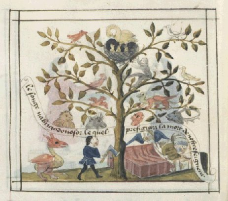
songe de Nabuchodonosor, arbre f. 28v, Speculum humanae salvationis (traduction anonyme), France, XVe siècle
Et aussitôt,
la parole s'accomplit en Nabuchodonosor
: il fut chassé d'entre les hommes; comme les boeufs, il mangea
de
l'herbe, son corps fut baigné de la rosée du ciel, et
ses cheveux
poussèrent comme des plumes
d'aigle et ses ongles comme
des griffes d'oiseau.
Dn 4 : 30, Bible de Jérusalem
Dn 4 : 30, Bible de Jérusalem
Il serait difficile de pouvoir imaginer une allégorie se rapprochant autant de la symbolique des textes alchimiques. Cette scène où le Roi mange de l'herbe, c'est celle où la materia prima est abreuvée de l'herbe de vie dont les Adeptes ont fait leur aureum vellus [voir Splendor solis] ; Michel Maier en parle dans l'Atalanta XXV en faisant référence à l'herbe Balis : c'est une allusion au Mercure. De même pour la rosée du ciel [voir blasons alchimiques]. Le sens de l'allégorie thériomorphe est celui de la sublimation [herbe de vertu saturnienne = Lion vert, cf. Dialogue de Marie à Aros] de la matière qui conduit à sa dépuration.
« ...Vois-tu bien : au règne végétable, la première matière est l'herbe ou l'arbre que tu ne saurais créer; la Nature seule fait cet ouvrage. Dans ce règne, la seconde matière est la semence que tu vois, et c'est en icelle que se multiplie l'herbe ou l'arbre. Au règne animal, la première matière, c'est la bête ou l'homme que tu ne saurais créer; mais la seconde matière que tu connais est son sperme, auquel il se multiplie. Au règne minéral, tu ne peux créer un métal ; et si tu t'en vantes, tu es vain et menteur, parce que la Nature a fait cela. Et bien que tu eusses la première matière, selon les Philosophes, c'est-à-dire, ce Sel centrique , toutefois tu ne le saurais multiplier sans l'Or : mais la semence végétable des métaux est connue seulement des fils de la Science. » [Cosmopolite, Nouvelle Lumière Chymique]
Cette sublimation implique une modification dans la forme et dans la composition de la matière : elle est tout d'abord désignée comme un poison, un dragon très vénéneux et sa contre-partie dans la psyché est l'Adam kadmon ou pulsion primitive, celle dont le désir qui anime tout être humain est tributaire : c'est, en vérité, la bête humaine. La transformation alchimique consiste, nous l'avons dit, à incorporer une âme pure dans ce corps, ce qui peut se faire par un tiers-agent qui joue le rôle de matrice ; les alchimistes le nomment vase de nature, sa couleur est verte et il a le pouvoir de réaliser des germinations et des multiplications au sens d'augmentation : c'est cela qui représente la semence végétable des métaux et que les Adeptes nomment l'humide radical des métaux ; c'est leur arch. Le songe de l'arbre de Nabuchodonosor a, on le devine, fort à voir avec le thème du meurtre du roi dont il n'est pas besoin d'énumérer toutes les gravures qu'il a inspirées à l'iconographie. Une, pourtant, peut permettre de poursuivre l'histoire folle du Roi de Babylone : celle où l'on voit un loup dévorer le corps mort du roi, dans l'emblème XXIV de l'Atalanta fugiens, par le biais de la lycanthropie [de Lycaon souverain d'Arcadie, qui servit à Zeus les membres d'enfants qu'il venait d'égorger et qu'il avait fait cuisiner. En guise de punition Zeus le transforma en loup, condamné à parcourir la campagne tout en gardant ses facultés mentale d'homme.] ou plutôt de la bousanthropie, qui lui est congénère. Au plan psychologique, on peut expliquer cette étrange maladie comme la faculté qu'auraient certains sorciers de réaliser une véritable projection de leur Moi dans le Ça [monde extérieur; la thériomoprhose serait la conséquence de l'absence de l'Autre, c'est-à-dire de
]. Jung a stigmatisé ce processus :« ... c'est un combat pour libérer la conscience du moi de l'enlacement mortel de l'inconscient... Avec sa conscience, l'homme est toujours en arrière des buts inconscients; il se plonge dans une paresseuse activité, jusqu'à ce que sa libido l'appelle à de nouveux dangers... » [Métamorphoses de l'Âme, VII. le Sacrifice, op. cit., p. 581-582, Pochothèque]
La citation est à peine déplacée de son contexte ; le roi de Babylone ne se verra accorder de rédemption [symbole de la croisée] qu'à l'instant où il s'inclinera devant le grand Dieu unique [EN TO PAN]. En termes alchimiques, cela signifie que la réincrudation [corporification du sublimé] n'interviendra qu'après dissipation de l'esprit mercuriel. Remarquons la proximité de l'alchimie et de la religion, sous l'angle du lieu « d'habitation de Dieu avec l'homme » : Dieu - ou le spiritus sanctus qui est son émanation terrestre - n'est connu ou plutôt reconnu qu'en tant que Bien et Mal trouvent leur objet. C'est la raison pour laquelle il est fatal que l'Adam kadmon meurt [que le Mercurius senex se dissipe ou se transforme en l'aqua permanens] et donne naissance à la corruption [
puis à un stade plus évolué]
avant le passage à la dépuration [anima consurgens ]; le stade intermédiaire où
s'exprime la formule alchimique SOLVE
ET COAGULA passe
par la Mélusine paracelsienne. Ainsi ces paroles de saint Jean
sont-elles appropriées à notre sujet :« Je suis la vigne, dit-il, et vous êtes les branches. La branche ne peut pas par elle-même porter de fruits si elle n'est unie au cep. De même, vous ne pouvez rien faire pour votre salut si vous n'êtes unis à moi... Mais celui qui demeure en moi et en qui je demeure produira des fruits abondants. S'il n'y demeure pas, c'est un sarment inutile - il sera rejeté comme une branche stérile; il séchera, et on le ramassera pour le feu, où il brillera sans se consumer. » [xv : 1 et sq.]
Il ne nous semble pas paradoxal d'établir un rapport entre le Christ [c'est à lui qu'on attribue ces paroles] et le serpens mercurialis [cf. Jung, Psychologie et Alchimie, parallèle Lapis - Christus] : dans cette acception, la vigne représente l'unus mundus, c'est-à-dire le
. Van Lennep ajoute :« À noter que dans l'exemplaire 5025 du British [Museum], l'arbre qui pousse au centre de la fontaine de jouvence, est assimilé à celui du Paradis et clairement désigné comme étant également celui de la croix. Le christ y est crucifié au milieu de ses fruits rouges tandis que Satan offre l'un d'eux à Ève, l'épouse du couple alchimique. Celle-ci et Adam qui croque déjà le fruit, n'ont pas les pieds dans l'eau, mais se tiennent sur le sol du paradis de la philosophie (philosophie paradisius). » [Alchimie, op. cit., p. 94]
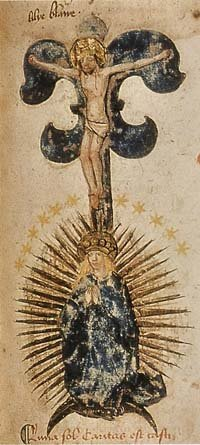
Das Buch der Heyligen Dreyfaltigkeit, XVe siècle
Cette présence du Christ se rapproche de ce que Jung nomme un phénomène de réflexion : c'est ainsi qu'il envisage la démarche alchimique. C'est le lieu de noter que la stibine, par son idéogramme
, a inspiré
quantité de textes alchimiques : on en a fait la terre adamique
ou terre rouge et elle fait l'objet de l'une des allégories les
plus curieuses de l'oeuvre : le renversement des pôles qui
signale le Déluge. Le symbole se complète dans cette
image du Livre de la Sainte
Trinité d'un
croissant lunaire à concavité inférieure où
nous retrouvons l'hiéroglyphe inversé du mercurius 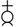
qui est aussi la signature de Diane aux cornes lunaires. Ce symbole se trouve dans la Monade Hiéroglyphique de John Dee [figure XVI] et sur la porte alchimique de la villa Palombara à Rome [cf. réincrudation]. On lit, au-dessous du symbole : FILIUS NOSTER MORTVVS VIVIT REX AB IGNE REDIT ET CONIVGO GAVDET OCCVLTO [NOTRE FILS MORT VIT. LE ROI REVIENT DU FEU ET PAR LE MARIAGE CACHÉ SE RÉJOUIT]. D'après E. Canseliet [Deux Logis alchimiques, Pauvert, 1978], il s'agirait d'une allégorie touchant Latone parturiante. On relève d'autres éléments : le Christ est cloué sur la lettre de son nom : c. Et la barre verticale de la † ainsi formée donne les deux premières lettres ci. Voilà qui n'est pas sans évoquer ce que dit Jung dans son symbole de la transsubstantation [Racines de la Conscience, p. 256 in Pochothèque] à propos du rite byzantin où l'on procède à un partage de l'hostie en quatre parties, les quatre morceaux étant désignés par les phonèmes :IS
NI KA
CS
NI KA
CS
ce qui signifie : « Jésus-Christ triomphe. » [sur le sens de Nicéphore, cf. héliographie et alchimie] Ce rite est lié à la Xème partie de la Messe nommé Embolisme et fraction où nous rencontrons la prière :
« Délivre-nous, nous t'en prions, Seigneur, de tous les maux passés, présents et à venir. »
Pourrait-on envisager meilleure façon de résumer cette scène où la Passion est entrelacée à la Procréation par cette Vierge rayonnante, où nous sommes tentés de retrouver les traits de cette autre Vierge parturiente, proposée dans le Livre d'Abraham Juif, figure 9 ? Ne peut-on pas voir là ce « ... Dieu qui descend et devient homme, le Christ gnostique qui resssucite et retourne au Père. » [Jung, Mysterium conjunctionis, I, § 121, p. 146, Sol] ? Dans cette réflexion, nous voyons l'exemple d'une réaction chimique à double sens où la flèche du temps semble abolie. Dans cette opération, Jung voit dans le Christ «...Dieu engendré par le Père... » Il ne semble pas possible d'imaginer que le magicien de Kusnacht ait voulu parler d'autre chose que du Logos, c'est-à-dire de cette véritable cristallisation numineuse où la Trinité s'affirme avec toute la violence possible [et Yahvé est violent comme cela est visible dans Réponse à Job, chapitre 1].
Nous voici renvoyés alors au symbolisme exprimé par l'arbre de Jessé qui signale l'homo spiritualis in nobis regeneratus :
« ... l'homme spirituel régénéré en nous, le corps céleste implanté en nous les chrétiens par le Saint-Esprit au moyen des très saints sacrements... [il s'agit] d'une union de l'homme naturel avec l'homme spirituel, se réalisant. » [Paracelsica, op. cit., § 236, 3. le Mystère naturel de la transformation]
Cet adech ou Archeus [Adianus] est pour l'homme spirituel ce que l'humide radical est au métal : il sert de forme adaptative. Si l'on reprend les idées de Paracelse, il y a deux entités qui régissent l'adaptation : l'Iliaster et l'Aquaster. L'Iliaster, nous venons d'en parler :
« On l'appelle souvent humidum radicale, eau, ou bien spiritus aquae et vapor terrae; elle est l'âme des corps, un sperma mundi, l'arbre du paradis d'Adam aux mulitples floraisons qui croît sur la mer, le corps rond issu du centre, Adam et l'homme maudit, le monstre hermaphrodite, l'Un et sa propre racine, le Tout, etc. » [idem, § 215, p. 185]
L'Aquaster, selon Jung :
« ... est, du fait de sa nature "humide" un principe "psychique" d'un caractère nettement matériel... Mais il fonctionne comme le lieu où est engendré l'esprit de vie... » [ibid., p. 186]
Il n'est pas difficile d'inférer que l'Iliaster est un principe antérieur à l'Aquaster : il s'agit du Mercurius senex [principe dual, de Bien et de Mal] tandis que l'Aquaster représente l'aqua permanens et forme - par Mélusine - la partie encore visible du serpens mercurialis, en passe de se transformer en sirène.
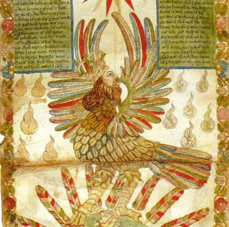
Ripley Scrowle, Londres, British Library, MS. Add. 32621 - détail
Le roi
représente la conscience dominatrice qui, au cours de son
explication avec l'inconscient, est engloutie par ce dernier ;
ainsi naît la nigredo : état de
ténèbres qui conduira finalement à une
réjuvénescence et à une nouvelle naissance du roi.
L'idée étrange que le roi a été « nourri sous les
ailes du soleil » (fig. ci-dessus) pourrait se rapporter
au passage de Malachie (4:2) qui aida à rationaliser l'adoration
du Christ en tant qu'Hélios ou que Sol (le Soleil), adoration
que saint Augustin dut encore combattre. Le passage dit ceci : « Mais, pour vous qui
craignez
mon
Nom, se lèvera un soleil
de justice et la guérison sera
sous ses ailes ; vous sortirez et vous bondirez comme les veaux qu'on
engraisse » ... Ce passage a toujours été
considéré comme une prophétie messianique, fait
évidemment connu de Ripley. « Les ailes du soleil
» est une image très ancienne, mais qui touchait de
près Malachie l'Hébreux, puisqu'il s'agit du symbole
égyptien du soleil. Celui qui est nourri par ce soleil est le
fils de Dieu, c'est-à-dire le roi. De même que, dans la
vision d'Arisleus, le fils du roi est ramené à la vie par
les fruits de l'arbre philosophique, de même, chez Ripley, le roi
malade doit être guéri par une espèce
particulière. Il faut entendre par là un jarmakon zwhV ou
elixir vitae (élixir de vie).
Jung, Psychologie et Alchimie, § 497-498, pp. 528-529, op. cit.
Jung, Psychologie et Alchimie, § 497-498, pp. 528-529, op. cit.
L'oiseau d'Hermès dévore ses plumes, allégorie de la fixation. D'autres oiseaux dévorent leur substance, comme le pélican [voir Aurora consurgens, figure XXII] ou le cygne qui meurt par ses propres plumes [voir le caisson n°5 de la série 7, galerie alchimique du château de Dampierre- sur-Boutonne]. Ils désignent alors le
. Ici, le sens est différent : il s'agit de
rendre fixe le volatil et d'infuser l'âme au corps. Sur le sens
à donner à l'ensemble de la scène [le panneau du RS], nous
trouverons des éléments de réponse dans un
écrit attribué à Ripley, la Cantilena Riplaei [in Opera Omnia Chemica, cum Praefatione
a Ludovico Combachio (Kassel, 1649)] :Il était une
fois un roi noble qui n'avait pas de descendant. Il se lamentait de sa
stérilité : un defectus
originalis devait avoir surgi en
lui, bien qu'il eût été nourri sous les ailes du soleil
sans défaut de constitution naturel. Il dit textuellement
: « Las,
je crains et je sais avec certitude que si je
n'obtiens pas immédiatement le secours des espèces
[species], je ne pourrai pas procréer. Mais j'ai appris avec grand
étonnement que je pourrais naître à nouveau par l'arbre
du Christ ». Il voulut alors retourner dans le
ventre de sa mère et se dissoudre dans la prima materia. La
mère l'encouragea dans son dessein et le dissimula
aussitôt sous sa robe, jusqu'à ce qu'elle l'eût une
nouvelle fois incarné, par elle et en elle. Alors elle devint
enceinte. Durant la grossesse elle mangea la chair du paon et but le
sang du lion vert. Enfin, elle mit au monde l'enfant qui ressemblait
à la Lune et se changea ensuite en l'éclat du Soleil. Le
fils redevint roi. Le texte dit : « Dieu te donna les
armes magnifiques et étincelantes des quatre
éléments au milieu desquels se trouvait la vierge
rachetée (virgo redimita). » Un baume merveilleux
s'écoulait d'elle et elle brillait, le visage rayonnant,
parée de la pierre précieuse. Mais le lion vert
était couché dans son giron, et du sang coulait de son
côté. Elle fut couronnée d'un diadème et
placée comme étoile dans l'empyrée. Le roi devint
un triomphateur suprême, un grand guérisseur de tous les
malades, un rédempteur [reformater] de tous les
péchés.
Psychologie et Alchimie, pp. 521-523
Cette Chanson rapporte l'histoire
d'un roi qui se lamente de ne pouvoir enfanter du fait d'un
défaut de nature. Le roi est la materia prima prise à un
stade grossier [forme comburante]
qui rappelle la légende de Nabuchodonosor. Ce grand roi est
nourri toutefois " sous les ailes du Psychologie et Alchimie, pp. 521-523
",
c'est-à-dire sous ses rayons : le RS les exhibe en forme de
larmes [voir supra].
Leur couleur double implique une association dans laquelle nous pouvons
distinguer le sulphur et le sal . Ce passage des exercitationes in Turbam philosophorum laisse
à l'entendre :« ... l'oeuvre entier [n'est riend 'autre] que dans l'eau. Et il y en fait une substance dans laquelle tout est contenu, et c'est le sulphur philosophorum [qui] est eau et âme, huile Mercurius et Sol, le feu de la nature, l'aigle, la larme, la première hyle des sages, la materia prima du corps parfait. »
Il y a là une redoutable ambiguité pour l'impétrant qui pourrait bien l'induire en erreur : c'est que le
est manifestement pris pour le . Toutefois, l'expression de soufre philosophique est
là pour aider à comprendre que la matière est dans
un état sublimé et que cette sublimation [animus ] est le fait même du . Donc, Mercure et Soufre sont interchangeables dans ce
contexte et, du reste, tel semble bien être le sentiment de
Fulcanelli [voir Myst. Cath.]
C'est ce que laisse entrevoir cette image
tirée du Theatrum
Chemicum Britannicum qui est une vision très
simplifiée
du RS : on remarque les Soufres [agent
et patient] qui se font face comme les gnomes de la
cheminée alchimique à Fontenay-Le-Comte.
Le démiurge distille la rosée de mai sur la scène
du théâtre et le couple est pris dans une pose qui a
quelque rapport avec les vases distillatoires que l'on aperçoit
dans le Coelum Philosophorum
de Philippe Ulstade [voir le Char Triomphal de
l'antimoine]. C'est un autre exemple de fontaine
alchimique. L'aqua permanens prépare la venue de la : elle est présente dans le RS sous cette forme
double de globe terrestre et aqueux. Quant au ,
légèrement obscurci par
les nuées, il répand à profusion ses rayons : dans
le Recueil
stéganographique de Beroalde de Verville, sur
Poliphile [Le
tableau des riches inventions couvertes du
voile des feintes amoureuses, qui sont représentées dans
le Songe de
Poliphile desvoilées des ombres du songe et subtilement
exposées, M. Guillemot, Paris,
1600],
et
sont interprétés comme "
flammes et larmes". Qui quelquefois veu
changer la goutte de mastic, et la
pressant en faire sortir une larme limpide, qu'il prenne
garde et il verra en temps prefix de la douce pressure
du feu issir du subiet philosophic, vne substance pareille .
car aussi tost que sa noirceur violette sera pour la seconde
fois excitée, il s'en suscitera comme vne goutte ou fleur ou
flame ou perle, ou autre similitude de pierre précieuse,
laquelle sera diversifiée iusques à ce qu'elle coule en blan-
cheur très-claire, qui puis après sera susceptible de se vestîr
de l'honneur des beaux rubis, et pierres etherees, qui sont
pressant en faire sortir une larme limpide, qu'il prenne
garde et il verra en temps prefix de la douce pressure
du feu issir du subiet philosophic, vne substance pareille .
car aussi tost que sa noirceur violette sera pour la seconde
fois excitée, il s'en suscitera comme vne goutte ou fleur ou
flame ou perle, ou autre similitude de pierre précieuse,
laquelle sera diversifiée iusques à ce qu'elle coule en blan-
cheur très-claire, qui puis après sera susceptible de se vestîr
de l'honneur des beaux rubis, et pierres etherees, qui sont
le vray feu de l'ame
et lumiere des Philosophes.
Dans cet extrait, plusieurs points peuvent être repris : la noirceur violette ou conjonction des luminaires - iwn - et la dissolution [nigredo] - puis l'albedo dans laquelle il est presque possible de deviner la surrection du
ou Soufre blanc [Sal].
On l'appelle encore l'Arsenic [Artznei],
toyson de l'or, christophore ou corps du lapis. On peut voir dans le
la promesse de ce sulphur que l'Artiste espère
réincruder en le projetant en masse dans le : l'aigle à tête royale est
l'équivalent du caput
corvinis par lequel se signale la fin de la dissolution.
Il est en effet important de comprendre que ces termes [dissolutio, albificatio, coagulatio,
assatio, etc.] ne désignent pas tant des
états de la matière que des transitions de phase, des
moments de l'oeuvre ; seul donc le concept de transformation parait
porteur de sens. Toutes ces transformations que relatent les textes
passent de même que des figures en image... Il ne s'agit de rien
d'autre que de manifestations d'un noyau de la psyché -
transition du Soi et du Moi - formant la part obscure et
tutélaire de notre être. Les alchimistes n'avaient pas la
plus petite idée de ce que recouvraient leurs travaux du point
de vue de la nature chimique et ils ont ainsi, comme nous l'avons dit
ailleurs, contribué à leur insu à l'essor de la
proto chimie. Ne pouvant nommer ce qu'ils voyaient en termes
rationnels, ils étaient conduits tout naturellement à
associer des images et des mots qui ne faisaient que retracer les
contours flous et irrationnels de l'époque qui était la
leur : on ne peut donc en aucune façon, au plan historique, leur
faire le reproche d'avoir été obscurs ou flous. Jung a
parfaitement intégré cela à son Mysterium conjunctionis
[voir surtout tome I,
chapitre Sel]. Cette ombre est en filigrane dans l'oeuvre du
magicien de Küsnacht : elle est aussi furtive que le et se comporte comme un anima rector. Elle
résulte de la confrontation de l'animus et de l'anima dans un processus de
quête dans le Ça [voir
supra].On sait que les Chaldéens s'accordent sur le fait que le
est exalté dans le signe du Bélier [nous n'accordons ici nos vues qu'avec
l'hermétisme et nullement avec les postulats de l'astrologie].
Cette exaltation est assez visible sur l'avant dernier panneau du RS
où les « larmes de » témoignent de
l'activité calorique et nutritive qui est exercée par le Lac virginis. Plus
qu'Arès [qui correspond au
dragon babylonien, i.e. vitriol romain],
c'est à
Ariès qu'il est fait allusion :« Comme la Mélusine est un être aquatique, l'Ares melosinicum renvoie à l'Aquaster qui représente l'aspect aquatique de l'Iliaster, l'Iliaster lié aux humeurs et qui entretient celles-ci. L'iliaster est indubitablement un principe spirituel, invisible, quoiqu'il représente également quelque chose comme la prima materia, laquelle ne correspond en aucune façon toujours, pour les alchimistes, à ce que nous entendons par la matière. » [Synchronicité et Paracelsica, op. cit. § 215, p. 184]
Dans cet extrait, c'est la relation ambiguë entre la représentation spirituelle de la prima materia et sa contre partie physique qui est mise en exergue. Si nous reprenons ce que nous avons dit supra touchant à la définition de l'Iliaster et de l'Aquaster, c'est avant tout le caractère dynamique du processus qui doit être mis en avant : ce principe invisible évoqué par Jung n'est rien d'autre que l'énergie développée par le système sous l'influence du feu dissolvant des Sages. Si l'on voulait trouver une représentation « psychique » de ces deux mots, il suffirait de revoir le Lion rouge et le Lion vert, de part et d'autre de la Mouth of Colrick , au bas du panneau supérieur [RS]. Si Arès est
, Ariès est le Sel ou ; aussi lorsque Jung dit en note [Paracelsica,
p. 247, note 114] que le loup va dans le sens de
l'interprétation [Ares en
tant qu'Aquaster], faut-il être prudent : le loup des
alchimistes représente pour certains l'antimoine saturnin d'Artephius [les larmes de Saturne] mais il
représente aussi, à un stade plus tardif, le grappin ou
frein qui annonce la coagulation de l'eau mercurielle [il s'agit du lien du Mercure, du
ligamentum mais ce point n'est pas encore bien éclairci].
Or, si le loup
dévorant les métaux que l'on aperçoit sur l'une
des Douze
Clefs de Basile Valentin peut être
considéré comme l'hiéroglyphe de l'Iliaster, il
semble bien que celui pouvant symboliser l'Aquaster [aqua permanens] soit à
rechercher du côté d'Ariès « C'est pourquoi le "corps blanc de la cendre" est appelé diadema cordis (diadème du coeur) ou bien, sous la forme synonyme de "terre blanche feuillée" (terra alba foliata), il est qualifié de corona victoriae (couronne de victoire). » [Mysterium conjunctionis, trad. albin Michel 1980, tome I, chap. Sel, § 313, p. 294] :
Le point fondamental est qu'il y a non pas un, mais deux corps [Senior, De Chemia, 1566, p. 41 - in Manget, Bibliotheca Chemica curiosa, vol. II, pp. 198-235 ] : le sulphur ou teinture
et le Soufre blanc ou toyson d'or
qui constitue Ariès : . Cette cendre forme une
véritable vitri oleum
dont les cabalistes ont fait le V.I.T.R.I.O.L.
alchimique et fait la transition avec tout ce qui se rapporte au
travail du verrier [voir :
Peligot, Douze Leçons sur l'art de la verrerie
et Loysel, Essais
sur l'art de la verrerie]. Blaise de Vigenère
ajoute :« ... le très beau verre cristallin se compose essentiellement de sel de soude (sal sosae) auquel du sable est mélangé comme liant. La terre de verre est donc constituée de deux substances inccorruptibles. » [De Sale et Ignis, Theatrum Chemicum, vol. VI, pp. 1-143]
Vigenère parle ici d'un sel qui se rapproche du
mais qui n'est nullement le sel de sapience : le sel
des alchimistes est leur salamandre, qui s'oppose dans les derniers
temps de l'oeuvre au rémore dont parle Savinien de Cyrano
Bergerac [voir E. Canseliet,
Etudes de symbolisme alchimique, Pauvert]. Le sel est
tiré de l'esprit [intelligence]
mais en tant qu'il est incombustible - contrairement au sulphur - il y est proprement conjoint sans s'y dissoudre au
point de disparaître dans la nigredo. C'est la raison pour
laquelle les textes ont toujours été obscurs sur le point
de savoir ce qui ressortissait du Mercure et du Sel [voir le symbole dual de la ].
C'est aussi l'une des raisons pour laquelle cette substance est
nommée « sel de sagesse », caractère qu'elle
partage avec le sable. En définitive, on comprend fort bien ces
dernières réflexions d'un vieux texte sur notre sujet :« Celui qui opère sans sel ne ressuscitera pas les corps morts... Celui qui travaille sans sel tend un arc sans corde. On doit en effet savoir ici que ceux que l'on nomme sages ont besoin d'un sel bien différent de ces minéraux vulgaires... » [Tractatus Aureus de Phil. Lap., Dyas Chymica Tripartita, Grasseus, 1625, pp. 11-66]
Le corps mort est en fait le sulphur comburens : en l'absence de sel, c'est-à-dire de terre nourricière, il ne peut être tiré du
; la projection n'a pas lieu.
Aussi l'Artiste ressemble-t-il alors à un sagittaire dont
Mercure [l'arc] serait
sans ferment [la flèche]
pouvant féconder la terra
alba foliata. Mais le point le plus élevé,
peut-être, de la cabale hermétique semble être
atteint ici :« La noirceur et la puanteur du sel signalées par la Gloria mundi relèvent de sa nature ténèbreuse. Lors de la dissolution des corps vivants, d'une part, il subsiste jusqu'au bout, le dernier dans la corruption (ultimum in corruptione), et d'autre part, il est le premier dans la génération (primum in generatione). » [Mysterium conjunctionis, I, § 332, p. 308]
Jung cite là un texte fort important du Musaeum Hermeticum .
[Gloria Mundi seu Tabula Paradisi, 1678, Alia Lapidis nostri cognitio, pp. 203-305 - notes de Ferguson : The earliest edition which I have observed is dated 1620 and there are enumerated also editions of Frankfurt, 1648, Hamburg, 1692, and the reprints In the collections mentioned below. The aulhorship of the tract is uncertain. Mercklin indeed assigns it to Robertus Vallensis, but on insufficient grounds; Roth-Scholtz says the author is anonymous; Fictuld says that though it may be by Barcius there is better reason for supposing it the work of Johann von Sternberg, author of the tract Rosarium. Anyhow these two ' noble treatises' were the work of the same pen. He piles up eulogies on the present work which are more nauseating than his adverse criticisms are comical.].
On mesure à quel point les alchimistes disent vrai et se montrent charitables lorsqu'ils assurent que la putréfaction est la solution de la conjonction : le Sel étant incorruptible subsiste jusque dans la corruption [il ne se dissout pas dans le
au sens où il n'y séjourne pas comme ].
Et il est le premier dont Latone accouche : autrement dit, on peut
établir d'après le Gloria Mundi que le Sel ou est Diane. En effet, Diane est liée à la
[les alchimistes
évoquent Diane aux cornes lunaires] ; c'est une
déesse vierge [terra alba
foliata] ; elle est armée d'un arc [l'instrument de la projection : Diane
sert de parèdre à Latone quand elle accouche d'Apollon,
c'est-à-dire du sulphur en cours de réincrudation]
; Nausicaa est comparée par Homère à Diane [Nausicaa = la Sagittaire qui chasse le
sanglier, épithète de
dans les textes, cf. la légende d'Adonis in Atalanta
fugiens]. Voici le cartouche
qui termine ce panneau du RS| Dans
la mer sans lie, Se tient l’oiseau d’Hermès, Dévorant ses ailes changeantes, Et se stabilise lui-même, Lorsque toute ses plumes ont disparues, Il se tient toujours là comme une pierre, |
Il
est maintenant blanc et rouge, Et tout autant la pierre pour accélérer la mort, Tout cela sans fable, Tous les deux dur et mou et malléable, Comprenez bien et correctement maintenant, Et remerciez Dieu de cette vision. |
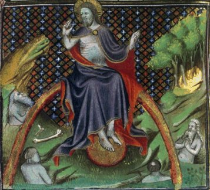
Résurrection des morts, Fol. 243v Saint Augustin, Cité de Dieu (traduction Raoul de Presles), France, Paris, XVe
(9) THE
RED SEA THE RED SOL THE RED
ELEXIR VITAE
(10) THE BYRDE OF HERMES IS MY NAME EATING MY WINGS TO MAKE ME TAME
(10) THE BYRDE OF HERMES IS MY NAME EATING MY WINGS TO MAKE ME TAME
La mer Rouge est comparable au sulphur philosophicum :
« Puis un chemin sans obstacle fut ouvert dans la mer rouge, car cette mer grande et large ébranla le rocher, et les eaux métalliques s'en écoulèrent, sur quoi les fleuves qui réjouissent la cité de Dieu se tarirent. Quand donc cet être corruptible aura revêtu l'incorruptibilité et que cet être mortel aura revêtu l'immortalité, alors s'accomplira la parole de l'Ecriture : la mort a été engloutie dans la victoire. Où est-elle, ô mort, ta victoire ? » [Psychologie et Alchimie, p. 496, § 476, Sixième Parabole de l'Aurora consurgens; voir M.L. von Franz, p. 137 - citation de I Cor. 15, 53-55]
C'est l'allégorie de la réincrudation des corps ; l'une des Clefs de Basile Valentin y fait référence par le terme IAMSUPH qui voile la mer Rouge ou, plus exactement, le dragon rouge : c'est de son écume ou si l'on préfère de sa flamme qu'est façonné le
et le souffle du vent mercuriel est
le nom que lui donne Flamel. Si l'on en croit Diodore de Sicile - en y
mettant un grain de sel - le lapis [dont on sait que l'un des noms est topazoV] se
trouverait dans une île de la mer Rouge nommée Ophiode ou
île serpentine. Cette région du golfe persique a permis
à Fulcanelli de décocher un petit trait de cabale
à
propos de « Persée, vu comme poisson de la mer
Rouge » [DM, II, p. 36 - sur la mer Rouge,
cf. Atalanta
XXXI]. Il est question de la mer Rouge dans les
Paraboles de l'Aurora consurgens
:« L'apparition de la première parcelle de terre sèche dans le chaos originel est... comparée à la division de la mer Rouge où un chemin sans obstacle s'ouvrit pour les enfants d'Israël et un champ fleuri surgit de l'abîme... Nous avons ici une seconde allusion à la floraison et à la germination d'un nouveau monde. Ce thème prendra une large place dans la dernière parabole... La mer Rouge est, dans l'alchimie, un synonyme fréquent de l'eau divine. » [M.L. von Franz, Aurora consurgens, trad. Fontaine de Pierre, 1982, p. 358-359, Sixième Parabole : du Ciel et du Monde, commentaire]
L'udwr qeion est l'eau de Soufre [Berthelot, Chimie des Anciens] qui a été assimilée au mercure philosophique, c'est-à-dire au
acué de son . Nous devons voir la surrection de Délos dans
ce champ fleuri qui surgit des profondeurs de l'eau typhonienne...
C'est dans le Mysterium
conjunctionis que Jung a consacré un long
paragraphe à la mer Rouge dans le chapitre Sel [tome I, pp. 250 - 261]. Il la
compare à l'eau benoîte, celle-là même
qu'évoque E. Canseliet à plusieurs reprises [voir Études
de symbolisme].
Classiquement, si l’eau de source symbolise la
vie,
l’eau de la mer est un
symbole de la mort qui renvoie au
mystère de la croix : aussi faut-il comprendre la sortie
d'Égypte et la traversée de la mer Rouge comme une
indication
sur la fin de la nigredo et la fuite du Léviathan. C'est ce que
semble indiquer en susbtance Jung en citant Rosinus ad Euthiciam :« Et sache... que notre mer Rouge teint plus que toute mer, et que le poison, quand il est cuit, putréfié et coloré, pénètre tous les corps. » [Mysterium conjunctionis, I, § 252, p. 253, in Artis Auriferae, I, p. 272 - dans la version datant de 1572, le traité est compris pp. 158-178]
Le poison désigne
ou ioV, le venin. Cuire le
poison a le même sens que préparer le dont la projection procure le lapis. Jung cite un
autre texte du pseudo Aristote, Tractatus ad
Alexandrum Magnum, De lapide Philosophico [Theat. Chem., vol. V, pp. 787-799]
où le serpent mercuriel ioV
est placé sur un char à quatre roues qui évoque
d'une part le Char triomphal de l'antimoine
du pseudo Basile Valentin
et, d'autre part, la série des planches du Splendor solis, avec des
cartouches représentant des chars tirés par des animaux
différents, selon le stade de l'oeuvre. Jung commente ainsi :« Le vase ou chariot est le sépulcre sphérique du serpent. La quadruple révolution des natures correspond à l'antique tétramérie (division en quatre parties) de l'oeuvre, c'est-à-dire à la transformation des quatre éléments, de la terre au feu. Ce symbole décrit en bref l'essentiel de l'oeuvre : le serpent d'Hermès ou Agathodaimon, le noûs de la face froide de la nature... Dans la conception alchimique, ce vase signifie le monde aussi bien que l'âme. » [idem, § 254, p. 254]
Les Grecs croyait qu'Agathodaïmon était le protecteur des vignes et des champs de maïs, et ils l'honoraient en buvant un verre de vin après le repas. Ils le représentaient comme un serpent et parfois comme un jeune homme tenant une corne d'abondance, un bol et des épis de blé. Nous serions tentés de voir en Apollon le jeune homme dont il est question [en hébreu, corne et rayon se disent keren]. Mais d'autres candidats se présentent comme Ganymède [le Verseau qui tient l'amphore, Aquarius ayant été identifié à Ganymède], hiéroglyphe de l'aqua permanens dans notre série du zodiaque alchimique : Ganymède était fils de Tros, roi de Dardanie, qui, à partir de son règne, prit le nom de Troie. Ce jeune prince était d'une si éclatante beauté, que Jupiter voulut en faire son échanson. Un jour que Ganymède chassait sur le mont Ida en Phrygie, le dieu se métamorphosa en aigle et l'enleva dans l'Olympe. Cette fable est, dit-on, fondée sur un fait historique. Tros ayant envoyé en Lydie son fils Ganymède offrir un sacrifice à Jupiter, fut enlevé et retenu par Tantale, roi de ce pays. Cet enlèvement fit éclater entre les deux princes une longue guerre qui ne se termina que par une première ruine de Troie. Quoi qu'il en soit, le fable a persisté [voir Atalanta XLIII]. Il est possible de voir dans l'Echanson de Zeus le premier état du Soufre rouge ou sulphur
: ganoV
désigne, en effet, un liquide brillant et limpide, «
étamé » où l'on peut voir l'aspect en
« yeux de poisson » dont les Adeptes attendaient la
survenue avant d'être sûrs que la conjonction des principes
était consommée. Cet aspect brillant ou
étincelant, c'est
aussi la manifestation de l'occulte, dans le sens de centre invisible
où l'on retrouve notre Adam kadmon, l'adech :« C'est lui qui est enchaîné dans les prisons des ténèbres et qui est personnifié par la Sulamite noire du Cantique des Cantiques. Il provient de la conjonction du soleil et de la lune. Les étincelles... sont appelées yeux de poisson ... » [Mysterium conjunctionis, t. I, § 44, p. 85-86, Scintilla]
Cette allusion aux oculi piscium est mentionnée par Morienus [c'est un thème récurrent : voir Aurora consurgens, II ; Entretiens de Calid à Morien ; Philalèthe in Introïtus, V ; Récréations hermétiques ; Désir désiré]. La Turba en parle comme de « paillettes mouchetées que nous appelons la fleur du Soleil » [Sentence X] : il y a une relation évidente entre la fleur et l'étoile, rappelant ce qu'en a dit Fulcanelli à propos des sublimations philosophiques. Quant à la Sulamite noire, E. Canseliet nous en parle dans ses Études de symbolisme alchimique quand il rappelle ces paroles : « je suis noire et pourtant je suis belle » [Cantique des Cantiques1, 5] qui célèbrent la rencontre entre
et , appelés à mêler la
différence de leurs conditions et à chanter les jeux sans
fin de la passion du animé.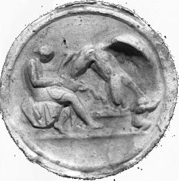
Ganymède apportant de l'eau à l'aigle de Zeus, Begram, Kapisa, Afghanistan, Musée de Caboul, cliché datant de 1970
Hélas, Fulcanelli comme E. Canseliet sont restés muets sur Ganymède. C'est bien dommage car nous tenons par cette déité la transition - le transfert - entre le soufre naissant et le lapis ! Dans un premier temps, il faut noter que
intervient par le rapt de GanumhdhV. Ce qui signale
d'abord l'acte de projection
qui en résulte, d'où il procède que nous sommes
bien sur la piste du [même conjecture pour Io qui
représente la ; par parenthèse, il y a
lieu de noter que le père d'Io - Iw - Inachos, fils
d'Océan et de Téthys, fut choisi un jour par Héra
et Poséidon comme arbitre : ils se disputaient le pouvoir de la
contrée que Poséidon arrosait. Eh bien ! Inachos se
déclara en faveur d'Héra. De dépit,
Poséidon l'assécha. Grâce lui soit rendue
puisqu'ainsi il a permis l'assation.
Elle guérit le Roi de son hydropisie, voir Atalanta XLVIII et Lambsprinck, figure XIV]. Jung est revenu à
plusieurs reprises sur ce thème mystérieux des yeux de
poisson :« Chez Sir George Ripley se trouve la variante que, lors du dessèchement de la mer, une substance demeure qui brille comme un oeil de poisson, ce qui constitue une claire allusion à l'or ou au soleil (en tant qu'oeil de Dieu). » [Racines de la conscience, la nature du psychisme, p. 594, trad. fr. Pochothèque]
Il s'agit de la phase de coagulation, à un stade avancé de la Grande coction et cette substance brillante renvoie à l'Apollon ou josjorwV. Il n'est pas évident, comme Jung donne à l'entendre, que la scène mythologique d'Argos aux cent yeux relève de la même symbolique [on se situe alors à un stade plus précoce de l'oeuvre qui doit correspondre au Caput coruis]. En revanche, on peut y voir un rapport avec les couleurs de la queue de paon et les ocelles qui y donnent des reflets moirés. Quoi qu'il en soit, c'est sous
qu'est placé l'ensemble de ce tableau [le traducteur des Racines de la conscience, Yves Le
Lay, assure que l'étain, en tant que métal utilisé
pour effectuer des soudures, renvoie à la conciliation des
natures et à y voir le lapis dans lequel sont rassemblés
les sept yeux - assimilés aux vertus - qui sont aussi les sept
planètes, op. cit. p. 594, n. 109]. Van Lennep voit dans
la sphère emplumée la pierre philosophale, ce qui n'est
pas d'une évidence immédiate... Il nous semble plus
rationnel d'évoquer la vieille légende du dreamcatcher [l'attrape rêve]. Elle va
en droite ligne de l'entrelacs proposé par Jung dans ses Métamorphoses de l'Âme et ses
symboles [Georg,
1953]. Hélas, Jung n'évoque point cet aimant
spirituel... Pourtant, il semble que seul le contenu
archétypique de cette légende rende pleinement justice
à cette sphère
emplumée qui supporte le roi aigle.
Voici cette légende, selon la tradition Sioux Lakota :Il y a longtemps de
cela, lorsque le monde était encore jeune, un vieux guide
spirituel de la tribu Lakota se trouvait au sommet d’une haute
montagne, et eut une vision. Dans cette vision, Iktomi, grand coquin et
Maître de la Sagesse apparut sous forme d’araignée.
Iktomi
lui parla dans une langue sacrée. Tout en parlant, Iktomi
l'araignée pris le cerceau en bois de saule -
décoré de plumes, de crin de cheval, de perles, et
d'offrandes - appartenant au shaman, et se mis à tisser une
toile. Il
parla au prêtre des cycles de la vie, commençant nos vies
en tant qu’enfant, et passant par la jeunesse vers
l’âge adulte.
Enfin nous atteignons la vieillesse, quand nous avons encore une fois
besoin des soins des autres, comme dans notre enfance, ainsi
complétant le cycle. « Mais,
» ajouta Iktomi tout en tissant,
« chaque étape comprend ses propres forces – les unes appartenant au bien, les autres appartenant au mal. Si tu écoutes les forces du bien, elles te conduiront sur le bon chemin. Mais si tu écoutes les forces du mal, elles te conduiront sur le mauvais chemin et te blesseront. Ainsi ces forces peuvent contribuer à l’harmonie de la Nature ou l’endommager. »
Tout en parlant, l’araignée continua de tisser sa toile. À la fin de son discours, Iktomi donna sa toile au prêtre, et lui dit,
« La toile est un cercle parfait avec une ouverture au centre. Utilise la toile afin d’aider ton peuple à atteindre ses buts en tirant parti de ses idées, de ses rêves et de ses visions. Si on croit au Grand Esprit, la toile attrapera ses bonnes idées, et les mauvaises tomberont par le trou au centre. »
Le prêtre fit part de sa vision au peuple, et maintenant beaucoup d’Indiens accrochent un Attrape Rêve au-dessus de leurs lits afin de tamiser leurs rêves et leurs visions. Le bien est retenu dans la toile de la vie et reste avec le peuple, tandis que le mal s’en va par le trou au centre de la toile et ne fait plus partie de leur vie.Il est dit que le Dreamcatcher tient le destin de l’avenir.
« chaque étape comprend ses propres forces – les unes appartenant au bien, les autres appartenant au mal. Si tu écoutes les forces du bien, elles te conduiront sur le bon chemin. Mais si tu écoutes les forces du mal, elles te conduiront sur le mauvais chemin et te blesseront. Ainsi ces forces peuvent contribuer à l’harmonie de la Nature ou l’endommager. »
Tout en parlant, l’araignée continua de tisser sa toile. À la fin de son discours, Iktomi donna sa toile au prêtre, et lui dit,
« La toile est un cercle parfait avec une ouverture au centre. Utilise la toile afin d’aider ton peuple à atteindre ses buts en tirant parti de ses idées, de ses rêves et de ses visions. Si on croit au Grand Esprit, la toile attrapera ses bonnes idées, et les mauvaises tomberont par le trou au centre. »
Le prêtre fit part de sa vision au peuple, et maintenant beaucoup d’Indiens accrochent un Attrape Rêve au-dessus de leurs lits afin de tamiser leurs rêves et leurs visions. Le bien est retenu dans la toile de la vie et reste avec le peuple, tandis que le mal s’en va par le trou au centre de la toile et ne fait plus partie de leur vie.Il est dit que le Dreamcatcher tient le destin de l’avenir.
C'est une bien belle légende et qui eût sans doute passionné le vieux renard qu'était Jung. Pourtant, alors qu'il aborde des légendes indiennes dans l'ouvrage cité, il n'évoque point l'attrape rêve : l'attrapeur de rêves est une pièce artisanale perpétuant cette légende amérindienne. L'objet est tissé un peu comme une toile d'araignée et a pour fonction de filtrer tous les rêves. La légende veut que les rêves traversent la toile, les bons rêves se dirigent vers les plumes et ressortent pour rester dans la chambre, les mauvais rêves sont emprisonnés dans la pierre située sur la toile jusqu'au lever du soleil. Aux premiers rayons de lumière, les mauvais rêves seront brûlés. N'est-ce pas là l'illustration des songes de Nabuchodonosor [rêve de la statue et rêve de l'arbre] ? Et Daniel, par les conseils avisés qu'il prodigue au roi, ne joue-t-il pas le rôle d'une lumière qui éclaire l'esprit, à l'instar du
levant qui chasse les cauchemars ? Daniel éclaire le roi et lui
apprend qu'aveuglé par l'orgueil [voir vices et vertus in Gobineau], il perdra sa couronne
pendant sept périodes [qui
correspondent aux métaux des sept pilastres de l'heptagone du RS].
Il lui apprend aussi que les royaumes terrestres seront détruits
et que seul l'esprit subsistera [il
peut s'agirt de la parabole du déluge].5)- la Trinité
Le panneau suivant du RS va nous permettre d'approfondir le concept de trinité appliqué à l'alchimie et mis en rapport avec les trois éléments de la pysché : MOI - SOI - ÇA. Au sommet, nous avons le
dans lequel un est inscrit, composé de trois
sphères colorées en rouge, blanc et noir qui
représentent les trois stades du processus [nigredo - albedo - rubigo]. Des
anneaux de chaîne lient ces sphères. La
semble embrasser le et, dans la version du RS de la Welcome Library [voir n° 9],
la lune entoure presque
entièrement le soleil. Le disque lunaire est soutenu par un
dragon qui se mord la queue tout en tenant la lune dans sa gueule : on
y voit le serpent Ouroboros. Ce dragon
à queue serpentine est juché sur une antimonium ailée [antimoine
spirituel ou saturnin], séparée en deux par une
ceinture équatoriale : en haut, la ; en bas, . On retrouve les trois
sphères incluses dans le qui sont amorphes et
plongées dans le liquide . Plus bas, un large
phylactère en trois parties présente les séquences
des Verses et se continue,
dans sa partie médiane, par une
longue hampe inférieure : l'ensemble Lune - serpent - terre
ailée rappelle la forme de l'hiéroglyphe mercuriel et se
rapproche de l'un des dessins que l'on aperçoit dans l'Alchimie
de Flamel de Denis MolinierCe dessin est
d'ailleurs récurrent. Le schéma de la terre ailée
est un grand classique de l'iconographie [voir Lorenzo
Lotto]. Le RS se termine par deux personnages sur lesquels
nous reviendrons ultérieurement [voir chapitre
7]. Nous allons dans un premier
temps étudier le dispositif supérieur. Tous les
éléments en sont connus ; ils ont été
passés en revue dans la présente section au chapitre 3 et dans l'Aurora consurgens, II. Toutefois,
leur disposition est telle qu'elle met en lumière, de
façon remarquable, les trois agents fondamentaux qui
représentent l'étendue de la psyché.
Naturellement, l'artiste à qui l'on doit cette disposition
n'avait aucunement conscience qu'il profilait ainsi des acteurs qui se
verraient, à trois siècles de distance, investis d'une
telle envergure spirituelle : il s'agit donc de figures qui nous
ramènent au concept d'archétype, en ce qu'elles expriment
des associations spirituelles immanentes. Si nous reprenons les
correspondances dont nous avons esquissé les contours au chapitre 3, il est
facile d'établir en première approximation que : MOI = {, } - SOI = {, } - ÇA = {,
†}
. La
psychologie moderne
établit que le ÇA est une sorte de continuum
indifférencié où la pulsion est dominante dans les
premiers temps de la vie. Ultérieurement, le ÇA peut
arriver à dominer un SOI déficient : l'inflation résultante du MOI peut
alors provoquer, en pathologie, des accès
de
mégalomanie, exemple typique d'une psycho-névrose parmi
les plus répandues [à
un stade fruste de cette pathologie mentale, les symptômes
peuvent être compatibles avec une existence normale en apparence
et ne donner lieu qu'à des conduites de type dictatorial
accompagnées d'une boulimie de possession]. Le
ÇA,
nous
l'avons vu, peut aussi être défini comme tout ce qui
ressortit de l'ÊTRE, c'est- à-dire des objets sans rapport
avec la psyché mais dont le MOI peut avoir soit la notion
empirique, soit la connaissance plus ou moins objective. Du ÇA
émergent, lorsque le MOI est devenu autonome et
équilibré avec le SOI, des stimulations incessantes dont
l'intensité peut varier de la « dormance » à
l'apparition de singularités par lesquelles se distingue et
prend corps l'AUTRE. Nous avons vu que, dans le domaine restreint
à l'alchimie,
on pouvait donner au ÇA l'apparence du . Dans le RS, le corps du lapis est
représenté par l'antimonium ailée [alabastrum]
sur laquelle l'Ouroboros prend assise.
Par là, on pourrait croire que le Soi est l'UN si l'on pose en
conjecture que :« Tout ce que nous supposons doté d'une totalité plus englobante que la nôtre peut devenir un symbole du Soi. Voilà pourquoi le symbole du Soi n'est pas toujours investi de cette totalité qu'exige la définition psychologique... Sans intégration du mal, il n'y pas de totalité... l'Un et indivisible serait représenté par Dieu le Père, mais le divisible par le Saint-Esprit, dont on sait qu'il se divise en de nombreuses langues de feu. » [Jung, Symbolique de l'Esprit, le dogme de la Trinité, § 202, pp. 194-195]
Jung pose donc en hypothèse que le Soi va au-delà des bornes imposées par la façon même dont il tire son origine. L'ambiguité semble venir de ce que la psyché considérée en ses deux éléments plus nettement identifiables que sont le MOI et le SOI est plongée dans cette espèce de sensorium Dei que forme le ÇA. Il nous semble, au contraire, qu'il faille restreindre le SOI à cette portion de la pysché intégrée dans l'UN de la personne humaine. Prenons l'exemple de la schizophrénie : en résumant à grands traits, on peut dire qu'elle peut être comparée - c'est une vue de l'esprit - à une schizogénie du MOI résultant d'un dysfonctionnement dans le pouvoir conservateur du SOI qui s'oppose à l'extravasation de la partie consciente de la psyché [le MOI, voir chapitre 3]. Cette maladie constitue, à l'inverse de la mégaloménie, une authentique psychose que l'on prenait, dans la jeunesse de Jung, pour une dementia praecox, avant qu'elle ait trouvé un cadre nosologique précis. Eh bien ! On assiste dans cette pathologie à un délitement de la personne en rapport avec une véritable fuite du MOI [nous avons noté supra la tendance essentielle du MOI à l'expansion, compte non tenu des propriétés inhibantes du SOI]. Il paraît donc logique d'introduire une sorte de démarcation entre le SOI et le ÇA, quand bien même les interactions entre ces formations de la psyché semblent plus ténues que celles postulées entre le SOI et le MOI. Au contraire, dans une psychose hallucinatoire, ce sont des éléments du ÇA qui font irruption dans le MOI. On voit donc que le SOI se comporte vis-à-vis du MOI et du ÇA comme une sorte de membrane semi perméable dont les capacités de filtration ou dont le sens de circulation de ce que, faute de mieux, nous appellerons l'éther psychique. À la limite, on pourrait considérer que l'autisme - envisagé sous le même angle - résulterait d'une imperméabilité totale du SOI qui se verrait affecter d'une forme diaphane interdisant au MOI toute relation avec le ÇA.
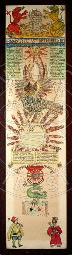
Sur ce panneau du RS de la Welcome Library, on voit en bas l'équivalent de la partie qui correspond au RS de la Huntington Library. On devine en particulier que cette structure ternaire prend aussi le sens de quaternité si on la considère comme une double dualité : d'une part le couple {, }; d'autre part, le couple {, } formant alliance entre le
dragon babylonien et l'antimonium ailée. En bas donc, de ce panneau, les
éléments de la série mercurielle ; en haut les
éléments de la série soufrée, i.e. du
lapis. Avec cette ambiguité « résiduelle »
en toile de fond du symbolisme alchimique, du Sel dont la nature est
double, procédant de et de .
On constate ainsi que le MOI est identifié au Soufre rouge ou
teinture de la pierre mais que sa forme peut être solaire [au sens de lumineuse] ou
rubéfiée [au sens
de rouge et chaude] ; le SOI et équivalent au Mercure
acué de son Sel en sachant que ce même Sel fait la transition entre MOI et SOI [et si l'on reprend la mythologie, Diane
sert de parèdre à Latone lorsqu'elle accouche d'Apollon].
Examinons à présent le ÇA. Un détail que
l'on voit mal sur cette image du Welcome Institute saute aux
yeux sur l'exemplaire de la Huntington
Library : c'est que le dragon perd du sang,
c'est-à-dire par cabale l'âme. Ce sang qui est un poison,
un venin [ioV = ],
se dilue dans la partie inférieure de la terre antimoniée
pour former le compost philosophal où les trois principes des
alchimistes sont préparés en vue de la sublimation [opération des Aigles de
Philalèthe, voir Air des Sages].
L'antimonium constitue ce « vinaigre très aigre »
dont Artephius et les acteurs de la
Turba
vantent les mérites dans l'oeuvre des Sages. C'est cette massa
confusa, ce chaos, qui forme la substance du ÇA :
de cette
profusion de courants de convection, animés par l'esprit du
démiurge [voir premier
panneau du RS et chapitre 1]
émerge lentement une étroite bande de terre sèche
que les hermétistes nomment Délos [voir Gardes
du corps] et que les psychologues appellent le MOI. Cette
île où Latone trouve refuge sort de la mer typhonienne [le tissu du ÇA dont la trame est
ourdie par la mère, voire la grande mère] mais
une petite partie est en
surrection, à l'instar d'un iceberg : il faut par là
considérer toute la partie immergée qui constitue le SOI
et qui se situe en dehors du champ de la conscience. Le Sel, qui est
partout sauf dans cette portion de terre sèche, forme le liant [COAGULA = fonction sulfureuse]
en même temps que le héraut, l'informateur [SOLVE = fonction mercurielle],
de cet univers. En dernière analyse, et selon une vue qui se
rapporte à la phylogénie du processus alchimique, le SOI
semble se développer à partir de la matrice de l'instinct
animal propre au ÇA et au MOI. À partir de là, le
SOI se développe et oppose une barrière aux interactions
primitives du ÇA et du MOI : les alchimistes disent alors que la
période de nigredo est terminée. On doit donc non
seulement envisager ce tableau d'un point de vue structural, dynamique
dans l'espace mais, plus encore, dynamique dans le
temps . Le médiateur de cette
énergétique est le ÇA qui cache en son sein † [voir Aurora
consurgens, II] où il initie et entretient le feu.
Vient
ensuite la phase de maturation que les alchimistes nomment albedo. Elle
est marquée essentiellement par le développement du MOI,
c'est-à-dire le mûrissement du grâce au Lait de Vierge [Lac virginis des vieux auteurs].
La médiation de cet accomplissement est le fait du ÇA [processus de transfert régi par ] . Le SOI intervient en tant que spiritus sanctus et joue le
rôle de vase de nature pour le sulphur. Là encore, il ne
faut pas négliger l'aspect dynamique des échanges entre
MOI et ÇA, d'où la singularité portant le nom
d'AUTRE va émerger, entraînant la troisième phase
qui est celle de l'individuation, précédée de la
projection [régie par ]. Pour finir, nous souhaiterions donner ces
quelques lignes de Freud :« Il se peut que la spatialité soit la projection de l’extension de l’appareil psychique. Vraisemblablement aucune autre dérivation. Au lieu des conditions a priori de l’appareil psychique selon Kant. La psyché est étendue, n’en sait rien. » [1938, Résultats, idées, problèmes, GW XVII, 149-52, SE XXIII, 299-300]
Sans avoir lu ces lignes de Freud, lorsque nous rédigions l'Aurora consurgens, II il nous était apparu évident que la projection devait être un processus dont la médiation était organisée par un archétype relevant du mythologème
: il s'agit d'une opération qui est beaucoup
plus rapide que le transfert [d'où
cette idée de temps s'opposant à l'espace],
médié par l'opérateur . Le transfert est metajorein et implique un
transport spirituel, à l'opposé de la projection
où « l'injection » corporelle est implicite... Mais
nous touchons aux limites de l'interprétation où la
connexion analogique est encore possible entre alchimie et psychologie.Nous avons vu que le dragon - serpent Ouroboros répandait son sang [âme] sur la
ailée [antimonium]
et
qu'il la féconde en ses principes [, , ]. On ne peut pas, ici, faire l'économie du
rapprochement avec la figure du Christ dont le flanc est blessé
par la lance de Longin [notons
que ce geste est salvateur pour le Christ puisqu'il est destiné
à abréger ses souffrances]. Il se trouve que ce
rapprochement se trouve lié au concept de l'aimant.« Le serpent représente un équivalent du poisson. Le consensus populaire interprétait la figure annoncée du Sauveur comme serpent aussi bien que comme poisson; comme poisson, parce qu'il émergea des profondeurs inconnues; comme serpent, parce qu'il surgit secrètement de l'obscurité... La comparaison du Christ avec le serpent est plus authentique que celle avec le poisson... Chez les Gnostiques, le serpent se recommandait en tant que symbole populaire, connu depuis des temps reculés, du génie local bienfaisant, Agathodaïmon, ainsi que Noûs qui occupait chez eux une place privilégiée. » [Jung, Aïon, Symboles gnostiques du Soi, § 291, p. 204, trad. Albin Michel]
Jung voit dans le Christ le symbole du Soi dont nous venons de voir qu'il prenait sens - hermétiquement parlant - comme tiers agent entre le MOI et le ÇA. Il est donc placé à la croisée - stricto sensu - entre ces deux univers [le monde intérieur d'une part, l'univers d'autre part] où il joue en quelque sorte le rôle d'un condensateur. La Passio Christi peut être interprétée ainsi comme le moment où la déflagration énergétique aboutit au paroxysme de la Crucifixion, où temps et espace ne font plus qu'un, où la figure du Christ terrestre s'évanouit devant sa représentation immanente en tant que logos. Conçue dans cette optique [celle d'un En Soi qui se dévoile l'espace d'un instant fugitif], le problème de l'opposition entre l'Âme, l'Esprit et le Corps cesse de se poser au profit d'une représentation où ces deux hiéroglyphes deviennent virtuellement équivalents :
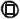
=. Le corps est inscrit dans l'esprit :
c'est le problème de la quadratura
circuli de Dorneus, que nous avons évoqué
à plusieurs reprises. Comment faire en sorte que
d'éléments considérés comme en soi [,
, , ], on parvienne à
préparer une terre où soit inclus un
feu inextinguible ? Les alchimistes ont
découvert qu'il fallait réaliser la coïncidence des opposés.
C'est Nicolas de Cues qui a cru tenir la solution par un système
d'isopérimètres se basant sur une diminution constante de
la valeur des rayons [voir http://www.ens-lsh.fr/labo/cerphi/theses/nicolle.htm].
C'est du reste là que nous touchons au point de rupture
où semble s'affirmer la victoire conceptuelle des Gnostiques
alchimistes face au dogme théologique conduisant à
refuser au UN le statut de nombre. Ces opposés, nous les voyons
réunis par les idéogrammes posés en
égalité : la coïncidence passe par la dissolution du
composé en forme d'ioV
.
Par analogie, on peut montrer que cette conjonction radicale passe
aussi par une monade spirituelle qui pose l'homme au centre de la
triade : terre - esprit - ciel. Dans ces études sur Paracelse,
Jung écrit :« Dans le Paragranum il est dit : "Car le ciel est l'homme, et l'homme est le ciel, et tous les hommes ne sont qu'un ciel, et le ciel est un seul homme". L'homme se trouve par rapport au ciel intérieur dans une relation de filiation, le ciel intérieur étant son père, qualifié par Paracelse de grand homme. » [Paracelsica, § 210, p. 179, op. cit.]
Le point important est que le père dont le symbole habituel est
est assimilé au ciel intérieur, c'est-
à-dire au SOI. Quoi qu'il en soit, le problème de la
quadrature conduit en fait bien souvent à formuler 4 en 3 + 1,
posant un autre problème dont Jung a aussi beaucoup
étudié : le quatrième, dans lequel il avait
été conduit à voir le Diabolus. C'est un truisme
que d'insister sur ce fait, que la Passio Christi est tout
autant une corruption qu'une renaissance, ainsi que la tradition des
Évangiles l'atteste. Toutefois, au plan symbolique, certaines
subtilités peuvent être relevées qui vont nous
aider dans la reconnaissance de la Trinité en ce dernier panneau
du RS.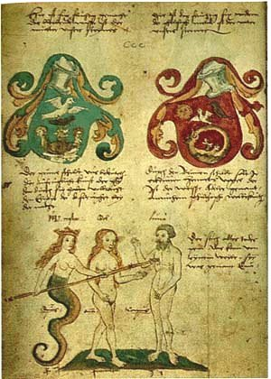
Das Buch der Heyligen Dreyfaltigkeit, XVe siècle
Le thème mystique du serpent et du Christ nous permet de revenir sur ce mythologème extraordinaire via la Mélusine paracelsienne. Cette illustration du Livre de la Sainte Trinité, alias Pandora, est tirée du Codex Germanicus 598 [Munich, 1420] dont on pense que la compilation a été effectuée par Hieronymus Reusner, alias Franciscus Epimetheus. Commentant les écrits de Paracelse, Jung écrit :
« ... le lieu d'origine de la Mélusine est le ventre des mystères, qui correspond de toute évidence à ce que nous appelons aujourd'hui l'inconscient. Les Mélusines n'ont pas d'organes génitaux, ce qui est une caractéristique de leur état paradisiaque, car Adam et Ève n'avaient pas encore d'organes génitaux lors de leur séjour au paradis. De plus le paradis était, dit-il, sous l'eau, et "y est encore". » [idem, § 222, p. 189, op. cit.]
On est amené à l'hypothèse que l'illustration du Buch der Heyligen Dreyfaltigkeit n'est autre que la représentation de la naissance de la sexualité. En d'autres termes, l'accession à l'individuation, via la désir. De là, on parvient à expliquer le mystère de la stérilité du Roi [voir supra] compris comme Adech : ce defectus originalis signalé dans la Cantilena Riplei est corrigé par Mélusine qui, tout en continuant à vivre dans le paradis, en tant qu'animal aquatique, vit aussi dans le sang humain [compris comme qu'âme ou anima
]. Éros et Mélusine ne
sont ainsi que des variations sur le thème d'un
archétype,
le désir, dont l'origine tient à l'expansion naturelle du
MOI. Une autre conclusion est que le désir étant partout,
on est en droit d'y voir un rapport avec le principe SEL des
alchimistes [et avec le ÇA
de la pysché], symbolisé par l'idéogramme , qui constitue en fait le sujet de l'Aurora consurgens, texte qui
commence par un chapitre sur le sel de sagesse [II.
Ce qu'est la Sagesse, in M.L. von Franz, op. cit. où deux
vieux traités sont cités par Mme von Franz qui en disent
long sur leur importance : le De
Chemia de Senior et le Consilium
Conjugii, voir Theatrum
Chemicum, vol. V] . Il est clair que le désir
ressortit de la teinture, du Soufre rouge et que le Sel agit à
son égard comme un aimant ; reconnaissons que ces
réflexions sont un rien triviales ; elles n'en expriment pas
moins une
vérité sous laquelle se cachent des archétypes et
mythologèmes assez importants pour qu'ils puissent constituer la
matière même de la schizogénie qui d'un
côté laisse l'anthropos seul [le MOI isolé ne semble pas d'une
grande viabilité], tel un corps mort et de l'autre
mène à la vie par accès à l'AUTRE,
du domaine du ÇA. Ce pouvoir d'attraction peut se traduire selon
: + <--> + . La est l'aimant de
tout comme est l'aimant pour : ces éléments s'attirent naturellement
deux à deux [voir Cristallogénie
et Idée alchimique, V]
bien que l'on connaisse des phénomènes de transfert [ +
en forme de vapeurs, de nuées ; + en forme de terre liquide ou lave] et des
phénomènes de projection
à sens physique [on notera
que ces projections résultent en général d'un
élément privatif qui vient à manquer en sorte de
faire « cristalliser » le processus de projection : ainsi,
la pluie résulte de -
; la terre, de - ; la foudre est un processus plus complexe qui
résulte d'interactions entre ,
et ; la force de l'air ou vent est sous
la dépendance des trois autres éléments. La est en apparence l'élément le plus
stable mais elle est soumise aux tourments des trois autres
éléments qui l'érodent ou la fissurent].
On remarque que, des quatre éléments, le couple {, } est passif alors que {,
} est actif. Des quatre éléments, c'est
qui paraît immuable; et sont les deux éléments qui sont «
mutables » [au sens de volatiles, susceptibles de
disparition ou de modification rapides, à mettre sous le compte
de , impliqué dans le transfert], au lieu
que et ont une portée spatiale [sous la médiation de ], l'un s'adaptant à l'autre par
imitation [
s'adapte à la forme de la par adaptation passive; les deux ont un
caractère fixe, en dépit des permutations de ].
Le couple passif trouve son complémentaire alchimique dans le
patient qui désigne le Soufre blanc ou matrice de la pierre tandis que l'agent, qui oriente la pierre, autrement
dit sa lumière
[voir Paracelse], est
dépendant du Soufre rouge ou teinture. Jung ajoute :« Le démiurge devient le diable qui a créé le monde et, peu après, l'alchimie commence à développer son concept du Mercure, de l'esprit en partie matériel, en partie immatériel qui pénètre et conserve la création depuis la pierre et le métal jusqu'à la créature vivante supérieure. » [Aïon, § 367, p. 252, op. cit.]
On rejoint ici le démiurge du RS avec le symbole du crapaud comme corruptio mundi. De ce crapaud, nous avons dit qu'il représentait le spiritus corruptus de la figure 8 du Rosarium Philosophorum. L'inconscient est présent in essentia : le
vient se mêler avec le ou calx
metalli où il forme le compost. L'humide radical
qui résulte de ce commerce du fixe et du volatil est à
l'image de l'adech ; l'évolution vers la créature vivante
supérieure, qui doit mener à l'individuation [l'auto information ou réincrudation] est la
transition vers le second Adam, médiée par le coup de
lance que Lilith vient de lancer au vieil Adam. Nous avons tout
à l'heure employé l'expression « espace
d'un instant fugitif ». Revenons-y : les
alchimistes ont trouvé une manière de lier l'espace au
temps, ce qui a donné lieu à des travaux initiés
par Jung [voir Aïon, op. cit.] et
poursuivis par M.L. von Franz [voir
Nombre et Temps, la Fontaine de
Pierre, trad. 1978]. Ces travaux ont mis en évidence le
lien qui existait entre des manifestations de la psyché et le
comportement des objets physiques élémentaires, où
s'exerce un phénomène que Jung a qualifié de
synchronicité [voir Synchronicité et Paracelsica,
op. cit.]. La manifestation de ce phénomène passe
en général par le biais de la lumière et c'est
là, tout particulièrement, que l'alchimie - par son
langage - rejoint la physique : les Adeptes disent dans leurs textes
que tout l'art consiste à rendre manifeste l'occulte. Crasselame
a même écrit un poème, Lux
Obnubilata, etc., où le thème se
trouve
développé. Et cette lumière a ceci de particulier
qu'elle est - à l'égale d'Atalante
- éminemment fugitive puisqu'elle ne dure que le temps d'un
éclair [le regard de
l'aigle]. Par analogie, tout semble indiquer qu'il faut
établir un rapport entre le véritable « coup
de foudre » imposé par Mélusine au
viel Adam et un idéogramme représentant la monade
alchimique dont nous avons parlé dans l'Aurora consurgens, II.Ce symbole manifeste la conjonction des principes qui se tient au printemps lors de l'ingrès
dans Arès. « À la fin du processus, dit Paracelse, se manifeste un éclair physique, et l'éclair de Saturne et celui du Soleil se séparent l'un de l'autre, et ce qui apparaît dans cet éclair ressortit à la longue vie, à l'indubitableemnt grand Iliaster. » [Jung, Paracelsica, op. cit., § 232, p. 195]
Cet éclair est la manifestation de la lumière; comme Jung l'indique en note [n. 168, p. 252], l'éclair passe de
à [De Vita longa, Sudhoff III, p. 283].
Rulandus [Lexicon Alchimiae, réed.
Georg
Olms Verlag, 1987] explique que l'éclair a ici le
même sens que le mot fulmen [on
voit l'allusion à Fulcanelli par fulgur] qui implique
une dépuration : il s'agit, si l'on préfère, d'une
sublimation à comprendre comme une «
élévation. » Jung estime que la foudre :«... correspond probablement à l'Iliaster magnus, qui est un rapt de l'esprit, par lequel l'homme est entraîné dans un autre monde, comme Hénoch, Elie et Paul » [Paracelsica, op. cit. in Rulandus, op. cit., p. 264]
L'expression « rapt de l'esprit » est fort intéressante car elle nous ramène aux mythologèmes [Perséphone, Ganymède, etc.] en même temps qu'au loup ravisseur des alchimistes que l'usage a consacré comme la
. Mais cet usage est trompeur comme
Fulcanelli l'a montré dans ses Demeures philosophales. En
revanche, le phénomène de captation par l'Aimant des
Sages correspond à une vérité hermétique :
il illustre le phénomène d'imprégnation que nous
voyons décrit à la figure 8
du Ros. Phil. « Le Mercurius... est la roue de feu de l'essence sous la forme d'un serpent. L'âme (non éclairée) est également un Mercurius ardent de ce genre. Vulcain embrasse la roue de feu de l'essence dans l'âme quand elle rompt avec Dieu; c'est de là que naissent le désir et le péché qui sont la colère de Dieu. » [Jung, Psychologie et Alchimie, op. cit., la symbolique du mandala, § 215, p. 218]
Analyse remarquable, en ce qu'elle met bien en évidence que c'est le moment de disjonction [schizoïdie radicale] d'avec le
où se manifeste le
logos que la Passio Christi
symbolise par la †.
Nous avons vu que cette croix manifeste per essenciae la
présence
de la Trinité : le corps [le
métal] est mis au creuset [crux, la croix] afin
d'être dépuré et que le spiritus corruptus [l'esprit cagastrique de Paracelse]
en soit chassé [Philalèthe
le nomme le larron] pour qu'il soit rapporté, in fine,
en une
anima renouvelée. Cette scène
est très forte
d'affects où la psyché se trouve être le
siège de projections dont la puissance numineuse tient de
l'extase et du sacré. Le corps mort est appelé cendre par
les alchimistes et ceux-ci sont formels :« Ne méprise pas la cendre, car elle est le diadème de ton coeur et la matière des choses éternelles. » [cité par Jung in Paracelsica, op. cit., § 225, p. 190]
La citation provient du Ros. Phil. [cinerem ne vilipendas, non ipse est diadema cordis tui, et permanentium cinis, in De Alchemia, f. LIII] et elle est manifestement empruntée à Morienus [voir aussi le Désir Désiré, apocryphe de Flamel, traité ancien qui se ressent d'une influence du De Compositione alchimiae in Artis Auriferae] . Cette cendre n'est autre que
- ioV -
portée à son degré ultime de corruption. L'Artiste
va alors s'efforcer de multiplier l'effet des trois principes, en sorte
que ce venin se transforme en : en effet : = 2. Cette opération
passe par la conjonction de la susbtance primitive [humide
radical] des luminaires {,
}, substance qui se trouve dans l'efflorescence de sels
métalliques colorés [anqemwnion = antimonium]
qui signalent leur présence par les couleurs de la queue de
paon, avec ces formations ocellées qui ont constitué
longtemps un mystère pour les impétrants : yeux, roues,
Christ, †.
Nous
voici reportés à ce passage
d'Ézéchiel :« Et les jantes des quatre roues étaient remplies d'yeux tout autour. Car l'esprit de l'être vivant était dans les roues. » [1 ; 18, 20]
dont Olivier Messiaen a fait le titre de l'une des pièces (la 6ème) de son Livre d'Orgue. La vision d'Ézéchiel
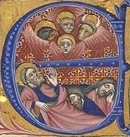
celle du Tétramorphe : il voit d'abord, venant du Septentrion [Borée] une nuée orageuse [ -
- ] accompagnée d'une lumière
éclatante. Une matière ressemblant à de l'airain
poli y brille [on retrouve cette
substance qui a le brillant nacré des yeux de poisson des textes
alchimiques]. Quatre faces humanoïdes apparaissent dans le
songe d'Ézéchiel : ce sont les Évangélistes
sous l'aspect thériomorphe :« Quant à la figure de leurs faces, ils avaient tous une face d'homme, tous quatre une face de lion à droite, tous quatre une face de boeuf à gauche, et tous quatre une face d'aigle. » [1; 10]
Une roue accompagne chacune de ces représentations thériomorphes : elle semble faite de chrysolithe [crusoliqoV = topaze] et l'esprit des animaux l'accompagne et y habite. Le firmament est de cristal [le vase de nature est de verre ou, plus exactement d'huile de verre : vitri oleum]. Une pierre de saphir est au faîte de cette théorie céleste. Et cette lumière céleste ressemble à l'arc-en-ciel. Peut-on voir, comme le suggère Jacob Boehme :
« ... que la vie spirituelle est tournée vers l'intérieur en dedans d'elle-même et que la vie naturelle est tournée vers l'extérieur et se fait face. On peut donc la comparer à une roue sphérique ronde qui va sur tous ses côtés, comme le montre la roue d'Ézéchiel. » [cité par Jung in Psychologie et Alchimie, op. cit., la symbolique du mandala, § 214, p. 216]
On peut visualiser cette roue sans excès d'imagination dans cette aquarelle du Livre de la Sainte Trinité. La vie spirituelle tournée en dedans représente le MOI : c'est le
que l'on aperçoit en haut de cette partie du RS. Le
a en lui les éléments de la Trinité {, , } : ils sont unis ce qui signifie qu'ils sont,
répétons-le, principiés c'est-à-dire
croisés [non
séparés, mêlés dans la substance mercurielle].
Le rayonne en plein et manifeste [voir chapitre 3]
le pouvoir naturel d'extraversion du MOI, freiné dans son
mouvement par le SOI. La que le dragon babylonien tient dans sa
gueule est la représentation du SOI en tant qu'animus [le
formant l'anima]. Jung revient sur Ézéchiel dans
un dernier passage :« Laurentius Ventura ne peut s'empécher d'établir un rapport entre la roue et la vision d'Ezéchiel. Ainsi, parlant du lapis, il dit qu'Ézéchiel a vu dans sa forme la roue dans la roue et l'esprit de vie qui se tenait au centre des roues. » [idem, le parallèle Lapis Christus, § 471, p. 488]
On ne peut s'empécher de faire le parallèle avec le feu de roue que Fulcanelli signale dans un quatre-feuille d'Amiens : il n'échappe pas aux fils de science [ainsi s'exprimait Djabbir] l'étroite parenté entre le feu de roue des alchimistes et l'esprit de vie que rapporte la Vulgate [Ezech, 1 : 20; à noter qu'une partie du texte latin rapporté par Jung de la Vulgate dans Ezech 1 : 16 : « et opus earum quasi visio maris » ne se retrouve pas dans les traductions en français que nous avons pu consulter, cf. Psychologie et alchimie, trad. fr. p. 489, n. 125]. Voyons à présent la sphère ailée : elle est appelée aurum aurae et on la présente comme le produit final de l'opus. Son symbolisme est complexe : il renvoie aux mythologèmes de l'Égypte antique. Le globe ailé est un symbole originaire de l’Assyrie et de l’Égypte ; il a été utilisé par une variété de groupes tels que la franc-maçonnerie, les spirites, la théosophie, les rose-croix, etc. On peut considérer qu'il s'agit du sulphur
en voie de dépuration [anima]. Le dragon à
queue serpentine joue le rôle du Mercure qui le nourrit de son
sang, de sa substance : équivalent du Lac virginis des textes. Le
disque ailé se retrouve fréquemment avec le serpent,
à cause du caractère cyclique de l'Ouroboros : en
Égypte,
le dieu-soleil, Râ, est un disque avec un serpent lové
autour de lui. Dans un second temps, le serpent, porteur de la
lumière du monde spirituel, a été identifié
à Lucifer ou josjorwV. Dès lors,
il a été rapporté à Satan,
le 4ème que Jung évoque dans sa Symbolique de l'Esprit.
Toutefois, le disque ailé se retrouve également chez les
Hittites et l'on peut se poser la question de savoir si ce symbole ne
pourrait pas être lié à Assur,
représenté armé d'un arc tendu [Sagittaire] et prêt
à décocher une flèche, au milieu d'un disque
ailé. La sphère ailée se retrouve dans l'imagerie
alchimique, comme dans l'Occulta
philosophia [Azoth]
du pseudo Basile
Valentin.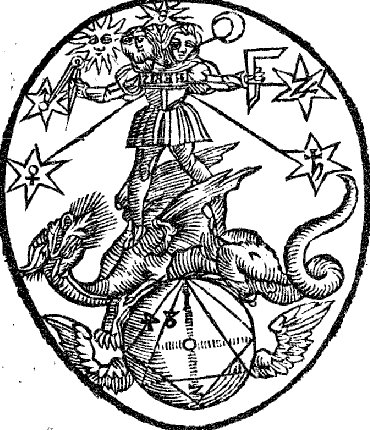
dernière figure de l'Azoth
On
relève des convergences non négligeables entre cette
figure et le panneau du RS : la sphère
ailée supporte le
dragon à queue serpentine, terrassé par l'hermaphrodite
tenant de curieux emblèmes : compas et équerre qui se
ressentent évidemment d'une origine R+C [voir Tractatus aureus et Liber Alze].
Curieusement, certains idéogrammes sont inversés, par
rapport à la version du Viatorum
spagyricum de Jamsthaler [Francoforti, 1625], notamment
le mot REBIS,
que l'hermaphrodite porte en blason sur sa poitrine et le chiffre 4, sur la sphère [inversion du 4 reprise dans la Bibliotheca chemica curiosa de Manget].
Cette
gravure évoque une aquarelle de la Pandora
[Codex Germanicus Alchemicus Vadiensis, Saint-Gall, XVIe siècle ; Codex Rhenovacensis ou Aurea hora, Zurich dont Jung estime que la valeur réside dans la série des dix huit illustrations symboliques jointes au texte vers la fin : certaines de ces images proviennent du Dryvaltigkeitsbuch du Codex Germanicus 598, 1420, Munich, Staatsbibiliothek. La source principale en est le Manuscrit alchimique de la bibliothèque universitaire de Bâle. D'après Jung, Paracelsica, trad. fr. p. 249, n. 129 à propos de Reusner].
Deux différences sont notables : d'une part, les symboles planétaires qui sont absents dans cette partie du RS [ils sont en fait bien là, mais dans les sept médaillons, et voilés; voir chapitre 1]. D'autre part, le REBIS lui-même qui apparaît in corpore dans l'Azoth, alors qu'il n'est que suggéré dans le RS ; ajoutons que la version de la Huntington Library montre que la
n'encadre pas vraiment le , chose pourtant bien visible dans
d'autres versions comme celle de la Wellcome Library.
On trouve encore la sphère ailée dans l'Aurum hermeticum de
Balduinus [Aurum superius et inferius aurae superioris
et inferioris hermeticum, Francoforti, Leipzig, 1675 repris dans
la Bibliotheca chemica curiosa, t. II, pp. 856-875] qui se
reflète dans la fons
vitae. On trouve enfin ceci dans Basile Valentin :
« Or celui qui sera curieux de savoir ce que c'est que toute choses dans toutes choses, qu'il fasse à la terre de grande ailes, et la rencogne et la presse tellement qu'elle monte en haut et vole par dessus toutes les montagnes, jusqu'au firmament, alors qu'il lui coupe les ailes à force de fer, ainsi qu'elle tombe dans la mer rouge et s'y noie, puis fasse calmer la mer, et dessèche ses eaux par feu, et par air, afin que la terre renaisse... » [Douze Clefs, premier livre de la Clavicule]
[Codex Germanicus Alchemicus Vadiensis, Saint-Gall, XVIe siècle ; Codex Rhenovacensis ou Aurea hora, Zurich dont Jung estime que la valeur réside dans la série des dix huit illustrations symboliques jointes au texte vers la fin : certaines de ces images proviennent du Dryvaltigkeitsbuch du Codex Germanicus 598, 1420, Munich, Staatsbibiliothek. La source principale en est le Manuscrit alchimique de la bibliothèque universitaire de Bâle. D'après Jung, Paracelsica, trad. fr. p. 249, n. 129 à propos de Reusner].
Deux différences sont notables : d'une part, les symboles planétaires qui sont absents dans cette partie du RS [ils sont en fait bien là, mais dans les sept médaillons, et voilés; voir chapitre 1]. D'autre part, le REBIS lui-même qui apparaît in corpore dans l'Azoth, alors qu'il n'est que suggéré dans le RS ; ajoutons que la version de la Huntington Library montre que la
n'encadre pas vraiment le , chose pourtant bien visible dans
d'autres versions comme celle de la Wellcome Library.
On trouve encore la sphère ailée dans l'Aurum hermeticum de
Balduinus [Aurum superius et inferius aurae superioris
et inferioris hermeticum, Francoforti, Leipzig, 1675 repris dans
la Bibliotheca chemica curiosa, t. II, pp. 856-875] qui se
reflète dans la fons
vitae. On trouve enfin ceci dans Basile Valentin :« Or celui qui sera curieux de savoir ce que c'est que toute choses dans toutes choses, qu'il fasse à la terre de grande ailes, et la rencogne et la presse tellement qu'elle monte en haut et vole par dessus toutes les montagnes, jusqu'au firmament, alors qu'il lui coupe les ailes à force de fer, ainsi qu'elle tombe dans la mer rouge et s'y noie, puis fasse calmer la mer, et dessèche ses eaux par feu, et par air, afin que la terre renaisse... » [Douze Clefs, premier livre de la Clavicule]
Si nous examinons bien la terre ailée du RS, nous y voyons en fait l'image de l'antimonium
qui se décompose en
et †.
Le premier signe est celui du vitriol [vitri oleum ou huile de verre : c'est
le vase de nature]; quant à la croix, elle est
l'hiéroglyphe du creuset [crux]
qui affirme la puissance du feu.
Ce feu est formé par le dragon à queue
serpentine dont la matière nutritive [le sang du
dragon
ou zandarith, alias sandaraqh]
abreuve les composants du lapis qui se
situent dans la partie inférieure et aquatique de la terre
hermétique. Ce « sang dragon » par cabale est le Lac virginis qui assure la
nutrition du Rebis :« On le sait, le lapis n'est pas qu'une pierre; les alchimistes affirment expressément qu'il est composé de re animali, vegetabili et minerali (de susbtance animale, végétale et minérale) et consiste en corps, âme et esprit (Rosarium); de plus, il croît de chair et de sang... C'est la raison pour laquelle le philosophe... dit : "Le vent l'a porté dans son ventre"... » [Jung, Psychologie et Alchimie, la symbolique du mandala, § 243, p. 233]
Là encore, c'est à demi mot qu'il faut entendre les paroles des philosophes : que le lapis ait en lui des substances d'origine végétale et minérale, c'est un fait assuré [alun, vitriols, colcothar, cendres de plantes du littoral marin, etc. participent de sa matière]. Que l'on y retrouve une origine animale, voilà autre chose. La cabale permet de comprendre que d'une part le lapis croît dans le Lait de vierge, au sein du vase de nature : cet accroissement, souvent compris comme une multiplication, à l'instar d'un cristal qui augmente sa masse dans une solution mère, a été considéré, à tort bien sûr, comme une sorte de vie animale [voir Cristallogénie]. D'autre part, la symbolique accorde au lapis, à côté de l'animus, la formation de l'anima
. La chair du lapis, on l'a dit maintes fois, n'est
autre que le corpus ou principe SEL - assimilé par certains au
lion porte or [voir Pernety,
article zodiaque].
Quant au sang, il s'agit du sulphur en voie de réincrudation. La citation finale de
notre extrait est tirée de la Tabula smaragdina et
exprime que la matière est d'abord sublimée [revoir figure
8 du Ros. Phil.]. Ce Soufre solaire est tiré du
Mercure souvent symbolisé par l'un des oiseaux de la
volière d'Hermès [voir
le pélican supra; on en trouve un
exemple dans l'imagerie en tant qu'allégorie du Christ in Jacob
Boschius, Symbolographia,
Augsburg, 1702].« L'or, la couleur royale, est attribuée à Dieu le Père; le rouge à dieu le Fils parce qu'il a versé son sang; et le vert, "la couleur qui verdoye et qui réconforte" au Saint-Esprit. » [idem, § 319, p. 280]
Il est évident, à ce stade, que l'on ne peut arriver à comprendre en quoi le dragon est lié à la vie du Rebis qu'en admettant - comme Jung le fait d'ailleurs - que le Christ et le serpent sont deux aspects d'une même entité archétypale, tantôt filius tantôt diabolus. Et tout paraît indiquer que ces deux formes sont irréductibles, en ce que l'on ne peut à la fois observer l'une et l'autre : c'est ce qui donne toute sa valeur à cette gravure de l'Azoth où l'on voit le Rebis tenir d'une main un compas et de l'autre une équerre. C'est pourtant à cette tâche, réputée impossible, que ce sont attelés les alchimistes : résoudre le problème de la quadratura circuli. Si l'on devait reprendre ce que nous disions tout-à-l'heure sur le parallèle entre physique quantique et alchimie [aspect relevé par Simon Diner in Louis de Broglie que nous avons connu, le dualisme onde particule et la tradition alchimique, pp. 59-64, Fondation Louis de Broglie - CNAM, 1988 ; voir aussi : C.G. Jung et W. Pauli, Naturerklärung und Psyche, studien aus dem C.G. Jung Institut IV, 1952 puis Walter-Verlag] on dirait que le compas [c'est-à-dire le
] est une indication sur le cercle qui
symbolise le Bien. À l'inverse l'équerre [qui s'apparente à la
par ses phases où se manifestent des ruptures] est une
indication surle quadratum ou Terre qui correspond
à la corruption et donc au Mal. L'unique moyen de lier le compas
et l'équerre est la croix [lieu
unique où objet
et sujet
coïncident dans le mystère de la Passion †, c'est-à-dire de la dissolution].
On comprend, par conséquent, qu'il y ait stricte
équivalence entre l'image de Longin perçant de sa lance
le flanc du Christ et celle de saint Georges [ou saint Michel] terrassant le
dragon. Voyons cela de plus près. Posons d'abord que le dragon
est le symbole du Père [voir
notre tarot alchimique où il
est facile d'observer qu'il s'agit de la lame de l'Empereur; voir
encore la nona figura du De Lapide Philosophorum de
Lambsprinck, in Musaeum Hermeticum,
p. 359 : le Roi triomphe du dragon chthonien et porte la ]. La psychologie admet qu'il s'agit du symbole
du SOI ; dans le processus d'individuation, le MOI doit s'affranchir du
frein naturellement exercé par le SOI en sorte d'établir
un rapport avec le ÇA [i.e.
l'Autre]. Cet affranchissement, le christianisme en a fait, par
la Rédemption, la clef de voûte de toute sa doctrine et la
Passio Christi
permet - en sa singularité - de trancher le noeud gordien de la quadratura circuli. C'est
ce qu'en psychanalyse on nomme le :« triomphe du Moi sur les tendances régressives... Le héros... doit se rendre compte que l'ombre existe et qu'il peut en tirer de la force... En d'autres termes, le Moi ne peut triompher qu'autant qu'il a d'abord maîtrisé et assimilé l'ombre » [Jung, l'Homme et ses symboles, p. 120, Paris, 1964]
La Crucifixion est donc ce mystère où Bien et Mal se trouvent confinés en un moment unique [ion] et ne luttent plus. Les alchimistes en ont fait leur dissolution et l'expriment par le signe
ou ioV [venin, rouille]. 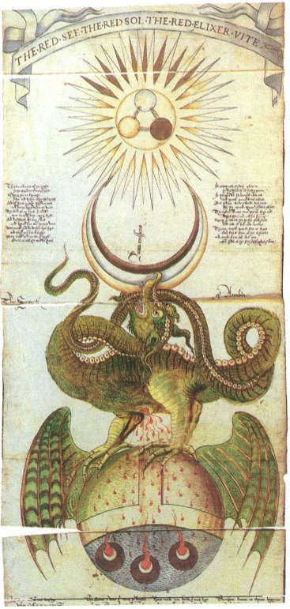
exemplaire du RS datant du XVIe siècle [il s'apparente à celui de Cambridge]
Le globe ailé comporte deux parties et l'on a vu que sa forme de
l'apparente au vitriol ou vase de nature. Ces deux
parties nous semblent être à l'image du YIN et du YANG, exactement comme nous
en avons parlé dans l'Aurora
consurgens, I. Le principe YANG
exprime en effet l'activité céleste [foudre, tonnerre] où
l'on peut voir comme une translittération de Zeus : . Il symbolise alors le sulphur ou dragon rouge [voir
IAMSUPH in Douze
Clefs de Basile Valentin]. Par son sulphur [sandragon], il délivre
la vie aux principes de l'oeuvre qui germent dans le Lac virginis. Cette autre
partie est aquatique et s'apparente au YIN, où la
thériomorphose en fait un [ou
deux] poissons ou encore un serpent d'eau. Il s'agit alors de qui est congénère du mercurius .« ... selon Ripley, la prima materia est l'eau; c'est le principe matériel de tous les corps, y compris du mercure. L'eau est la hyle qui est née du chaos sous la forme de la sphère noire (sphaericum opus) par suite de l'acte divin de création. » [Jung, Psychologie et Alchimie, la materia prima, 3. Ubiquité et perfection, op. cit., § 433, p. 417]
Jung ajoute que dans le RS, la sphère de l'eau est représentée avec des ailes de dragon et il donne un extrait des Verses belonging to an emblematic scrowle, en citant le spiritus Mercurii [voir infra les six vers suivant : « Of my blood and water I wis... »] L'allégorie paraît claire, du
qui se consume lui-même : le
sang du dragon est l'eau hylienne qui renferme le caché, comme l'écrit juste un peu plus
loin Jung; elle rejoint par là l'Iliaster et l'Aquaster de
Paracelse.« La [prima materia] est la terre noire, magiquement fertile, qu'Adam emporta du paradis, nommée ausi antimoine et décrite comme le noir plus noir que le noir (nigrum nigrius nigro). » [idem, p. 419, citation de Maier, Symbola aurea Mensae]
Cette eau ignée [feu aqueux] représente, au départ, la massa confusa donnée à l'Artiste comme le « vinaigre très aigre » de la Turba. En définitive, ce sang qui jaillit du dragon est une projection de l'eau étoilée et métallique destiné à assurer à l'or enté [l'or alchimique greffé ou enté dans la terra alba foliata] la réincrudation de sa substance en forme d'âme dépurée [anima aurea] :
« Ripley est de l'avis qu'on doit extraire le feu du chaos et le rendre visible. Ce feu est le Saint-Esprit qui unit le père et le fils... et il forme, avec le roi et le fils du roi, une trinité alchimique... Dieu a pétri ce feu dans la terre... Et dans ce feu, Dieu lui-même rayonne d'amour divin. » [idem, § 446, pp. 439-440]
La citation est d'importance; Jung l'a extraite de Barcius [F. v. Sternberg , Gloria Mundi, alias Paradyssi tabula, Sequitur nunc de origine metallorum, in Musaeum Hermeticum, pp. 241-246, 1678]. Le point important consiste en ce que le couple alchimique traditionnel est remplacé par la trinité [voir supra Lambsprinck]. Le vieillard ailé de la decimaquinta figura représente notre globe ailé : le roi, assis à sa droite, porte l'antimonium
ce qui laisse peu de doute
à l'interprétation. Le miracle de la réincrudation
est
permis par cette manne céleste ou élixir de vie [jarmakon
zwhV] que tant d'impétrants ont confondu avec la
pierre philosophale ou son équivalent liquide : cet
élixir est le liquide de nutrition du Rebis dont
l'équivalent chrétien semble résider dans la
Transsubstantiation, mystère sacré qui n'est jamais
qu'une projectio ex spiritu
[voir Racines de la conscience].
En définitive, quel est donc le but poursuivi par l'Artiste
démiurge ? Révéler une , équarrir sa à partir de la materia prima prise en
état de nigredo ; le moyen consiste à se
servir des outils de la trinité que sont
et . Le schéma général obéit
à ce genre de figure :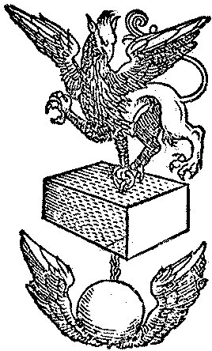
Marliani, Giovanni Bartolomeo, Topographia antiquae Romae
Lugduni : Apud Seb. Gryphium, 1534
Cette image assez exceptionnelle est un compendium du mystère de la Trinité : en haut, le griffon, chimère bien connue des disciples d'Hermès, réunissant les qualités des opposés [fixe par le côté léonin, volatile par le côté aquilin] ; au milieu, la pierre cubique ou « pierre du coignet » évoquée par Fulcanelli dans le Mystère des Cathédrales [ouvrage qu'hélas ! Jung ne put pas lire...] ; en bas, le globe ailé ou aurum aurae [or de l'or, i.e. moyen de fixation de l'or enté : il s'agit du christophore]. Nous aurions bien d'autres points à développer sur le sang, ces relations avec l'anima, l'animus mais cette section atteindrait alors des proportions un peu excessives. Nous renvoyons donc pour d'autres travaux ces considérations. Quoi qu'il en soit, les réflexions que nous avons développées nous ont conduit au thème du Père et du Fils qui se trouvent constituer la substance du dernier volet du RS. Il y a lieu de rapprocher ce panneau du RS avec une aquarelle du De alchimia que nous avons examinée dans l'Aurora consurgens II et qui apparaît aussi dans la Pandora (1, 2) : on y retrouve la
en forme de radix avec une
ébauche de l'arbor vitae
[qui est en rapport avec le globe
ailé] ; le dragon à la queue de serpent ; l'aigle
bicéphale [on peut
considérer que la couleur blanche de l'aigle s'apparente au fait
que, sur le RS, l'aigle dévore ses plumes, où la cabale
permet de voir le passage de la nigredo à l'albedo].6. Versets du Ripley Scrowle [Elias Ashmole, Theatrum Chemicum Britannicum, 1652, pp. 375-379]
Nous
avons repris le texte des Verses d'après le Theatrum Chemicum Britannicum
en modernisant l'orthographe. La traduction est disposée en
regard. Les pages sont indiquées entre (). 375
- 376 - 377 - 378
- 379 .
Notes complémentaires :
- Azoth : le premier nom que Adam donna à Ève quand il s'exclama : « Celle-ci (zoth), cette fois est os de mes os… » [Gen., II : 23]. Si nous considérons zoth comme un substantif précédé de l'article défini ha, nous obtenons hazoth, ou Azoth en écriture défective. Voir EH, Textes rabbiniques relatifs au serpent de la Genèse, Le Fil de Pénélope, La Table d'Émeraude, Paris, 1996, tome i, p. 280, note 3. Toutefois, il semble plus probable qu'Azoth vienne de l'arabe al-zâwûq (le mercure). Voir dans le corps du texte les références à l'Azoth du pseudo Basile Valentin.
- kibrît : le soufre.
- Agathodaimon.
- le texte indique of mais il doit s'agir de or, sinon il est incompréhensible.
- équivalent du griffon : l'aigle mange ses plumes et se transforme en lion.
- l'aqua permanens.
- nous lisons ici deed au lieu de dead.
- nous lisons table, c'est-à-dire déposer : rien ne doit être déposé [tout doit être transformé en vapeur]
- sore doit être traduit dans ce contexte par occultation [la douleur du c'est de voir que ses rayons ne
parviennent pas au but]
- il doit s'agir d'une corruption pour miss.
- il faut lire Hermogenes (né d'Hermogène, voir Douze Clefs de Basile valentin)
- par ground, il faut entendre terreau, terre préparée (presque terra alba foliata) au sens de champ préparé
- puits ne semble pas approprié; nous lisons source.
- Sur ce vers s'arrête le texte du phylactère de droite; la suite des Verses se situe dans les phylactères supérieurs.
Theatrum Chemicum Britannicum, Ashmole, p. 379 - bas de page
7)- le père et le fils
Le RS se termine en manière de récapitulation avec deux personnages dont l'un est présent sur tous les exemplaires : il s'agit de celui de gauche, à l'allure plus ou moins contournée selon les volumen et qui ne peut correspondre, selon la tradition, qu'au Fils. À droite, le vieux roi n'est présent que sur un nombre réduit d'exemplaires, ce qui peut signifier un délitement du sens hermétique [une étude comparative pourrait peut-être mettre en lumière que le Père n'apparaît que sur les exemplaires du RS les plus anciens]. Commençons par examiner ce personnage énigmatique - à gauche - qui a l'air égaré : nous l'avons déjà rencontré. Ce « fou » de l'oeuvre est le Mat du tarot alchimique. Il s'agit là d'une parabole sur le Mercure et non pas, comme on le pense plus communément, sur le rajeunissement du roi, son vis-à-vis, dans lequel il nous faut voir, plutôt, le Mercurius senex de Jung. Van Lennep assure qu'à gauche, nous avons :
«... un homme du peuple, un alchimiste pèlerin... C'est vraisemblablement un rouleau alchimique qui est enroulé autour du curieux bâton du pèlerin pointu à un bout et avec un fer à cheval à l'autre. Sur l'exemplaire de Yale, l'on peut en effet lire sur son extrémité déroulée : "Pitié pour moi qui ai gaspillé l'huile et le labeur" (Ve mihi miser qua olium et operam perdidit)... Ce pauvre pérégrinant possède certainement une singification chimique : il est ce servus ambulans, le serf voyageur symbolisant le vif-argent . On peut l'opposer au roi-soufre. » [Alchimie, op. cit., p. 431]
Nous sommes d'accord avec ces réflexions : c'est bien l'une des formes du qui est à voir dans le
servus fugitivus. Attardons-nous sur le fer à cheval : c'est un
symbole que nous avons déjà rencontré et qui
manifeste l'importance du travail de la forge. Voilà qui nous
renvoie à Vulcain - Héphaistos dont l'idéogramme
est † [voir supra].
Ce n'est pas tout : la forme du fer à cheval rappelle un C [c],
première lettre de cristou.
Et aussi le croissant de . Ce symbole traditionnel de porte
bonheur renferme donc des trésors en matière d'arcane
hermétique puisque nous tenons avec lui, le feu secret , la matière qui doit souffrir la passion et le signe mercuriel de la fertilité, passant
d'abord - nécessairement - par le trépas. Il est, du
reste, assez fréquent de voir côte à côte les
fer à cheval et les instruments de la passion et nous serions
même tentés d'y voir la figure d'un « christ
forgeron » bâtisseur
de son Église.
Comme dans l'histoire de l'humanité, c'est à l'âge
de bronze de son oeuvre [albedo]
que l'Artiste utilise cet instrument,
c'est-à-dire pour son Rebis ou Airain. Par ailleurs, on voit des
opposés à la lutte : le fer est synonyme de force dure,
époque de l'oeuvre marquée par l'eau typhonienne avant
que, le déluge ne s'épuisant, nous en venions à la
période de l'aqua permanens [assimilable au Lac virginis].
Toutefois, on peut inverser cette succession si l'on considère
que l'âge de fer aboutit à la coagulation dont l'âge
d'airain n'est que l'avant dernier terme. Et dans la tradition
biblique, le fer ou [qui
participe du vitriol et d'une certaine forme de sulphur ] s'oppose à ; mais cette opposition est factice puisqu'on sait que,
grâce à son filet, Héphaistos peut en faire un SCEL.
Et n'est-ce pas une pierre faite de ce coagulé que Cybèle tient dans à
la main, sur son trône où Atalante
et Hippoménès sont attelés ? Un autre type
d'opposés est manifeste dans le RS : on a vu que d'un
côté, à son bâton, le Fou a disposé un
fer à cheval, c'est-à-dire l'objet constitué ou
coagulum. De l'autre côté, une pointe qui apparaît
dans certaines versions comme une flèche, suivie d'une sorte de
rouleau où l'on peut aussi deviner un objet mis en forme de
pelote. Dans certaines versions, on l'a dit, ce personnage du wanderer est seul, par
exemple dans l'exemplaire de Hamburg localisé à la
British Library de Londres. Il semble implorer
le ciel, c'est-à-dire par transfert, le père,
celui-là même que l'on voit dans notre exemplaire. Il
réclame, tel Job, la communication de la vérité et
la connaissance de Dieu [par
cabale le Soufre, voir assonance qeion - qeioV]. Cette
projection de lui-même, par delà la matière est
l'oeuvre du spiritus sanctus
[l'esprit Mercure de Jung, voir
Symbolique de l'Esprit]
où les principes des philosophes
se trouvent transcendés, c'est-à-dire en forme
principiée [voir Livre d'Artephius]. Cette
véritable extravasation du conscient hors de la sphère
habituelle ou normative est ce que Jung nomme l'imagination active ; on
peut imaginer que c'est d'elle d'où Job tire la force de dire
à Yahvé :
« Mais je sais que mon Rédempteur est vivant, Et qu'il se lèvera le dernier sur la terre. Quand ma peau sera détruite, il se lèvera; Après que ma peau aura été détruite, moi-même je contemplerai Dieu. Je le verrai, et il me sera favorable; Mes yeux le verront, et non ceux d'un autre; Mon âme languit d'attente au-dedans de moi. » [Job 19 : 25-27]
L'hermétiste retiendra la phrase finale où Job dit que son anima attend en son SOI [animus ] en quoi il se réfère au des alchimistes. Sur la suite, voyez saint Jean Baptiste car la question
centrale de la rédemption y est inscrite, c'est-à-dire
celle de la réconciliation des opposés que nous avons
analysée à la 3ème partie du RS [voir chapitre
5]. N'en doutons pas, le problème fondamental est
évidemment celui du divin dans l'homme [voir sous le titre éponyme un
ouvrage de lettres de Jung, présenté par Michel Cazenave,
Albin Michel, 1999] et la question fondamentale est : Dieu
a-t-il fait l'homme à son image, ou n'est-ce pas bien
plutôt l'homme qui a fait Dieu à son image ? La
réponse à cette question est tranchée par bien des
gens qui, libres penseurs,
s'imaginent qu'ils sont - par définition - des penseurs libres mais à qui
échappent le concept de transcendance, seule voie d'accès
que la conscience ait trouvé dans la quête du Bien.
Nous sommes ici confrontés à ce que Jung a appelé
« l'expérience d'un sacré
immédiat et le plus souvent sauvage »
qui
est la définition même du numineux. Il semble bien que
cette partie finale du RS soit comme un rébus compris entre le
temps [l'alchimiste situé
à gauche] et l'éternité [l'esprit divin, le roi situé
à droite]. Nous tenons ainsi les deux aspects
fondamentaux de l'alchimie, compris sous l'angle de la lumière
qui occupe, on l'a vu, un rôle fondamental dans le symbolisme. La
figure du Roi, à droite, se trouve dans un nombre important de
traités; on en trouvera en bibliographie
une liste non exhaustive. Si l'on devait donner un exemple, parmi tant
d'autres, c'est certainement la série de la Preciosia
Margarita Novella de Bonus qui retiendrait notre
attention. En effet, on y trouve les deux aspects de ce que Jung
définit d'une part comme la guérison du roi [Mysterium
conjunctionis, t. I, Cantilena
Riplaei, trad. fr. pp.
34-95] et d'autre part comme le côté obscur du roi
[idem, pp. 96-110]. Ce
côté obscur est situé dans le monde de Draco et, en
même temps, il n'est pas sans rapport avec le Christ :
« Ainsi, dans l'Introïtus apertus, il est tout d'abord le feu secret, infernal, mais comme puellus regius (enfant royal), né à nouveau, il est une allégorie du Christ. » [Mysterium conjunctionis, II, 5. Le côté obscur du roi, trad. fr., § 131, p. 96]
Nous revenons ainsi à l'analogie/antagonisme entre le Christ et le serpent [voir chapitre 5]. Ce n'est pas ici que nous pourrons tenter de répondre à cette délicate question de la résolution des opposés. On peut tenter, néanmoins, de trouver le feu infernal et l'enfant royal dans ce bâton que tient notre pèlerin.
Rotulum hieroglyphicum G. Riplaei Equitis Aurati, London, Wellcome Institute MS. 692
On
ne saurait trouver de meilleure définition de cette racine que l'auro hora ou lever du soleil. Est-ce
là cette aurore que le pèlerin attend ? Est-ce donc ce
dont l'illuminé implore l'attente par ce geste
désespéré dont sa main gauche est
agitée ? Le soleil des alchimistes serait-il donc tout
aussi insaisissable que leur mercure ? En ce cas, nous serions en droit
d'y trouver, par leur conjonction, le secret de l'anima consurgens . Relevons ces dernières lignes :
« Si la figure alchimique du roi a donné lieu à de si longs développements, c'est d'une part qu'elle contient en définitive le mythe du héros dans son intégralité, y compris le renouvellement du roi et de Dieu, et d'autre part qu'elle nous paraît représenter la dominante qui règne sur la conscience. » [Jung, Mysterium conjunctionis, t. II, § 184, p. 139]
Nous ne pouvons ici entrer avec plus de détail sur la carrière du roi dans l'oeuvre des sages [voir Atalanta fugiens : emblème IX - XXIV - XXVIII - XXXI - XLIV - XLVIII sur les stades liés à la fermentation, la réincrudation, la sublimation, la mise au tombeau, la sudation]. Entre le Filius philosophorum et le Deus rex, un dernier phylactère central se déploie :
In the name of the trinity
Harke here and ye shall see
Myne author that firmith this worke
Both first last breye & barke
Some of them I shall you tell
Both in rime and in spell
Massalis est plat and peion
And the book of turba philosophorum
Both Aristotle Geber and Hermes
Also Lully Morien and Rosarres
Bonelles Raymondus and Albert
Arnold & Percy the Muncke soe blacke
Aros and Rasces and allso Destinia
The sister of Maises Mary prophitis
Baken also the grate Clarke
Firmith I wisse all this worke
All these acconseth now in one
That here is the philosophers stone
Overwise it may not bee
Understand this & councell the
And praye thou God of his grace
That thou maest have tyme and space
Too have the truth of this parrable
Thancke you God that is so stable
For many a man desireth this
[...]
All maner good men in his digne
Le MS. est malheureusement fort dégradé quelques lignes avant la fin du phylactère. Ce texte figure dans l'exemplaire du RS d'Edimburgh et dans celui de la Huntington Library. Il s'agit d'une sorte de récapitulation où l'auteur semble livrer ses sources avec des noms déformés [nous avons eu l'occasion à plusieurs reprises d'insister sur le fait que l'ensemble du texte était l'objet de corruptions]. Ainsi, Rosarres est Rosarius qui, in fine, ne semble être autre que Zosimus [voir Turba]. Bonelles est en fait Bonellus [alias Apollonios de Tyane, voir idée alchimique, II]. Raymondus renvoie au pseudo Lulle [voir Clavicule]. Arnold [Villa Nova] dont on doit encore indiquer l'importance dans le RS [voir supra à propos de Flos Florum et : "Manoscritti di interesse alchimistico esistenti presso la Biblioteca Nazionale V. Emanuele di Napoli" in Alchimia ieri e oggi. Atti e memorie dell’Accademia di Storia Dell’Arte Sanitaria 3 1982 pp. 153-164] ; une note particulière doit être donnée concernant Percy alias Pearce the black Monk [voir MS. 42 Newton]. On trouve l'un de ses textes dans le Theatrum chemicum Britannicum [Upon the elixir, pp. 269-275]. Il semble s'agir d'un écrit attribué à Villa Nova [De magno opere, Arnoldus de Villa Nova, ff.74b-78, in MS. Sloane 3688 et sous celui de Terra Terrae Philosophicae in Ripley's Works, Cassel 1649, p. 314 et MS. Sloane 3732]. Cette théorie de noms des vieux alchimistes semble reprise de l'Ordinall of Alchemy de Samuel Norton [in Theatrum Chemicum Britannicum, the Proheme, p. 8]
... They leese their Costs, as men see aldaye.
Hermes, Rasis, Geber, and Avicen,
Merlin, Hortolan, Democrit, and Morien,
Bacon, and Raimond, with others many moe
Wrote under covert, and Aristotle alsoe.
...As the Mounke which a Boke did write
Il ne semble pas douteux que l'auteur du dernier cartouche du RS, dans sa récapitulation, se soit inspiré de divers textes, rapportés dans un temps ultérieur par Elias Ashmole dans cette vaste compilation qu'est le Theatrum Chemicum Britannicum. Poursuivons : Aros renvoie au dialogue de Marie la Prophétesse [interlocutione Mariæ Prophetissæ, è habita cum aliquo Philosopho dicto Aros]; Destinia est une corruption de John Dastin dont un titre apparaît dans Ashmole [Dastin's Dreame. John Dastin p. 257-269], qui précède d'ailleurs le texte de Pearce. Baken est une corruption de Rogerius Baconius [voir Miroir d'alchimie]. Van Lennep écrit :
« Ils [le roi et l'alchimiste] encadrent un texte qui recommande à l'alchimiste de prier, remercier Dieu, craindre l'Enfer, méditer le sens du rouleau qui a trait à ce que tout le monde recherche, de spuissants aux plus humbles. » [Alchimie, p. 431]
Le RS s'achève par une remarque qui ne manquera pas d'étonner : après tant de beautés qui s'expriment dans les illustrations de ce volumen, l'inscription de ce phylactère semble s'inscrire dans ce que Paracelse nomme le cagastrum, un des nombreux néologismes dont il était friand.
On retrouve ce texte [voir supra] dans la Practica Magistri Arnaldi de Villanova in Epistola super Alchimia ad Regem Neapolitanum [Bibliotheca Chemica curiosa, t. 1, p. 684]. Tous les alchimistes savent que la prima materia doit être cherchée du côté des latrines, en liaison avec le sal petrae. Toutefois, ce contraste abrupt entre élévation spirituelle et projection dans le Tartare est fréquente dans les textes et aussi dans l'iconographie [voir l'emblème XLV de l'Atalanta fugiens et l'emblème XLIX qui en dira plus long que maints discours sur l'ombre archétypale et numineuse qui plane sur la psyché].
Verses
belonging to an emblematicall scrowle:Supposed
to be invented by Geo: Ripley.
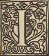 Shall you tell with plaine declaration, (375)Where, how, and what is my generacion: Omogeni is my Father, And Magnesia is my Mother: And Azoth truly is my Sifter, And Kibrick forfooth is my Brother: The Serpent of Arabia is my name, The which is leader of all this game : That fometyme was both wood and wild. And now l am both meeke and mild; The Sun and the Moone with their might, Have chaftifed me that was fo light: My Wings that me brought, Hither and thither where I thought Now with their might they downe me pull, And bring me where they woll, The blood of myne heart I wiss, Now causeth both Joy and blisse : And dissolveth the very Stone, (376) And knittech him ere he have done ; Now maketh hard that was lix, And caufeth him to be fix. Of my blood and water l wis, Plenty in all the World there is. It runneth in every place; Who it findeth he hath grace: In the World it runneth overall, And goeth round as a ball: But thou underftand well this, Or the worke thou shalt miss. Therefore know ere thou begin, What he is and all his kin, Many a Name he hath full fur, And all is but one Nature: Thou muft part him in three, And then knit him as the Trinity: And make them all but one, Loe here is the Philosophers Stone. The Bird of Hermes is my name, (a) Eating my wings to make me tame. In the Sea withouten lesse, Standeth the Bird of Hermes: Eating his Wings variable, And thereby maketh himselfe more stable; When all his Fethers be agon, He standeth still there as a stone; Here is now both White and Red, And also the Stone to quicken the dead, All and fume withouten fable, (377) Both hard, and nesh and malliable Understand now well aright, And thanke God of this fight. TAKE thou Phoebus that is so bright, (b) That sitteth so high in Majesty; With his beames that shineth soe light. In all places where ever that he be, For he is Father to all living things, Maynteyner of Lyfe to Crop and Roote, And causeth Nature forth to spring; With his wife being soote, For he is salve to every sore, To bring about thys precious worke; Take good heede unto his lore, I say to learned and to Clerk, And Omogeny is my Name: Which God shaped with his owne hand, And Magnesia is my Dame; Thou shalt verily understand, Now heere I shall begin, For to teach thee a ready way : Or else litle shalt thou wyn, Take good heed what l say; Devide thou Phoebus in many a parte; With his beames that byn so bright, And thus with Nature him Coarte, The which is mirrour of all light: This Phoebus hath full many a Name, Which that is full hard for to know; And but thou take the very same, The Philosophers Stone thout shalt not know, Therefore I councell ere thou begin: (378) Know him well what it be, And that is thick make it thin; For then it shall full well like the. Now understand well what I meane, And take good heed thereunto, The worke shall else litle be seene: And tourne thee unto mikle woe, As I have said in this our Lore, Many a Name I wiss it have, Some behinde, and some before; As Philosophers of yore him gave. On the Ground there is a Hill, (c) Also a Serpent within a Well: His Tayle is long with Wings wide, All ready to fly on every side, Repaire the Well round about, That the Serpent pas not out; For if that he be there agone, Thou loosest the vertue of die Stone, What is the Ground thou mayst know heere, And also the Well that is so cleere : And eke the Serpent with his Tayle Or else the worke shall litle availe, the Well must brenne in Water cleare, Take good heede for this thy Fyre, The Fire with Water brent shal be, And Water with Fire wash shall be, Then Earth on Fire shal be put, And Water with Air shal be knit, Thus ye shall go to Putrefaccion, And bring the Serpent to reduction. First he shal be Black as any Crow, (379) And downe in his Den shall lye full lowe: I swel' d as a Toade that lyeth on ground, Burst with bladders sitting so round, They shall to brast and lye full plaine, And thus with craft the Serpent is flaine: He shall shew Collours there many a one, And tourne as White as wil be the bone, With the Water that he was in, Wash him cleane from his sin: And let him drinke a litle and a lite, And that shall make him faire and white, The which Whitnes is ever abiding, Lo here is the very full finishing: Of the White Stone and the Red, loe here is the true deed. |
Je
dois vous dire par explication claire, Où, comment et quelle est ma génération, Omogeni est mon père, Et Magnésie est ma mère, Et Azoth vraiment est ma sœur, Et Kibrick en vérité est mon frère, Le Serpent d'Arabie est mon nom, Qui est le meneur de tout ce jeu, Qui quelquefois est à la fois bois et sauvage, Et maintenant je suis à la fois humble et doux, Le Soleil et la Lune avec leur puissance, M'ont purifié moi qui été si léger, Mes ailes qui m'ont amené, Ici et là où je pensais, Maintenant avec leur puissance me terrassent, Et m'amènent où elles veulent, Le sang de mon cœur j'espère, Maintenant apporte à la fois joie et béatitude, Et dissout la vraie pierre, Et le noue plus avant qu'il a fait, Maintenant faites dur ce qui était mou, Et le faites devenir fixe, De mon sang et mon eau je désire, Il y a abondance dans le monde entier, Il coule en chaque lieu, Qui le trouve possède la grâce, Il coule partout dans le monde, Et va, rond comme une boule, Mais vous, entendez bien ceci, ou vous manquerez l'oeuvre. Par conséquent sachez avant de commencer, Ce qu'il est ainsi que son espèce, Plein de nom il a pour sûr, qui tous, se résolvent en un : Nature, Vous devez le partager en trois, Puis le dresser en une Trinité, Et n'en faire plus qu'un, Voyez voici la Pierre Philosophale. L'oiseau d'Hermès est mon nom, Dévorant mes ailes pour me faire docile. Dans la mer sans lie, Se tient l’oiseau d’Hermès, Dévorant ses ailes changeantes, Et ainsi se stabilisant lui-même, Lorsque toute ses plumes ont disparues, Il se tient immobile comme une pierre, Il est maintenant blanc et rouge, Et tout autant la pierre pour accélérer l'opération, Tout cela doit être réduit en vapeur sans en ôter quoi que ce soit, Tous les deux dur, et mou et malléable, Comprenez bien et correctement maintenant, Et remerciez Dieu de cette vision. Prenez ce Phoebus si lumineux, Qui siège si haut en majesté, Avec ses rayons qui brillent de façon si éclatante, En toutes places qu’il puisse être, Car il est le père de tous les êtres vivants, Maintenant la vie des plantes et Racine de tout, Et qui impose à la nature le printemps, Avec sa femme débute l’éclipse, Car il est esclave de toute occultation, Pour parfaire ce grand oeuvre, Prenez garde à ce savoir, Je le dis au savants et aux clercs, Et Homogénie est son nom, Que Dieu fit de ses propre mains, Et Magnésie est sa dame, Comprenez bien. Maintenant je dis ici pour commencer, Pour vous enseigner une voie droite, Car autrement vous gagnerez peu, Prenez bien note de ce que je dis, Divisez votre Phoebus en plusieurs parts, Avec ses rayons qui sont si brillants, Et cela par la Nature le transforme, ce qui constitue le miroir de toute lumière, Ce Phoebus a plein de noms différents, Qu’il est difficile de connaître tous, prenez exactement le même, Philosophes de la pierre, vous devez le connaître, Par conséquent je vous conseille avant de commencer, De savoir vraiment ce qu’il est, Et ce qui est épais faites le subtil, Car il sera dès lors bien préparé, Comprenez bien ce que je dis, Et prenez bien note de ceci, Ou de votre travail vous ne recueillerez rien Et vous aurez grand chagrin, Comme j’ai déjà dis notre science, A plus d'un nom que j'ai oublié, Certains derrière certains devant, Comme les philosophes aiment lui donner, Sur la Terre il y a un mont, Ainsi qu'un serpent dans une source, Sa queue est longue et ses ailes déployées, Prêt a s'envoler de tous côtés, Faites un enclos autour de la source, Afin que le serpent ne s'en échappe, Car s'il venait à le faire, Vous perdriez la vertu de la pierre, Ce qu'est la Terre vous devez ici le savoir, Et également la source qui est si claire : Et quel est le dragon avec sa queue, Ou autrement le travail sera de peu d'utilité, La source doit donner de l'eau claire, Prenez bien garde à ceci, votre feu, Le feu avec l'eau brillante devra être brûlé, Et l'eau avec le feu devra être lavée, La terre sur le feu doit être mise, Et l'eau avec l'air doit être unie, De cette façon vous ferez la putréfaction, Et amenerez le serpent à la Rédemption, En premier il doit être noir comme un corbeau, Et au fond de sa tanière il devra être étendu, Gonflé comme un crapaud étendu sur le sol, Avec des vésicules le couvrant de toutes parts, Elles doivent éclater et s'étaler pleinement, Et c'est par cet artifice que le serpent est mis à mort, Il doit briller de plusieurs couleurs, Et devenir aussi blanc que des os, Avec l'eau en laquelle il était, Lavez le parfaitement de son péché, Et laissez le boire légèrement, Et cela devrait le rendre beau et blanc, Laquelle blancheur doit demeurer, Voyez ici est l'accomplissement de tout, De la pierre blanche et de la pierre rouge, Voyez ici la vraie manière d'opérer. |
Notes complémentaires :
- Azoth : le premier nom que Adam donna à Ève quand il s'exclama : « Celle-ci (zoth), cette fois est os de mes os… » [Gen., II : 23]. Si nous considérons zoth comme un substantif précédé de l'article défini ha, nous obtenons hazoth, ou Azoth en écriture défective. Voir EH, Textes rabbiniques relatifs au serpent de la Genèse, Le Fil de Pénélope, La Table d'Émeraude, Paris, 1996, tome i, p. 280, note 3. Toutefois, il semble plus probable qu'Azoth vienne de l'arabe al-zâwûq (le mercure). Voir dans le corps du texte les références à l'Azoth du pseudo Basile Valentin.
- kibrît : le soufre.
- Agathodaimon.
- le texte indique of mais il doit s'agir de or, sinon il est incompréhensible.
- équivalent du griffon : l'aigle mange ses plumes et se transforme en lion.
- l'aqua permanens.
- nous lisons ici deed au lieu de dead.
- nous lisons table, c'est-à-dire déposer : rien ne doit être déposé [tout doit être transformé en vapeur]
- sore doit être traduit dans ce contexte par occultation [la douleur du
c'est de voir que ses rayons ne
parviennent pas au but]- il doit s'agir d'une corruption pour miss.
- il faut lire Hermogenes (né d'Hermogène, voir Douze Clefs de Basile valentin)
- par ground, il faut entendre terreau, terre préparée (presque terra alba foliata) au sens de champ préparé
- puits ne semble pas approprié; nous lisons source.
- Sur ce vers s'arrête le texte du phylactère de droite; la suite des Verses se situe dans les phylactères supérieurs.
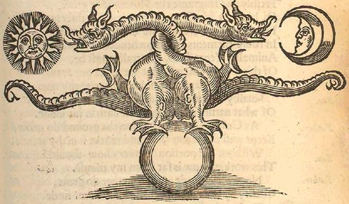
Theatrum Chemicum Britannicum, Ashmole, p. 379 - bas de page
7)- le père et le fils
Le RS se termine en manière de récapitulation avec deux personnages dont l'un est présent sur tous les exemplaires : il s'agit de celui de gauche, à l'allure plus ou moins contournée selon les volumen et qui ne peut correspondre, selon la tradition, qu'au Fils. À droite, le vieux roi n'est présent que sur un nombre réduit d'exemplaires, ce qui peut signifier un délitement du sens hermétique [une étude comparative pourrait peut-être mettre en lumière que le Père n'apparaît que sur les exemplaires du RS les plus anciens]. Commençons par examiner ce personnage énigmatique - à gauche - qui a l'air égaré : nous l'avons déjà rencontré. Ce « fou » de l'oeuvre est le Mat du tarot alchimique. Il s'agit là d'une parabole sur le Mercure et non pas, comme on le pense plus communément, sur le rajeunissement du roi, son vis-à-vis, dans lequel il nous faut voir, plutôt, le Mercurius senex de Jung. Van Lennep assure qu'à gauche, nous avons :
«... un homme du peuple, un alchimiste pèlerin... C'est vraisemblablement un rouleau alchimique qui est enroulé autour du curieux bâton du pèlerin pointu à un bout et avec un fer à cheval à l'autre. Sur l'exemplaire de Yale, l'on peut en effet lire sur son extrémité déroulée : "Pitié pour moi qui ai gaspillé l'huile et le labeur" (Ve mihi miser qua olium et operam perdidit)... Ce pauvre pérégrinant possède certainement une singification chimique : il est ce servus ambulans, le serf voyageur symbolisant le vif-argent . On peut l'opposer au roi-soufre. » [Alchimie, op. cit., p. 431]
Nous sommes d'accord avec ces réflexions : c'est bien l'une des formes du
qui est à voir dans le
servus fugitivus. Attardons-nous sur le fer à cheval : c'est un
symbole que nous avons déjà rencontré et qui
manifeste l'importance du travail de la forge. Voilà qui nous
renvoie à Vulcain - Héphaistos dont l'idéogramme
est † [voir supra].
Ce n'est pas tout : la forme du fer à cheval rappelle un C [c],
première lettre de cristou.
Et aussi le croissant de . Ce symbole traditionnel de porte
bonheur renferme donc des trésors en matière d'arcane
hermétique puisque nous tenons avec lui, le feu secret , la matière qui doit souffrir la passion et le signe mercuriel de la fertilité, passant
d'abord - nécessairement - par le trépas. Il est, du
reste, assez fréquent de voir côte à côte les
fer à cheval et les instruments de la passion et nous serions
même tentés d'y voir la figure d'un « christ
forgeron » bâtisseur
de son Église.
Comme dans l'histoire de l'humanité, c'est à l'âge
de bronze de son oeuvre [albedo]
que l'Artiste utilise cet instrument,
c'est-à-dire pour son Rebis ou Airain. Par ailleurs, on voit des
opposés à la lutte : le fer est synonyme de force dure,
époque de l'oeuvre marquée par l'eau typhonienne avant
que, le déluge ne s'épuisant, nous en venions à la
période de l'aqua permanens [assimilable au Lac virginis].
Toutefois, on peut inverser cette succession si l'on considère
que l'âge de fer aboutit à la coagulation dont l'âge
d'airain n'est que l'avant dernier terme. Et dans la tradition
biblique, le fer ou [qui
participe du vitriol et d'une certaine forme de sulphur ] s'oppose à ; mais cette opposition est factice puisqu'on sait que,
grâce à son filet, Héphaistos peut en faire un SCEL.
Et n'est-ce pas une pierre faite de ce coagulé que Cybèle tient dans à
la main, sur son trône où Atalante
et Hippoménès sont attelés ? Un autre type
d'opposés est manifeste dans le RS : on a vu que d'un
côté, à son bâton, le Fou a disposé un
fer à cheval, c'est-à-dire l'objet constitué ou
coagulum. De l'autre côté, une pointe qui apparaît
dans certaines versions comme une flèche, suivie d'une sorte de
rouleau où l'on peut aussi deviner un objet mis en forme de
pelote. Dans certaines versions, on l'a dit, ce personnage du wanderer est seul, par
exemple dans l'exemplaire de Hamburg localisé à la
British Library de Londres. Il semble implorer
le ciel, c'est-à-dire par transfert, le père,
celui-là même que l'on voit dans notre exemplaire. Il
réclame, tel Job, la communication de la vérité et
la connaissance de Dieu [par
cabale le Soufre, voir assonance qeion - qeioV]. Cette
projection de lui-même, par delà la matière est
l'oeuvre du spiritus sanctus
[l'esprit Mercure de Jung, voir
Symbolique de l'Esprit]
où les principes des philosophes
se trouvent transcendés, c'est-à-dire en forme
principiée [voir Livre d'Artephius]. Cette
véritable extravasation du conscient hors de la sphère
habituelle ou normative est ce que Jung nomme l'imagination active ; on
peut imaginer que c'est d'elle d'où Job tire la force de dire
à Yahvé :« Mais je sais que mon Rédempteur est vivant, Et qu'il se lèvera le dernier sur la terre. Quand ma peau sera détruite, il se lèvera; Après que ma peau aura été détruite, moi-même je contemplerai Dieu. Je le verrai, et il me sera favorable; Mes yeux le verront, et non ceux d'un autre; Mon âme languit d'attente au-dedans de moi. » [Job 19 : 25-27]
L'hermétiste retiendra la phrase finale où Job dit que son anima
attend en son SOI [animus ] en quoi il se réfère au des alchimistes. Sur la suite, voyez saint Jean Baptiste car la question
centrale de la rédemption y est inscrite, c'est-à-dire
celle de la réconciliation des opposés que nous avons
analysée à la 3ème partie du RS [voir chapitre
5]. N'en doutons pas, le problème fondamental est
évidemment celui du divin dans l'homme [voir sous le titre éponyme un
ouvrage de lettres de Jung, présenté par Michel Cazenave,
Albin Michel, 1999] et la question fondamentale est : Dieu
a-t-il fait l'homme à son image, ou n'est-ce pas bien
plutôt l'homme qui a fait Dieu à son image ? La
réponse à cette question est tranchée par bien des
gens qui, libres penseurs,
s'imaginent qu'ils sont - par définition - des penseurs libres mais à qui
échappent le concept de transcendance, seule voie d'accès
que la conscience ait trouvé dans la quête du Bien.
Nous sommes ici confrontés à ce que Jung a appelé
« l'expérience d'un sacré
immédiat et le plus souvent sauvage »
qui
est la définition même du numineux. Il semble bien que
cette partie finale du RS soit comme un rébus compris entre le
temps [l'alchimiste situé
à gauche] et l'éternité [l'esprit divin, le roi situé
à droite]. Nous tenons ainsi les deux aspects
fondamentaux de l'alchimie, compris sous l'angle de la lumière
qui occupe, on l'a vu, un rôle fondamental dans le symbolisme. La
figure du Roi, à droite, se trouve dans un nombre important de
traités; on en trouvera en bibliographie
une liste non exhaustive. Si l'on devait donner un exemple, parmi tant
d'autres, c'est certainement la série de la Preciosia
Margarita Novella de Bonus qui retiendrait notre
attention. En effet, on y trouve les deux aspects de ce que Jung
définit d'une part comme la guérison du roi [Mysterium
conjunctionis, t. I, Cantilena
Riplaei, trad. fr. pp.
34-95] et d'autre part comme le côté obscur du roi
[idem, pp. 96-110]. Ce
côté obscur est situé dans le monde de Draco et, en
même temps, il n'est pas sans rapport avec le Christ :« Ainsi, dans l'Introïtus apertus, il est tout d'abord le feu secret, infernal, mais comme puellus regius (enfant royal), né à nouveau, il est une allégorie du Christ. » [Mysterium conjunctionis, II, 5. Le côté obscur du roi, trad. fr., § 131, p. 96]
Nous revenons ainsi à l'analogie/antagonisme entre le Christ et le serpent [voir chapitre 5]. Ce n'est pas ici que nous pourrons tenter de répondre à cette délicate question de la résolution des opposés. On peut tenter, néanmoins, de trouver le feu infernal et l'enfant royal dans ce bâton que tient notre pèlerin.
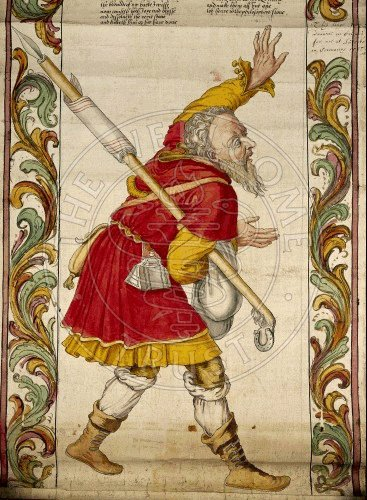
Rotulum hieroglyphicum G. Riplaei Equitis Aurati, London, Wellcome Institute MS. 692
Si
l'on y réfléchit bien, il est possible de trouver un
symbole thériomorphe réunissant le sabot du cheval et la
pointe d'une lance : il s'agit de la licorne. Nous n'oserons pas
affirmer que le bourdon que tient ce pèlerin est le sulphur , son symbole consacré en alchimie [Jung tient cet animal pour le Mercure
alors que la tertia figura du De Lapide Philosophorum de
Lambsprinck donne à entendre le contraire du fait de la
présence du cerf, animal mercuriel].
En liaison avec cette pointe, le sabot fait voir d'une part le rayon
solaire igné ou s'exprime la révélation divine;
d'autre part le symbole de fécondité spirituelle qui
résulte du frappement du rocher d'où s'écoule
l'eau de la source d'Hippocrène [créée autrefois par
Pégase, qui est considéré par les
théologiens avertis comme étant une ombre de la licorne].
Il paraît raisonnable d'admettre que le bâton de
pèlerin est porteur des symboles de
[par le sabot] et de [par la pointe].
Le bâton lui-même forme l'équivalent de la tige du
caducée d'Hermès et le rouleau représente le
double . Ce n'est là qu'une
conjecture. Quoi qu'il en soit, ce Riplaei Equitis Aurati
s'inscrit dans la longue lignée des pèlerins plus ou
moins illuminés où l'on est en droit de voir avant tout
le
symbole de l'inconscience ou de la vanité [comprise comme l'impossibilité
d'arriver à trouver le chemin sûr, la bonne voie].
Ceci ne semble vrai que pour les exemplaires où le Roi
n'apparaît pas. Il fait pendant à l'illuminé et
tempère son état d'agitation, bien visible sur ce rotulum hieroglyphicum.
Jung
consacre d'ailleurs le chapitre 7 de son Mysterium conjunctionis
à la Relation du
symbole du Roi avec la conscience [t. II, pp. 124-135] en
évoquant la Cantilena
Riplaei. Il convient de parler non seulement de
conscience mais d'éveil, et ce dans le sens d'individuation.
À cette occasion, Jung revient sur ce jeu de miroir entre
lumière et réflexion où
et impriment leur rayons dans l'étendue de
l'arcane mystérieux. Tantôt visible, tantôt
invisible, la est le vecteur idéal des
transformations inconscientes de la psyché et aussi des
évolutions du roi de l'oeuvre alchimique. Si nous reprenons
à grand trait certaines des gravures de Petrus Bonus, dans sa Pretiosa
Margarita novella, nous observons que le roi est mis
à mort par l'épée [SOLVE]. Cette mort exprime la
nigredo : la materia prima est tirée
du gîte minier [voir figure XXII de l'Aurora consurgens ou la planche V du Splendor Solis]. On sait
que le vieux roi est l'un des symboles de la
materia prima, en tant que
radix ipsius,
comme le dit le pseudo Platon :
« Tout or est airain, mais tout airain n’est pas or. C’est pourquoi notre airain a un corps, une âme et un esprit et ces trois sont un. Car tous viennent d’un seul, sont d’un seul et avec un seul qui est la racine de lui-même. » [Rosarium Philosophorum, De notre Mercure qui est le Lion vert dévorant le Soleil]
, son symbole consacré en alchimie [Jung tient cet animal pour le Mercure
alors que la tertia figura du De Lapide Philosophorum de
Lambsprinck donne à entendre le contraire du fait de la
présence du cerf, animal mercuriel].
En liaison avec cette pointe, le sabot fait voir d'une part le rayon
solaire igné ou s'exprime la révélation divine;
d'autre part le symbole de fécondité spirituelle qui
résulte du frappement du rocher d'où s'écoule
l'eau de la source d'Hippocrène [créée autrefois par
Pégase, qui est considéré par les
théologiens avertis comme étant une ombre de la licorne].
Il paraît raisonnable d'admettre que le bâton de
pèlerin est porteur des symboles de
[par le sabot] et de [par la pointe].
Le bâton lui-même forme l'équivalent de la tige du
caducée d'Hermès et le rouleau représente le
double . Ce n'est là qu'une
conjecture. Quoi qu'il en soit, ce Riplaei Equitis Aurati
s'inscrit dans la longue lignée des pèlerins plus ou
moins illuminés où l'on est en droit de voir avant tout
le
symbole de l'inconscience ou de la vanité [comprise comme l'impossibilité
d'arriver à trouver le chemin sûr, la bonne voie].
Ceci ne semble vrai que pour les exemplaires où le Roi
n'apparaît pas. Il fait pendant à l'illuminé et
tempère son état d'agitation, bien visible sur ce rotulum hieroglyphicum.
Jung
consacre d'ailleurs le chapitre 7 de son Mysterium conjunctionis
à la Relation du
symbole du Roi avec la conscience [t. II, pp. 124-135] en
évoquant la Cantilena
Riplaei. Il convient de parler non seulement de
conscience mais d'éveil, et ce dans le sens d'individuation.
À cette occasion, Jung revient sur ce jeu de miroir entre
lumière et réflexion où
et impriment leur rayons dans l'étendue de
l'arcane mystérieux. Tantôt visible, tantôt
invisible, la est le vecteur idéal des
transformations inconscientes de la psyché et aussi des
évolutions du roi de l'oeuvre alchimique. Si nous reprenons
à grand trait certaines des gravures de Petrus Bonus, dans sa Pretiosa
Margarita novella, nous observons que le roi est mis
à mort par l'épée [SOLVE]. Cette mort exprime la
nigredo : la materia prima est tirée
du gîte minier [voir figure XXII de l'Aurora consurgens ou la planche V du Splendor Solis]. On sait
que le vieux roi est l'un des symboles de la
materia prima, en tant que
radix ipsius,
comme le dit le pseudo Platon :« Tout or est airain, mais tout airain n’est pas or. C’est pourquoi notre airain a un corps, une âme et un esprit et ces trois sont un. Car tous viennent d’un seul, sont d’un seul et avec un seul qui est la racine de lui-même. » [Rosarium Philosophorum, De notre Mercure qui est le Lion vert dévorant le Soleil]
dont l'illuminé implore l'attente par ce geste
désespéré dont sa main gauche est
agitée ? Le soleil des alchimistes serait-il donc tout
aussi insaisissable que leur mercure ? En ce cas, nous serions en droit
d'y trouver, par leur conjonction, le secret de l'anima consurgens . Relevons ces dernières lignes :« Si la figure alchimique du roi a donné lieu à de si longs développements, c'est d'une part qu'elle contient en définitive le mythe du héros dans son intégralité, y compris le renouvellement du roi et de Dieu, et d'autre part qu'elle nous paraît représenter la dominante qui règne sur la conscience. » [Jung, Mysterium conjunctionis, t. II, § 184, p. 139]
Nous ne pouvons ici entrer avec plus de détail sur la carrière du roi dans l'oeuvre des sages [voir Atalanta fugiens : emblème IX - XXIV - XXVIII - XXXI - XLIV - XLVIII sur les stades liés à la fermentation, la réincrudation, la sublimation, la mise au tombeau, la sudation]. Entre le Filius philosophorum et le Deus rex, un dernier phylactère central se déploie :
In the name of the trinity
Harke here and ye shall see
Myne author that firmith this worke
Both first last breye & barke
Some of them I shall you tell
Both in rime and in spell
Massalis est plat and peion
And the book of turba philosophorum
Both Aristotle Geber and Hermes
Also Lully Morien and Rosarres
Bonelles Raymondus and Albert
Arnold & Percy the Muncke soe blacke
Aros and Rasces and allso Destinia
The sister of Maises Mary prophitis
Baken also the grate Clarke
Firmith I wisse all this worke
All these acconseth now in one
That here is the philosophers stone
Overwise it may not bee
Understand this & councell the
And praye thou God of his grace
That thou maest have tyme and space
Too have the truth of this parrable
Thancke you God that is so stable
For many a man desireth this
[...]
All maner good men in his digne
Le MS. est malheureusement fort dégradé quelques lignes avant la fin du phylactère. Ce texte figure dans l'exemplaire du RS d'Edimburgh et dans celui de la Huntington Library. Il s'agit d'une sorte de récapitulation où l'auteur semble livrer ses sources avec des noms déformés [nous avons eu l'occasion à plusieurs reprises d'insister sur le fait que l'ensemble du texte était l'objet de corruptions]. Ainsi, Rosarres est Rosarius qui, in fine, ne semble être autre que Zosimus [voir Turba]. Bonelles est en fait Bonellus [alias Apollonios de Tyane, voir idée alchimique, II]. Raymondus renvoie au pseudo Lulle [voir Clavicule]. Arnold [Villa Nova] dont on doit encore indiquer l'importance dans le RS [voir supra à propos de Flos Florum et : "Manoscritti di interesse alchimistico esistenti presso la Biblioteca Nazionale V. Emanuele di Napoli" in Alchimia ieri e oggi. Atti e memorie dell’Accademia di Storia Dell’Arte Sanitaria 3 1982 pp. 153-164] ; une note particulière doit être donnée concernant Percy alias Pearce the black Monk [voir MS. 42 Newton]. On trouve l'un de ses textes dans le Theatrum chemicum Britannicum [Upon the elixir, pp. 269-275]. Il semble s'agir d'un écrit attribué à Villa Nova [De magno opere, Arnoldus de Villa Nova, ff.74b-78, in MS. Sloane 3688 et sous celui de Terra Terrae Philosophicae in Ripley's Works, Cassel 1649, p. 314 et MS. Sloane 3732]. Cette théorie de noms des vieux alchimistes semble reprise de l'Ordinall of Alchemy de Samuel Norton [in Theatrum Chemicum Britannicum, the Proheme, p. 8]
... They leese their Costs, as men see aldaye.
Hermes, Rasis, Geber, and Avicen,
Merlin, Hortolan, Democrit, and Morien,
Bacon, and Raimond, with others many moe
Wrote under covert, and Aristotle alsoe.
...As the Mounke which a Boke did write
Il ne semble pas douteux que l'auteur du dernier cartouche du RS, dans sa récapitulation, se soit inspiré de divers textes, rapportés dans un temps ultérieur par Elias Ashmole dans cette vaste compilation qu'est le Theatrum Chemicum Britannicum. Poursuivons : Aros renvoie au dialogue de Marie la Prophétesse [interlocutione Mariæ Prophetissæ, è habita cum aliquo Philosopho dicto Aros]; Destinia est une corruption de John Dastin dont un titre apparaît dans Ashmole [Dastin's Dreame. John Dastin p. 257-269], qui précède d'ailleurs le texte de Pearce. Baken est une corruption de Rogerius Baconius [voir Miroir d'alchimie]. Van Lennep écrit :
« Ils [le roi et l'alchimiste] encadrent un texte qui recommande à l'alchimiste de prier, remercier Dieu, craindre l'Enfer, méditer le sens du rouleau qui a trait à ce que tout le monde recherche, de spuissants aux plus humbles. » [Alchimie, p. 431]
Le RS s'achève par une remarque qui ne manquera pas d'étonner : après tant de beautés qui s'expriment dans les illustrations de ce volumen, l'inscription de ce phylactère semble s'inscrire dans ce que Paracelse nomme le cagastrum, un des nombreux néologismes dont il était friand.
On retrouve ce texte [voir supra] dans la Practica Magistri Arnaldi de Villanova in Epistola super Alchimia ad Regem Neapolitanum [Bibliotheca Chemica curiosa, t. 1, p. 684]. Tous les alchimistes savent que la prima materia doit être cherchée du côté des latrines, en liaison avec le sal petrae. Toutefois, ce contraste abrupt entre élévation spirituelle et projection dans le Tartare est fréquente dans les textes et aussi dans l'iconographie [voir l'emblème XLV de l'Atalanta fugiens et l'emblème XLIX qui en dira plus long que maints discours sur l'ombre archétypale et numineuse qui plane sur la psyché].